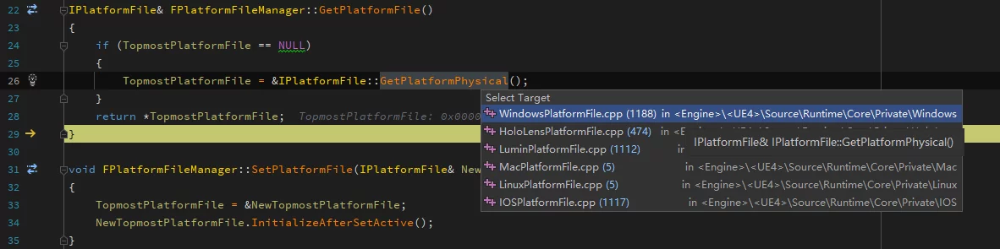
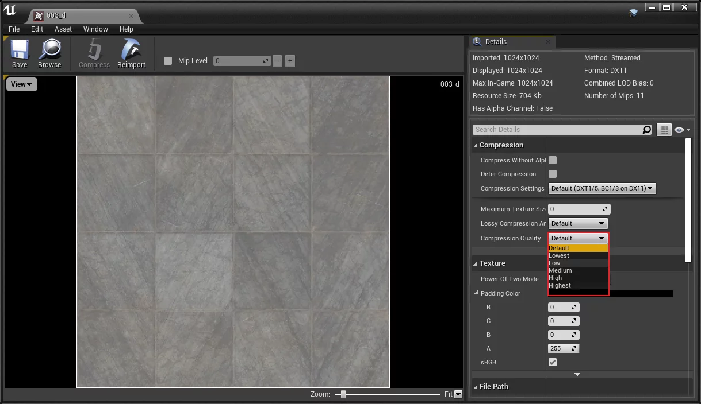
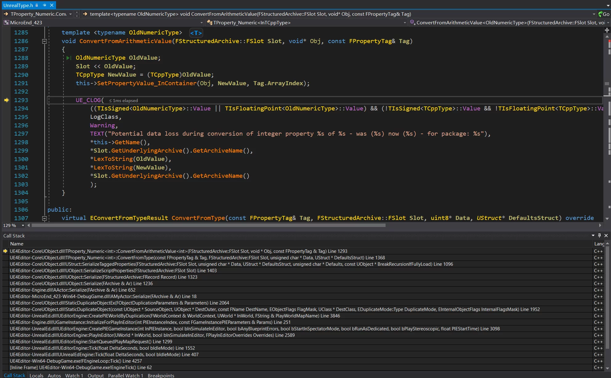
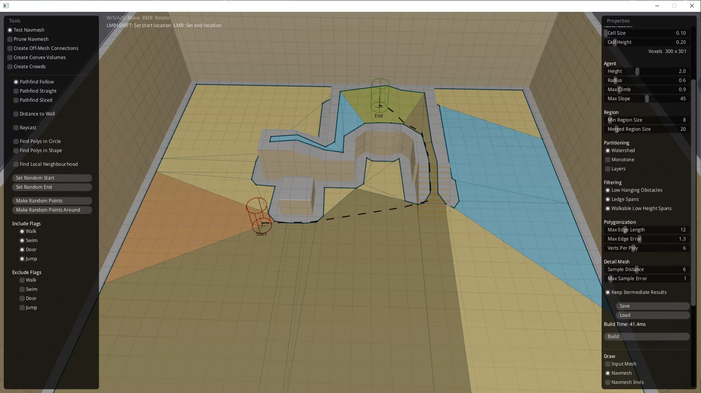

GIST NOTES 注意 ：使用GIST管理的笔记，在国内网络可能会无法显示。
Windows.h造成的名字冲突 有时候需要包含一些平台相关的代码，如windows.h里面包含了很多头文件，其中一些定义了很多宏，如：
fileapi.h 1 2 3 4 5 #ifdef UNICODE #define DeleteFile DeleteFileW #else #define DeleteFile DeleteFileA #endif
如果我们同时在代码中包含了windows.h和使用了IPlatformFile的接口来调用它的DeleteFile函数，因为DeleteFile被定义成了宏，所以在预处理阶段就会被替换，导致编译时访问IPlatformFile的DeleteFileW成员，但实际上它是不存在的，就产生了以下编译错误：
1 error C2039: 'DeleteFileW': is not a member of 'IPlatformFile'
解决办法就是不直接包含windows.h而是使用以下封装：
1 2 3 #include "Windows/AllowWindowsPlatformTypes.h" #include "windows.h" #include "Windows/HideWindowsPlatformTypes.h"
这样可以避免污染UE的符号名字。
UE的文档中也有介绍：第三方库#故障排除
Core Redirects 有时候Class/Enums/functions/packages/property/struct被改了名字，导致所有引用到它们的资源都要手动修改一遍，非常麻烦。
为了解决这个问题，UE提供了重定向功能，可以在不变动大量资源的情况下进行重定向到新的资源。
打包时Shader的编译 UE打包项目时并不是所有的shader都会被编译到ushaderbytecode中的，只有打包进去的才会编译进去。
把/Game添加到了Directories to Never Cook
打包工程到Android
最终编译出来的ushaderbytecode的大小为：
在UE打包时会拉起Cook进行执行资源的Cook和Shader的编译，应该是在当前的Cook进程中编译的Shader最终会写入到ushaderbytecode文件中，没有被执行Cook的资源不会被编译Shader，从而实现了不会把没有用到的Shader打包的行为。
不过以上只是猜测，有时间具体分析下Cook和Shader编译相关的代码。
DDC共享 共享DDC的作用是：当同一网络内共享DDC的人只要有一个人编译了DDC，其他人就无需重新编译，节省Shader的编译时间，提高效率。
所以，一般情况下只需要在局域网内部署一个高IO吞吐的机器，每个人都把该机器的共享目录挂载到本地，就可以实现DDC的共享，因为DDC的目录是相对于网络路径的，所以每个人的修改都会影响到其他人，从而实现一个编译多人共享的效果。
UE的文档里介绍了三种设置的方法：
修改DefaultEngine.ini添加DerivedDataBackendGraph项；
系统中添加UE-SharedDataCachePath环境变量；
在UE的Editor Preferences-Global-Shared Derived Data Cache设置共享的DDC目录；
UE推荐的是使用第一种方法，但是具体实践和文档中介绍的略有不同。
对于源码版引擎，使用DDC文档中介绍的第一种方法，在项目的DefaultEngine.ini中添加以下项：
DefaultEngine.ini 1 2 [DerivedDataBackendGraph] Shared =(Type=FileSystem, ReadOnly=false , Clean=false , Flush=false , DeleteUnused=true , UnusedFileAge=10 , FoldersToClean=10 , MaxFileChecksPerSec=1 , ConsiderSlowAt=70 , PromptIfMissing=false , Path=\\YourDDCServer\DDC, EnvPathOverride=UE-SharedDataCachePath, EditorOverrideSetting=SharedDerivedDataCache)
但是对于安装版引擎（Installed），要把DerivedDataBackendGraph改成InstalledDerivedDataBackendGraph：
DefaultEngine.ini 1 2 [InstalledDerivedDataBackendGraph] Shared =(Type=FileSystem, ReadOnly=false , Clean=false , Flush=false , DeleteUnused=true , UnusedFileAge=10 , FoldersToClean=10 , MaxFileChecksPerSec=1 , ConsiderSlowAt=70 , PromptIfMissing=false , Path=\\YourDDCServer\FMGame\DDC, EnvPathOverride=UE-SharedDataCachePath, EditorOverrideSetting=SharedDerivedDataCache)
这是因为引擎在Developer/DerivedDataCache/Private/DerivedDataBackends.cpp中对安装版和源码版做了区分：
1 2 3 4 5 6 7 8 9 10 11 FDerivedDataBackendGraph() { if ( !RootCache ) { GraphName = FApp::IsEngineInstalled() ? TEXT("InstalledDerivedDataBackendGraph" ) : TEXT("DerivedDataBackendGraph" ); } };
在设置完之后就可以通过Commandlet来执行DDC的生成了：
1 Engine\Binaries\Win64\UE4Editor.exe Client\Client.uproject -run=DerivedDataCache -fill
该Commandlet定义在Editor/UnrealEd/Classes/Commandlets/DerivedDataCacheCommandlet.h。
.target文件 UE编译项目（Game/Program等）的时候会生成该项目的target文件，记录了该项目的文件依赖，以UHT为例
UnrealHeaderTool.target 1 2 3 4 5 6 7 8 9 10 11 12 13 14 15 16 17 18 19 20 21 22 23 24 25 26 27 28 29 30 31 32 33 34 35 36 37 38 39 40 41 42 43 44 45 46 47 48 49 50 51 52 53 54 55 56 57 58 59 60 61 62 63 64 65 66 67 68 69 70 71 72 73 74 75 76 77 78 79 80 81 82 83 84 85 86 87 88 89 90 91 92 93 94 95 96 97 98 99 { "TargetName" : "UnrealHeaderTool" , "Platform" : "Win64" , "Configuration" : "Development" , "TargetType" : "Program" , "Architecture" : "" , "Launch" : "$(EngineDir)/Binaries/Win64/UnrealHeaderTool.exe" , "Version" : { "MajorVersion" : 4 , "MinorVersion" : 25 , "PatchVersion" : 1 , "Changelist" : 0 , "CompatibleChangelist" : 13144385 , "IsLicenseeVersion" : 0 , "IsPromotedBuild" : 0 , "BranchName" : "++UE4+Release-4.25" , "BuildId" : "b5ff8f70-3501-456c-bde4-438215a9b5c5" , "BuildVersion" : "" }, "BuildProducts" : [ { "Path" : "$(EngineDir)/Binaries/Win64/UnrealHeaderTool.exe" , "Type" : "Executable" }, { "Path" : "$(EngineDir)/Binaries/Win64/UnrealHeaderTool.pdb" , "Type" : "SymbolFile" }, { "Path" : "$(EngineDir)/Binaries/Win64/UnrealHeaderTool-BuildSettings.dll" , "Type" : "DynamicLibrary" }, { "Path" : "$(EngineDir)/Binaries/Win64/UnrealHeaderTool-BuildSettings.pdb" , "Type" : "SymbolFile" }, { "Path" : "$(EngineDir)/Binaries/Win64/UnrealHeaderTool-TraceLog.dll" , "Type" : "DynamicLibrary" }, { "Path" : "$(EngineDir)/Binaries/Win64/UnrealHeaderTool-TraceLog.pdb" , "Type" : "SymbolFile" }, { "Path" : "$(EngineDir)/Binaries/Win64/UnrealHeaderTool-Core.dll" , "Type" : "DynamicLibrary" }, { "Path" : "$(EngineDir)/Binaries/Win64/UnrealHeaderTool-Core.pdb" , "Type" : "SymbolFile" }, { "Path" : "$(EngineDir)/Binaries/Win64/UnrealHeaderTool-Json.dll" , "Type" : "DynamicLibrary" }, { "Path" : "$(EngineDir)/Binaries/Win64/UnrealHeaderTool-Json.pdb" , "Type" : "SymbolFile" }, { "Path" : "$(EngineDir)/Binaries/Win64/UnrealHeaderTool-Projects.dll" , "Type" : "DynamicLibrary" }, { "Path" : "$(EngineDir)/Binaries/Win64/UnrealHeaderTool-Projects.pdb" , "Type" : "SymbolFile" }, { "Path" : "$(EngineDir)/Binaries/Win64/UnrealHeaderTool-CoreUObject.dll" , "Type" : "DynamicLibrary" }, { "Path" : "$(EngineDir)/Binaries/Win64/UnrealHeaderTool-CoreUObject.pdb" , "Type" : "SymbolFile" }, { "Path" : "$(EngineDir)/Binaries/Win64/UnrealHeaderTool.version" , "Type" : "RequiredResource" }, { "Path" : "$(EngineDir)/Binaries/Win64/UnrealHeaderTool.modules" , "Type" : "RequiredResource" } ], "RuntimeDependencies" : [ { "Path" : "$(EngineDir)/Binaries/ThirdParty/DbgHelp/dbghelp.dll" , "Type" : "NonUFS" } ], "AdditionalProperties" : [ { "Name" : "SDK" , "Value" : "Not Applicable" } ] }
基于这个文件列表，可以实现自动提取程序依赖的功能，在想要提取UE的Program类型的程序时很有用。
IOS Crash分析文档
控制AssetRegistry的序列化 AssetRegistry其实主要是在Editor下用来方便进行资源的查找和过滤操作，它的主要使用者是ContentBrowser，这一点在UE的文档中也有描述：Asset Registry 。
对于项目而言在Runtime可能没有需求来使用它，但是在AssetRegistry模块一启动就会把AssetRegistry.bin加载到内存中，如果对它没有需求其实这部分内存是浪费的。
好在UE提供了不序列化或者部分序列化AssetRegistry数据的方法，在UAssetRegistryImpl的构造函数中会调用InitializeSerializationOptionsFromIni函数来读取DefaultEngine.ini中的配置，并会构造出一个FAssetRegistrySerializationOptions结构来存储，它会在后续的Serialize函数中使用，用来控制把哪部分的数据序列化到AssetRegistry中。
Runtime/AssetRegistry/Private/AssetRegistry.cpp 1 2 3 4 5 6 7 8 9 10 11 12 13 14 15 16 17 18 19 20 21 22 23 24 void UAssetRegistryImpl::InitializeSerializationOptionsFromIni (FAssetRegistrySerializationOptions& Options, const FString& PlatformIniName) const FConfigFile* EngineIni = nullptr ; #if WITH_EDITOR FConfigFile PlatformEngineIni; FConfigCacheIni::LoadLocalIniFile(PlatformEngineIni, TEXT("Engine" ), true , (!PlatformIniName.IsEmpty() ? *PlatformIniName : ANSI_TO_TCHAR(FPlatformProperties::IniPlatformName()))); EngineIni = &PlatformEngineIni; #else EngineIni = GConfig->FindConfigFile(GEngineIni); #endif EngineIni->GetBool(TEXT("AssetRegistry" ), TEXT("bSerializeAssetRegistry" ), Options.bSerializeAssetRegistry); EngineIni->GetBool(TEXT("AssetRegistry" ), TEXT("bSerializeDependencies" ), Options.bSerializeDependencies); EngineIni->GetBool(TEXT("AssetRegistry" ), TEXT("bSerializeNameDependencies" ), Options.bSerializeSearchableNameDependencies); EngineIni->GetBool(TEXT("AssetRegistry" ), TEXT("bSerializeManageDependencies" ), Options.bSerializeManageDependencies); EngineIni->GetBool(TEXT("AssetRegistry" ), TEXT("bSerializePackageData" ), Options.bSerializePackageData); EngineIni->GetBool(TEXT("AssetRegistry" ), TEXT("bUseAssetRegistryTagsWhitelistInsteadOfBlacklist" ), Options.bUseAssetRegistryTagsWhitelistInsteadOfBlacklist); EngineIni->GetBool(TEXT("AssetRegistry" ), TEXT("bFilterAssetDataWithNoTags" ), Options.bFilterAssetDataWithNoTags); EngineIni->GetBool(TEXT("AssetRegistry" ), TEXT("bFilterDependenciesWithNoTags" ), Options.bFilterDependenciesWithNoTags); EngineIni->GetBool(TEXT("AssetRegistry" ), TEXT("bFilterSearchableNames" ), Options.bFilterSearchableNames); }
这个控制方式可以在打包时控制是否生成AssetRegistry.bin，以及控制在运行时反序列化哪些AssetRegistry的数据（但是不会对DevelopmentAssetRegistry.bin造成影响，可以用它来进行资产审计）。
它的反序列化流程为：
检测bSerializeAssetRegistry，如果为true则把AssetRegistry.bin以二进制形式加载到内存中
通过Serialize函数来把二进制数据反序列化
释放加载AssetRegistry.bin所占用的内存
所以，AssetRegistry的内存占用是在序列化之后的数据，而FAssetRegistrySerializationOptions就是控制把哪些数据序列化的。
Runtime/AssetRegistry/Public/AssetRegistryState.h 1 2 3 4 5 6 7 8 9 10 11 12 13 14 15 16 17 18 19 20 21 22 23 24 25 26 27 28 29 30 31 32 33 34 35 36 37 38 39 40 41 42 43 44 45 46 47 48 49 50 51 52 53 54 55 56 57 58 59 60 struct FAssetRegistrySerializationOptions { bool bSerializeAssetRegistry; bool bSerializeDependencies; bool bSerializeSearchableNameDependencies; bool bSerializeManageDependencies; bool bSerializePackageData; bool bUseAssetRegistryTagsWhitelistInsteadOfBlacklist; bool bFilterAssetDataWithNoTags; bool bFilterDependenciesWithNoTags; bool bFilterSearchableNames; TMap<FName, TSet<FName>> CookFilterlistTagsByClass; FAssetRegistrySerializationOptions() : bSerializeAssetRegistry(false ) , bSerializeDependencies(false ) , bSerializeSearchableNameDependencies(false ) , bSerializeManageDependencies(false ) , bSerializePackageData(false ) , bUseAssetRegistryTagsWhitelistInsteadOfBlacklist(false ) , bFilterAssetDataWithNoTags(false ) , bFilterDependenciesWithNoTags(false ) , bFilterSearchableNames(false ) {} void ModifyForDevelopment () { bSerializeAssetRegistry = bSerializeDependencies = bSerializeSearchableNameDependencies = bSerializeManageDependencies = bSerializePackageData = true ; DisableFilters(); } void DisableFilters () { bFilterAssetDataWithNoTags = false ; bFilterDependenciesWithNoTags = false ; bFilterSearchableNames = false ; } };
配置的读取在以下代码中：
Runtime/AssetRegistry/Private/AssetRegistry.cpp 1 2 3 4 5 6 7 8 9 10 11 12 13 14 15 16 17 18 19 20 21 22 23 24 25 26 27 28 29 30 31 32 33 34 35 36 37 38 39 40 41 42 43 44 45 46 void UAssetRegistryImpl::InitializeSerializationOptionsFromIni (FAssetRegistrySerializationOptions& Options, const FString& PlatformIniName) const FConfigFile* EngineIni = nullptr ; #if WITH_EDITOR FConfigFile PlatformEngineIni; FConfigCacheIni::LoadLocalIniFile(PlatformEngineIni, TEXT("Engine" ), true , (!PlatformIniName.IsEmpty() ? *PlatformIniName : ANSI_TO_TCHAR(FPlatformProperties::IniPlatformName()))); EngineIni = &PlatformEngineIni; #else EngineIni = GConfig->FindConfigFile(GEngineIni); #endif EngineIni->GetBool(TEXT("AssetRegistry" ), TEXT("bSerializeAssetRegistry" ), Options.bSerializeAssetRegistry); EngineIni->GetBool(TEXT("AssetRegistry" ), TEXT("bSerializeDependencies" ), Options.bSerializeDependencies); EngineIni->GetBool(TEXT("AssetRegistry" ), TEXT("bSerializeNameDependencies" ), Options.bSerializeSearchableNameDependencies); EngineIni->GetBool(TEXT("AssetRegistry" ), TEXT("bSerializeManageDependencies" ), Options.bSerializeManageDependencies); EngineIni->GetBool(TEXT("AssetRegistry" ), TEXT("bSerializePackageData" ), Options.bSerializePackageData); EngineIni->GetBool(TEXT("AssetRegistry" ), TEXT("bUseAssetRegistryTagsWhitelistInsteadOfBlacklist" ), Options.bUseAssetRegistryTagsWhitelistInsteadOfBlacklist); EngineIni->GetBool(TEXT("AssetRegistry" ), TEXT("bFilterAssetDataWithNoTags" ), Options.bFilterAssetDataWithNoTags); EngineIni->GetBool(TEXT("AssetRegistry" ), TEXT("bFilterDependenciesWithNoTags" ), Options.bFilterDependenciesWithNoTags); EngineIni->GetBool(TEXT("AssetRegistry" ), TEXT("bFilterSearchableNames" ), Options.bFilterSearchableNames); TArray<FString> FilterlistItems; if (Options.bUseAssetRegistryTagsWhitelistInsteadOfBlacklist) { EngineIni->GetArray(TEXT("AssetRegistry" ), TEXT("CookedTagsWhitelist" ), FilterlistItems); } else { EngineIni->GetArray(TEXT("AssetRegistry" ), TEXT("CookedTagsBlacklist" ), FilterlistItems); } { TArray<FString> AsFName; EngineIni->GetArray(TEXT("AssetRegistry" ), TEXT("CookedTagsAsFName" ), AsFName); TArray<FString> AsPathName; EngineIni->GetArray(TEXT("AssetRegistry" ), TEXT("CookedTagsAsPathName" ), AsPathName); TArray<FString> AsLocText; EngineIni->GetArray(TEXT("AssetRegistry" ), TEXT("CookedTagsAsLocText" ), AsLocText); FAssetRegistryState::IngestIniSettingsForCompact(AsFName, AsPathName, AsLocText); } }
在Config/DefaultEngine.ini中创建AssetRegistrySection使用上面的名字就可以控制AssetRegistry的序列化，减少打包时的包体大小以及内存占用（AssetRegistry在引擎启动时会加载到内存中）
DefaultEngine.ini 1 2 3 4 5 6 [AssetRegistry] bSerializeAssetRegistry =false bSerializeDependencies =false bSerializeNameDependencies =false bSerializeManageDependencies =false bSerializePackageData =false
也可以对某个平台来单独指定，只需要修改平台相关的Ini文件：
1 2 3 Config/Windows/WindowsEngine.ini Config/Android/AndroidEngine.ini Config/IOS/IOSEngine.ini
材质Sampler超限制Crash 打包Android运行时发现一个Crash问题：
1 2 3 4 [2021.02.26-06.24.25:291][593]LogRHI: Error: Failed to link program. Current total programs: 112 program binary bytes: 1786425 log: Error: Sampler Sampler location or component exceeds max allowed. Error: Linking failed.
该错误执行在Runtime/OpenGLDrv/Private/OpenGLShaders.cpp中。
原因是某些材质的Sampler超了限制，导致错误。
排查方法为：打开材质，查看在平台中的Sampler的数量：
DoesPackageExists分析 1 2 3 4 5 6 7 8 9 10 11 12 13 class COREUOBJECT_API FPackageName { public : static bool DoesPackageExist (const FString& LongPackageName, const FGuid* Guid = NULL , FString* OutFilename = NULL , bool InAllowTextFormats = true ) };
该函数用来检测Package是否在磁盘上存在 。
注意 ：在磁盘上存在在UE里有两个情况：
Editor下存在uasset文件
打包模式下uasset是否在Mounted的Pak中存在
事实上，UE也是这么做检测的：
首先把要检测的LongPackageName根据规则转换为文件路径
通过FileManager来检测文件路径是否存在
在Editor和打包模式下，FileManager通过GetLowLevel()拿到IPlatformFile，之后再进行FileExist的检测，UE针对各个平台封装了IPlatformFile，而且也具有PakPlatformFile的实现，可以实现从Pak中读取文件与在普通文件系统中访问一样的接口。

在引擎启动时会把这些IPlatformFile的对象创建：
Runtime/Launch/Private/LaunchEngineLoop.cpp 1 2 3 4 5 6 7 8 9 10 11 12 13 14 15 16 17 18 19 20 21 22 23 24 25 26 27 28 29 30 31 32 33 34 35 36 37 38 39 40 41 42 43 44 45 46 47 48 49 50 51 52 53 54 55 56 57 58 59 60 61 62 63 64 65 66 67 68 69 70 71 72 73 74 75 76 77 78 79 80 81 82 83 84 85 86 87 88 89 90 91 92 93 94 95 96 97 98 99 100 101 102 103 104 105 106 107 108 109 110 111 112 113 114 115 116 117 118 119 120 121 122 123 124 125 126 127 128 129 130 131 132 133 134 135 136 137 138 139 140 141 142 143 144 145 146 147 148 149 150 151 152 153 bool LaunchCheckForFileOverride (const TCHAR* CmdLine, bool & OutFileOverrideFound) OutFileOverrideFound = false ; IPlatformFile* CurrentPlatformFile = &FPlatformFileManager::Get().GetPlatformFile(); { IPlatformFile* PlatformFile = ConditionallyCreateFileWrapper(TEXT("PakFile" ), CurrentPlatformFile, CmdLine); if (PlatformFile) { CurrentPlatformFile = PlatformFile; FPlatformFileManager::Get().SetPlatformFile(*CurrentPlatformFile); } PlatformFile = ConditionallyCreateFileWrapper(TEXT("CachedReadFile" ), CurrentPlatformFile, CmdLine); if (PlatformFile) { CurrentPlatformFile = PlatformFile; FPlatformFileManager::Get().SetPlatformFile(*CurrentPlatformFile); } } { IPlatformFile* PlatformFile = ConditionallyCreateFileWrapper(TEXT("SandboxFile" ), CurrentPlatformFile, CmdLine); if (PlatformFile) { CurrentPlatformFile = PlatformFile; FPlatformFileManager::Get().SetPlatformFile(*CurrentPlatformFile); } } #if !UE_BUILD_SHIPPING bool bNetworkFailedToInitialize = false ; do { bool bShouldUseStreamingFile = false ; IPlatformFile* NetworkPlatformFile = ConditionallyCreateFileWrapper(TEXT("StreamingFile" ), CurrentPlatformFile, CmdLine, &bNetworkFailedToInitialize, &bShouldUseStreamingFile); if (NetworkPlatformFile) { CurrentPlatformFile = NetworkPlatformFile; FPlatformFileManager::Get().SetPlatformFile(*CurrentPlatformFile); } bool bShouldUseCookedIterativeFile = false ; if ( !bShouldUseStreamingFile && !NetworkPlatformFile ) { NetworkPlatformFile = ConditionallyCreateFileWrapper(TEXT("CookedIterativeFile" ), CurrentPlatformFile, CmdLine, &bNetworkFailedToInitialize, &bShouldUseCookedIterativeFile); if (NetworkPlatformFile) { CurrentPlatformFile = NetworkPlatformFile; FPlatformFileManager::Get().SetPlatformFile(*CurrentPlatformFile); } } if ( !bShouldUseStreamingFile && !bShouldUseCookedIterativeFile && !NetworkPlatformFile) { NetworkPlatformFile = ConditionallyCreateFileWrapper(TEXT("NetworkFile" ), CurrentPlatformFile, CmdLine, &bNetworkFailedToInitialize); if (NetworkPlatformFile) { CurrentPlatformFile = NetworkPlatformFile; FPlatformFileManager::Get().SetPlatformFile(*CurrentPlatformFile); } } if (bNetworkFailedToInitialize) { FString HostIpString; FParse::Value(CmdLine, TEXT("-FileHostIP=" ), HostIpString); #if PLATFORM_REQUIRES_FILESERVER FPlatformMisc::LowLevelOutputDebugStringf(TEXT("Failed to connect to file server at %s. RETRYING in 5s.\n" ), *HostIpString); FPlatformProcess::Sleep(5.0f ); uint32 Result = 2 ; #else FString Error = FString::Printf(TEXT("Failed to connect to any of the following file servers:\n\n %s\n\nWould you like to try again? No will fallback to local disk files, Cancel will quit." ), *HostIpString.Replace( TEXT("+" ), TEXT("\n " ))); uint32 Result = FMessageDialog::Open( EAppMsgType::YesNoCancel, FText::FromString( Error ) ); #endif if (Result == EAppReturnType::No) { break ; } else if (Result == EAppReturnType::Cancel) { return false ; } } } while (bNetworkFailedToInitialize); #endif #if !UE_BUILD_SHIPPING { IPlatformFile* PlatformFile = ConditionallyCreateFileWrapper(TEXT("ProfileFile" ), CurrentPlatformFile, CmdLine); if (PlatformFile) { CurrentPlatformFile = PlatformFile; FPlatformFileManager::Get().SetPlatformFile(*CurrentPlatformFile); } } { IPlatformFile* PlatformFile = ConditionallyCreateFileWrapper(TEXT("SimpleProfileFile" ), CurrentPlatformFile, CmdLine); if (PlatformFile) { CurrentPlatformFile = PlatformFile; FPlatformFileManager::Get().SetPlatformFile(*CurrentPlatformFile); } } { IPlatformFile* PlatformFile = ConditionallyCreateFileWrapper(TEXT("FileReadStats" ), CurrentPlatformFile, CmdLine); if (PlatformFile) { CurrentPlatformFile = PlatformFile; FPlatformFileManager::Get().SetPlatformFile(*CurrentPlatformFile); } } { IPlatformFile* PlatformFile = ConditionallyCreateFileWrapper(TEXT("FileOpenLog" ), CurrentPlatformFile, CmdLine); if (PlatformFile) { CurrentPlatformFile = PlatformFile; FPlatformFileManager::Get().SetPlatformFile(*CurrentPlatformFile); } } #endif { IPlatformFile* PlatformFile = ConditionallyCreateFileWrapper(TEXT("LogFile" ), CurrentPlatformFile, CmdLine); if (PlatformFile) { CurrentPlatformFile = PlatformFile; FPlatformFileManager::Get().SetPlatformFile(*CurrentPlatformFile); } } OutFileOverrideFound = (CurrentPlatformFile != &FPlatformFileManager::Get().GetPlatformFile()); return true ; }
LoadObject加载磁盘文件栈
1 2 3 4 5 6 7 8 9 10 11 12 13 14 15 16 17 18 19 20 21 22 23 24 25 26 27 28 29 30 FFileManagerGeneric::CreateFileReaderInternal(const wchar_t *,unsigned int,unsigned int) FileManagerGeneric.cpp:47 FLinkerLoad::CreateLoader(TFunction<void __cdecl(void)> &&) LinkerLoad.cpp:1037 FLinkerLoad::Tick(float,bool,bool,TMap<TTuple<FName,FPackageIndex>,FPackageIndex,FDefaultSetAllocator,TDefaultMapHashableKeyFuncs<TTuple<FName,FPackageIndex>,FPackageIndex,0> > *) LinkerLoad.cpp:696 FLinkerLoad::CreateLinker(FUObjectSerializeContext *,UPackage *,const wchar_t *,unsigned int,FArchive *) LinkerLoad.cpp:459 GetPackageLinker(UPackage *,const wchar_t *,unsigned int,UPackageMap *,FGuid *,FArchive *,FUObjectSerializeContext **) Linker.cpp:745 LoadPackageInternal(UPackage *,const wchar_t *,unsigned int,FLinkerLoad *,FArchive *,FUObjectSerializeContext *) UObjectGlobals.cpp:1208 LoadPackage(UPackage *,const wchar_t *,unsigned int,FArchive *,FUObjectSerializeContext *) UObjectGlobals.cpp:1427 ResolveName(UObject *&,FString &,bool,bool,unsigned int,FUObjectSerializeContext *) UObjectGlobals.cpp:767 StaticLoadObjectInternal(UClass *,UObject *,const wchar_t *,const wchar_t *,unsigned int,UPackageMap *,bool,FUObjectSerializeContext *) UObjectGlobals.cpp:828 StaticLoadObject(UClass *,UObject *,const wchar_t *,const wchar_t *,unsigned int,UPackageMap *,bool,FUObjectSerializeContext *) UObjectGlobals.cpp:904 FSoftObjectPath::TryLoad(FUObjectSerializeContext *) SoftObjectPath.cpp:431 FSoftObjectPtr::LoadSynchronous() SoftObjectPtr.h:54 UPaperSprite::GetSourceTexture() PaperSprite.cpp:1474 UPaperSprite::PostLoad() PaperSprite.cpp:1842 UObject::ConditionalPostLoad() Obj.cpp:1067 FAsyncPackage::PostLoadObjects() AsyncLoading.cpp:6356 FAsyncPackage::TickAsyncPackage(bool,bool,float &,FFlushTree *) AsyncLoading.cpp:5533 FAsyncLoadingThread::ProcessAsyncLoading(int &,bool,bool,float,FFlushTree *) AsyncLoading.cpp:4178 FAsyncLoadingThread::TickAsyncThread(bool,bool,float,bool &,FFlushTree *) AsyncLoading.cpp:4819 FAsyncLoadingThread::TickAsyncLoading(bool,bool,float,FFlushTree *) AsyncLoading.cpp:4519 FAsyncLoadingThread::ProcessLoading(bool,bool,float) AsyncLoading.cpp:7057 StaticTick(float,bool,float) UObjectGlobals.cpp:464 UEditorEngine::Tick(float,bool) EditorEngine.cpp:1355 UUnrealEdEngine::Tick(float,bool) UnrealEdEngine.cpp:411 FEngineLoop::Tick() LaunchEngineLoop.cpp:4844 GuardedMain(const wchar_t *) Launch.cpp:171 WinMain(HINSTANCE__ *,HINSTANCE__ *,char *,int) LaunchWindows.cpp:257 __scrt_common_main_seh() 0x00007ff6ab4e140a BaseThreadInitThunk 0x00007ffabeff7c24 RtlUserThreadStart 0x00007ffabfcad4d1
可以通过执行cook的Commandlet来重新生成AssetRegistry以及ushaderbytecode：
1 UE4Editor-cmd.exe PROJECT_NAME.uproject -run=cook -targetplatform=WindowsNoEditor -Iterate -UnVersioned -Compressed
执行完毕之后Saved/Cooked下的AssetRegistry.bin/Metadate目录/Content/ShaderArchive-*.ushaderbytecode以及Ending/GlobalShaderCache*.bin等文件都是生成之后最新的了，可以在之后通过HotPatcher来打包他们了。
IPA包最大为4GB
自动化Editor的Crash上报 因为UE的Crash是拉起一个CrashReportClient程序来执行的，所以如果我们需要在程序出现Crash时上报log信息，可以在CrashReportClientMainWindows中做这部分逻辑。
监听资源创建 在Editor中创建资源，并没有直接保存到磁盘上，所以要监听OnInMemoryAssetCreated：
1 2 3 FAssetRegistryModule& AssetRegistryModule = FModuleManager::LoadModuleChecked<FAssetRegistryModule>( TEXT("AssetRegistry" )); AssetRegistryModule.Get().OnInMemoryAssetCreated().AddRaw(this , &FTestEditorModule::OnInMemoryAssetCreated);
回调过来的就是一个UObject*，实际上是一个UBlueprint*：
1 2 3 4 5 6 7 8 void FTestEditorModule::OnInMemoryAssetCreated (UObject* Object) if (nullptr == Object) return ; UBlueprint* Blueprint = Cast<UBlueprint>(Object); if (nullptr == Blueprint) return ; }
可以实现监听uasset创建事件，对该uasset执行一些操作（如默认添加接口等）。
拿到UBlueprint后就可以通过FBlueprintEditorUtils等辅助类来实现对蓝图资源的操作了。
1 2 3 4 5 6 7 8 9 10 11 12 13 14 15 16 17 18 19 20 21 22 23 24 25 26 27 28 29 30 31 32 33 34 35 36 37 38 39 40 41 42 43 44 45 46 47 48 49 50 bool FTestEditor::AddInterface (UBlueprint* Blueprint) if (nullptr == Blueprint) return false ; UClass* Class = Blueprint ? *Blueprint->GeneratedClass : Blueprint ? Blueprint->GetClass() : NULL ; if (nullptr == Class) return false ; if (!Class->IsChildOf<UUserWidget>()) return false ; static UClass* InterfaceClass = UUnLuaInterface::StaticClass(); UFunction* Func = FBlueprintEditorUtils::GetInterfaceFunction(Blueprint, FName("GetModuleName" )); if (nullptr == Func) { FBlueprintEditorUtils::ImplementNewInterface(Blueprint, InterfaceClass->GetFName()); } Func = FBlueprintEditorUtils::GetInterfaceFunction(Blueprint, FName("GetModuleName" )); if (nullptr == Func) return false ; auto ImplementedInterfaces = Blueprint->ImplementedInterfaces; if (ImplementedInterfaces.Num() <= 0 ) return false ; auto InterfacesDesc = ImplementedInterfaces[0 ]; auto Graphs = InterfacesDesc.Graphs; if (Graphs.Num() <= 0 ) return false ; auto Graph = Graphs[0 ]; if (nullptr == Graph) return false ; auto Nodes = Graph->Nodes; if (Nodes.Num() <= 0 ) return false ; auto Node = Nodes[1 ]; if (nullptr == Node) return false ; auto Pins = Node->Pins; if (Pins.Num() <= 0 ) return false ; auto Pin = Pins[1 ]; if (nullptr == Pin) return false ; FString moduleName; UnLuaExtensionUtils::GetLuaModuleName(Class->GetName(), Class->GetPathName(), moduleName); Pin->DefaultValue = moduleName; return true ; }
Build lighting from commandlet 在命令行构建光照，可以使用ResavePackages这个commandlet：
1 UE4Editor-cmd.exe "E:\UE4Project.uproject" -run=resavepackages -buildlighting -quality=Preview -allowcommandletrendering -map=MapName
打包时的错误，可以通过这些错误码的描述来排查原因，该enum定义在Programs/AutomationTool/AutomationUtils/AutomationException.cs。
Programs/AutomationTool/AutomationUtils/AutomationException.cs 1 2 3 4 5 6 7 8 9 10 11 12 13 14 15 16 17 18 19 20 21 22 23 24 25 26 27 28 29 30 31 32 33 34 35 36 37 38 39 40 41 42 43 44 45 46 47 48 49 50 51 52 53 54 55 56 57 58 59 60 namespace AutomationTool { public enum ExitCode { Error_UATNotFound = -1 , Success = 0 , Error_Unknown = 1 , Error_Arguments = 2 , Error_UnknownCommand = 3 , Error_SDKNotFound = 10 , Error_ProvisionNotFound = 11 , Error_CertificateNotFound = 12 , Error_ProvisionAndCertificateNotFound = 13 , Error_InfoPListNotFound = 14 , Error_KeyNotFoundInPList = 15 , Error_ProvisionExpired = 16 , Error_CertificateExpired = 17 , Error_CertificateProvisionMismatch = 18 , Error_CodeUnsupported = 19 , Error_PluginsUnsupported = 20 , Error_UnknownCookFailure = 25 , Error_UnknownDeployFailure = 26 , Error_UnknownBuildFailure = 27 , Error_UnknownPackageFailure = 28 , Error_UnknownLaunchFailure = 29 , Error_StageMissingFile = 30 , Error_FailedToCreateIPA = 31 , Error_FailedToCodeSign = 32 , Error_DeviceBackupFailed = 33 , Error_AppUninstallFailed = 34 , Error_AppInstallFailed = 35 , Error_AppNotFound = 36 , Error_StubNotSignedCorrectly = 37 , Error_IPAMissingInfoPList = 38 , Error_DeleteFile = 39 , Error_DeleteDirectory = 40 , Error_CreateDirectory = 41 , Error_CopyFile = 42 , Error_OnlyOneObbFileSupported = 50 , Error_FailureGettingPackageInfo = 51 , Error_OnlyOneTargetConfigurationSupported = 52 , Error_ObbNotFound = 53 , Error_AndroidBuildToolsPathNotFound = 54 , Error_NoApkSuitableForArchitecture = 55 , Error_FilesInstallFailed = 56 , Error_RemoteCertificatesNotFound = 57 , Error_LauncherFailed = 100 , Error_UATLaunchFailure = 101 , Error_FailedToDeleteStagingDirectory = 102 , Error_MissingExecutable = 103 , Error_DeviceNotSetupForDevelopment = 150 , Error_DeviceOSNewerThanSDK = 151 , Error_TestFailure = 152 , Error_SymbolizedSONotFound = 153 , Error_LicenseNotAccepted = 154 , Error_AndroidOBBError = 155 , }; }
使用AssetRegistry检测资源是否存在 在Editor/UnrealEd/Private/FileHelpers.cpp中提供了一个实现，优先通过AssetRegistry来查找，查找不到则退回到从磁盘查找：
1 2 3 4 5 6 7 8 9 10 11 12 13 14 15 16 17 18 19 20 21 22 23 24 25 namespace FileHelperPackageUtil{ bool DoesPackageExist (UPackage* Package, FString* OutFilename = nullptr ) { IAssetRegistry& AssetRegistry = FAssetRegistryModule::GetRegistry(); if (!AssetRegistry.IsLoadingAssets() || !GIsEditor) { TArray<FAssetData> Data; FAssetRegistryModule::GetRegistry().GetAssetsByPackageName(Package->GetFName(), Data, true ); if (Data.Num() > 0 && OutFilename) { *OutFilename = FPackageName::LongPackageNameToFilename(Package->GetName(), Package->ContainsMap() ? FPackageName::GetMapPackageExtension() : FPackageName::GetAssetPackageExtension()); } return Data.Num() > 0 ; } return FPackageName::DoesPackageExist(Package->GetName(), nullptr , OutFilename); } }
分析打包的资源 工程中有很多的资源其实并没有打到包中去，当需要分析包体中资源大小时，可以通过Asset Audit工具来实现，通过Window-Developer Tools-AssetAudit打开。
可以看到资源路径、大小、位于哪些Chunk中等一系列的信息，便于排查资源大小和Chunk中的资源冗余。
首先，需要说明Editor里的资源大小和最终打到包内的大小是不一样的，在右上角会列出已经打包的平台（Saved/Cooked）下的平台。
Asset Audit需要读取DevelopmentAssetRegistry.bin文件来得到某个平台的资源信息的，它在以下路径中：
1 Client\Saved\Cooked\WindowsNoEditor\FGame\Metadata\DevelopmentAssetRegistry.bin
这个文件记录着某个平台执行完Cook之后资源的大小信息，注意Cook之后的资源如Texture2D等设置的压缩均以执行，但是打包成pak也会执行压缩，这里列出来的大小是没有经过打包pak压缩的Cook资源之后的原始大小。
可以在打包时自动提取Cooked目录下的Metadata目录，在AssetAudit窗口的右上角选择Custom，选择DevelopmentAssetRegistry.bin文件即可。
UE4中ES3.1的75根骨骼限制 之前提到过在ES2.0上使用单个材质蒙皮的骨骼不能超过75根，在ES3之后就没有这个限制了，但是UE里目前还有这个限制。
Warning: SkeletalMesh SK_m0146b0003, is not supported for current feature level (ES3_1) and will not be rendered. NumBones 78 (supported 75), NumBoneInfluences: 4
Runtime/RHI/Public/RHIDefinitions.h 1 2 3 4 5 6 7 8 9 10 11 12 13 14 inline int32 GetFeatureLevelMaxNumberOfBones (const FStaticFeatureLevel FeatureLevel) switch (FeatureLevel) { case ERHIFeatureLevel::ES3_1: return 75 ; case ERHIFeatureLevel::SM5: return 65536 ; default : checkf(0 , TEXT("Unknown FeatureLevel %d" ), (int32)FeatureLevel); } return 0 ; }
看了下相关的代码，UE在下面这次提交中修改了ES3.1原本256到75，commit里提到的是修复了Mobile Preview的Crash:
Limit ES3.1 to 75 bones like ES2. All ES3.1 feature level platforms use UB for Bones. Project has to set Compat.MAX_GPUSKIN_BONES=75 to support SkelMeshes with more than 75 bones for ES3.1 and ES2.
该代码在4.21 Preview 4中提交：Unreal Engine 4.21 Preview
在answers上也有一些相关的问题：
UE4热更注意事项
不能引用基础包中不存在的插件中的资源
包含shaderbytecode（share material shaderbytecode）
包含AssetRegistry（新加/删除/修改资源引用）
避免一个目录既包含uasset又包含non-asset的情况
upluginmanifest 项目打包时会根据项目启用的插件生成一个PROJECT_NAME.upluginmanifest文件，其中记录了每个启用的插件的uplugin的路径和内容信息，该文件也会打包到pak中。
Mount Point为：../../../PROJECT_NAME/Plugins/PROJECT_NAME.upluginmanifest
在Editor下运行时不会读取这个文件，通过扫描引擎和项目以及Mods目录下的Plugin目录来查找插件的，相关的逻辑在Runtime/Projects/Private/PluginManager.cpp的ReadAllPlugins函数中。
1 2 3 4 5 6 #if !WITH_EDITOR if (Project != nullptr ) { FindPluginManifestsInDirectory(*FPaths::ProjectPluginsDir(), ManifestFileNames); } #endif
在非Editor下通过加载upluginmanifest文件来确定当前工程中有哪些插件的（upluginmanifest文件可以有多个，只要放在../../../PROJECT_NAME/Plugins目录下即可），如果一个插件在基础包中不存在，但是热更时新建了一个Content Only插件打包资源，需要把该插件添加至upluginmanifest中并且也需要把该插件的uplugin打包至pak中。
添加非Content路径的Non-Asset目录到基础包 在Project Settings-Packaging-Additional Non-Asset Directories to Package可以添加相对路Content下的目录，但是不能够直接选Content之外的目录。
但是，其实这里是可以填相对路径的，如添加[PROJECT_DIR]/Source/Script目录：
1 2 [/Script/UnrealEd.ProjectPackagingSettings] +DirectoriesToAlwaysStageAsUFS=(Path="../Source/Script")
在打包时能够正确地处理这个相对路径的，Mount Point也正常：
1 "D:\UnrealProjects\Client\Source\Script\UnLua.lua" "../../../FGame/Source/Script/UnLua.lua"
使用这种相对路径可以实现把位于项目Content之外的Non-Asset目录添加到基础包中。
实现分析：[/Script/UnrealEd.ProjectPackagingSettings]的DirectoriesToAlwaysStageAsUFS值是在Programs/AutomationTool/Scripts/CopyBuildToStagingDirectory.Automation.cs中被读取的：
1 2 3 4 5 6 7 8 9 10 11 12 13 14 15 16 17 18 19 20 21 22 23 24 25 26 27 28 29 30 31 32 33 34 35 36 37 38 39 40 41 42 43 44 45 46 47 48 49 50 51 52 53 54 55 56 private static void StageAdditionalDirectoriesFromConfig (DeploymentContext SC, DirectoryReference ProjectContentRoot, StagedDirectoryReference StageContentRoot, ConfigHierarchy PlatformGameConfig, bool bUFS, string ConfigKeyName ) List<string > ExtraDirs; if (PlatformGameConfig.GetArray("/Script/UnrealEd.ProjectPackagingSettings" , ConfigKeyName, out ExtraDirs)) { foreach (var PathStr in ExtraDirs) { string RelativePath = null ; var PathParts = PathStr.Split('"' ); if (PathParts.Length == 3 ) { RelativePath = PathParts[1 ]; } else if (PathParts.Length == 1 ) { RelativePath = PathParts[0 ]; } if (RelativePath != null ) { DirectoryReference InputDir = DirectoryReference.Combine(ProjectContentRoot, RelativePath); StagedDirectoryReference OutputDir = StagedDirectoryReference.Combine(StageContentRoot, RelativePath); if (bUFS) { List<FileReference> Files = SC.FindFilesToStage(InputDir, StageFilesSearch.AllDirectories); Files.RemoveAll(x => x.HasExtension(".uasset" ) || x.HasExtension(".umap" ) || (SC.DedicatedServer && x.HasExtension(".mp4" ))); SC.StageFiles(StagedFileType.UFS, InputDir, Files, OutputDir); } else { SC.StageFiles(StagedFileType.NonUFS, InputDir, StageFilesSearch.AllDirectories, OutputDir); } } } } } public static void CreateStagingManifest (ProjectParams Params, DeploymentContext SC ) if (PlatformGameConfig != null ) { StageAdditionalDirectoriesFromConfig(SC, ProjectContentRoot, StageContentRoot, PlatformGameConfig, true , "DirectoriesToAlwaysStageAsUFS" ); StageAdditionalDirectoriesFromConfig(SC, ProjectContentRoot, StageContentRoot, PlatformGameConfig, false , "DirectoriesToAlwaysStageAsNonUFS" ); if (SC.DedicatedServer) { StageAdditionalDirectoriesFromConfig(SC, ProjectContentRoot, StageContentRoot, PlatformGameConfig, true , "DirectoriesToAlwaysStageAsUFSServer" ); StageAdditionalDirectoriesFromConfig(SC, ProjectContentRoot, StageContentRoot, PlatformGameConfig, false , "DirectoriesToAlwaysStageAsNonUFSServer" ); } } }
在Directory.Combine里正确地处理了我们所指定的相对于Content的../Source/Script路径。
FDataTime::UtcNow 注意FDataTime::UtcNow在同一帧的不同时机获取的到是不一样的，因为它底层调用的是GetSystemTime(Windows)。
uexp和ubulk的作用
Rather than one large asset, these allow us to write an asset’s bulk data (.ubulk) and exports (uexp) out into separate files. This system improves perf in certain circumstances where file read contiguity is lost due to the large size of assets. This feature avoids this by enabling the reader to skip over an asset’s bulk data when seeking to the next file in a series without having to actually have serialized and seeked past that data (since it’s in separate file).
为了优化性能把资源的信息和数据进行拆分，在进行资源信息的索引时不用访问真正的数据，提高了查找性能和内存消耗。
资源调试命令 可以在Console中使用以下命令：
会列出当前的资源加载信息：
1 2 3 4 5 6 7 8 9 10 11 12 13 14 15 16 17 18 19 20 21 22 Class Count NumKB MaxKB ResExcKB ResExcDedSysKB ResExcShrSysKB ResExcDedVidKB ResExcShrVidKB ResExcUnkKB Class 4331 10240.85 12969.37 0.00 0.00 0.00 0.00 0.00 0.00 FontFace 9 9498.02 9498.02 9495.54 9495.54 0.00 0.00 0.00 0.00 MetaData 732 8441.93 8441.93 0.00 0.00 0.00 0.00 0.00 0.00 ScriptStruct 2165 3923.20 5156.56 0.00 0.00 0.00 0.00 0.00 0.00 SkeletalMesh 1 3988.86 3989.04 1974.06 30.55 0.00 0.00 0.00 1943.52 Function 7928 2012.63 2457.73 0.00 0.00 0.00 0.00 0.00 0.00 Package 732 1316.65 1453.87 0.00 0.00 0.00 0.00 0.00 0.00 Enum 1275 312.38 760.76 0.00 0.00 0.00 0.00 0.00 0.00 DeviceProfile 85 409.36 661.37 0.00 0.00 0.00 0.00 0.00 0.00 Material 103 418.41 467.83 4722.42 4722.42 0.00 0.00 0.00 0.00 ToolMenu 36 193.83 466.16 0.00 0.00 0.00 0.00 0.00 0.00 DelegateFunction 652 165.51 185.93 0.00 0.00 0.00 0.00 0.00 0.00 Texture2D 146 111.05 111.05 56192.00 0.00 0.00 56192.00 0.00 0.00 MaterialExpressionMultiply 194 66.84 98.67 0.00 0.00 0.00 0.00 0.00 0.00 StaticMesh 29 77.02 98.41 2055.31 23.56 0.00 0.00 0.00 2031.75 MaterialExpressionTextureSample 61 44.87 79.66 0.00 0.00 0.00 0.00 0.00 0.00 MaterialExpressionCustom 68 59.53 70.68 0.00 0.00 0.00 0.00 0.00 0.00 MaterialInstanceDynamic 32 53.74 65.76 16.45 16.45 0.00 0.00 0.00 0.00 GameNetworkMgr 1 64.43 64.43 0.00 0.00 0.00 0.00 0.00 0.00 BodySetup 41 42.91 62.30 1158.44 1158.44 0.00 0.00 0.00 0.00 MaterialExpressionConstant 153 36.16 61.26 0.00 0.00 0.00 0.00 0.00 0.00
还有下列相关的命令：
1 2 3 4 5 6 7 8 9 10 11 12 13 14 15 Mem FromReport obj list -alphasort rhi.DumpMemory LogOutStatLevels ListSpawnedActors DumpParticleMem ConfigMem r.DumpRenderTargetPoolMemory ListTextures -alphasort ListSounds -alphasort ListParticleSystems -alphasort obj list class=SoundWave -alphasort obj list class=SkeletalMesh -alphasort obj list class=StaticMesh -alphasort obj list class=Level -alphasort
也可以使用memreport来进行详细的分析：
会在Saved/Profiling/MemReports下创建.memreport文件。
IOS基础包拆分 在前面提到了UE为Android提供了打包到obb中的文件过滤规则：
1 2 3 [/Script/AndroidRuntimeSettings.AndroidRuntimeSettings] +ObbFilters=-pakchunk1-*
但是UE并没有为IOS提供相应的操作，默认情况下会把IOS的所有的pak文件都打包至IPA中。
为了统一Android和IOS的基础包规则，我自己实现了IOS上类似Android那种指定过滤规则的功能，做个简单的介绍。
我使用的是Mac远程打包，流程是在Mac上编译代码生成IPA，拉回Win，在Win上进行Cook，生成Pak文件，最后把原始IPA解包，再添加Pak等文件组合成最终IPA。
我的需求是，自定义指定过滤规则，可以把某些文件忽略，不打包到IPA中。那么这一步的操作其实就位于把IPA解包再打包的流程里，经过翻阅UE的代码，发现这个操作是通过iPhonePackager这个独立程序来实现的，那么就需要对这个程序的代码进行改造了。
经过调试分析，发现真正实现重新打包IPA的操作是在以下函数中执行的：
Programs/IOS/iPhonePackager/CookTime.cs 1 2 3 4 /** * Using the stub IPA previously compiled on the Mac, create a new IPA with assets */ static public void RepackageIPAFromStub();
该函数位于iPhonePackager-CookTime类中。
1 2 3 4 5 6 7 8 9 10 11 12 static public void RepackageIPAFromStub ( string SourceDir = Path.GetFullPath(ZipSourceDir); string [] PayloadFiles = Directory.GetFiles(SourceDir, "*.*" , Config.bIterate ? SearchOption.TopDirectoryOnly : SearchOption.AllDirectories); foreach (string Filename in PayloadFiles) { } }
需要做的操作就是介入这个过程，把PayloadFiles中的文件列表通过我们自定义的规则来执行过滤。
从流程上分为以下几个步骤：
从项目中读取Filter的配置
创建出真正的过滤器
在RepackageIPAFromStub遍历文件的流程里使用过滤器进行检测是否需要被打入ipa
只需要几十行代码就可以实现，首先需要添加一个IniReader的类：
1 2 3 4 5 6 7 8 9 10 11 12 13 14 15 16 17 18 19 20 21 22 23 24 25 26 27 using Tools.DotNETCommon;using System.Runtime.InteropServices;using Ini;namespace Ini { public class IniReader { private string path; [DllImport("kernel32" ) ] private static extern int GetPrivateProfileString (string section, string key, string def, StringBuilder retVal, int size, string filePath ) public IniReader (string INIPath path = INIPath; } public string ReadValue (string Section, string Key StringBuilder ReaderBuffer = new StringBuilder(255 ); int ret = GetPrivateProfileString(Section, Key, "" , ReaderBuffer, 255 , this .path); return ReaderBuffer.ToString(); } } }
然后在RepackageIPAFromStub函数中创建过滤器：
1 2 3 4 5 6 7 8 9 10 11 12 13 14 15 16 17 18 FileFilter IpaPakFileFilter = new FileFilter(FileFilterType.Include); { string ProjectDir = Directory.GetParent(Path.GetFullPath(Config.ProjectFile)).FullName; string EngineIni = Path.Combine(ProjectDir,"Config" ,"DefaultEngine.ini" ); IniReader EngineIniReader = new IniReader(EngineIni); Program.Log("RawPakFilterRules {0}" , RawPakFilterRules); string [] PakRules = RawPakFilterRules.Split(',' ); List<string > PakFilters = new List<string >(PakRules); if (PakFilters != null ) { IpaPakFileFilter.AddRules(PakFilters); } }
这里从项目的Config/DefaultEngine.ini的[/Script/IOSRuntimeSettings.IOSRuntimeSettings]项读取IPAFilters的值，规则与Android相同，但是要把规则都写在一行，多个规则以逗号分隔。
1 2 [/Script/IOSRuntimeSettings.IOSRuntimeSettings] IPAFilters =-*.pak,pakchunk0-*
最终，还需要在RepackageIPAFromStub遍历Payload文件的循环中进行检测是否匹配我们指定的过滤规则：
1 2 3 4 5 6 7 8 9 10 11 12 13 14 15 16 static public void RepackageIPAFromStub ( string SourceDir = Path.GetFullPath(ZipSourceDir); string [] PayloadFiles = Directory.GetFiles(SourceDir, "*.*" , Config.bIterate ? SearchOption.TopDirectoryOnly : SearchOption.AllDirectories); foreach (string Filename in PayloadFiles) { if (!IpaPakFileFilter.Matches(Filename)) { Program.Log("IpaPakFileFilter not match file {0}" , Filename); continue ; } } }
这样再执行打包IOS，就会按照指定的过滤规则来添加文件了，实现了与Android上一致的行为。
打包过程中的Log如下（上文代码已注释）：
1 2 3 4 5 6 7 8 9 10 11 12 13 14 15 16 17 18 19 20 21 22 23 24 Saving IPA ... ProjectDir path C:\BuildAgent\workspace\PackageWindows\Client EngineIni path C:\BuildAgent\workspace\PackageWindows\Client\Config\DefaultEngine.ini RawPakFilterRules -*.pak,pakchunk0-* PakRules -*.pak PakRules pakchunk0-* IpaPakFileFilter match file C:\BuildAgent\workspace\PackageWindows\Client\Saved\StagedBuilds\IOS\Assets.car IpaPakFileFilter match file C:\BuildAgent\workspace\PackageWindows\Client\Saved\StagedBuilds\IOS\Info.plist IpaPakFileFilter match file C:\BuildAgent\workspace\PackageWindows\Client\Saved\StagedBuilds\IOS\LaunchScreenIOS.webp IpaPakFileFilter match file C:\BuildAgent\workspace\PackageWindows\Client\Saved\StagedBuilds\IOS\Manifest_DebugFiles_IOS.txt IpaPakFileFilter match file C:\BuildAgent\workspace\PackageWindows\Client\Saved\StagedBuilds\IOS\Manifest_NonUFSFiles_IOS.txt IpaPakFileFilter match file C:\BuildAgent\workspace\PackageWindows\Client\Saved\StagedBuilds\IOS\mute.caf IpaPakFileFilter match file C:\BuildAgent\workspace\PackageWindows\Client\Saved\StagedBuilds\IOS\ue4commandline.txt IpaPakFileFilter match file C:\BuildAgent\workspace\PackageWindows\Client\Saved\StagedBuilds\IOS\cookeddata\fgame\content\movies\logo.mp4 IpaPakFileFilter match file C:\BuildAgent\workspace\PackageWindows\Client\Saved\StagedBuilds\IOS\cookeddata\fgame\content\movies\sparkmore.mp4 IpaPakFileFilter match file C:\BuildAgent\workspace\PackageWindows\Client\Saved\StagedBuilds\IOS\cookeddata\fgame\content\paks\pakchunk0-ios.pak IpaPakFileFilter not match file C:\BuildAgent\workspace\PackageWindows\Client\Saved\StagedBuilds\IOS\cookeddata\fgame\content\paks\pakchunk1-ios.pak IpaPakFileFilter not match file C:\BuildAgent\workspace\PackageWindows\Client\Saved\StagedBuilds\IOS\cookeddata\fgame\content\paks\pakchunk2-ios.pak IpaPakFileFilter match file C:\BuildAgent\workspace\PackageWindows\Client\Saved\StagedBuilds\IOS\Engine\Content\SlateDebug\Fonts\LastResort.ttf IpaPakFileFilter match file C:\BuildAgent\workspace\PackageWindows\Client\Saved\StagedBuilds\IOS\GCloudVoice.bundle\files\config.json IpaPakFileFilter match file C:\BuildAgent\workspace\PackageWindows\Client\Saved\StagedBuilds\IOS\GCloudVoice.bundle\files\libwxvoiceembed.bin IpaPakFileFilter match file C:\BuildAgent\workspace\PackageWindows\Client\Saved\StagedBuilds\IOS\GCloudVoice.bundle\files\mute_detection.aiff IpaPakFileFilter match file C:\BuildAgent\workspace\PackageWindows\Client\Saved\StagedBuilds\IOS\GRobotResource.bundle\config.json ...
可以看到，过滤规则已经生效了。
Android基础包拆分 在打包时，不想要把所有的资源都打包到apk中，所以可以在打包时进行拆分，只把必要资源打包到apk中，首先需要把基础包中的资源进行pak拆分，可以把通过Project Settings-Asset Manager中进行设置或者通过创建PrimaryAssetLable资源进行标记。
目标是：
把基础包的打包资源拆分到多个Pak中
只把必要的pak文件打包到apk里
其余的pak在运行时进行下载
第一步都可以通过项目设置进行控制，第二部的条件就是要实现一个过滤规则，不过UE已经提供了这个机制，可以指定过滤掉哪些文件，只需要添加配置即可。
1 2 3 4 5 [/Script/AndroidRuntimeSettings.AndroidRuntimeSettings] +ObbFilters=-pakchunk1-* +ObbFilters=-pakchunk2-* +ObbFilters=-pakchunk3-*
ObbFilters的规则以-开头就是排除规则，会把基础包中的chunk1-3的pak给过滤掉，可以用于后续的下载流程。
也可以指定Exclute和Include规则组合来用：
1 2 +ObbFilters=-*.pak +ObbFilters=pakchunk0-*
第一步忽略掉所有的pak文件，然后把pakchunk0-*.pak显式添加至obb中。
UMG OnTouchStarted不触发 注意不要使用UButton来作为触发控件来接收OnTouchStarted的事件，使用Board或者Image都可以，但是UButton不行，估计是UButton拦截了事件。
监听资源操作事件 可以通过IAssetRegistry获取到下列事件的delegate并监听：
1 2 3 4 5 6 7 8 9 10 11 12 13 14 15 16 17 18 19 20 21 22 23 DECLARE_DERIVED_EVENT( UAssetRegistryImpl, IAssetRegistry::FAssetAddedEvent, FAssetAddedEvent); virtual FAssetAddedEvent& OnAssetAdded () override return AssetAddedEvent; }DECLARE_DERIVED_EVENT( UAssetRegistryImpl, IAssetRegistry::FAssetRemovedEvent, FAssetRemovedEvent); virtual FAssetRemovedEvent& OnAssetRemoved () override return AssetRemovedEvent; }DECLARE_DERIVED_EVENT( UAssetRegistryImpl, IAssetRegistry::FAssetRenamedEvent, FAssetRenamedEvent); virtual FAssetRenamedEvent& OnAssetRenamed () override return AssetRenamedEvent; }DECLARE_DERIVED_EVENT( UAssetRegistryImpl, IAssetRegistry::FAssetUpdatedEvent, FAssetUpdatedEvent ); virtual FAssetUpdatedEvent& OnAssetUpdated () override return AssetUpdatedEvent; }DECLARE_DERIVED_EVENT( UAssetRegistryImpl, IAssetRegistry::FInMemoryAssetCreatedEvent, FInMemoryAssetCreatedEvent ); virtual FInMemoryAssetCreatedEvent& OnInMemoryAssetCreated () override return InMemoryAssetCreatedEvent; }DECLARE_DERIVED_EVENT( UAssetRegistryImpl, IAssetRegistry::FInMemoryAssetDeletedEvent, FInMemoryAssetDeletedEvent ); virtual FInMemoryAssetDeletedEvent& OnInMemoryAssetDeleted () override return InMemoryAssetDeletedEvent; }DECLARE_DERIVED_EVENT( UAssetRegistryImpl, IAssetRegistry::FFilesLoadedEvent, FFilesLoadedEvent ); virtual FFilesLoadedEvent& OnFilesLoaded () override return FileLoadedEvent; }DECLARE_DERIVED_EVENT( UAssetRegistryImpl, IAssetRegistry::FFileLoadProgressUpdatedEvent, FFileLoadProgressUpdatedEvent ); virtual FFileLoadProgressUpdatedEvent& OnFileLoadProgressUpdated () override return FileLoadProgressUpdatedEvent; }
Android not found uproject UE中有一个BUG，在4.25.1引擎版本中可以复现，步骤如下：
安装apk，第一次启动游戏
打开UE的沙盒数据目录UE4Game/PROJECTNAME，在这个目录下创建Content/Paks目录
重新启动游戏
Log中也有Project file not found: ../../../FGame/FGame.uproject提示。
在Android上自动挂载的Pak文件可以放到Saved/Paks下，有时间具体分析一下这个问题。
提取chunk的paklist文件 在开启Generate Chunks之后，如果项目中有添加PrimaryAssetLable资源，会生成对应的Chunk文件。
1 2 3 4 5 6 # 源码版 Engine\Programs\AutomationTool\Saved\Logs # 安装版 C:\Users\lipengzha\AppData\Roaming\Unreal Engine\AutomationTool\Logs\C+Program+Files+Epic+Games+UE_4.26 # 安装版 BuildCookRun C:\Users\lipengzha\AppData\Roaming\Unreal Engine\AutomationTool\Logs\C+Program+Files+Epic+Games+UE_4.26\BuildCookRun
paklist相关的文件列表如下：
1 2 3 4 5 6 PakList_pakchunk0-WindowsNoEditor.txt PakList_pakchunk1-WindowsNoEditor.txt PakList_pakchunk2-WindowsNoEditor.txt PrePak_WindowsNoEditor_NonUFSFiles.txt PrePak_WindowsNoEditor_NonUFSFilesDebug.txt PrePak_WindowsNoEditor_UFSFiles.txt
需要重点关注的是PakList_pakchunk*.txt和PrePak*_UFSFiles.txt这几个文件，NonUFSFiles.txt中的文件不会被打包到Pak中。PakList_pakchunk*.txt中是每一个chunk中包含的文件，并且是以绝对路径 Mount路径的方式来组织的，PrePak*_UFSFiles.txt是当前打包的版本中所有包含的文件，但其中的路径不是绝对路径 Mount路径。
在项目设置中添加的NoUFS文件夹都会默认打包到chunk0的pak中。
在Windows上可以使用以下命令来自动拷贝：
1 echo f|xcopy /y/i/s/e "%AppData%\Unreal Engine\AutomationTool\Logs\E+UnrealEngine+Launcher+UE_4.25\PakList_*.txt" "E:\ClientVersion\0.0.1.0"
IOS远程构建最大文件不能超过2G Win上远程构建出IOS包的流程是代码和bundle都上传到Mac上编译，生成不包含资源的IPA，拉回本地执行资源Cook生成Pak后，把代码的IPA和资源的Pak合并成真正的IPA文件。
1 2 3 4 5 6 7 8 9 10 11 12 13 14 15 16 17 18 19 20 21 22 23 24 25 26 27 28 29 30 31 32 33 34 35 36 37 38 39 static public void RepackageIPAFromStub ( { string SourceDir = Path.GetFullPath(ZipSourceDir); string [] PayloadFiles = Directory.GetFiles(SourceDir, "*.*" , Config.bIterate ? SearchOption.TopDirectoryOnly : SearchOption.AllDirectories); foreach (string Filename in PayloadFiles) { string AbsoluteFilename = Path.GetFullPath(Filename); string RelativeFilename = AbsoluteFilename.Substring(SourceDir.Length + 1 ).Replace('\\' , '/' ); string ZipAbsolutePath = String.Format("Payload/{0}{1}.app/{2}" , Config.GetTargetName(), Program.Architecture, RelativeFilename); byte [] FileContents = File.ReadAllBytes(AbsoluteFilename); if (FileContents.Length == 0 ) { FileContents = new byte [1 ]; FileContents[0 ] = 0 ; } FileSystem.WriteAllBytes(RelativeFilename, FileContents); if ((FileContents.Length >= 1024 * 1024 ) || (Config.bVerbose)) { FilesBeingModifiedToPrintOut.Add(ZipAbsolutePath); } } } }
可以看到是把Payload的每个文件读到byte[]里的，这就有了一个限制，在C#中，数组的长度最大是int32.MaxValue，意味着byte[]不能存储超过2G的文件，不然就会触发异常。gcAllowVeryLargeObjects 也不会改变单个维度的数组的大小。
所以这个问题只能从其他方面入手了，让UE进行资源打包的时候把Pak的文件拆分，让每个文件都小于2GB即可，可以通过UE里的Chunk机制进行拆分。
Android运行时请求权限 ActivityCompact 里面有个 requestPermission方法，可以用来处理这种情况。
DS产生corefile 在Shipping的时候DS Crash可以通过启动参数-core来指定可以生成core文件。
指定SkeletalMesh的LOD级别 可以直接对设置ForcedLodModel的值（LOD0需要设置1，实际的LOD级别就是N-1，值为0则是自动）：
也可以对USkinnedMeshComponent实例调用SetForcedLOD函数：
Runtime/Engine/Classes/Components/SkinnedMeshComponent.h 1 2 3 4 int32 USkinnedMeshComponent::GetForcedLOD () const void USkinnedMeshComponent::SetForcedLOD (int32 InNewForcedLOD)
可以用在背包中显示3D模型的场景，避免使用比较低的LOD级别。
HotPatcher的自动化导出Release脚本 组合命令使用HotPatcher的Commandlet，实现Release信息的自动化导出：
HotRelease.py 1 2 3 4 5 6 7 8 9 10 11 12 13 14 15 16 17 18 19 20 21 22 23 24 25 26 27 28 29 30 31 32 33 34 35 36 37 38 39 40 41 42 43 44 45 46 47 48 49 50 51 52 53 54 55 56 57 58 59 60 61 62 63 64 65 66 67 68 69 70 71 72 73 74 75 76 77 78 79 80 import os import sys import argparse parser = argparse.ArgumentParser(description="used for build engine or project" ) hot_release = parser.add_argument_group('HotRelease' ) hot_release.add_argument('--enginebin' ,help='UE4Editor-cmd.exe binary path' ) hot_release.add_argument('--projectdir' ,help='project root directory' ) hot_release.add_argument('--projectname' ,help='project name,match projectname.uproject' ) hot_release.add_argument('--versiondir' ,help='client version file dir' ) hot_release.add_argument('--versionid' ,help='current release version id' ) hot_release.add_argument('--outdir' ,help='export release result save dir' ) platform_list=[ "WindowsNoEditor" , "Android_ASTC" , "IOS" , ] def getPlatformPakListName (PlatformName,ProjectName ): return "PakList_%s-%s.txt" % (ProjectName,PlatformName) def getProjectFullPath (ProjectDir,ProjectName ): return "%s\\%s.uproject" % (ProjectDir,ProjectName) def get_platform_paklist (clientversion_path,versionid,project_name ): result_dict = {} if os.path.exists(clientversion_path): version_paklist_path = os.path.normpath(os.path.abspath(os.path.join(clientversion_path, versionid))) print("versionid: %s" % versionid) for platform in platform_list: platform_paklist_path = os.path.join(version_paklist_path, getPlatformPakListName(platform,project_name)) if os.path.exists(platform_paklist_path): result_dict[platform] = platform_paklist_path print("platform:%s paklist:%s" % (platform,result_dict[platform])) return result_dict def ExportRelease (versionid,engine_bin_path,project_dir,project_name,platform_paklist_dict,savepath ): AddPlatformPakListCmd = "-AddPlatformPakList=" for key,value in platform_paklist_dict.items(): AddPlatformPakListCmd = "%s%s+%s," % (AddPlatformPakListCmd,key,value) print(AddPlatformPakListCmd) commands_tuple = [ engine_bin_path, getProjectFullPath(project_dir,project_name), "-run=HotRelease" , "-versionid=%s" % (versionid), "-byPakList=true" , AddPlatformPakListCmd, "-savepath.path=%s" % (savepath), ] final_cmd = "" for param in commands_tuple: final_cmd = "%s %s" % (final_cmd,param) print(final_cmd) os.system(final_cmd) def GetArgByName (ParserArgs,ArgName ): ArgsPairs = ParserArgs.__dict__ for key,value in ArgsPairs.items(): if key == ArgName: return value def printSelectorHelp (): print("Args is invalid!" ) def main (): ParserArgs = parser.parse_args() engine_bin_path = GetArgByName(ParserArgs,"enginebin" ) project_dir = GetArgByName(ParserArgs,"projectdir" ) project_name = GetArgByName(ParserArgs,"projectname" ) version_id = GetArgByName(ParserArgs,"versionid" ) clientversion_path = GetArgByName(ParserArgs,"versiondir" ) outdir = GetArgByName(ParserArgs,"outdir" ) if engine_bin_path and project_dir and project_name and version_id and clientversion_path and outdir: ExportRelease( version_id, engine_bin_path, project_dir, project_name, get_platform_paklist(clientversion_path,version_id,project_name), outdir ) else : printSelectorHelp() if __name__ == "__main__" : main()
Texture的压缩 之前的笔记中，提到过可以在Project Settings-Cooker-Texture-ASTC Compression vs Size可以设置默认的资源质量和大小的级别：
1 2 3 4 5 0=12x12 1=10x10 2=8x8 3=6x6 4=4x4
在Texture的资源编辑中也可以针对某个Texture单独设置：

Lowest->Hightest对应着0-4的值，使用Default则使用项目设置中的配置。
并且，设置Compression Settings的类型也会对资源压缩的类型有差别，Default则是项目设置中的参数，如果设置成NormalMap的类型会是ASTC_4x4的。
listtextures 控制台命令listtextures可以列出已被加载过的Texture的信息。
Unreal Insights实时分析Android 上一节提到了使用SessionFrontEnd实时分析Android的方法，在实际的测试当中发现不太稳定，会造成游戏的Crash，UE在新的引擎版本中也提供了新的性能分析工具Unreal Insights，可以更方便和直观地进行Profile。
同样也需要端口映射，需要把PC的1980端口映射到设备上：
1 adb reverse tcp:1980 tcp:1980
然后需要给Android设备添加启动命令：
1 ../../../FGame/FGame.uproject -Messaging -SessionOwner="lipengzha" -SessionName="Launch On Android Device" -iterative -tracehost=127.0.0.1 -Trace=CPU
在PC上开启Unreal Insights，在手机上启动游戏，即可实时捕获：
Unreal Insights也可以实时捕获PIE的数据，需要在Editor启动时添加-trace参数：
1 UE4Editor.exe PROJECT_NAME.uproject -trace=counters,cpu,frame,bookmark,gpu
在启动游戏后在Unreal Insights里通过New Connection监听127.0.0.1即可。
SessionFrontEnd实时Profile Android 有几个条件：
需要USB连接PC和手机
需要安装adb
首先需要映射端口，因为SessionFrontEnd是通过监听端口的方式来与游戏内通信的，手机和PC并不在同一个网段，所以需要以adb的形式把PC的监听端口转发给手机的端口。
SessionFrontEnd的监听端口可以通过对UE4Editor.exe的端口分析获取：
1 2 3 4 5 6 7 8 9 C:\Users\lipengzha>netstat -ano | findstr "231096" TCP 0.0.0.0:1985 0.0.0.0:0 LISTENING 231096 TCP 0.0.0.0:3961 0.0.0.0:0 LISTENING 231096 TCP 0.0.0.0:3963 0.0.0.0:0 LISTENING 231096 TCP 127.0.0.1:4014 127.0.0.1:12639 ESTABLISHED 231096 TCP 127.0.0.1:4199 127.0.0.1:12639 ESTABLISHED 231096 UDP 0.0.0.0:6666 *:* 231096 UDP 0.0.0.0:24024 *:* 231096 UDP 0.0.0.0:58101 *:* 231096
需要把PC的1985端口映射到Android的1985端口，这样手机上APP启动时，连接0.0.0.0的1985端口就可以连接到PC上的端口。
通过adb命令来执行：
1 adb reverse tcp:1985 tcp:1985
然后需要给手机上App指定启动参数：
1 ../../../FGame/FGame.uproject -Messaging -SessionOwner="lipengzha" -SessionName="Launch On Android Device"
把这些文本保存为UE4Commandline.txt文件，放到项目的数据目录下即可，具体路径为：
1 /sdcard/UE4Game/PROJECT_NAME/
之后直接启动App，在PC上的SessionFrontEnd中就可以看到设备的数据了。
C++中获取引擎的版本信息 可以通过FEngineVersion来获取：
Runtime/Core/Public/Misc/EngineVersion.h 1 2 static const FEngineVersion& Current ()
判断对象是否有效的方式与区别 在UE中的UObject对象实例传递和存储都是以UObject*的指针来存储的，因为指针只是一块内存的地址，而这块内存是否是有效的对象是不清楚的。所以需要有不同检测方式来检测，一般情况下有以下几种状态：
指针为NULL/nullptr
指针非NULL，对象被GC标记为PaddingKill
一块无效的内存地址
如果指针地址是一个无效的内存地址，那么不能通过它来调用任何获取/修改到任何数据成员的函数的。如果对无效的内存地址调用IsPaddingKill的，会Crash，所以要从更底层的角度来检测。
这三种状态可以通过以下几种检测方式来判断：
1 2 3 4 5 6 7 8 9 10 11 12 13 14 15 16 17 18 19 20 21 22 23 24 25 26 27 bool IsValidLowLevel () const bool IsValidLowLevelFast (bool bRecursive = true ) const FORCEINLINE bool IsValid (const UObject *Test) return Test && !Test->IsPendingKill(); }
M1 Mac的UE4.26兼容性报告
UMG CanvasPanel合批 在Project Settings-Engine-Slate Settings中开启Explicit Canvas Child ZOrder可以开启Canvas的合并。
蓝图节点右上角标识的含义
OptimizeCode代码优化
注意：如果关闭代码优化 导致构造对象Crash（或者new走不到对象的构造函数），需要检查项目和插件的代码中是否有重名的类，会导致一些奇怪的问题。OptimizeCode来控制是否执行代码优化：
1 OptimizeCode = CodeOptimization.InShippingBuildsOnly;
有以下几个可选值：
1 2 3 4 5 6 7 8 public enum CodeOptimization { Never, InNonDebugBuilds, InShippingBuildsOnly, Always, Default, }
当开启优化时，对翻译单元的编译指令参数：
并且会使用优化版本的Engine/SharedPCH.Engine.h。
当关闭优化时的编译指令为：
会使用非优化版本的Engine/SharedPCH.Engine.NonOptimized.h.
ASTC Compression Quality By Size 在项目的DefaultEngine.ini中的[/Script/UnrealEd.CookerSettings]中通过DefaultASTCQualityBySize设置（0-4）：
1 2 3 [/Script/UnrealEd.CookerSettings] DefaultASTCQualityBySize =2 DefaultASTCQualityBySpeed =3
0-4分别对应以下压缩级别：
1 2 3 4 5 0=12x12 1=10x10 2=8x8 3=6x6 4=4x4
引擎修改语言的配置存储 在UE引擎中的的编辑器偏好设置 中修改区域和语言 ，会被存储在以下文件中：
1 C:\Users\lipengzha\AppData\Local\UnrealEngine\4.25\Saved\Config\Windows\EditorSettings.ini
其值如下：
1 2 3 4 [Internationalization] Language =zh-Hans Culture= Locale =zh-Hans
如果是英文的，则是en.
中文赋值给FString 首先，把文件编码修改为UTF8，然后使用以下方式：
1 FString str = UTF8_TO_TCHAR("中文" );
注意对UTF8编码的中文不要使用TEXT，因为文件编码UTF8已经是把中文字符串编码成了UTF8的方式，所以可以直接使用""来包裹中文字符，如果此时使用TEXT作为宽字符存储UTF8的编码，在UTF8_TO_TCHAR中会出现错误。
IOS相对到绝对路径转换 在接入的一些库中，需要传递文件的绝对路径，可以通过下面的方式进行转换：
1 IFileManager::Get().ConvertToAbsolutePathForExternalAppForRead(*InRelatePath);;
它是定义在IFileManager接口中的一个虚函数，应该在各个平台的PlatformFile中均有自己的实现，但是在Android中依然是相对路径的，不知道UE是不是忘了实现了。
IOS：Runtime/Core/Public/IOS/IOSPlatformFile.h
Android上相对路径转换成绝对路径的方式在之前的笔记中有写。
Android获取包名 通过UPL在Java里添加以下代码：
1 2 3 4 5 public String AndroidThunkJava_GetPackageName () Context context = getApplicationContext(); return context.getPackageName(); }
在C++里通过JNI调用即可：
1 2 3 4 5 6 7 8 9 10 11 12 FString UFlibAppHelper::GetAppPackageName () FString result; #if PLATFORM_ANDROID if (JNIEnv* Env = FAndroidApplication::GetJavaEnv()) { jmethodID GetInstalledPakPathMethodID = FJavaWrapper::FindMethod(Env, FJavaWrapper::GameActivityClassID, "AndroidThunkJava_GetPackageName" , "()Ljava/lang/String;" , false ); result = FJavaHelper::FStringFromLocalRef(Env, (jstring)FJavaWrapper::CallObjectMethod(Env, FJavaWrapper::GameActivityThis,GetInstalledPakPathMethodID)); } #endif return result; }
Android获取外部存储路径 获取App的沙盒路径：
1 2 3 4 5 6 7 8 9 10 11 12 13 14 15 16 17 18 19 20 21 22 23 24 25 26 27 FString FAndroidGCloudPlatformMisc::getExternalStorageDirectory () FString result; if (JNIEnv* Env = FAndroidApplication::GetJavaEnv()) { jobject JniEnvContext; { jclass activityThreadClass = Env->FindClass("android/app/ActivityThread" ); jmethodID currentActivityThread = FJavaWrapper::FindStaticMethod(Env, activityThreadClass, "currentActivityThread" , "()Landroid/app/ActivityThread;" , false ); jobject at = Env->CallStaticObjectMethod(activityThreadClass, currentActivityThread); jmethodID getApplication = FJavaWrapper::FindMethod(Env, activityThreadClass, "getApplication" , "()Landroid/app/Application;" , false ); JniEnvContext = FJavaWrapper::CallObjectMethod(Env, at, getApplication); } jmethodID getExternalFilesDir = Env->GetMethodID(Env->GetObjectClass(JniEnvContext), "getExternalFilesDir" , "(Ljava/lang/String;)Ljava/io/File;" ); jobject ExternalFileDir = Env->CallObjectMethod(JniEnvContext, getExternalFilesDir,nullptr ); jmethodID getFilePath = Env->GetMethodID(Env->FindClass("java/io/File" ), "getPath" , "()Ljava/lang/String;" ); jstring pathString = (jstring)Env->CallObjectMethod(ExternalFileDir, getFilePath, nullptr ); const char *nativePathString = Env->GetStringUTFChars(pathString, 0 ); result = ANSI_TO_TCHAR(nativePathString); } return result; }
Android相对路径转绝对路径 有些需求需要把FPaths::ProjectDir()等路径转换为移动设备上的绝对路径，可以参考Core/Private/Android/AndroidPlatformFile.cpp#L126 中的实现：
1 2 3 4 5 6 7 8 9 10 11 12 13 14 15 16 17 18 19 20 21 const FString &GetFileBasePath () static FString BasePath = GFilePathBase + FString(FILEBASE_DIRECTORY) + FApp::GetProjectName() + FString("/" ); return BasePath; } FString AndroidRelativeToAbsolutePath (bool bUseInternalBasePath, FString RelPath) if (RelPath.StartsWith(TEXT("../" ), ESearchCase::CaseSensitive)) { do { RelPath.RightChopInline(3 , false ); } while (RelPath.StartsWith(TEXT("../" ), ESearchCase::CaseSensitive)); return (bUseInternalBasePath ? GInternalFilePath : GetFileBasePath()) / RelPath; } return RelPath; }
删除AndroidManifest.xml中的项 因为UE默认会给AndroidManifest.xml添加项，如果其中的项我们想要手动控制，直接添加的话会产生错误，提示已经存在：
1 2 3 4 5 6 7 8 9 10 11 12 13 14 15 16 17 18 19 20 21 22 23 24 25 26 27 28 29 UATHelper: Packaging (Android (ASTC)): > Task :app:processDebugManifest FAILED UATHelper: Packaging (Android (ASTC)): UATHelper: Packaging (Android (ASTC)): Z:\app\src\main\AndroidManifest.xml:47 :5 -106 Error: UATHelper: Packaging (Android (ASTC)): Element meta-data#com.epicgames.ue4.GameActivity.bUseExternalFilesDir at AndroidManifest.xml:47:5-106 duplicated with element declared at AndroidManifest.xml:27:5-107 UATHelper: Packaging (Android (ASTC)): Z:\app\src\main\AndroidManifest.xml Error: UATHelper: Packaging (Android (ASTC)): Validation failed, exiting UATHelper: Packaging (Android (ASTC)): UATHelper: Packaging (Android (ASTC)): FAILURE: Build failed with an exception. UATHelper: Packaging (Android (ASTC)): UATHelper: Packaging (Android (ASTC)): * What went wrong: UATHelper: Packaging (Android (ASTC)): Execution failed for task ':app:processDebugManifest'. UATHelper: Packaging (Android (ASTC)): > Manifest merger failed with multiple errors, see logs UATHelper: Packaging (Android (ASTC)): UATHelper: Packaging (Android (ASTC)): See http: UATHelper: Packaging (Android (ASTC)): UATHelper: Packaging (Android (ASTC)): * Try: UATHelper: Packaging (Android (ASTC)): Run with --stacktrace option to get the stack trace. Run with --info or --debug option to get more log output. Run with --scan to get full insights. UATHelper: Packaging (Android (ASTC)): UATHelper: Packaging (Android (ASTC)): * Get more help at https: UATHelper: Packaging (Android (ASTC)): UATHelper: Packaging (Android (ASTC)): BUILD FAILED in 10 s UATHelper: Packaging (Android (ASTC)): 189 actionable tasks: 1 executed, 188 up-to-date UATHelper: Packaging (Android (ASTC)): ERROR: cmd.exe failed with args /c "C:\Users\lipengzha\Documents\Unreal Projects\GCloudExample\Intermediate\Android\armv7\gradle\rungradle.bat" :app:assembleDebug PackagingResults: Error: cmd.exe failed with args /c "C:\Users\lipengzha\Documents\Unreal Projects\GCloudExample\Intermediate\Android\armv7\gradle\rungradle.bat" :app:assembleDebug UATHelper: Packaging (Android (ASTC)): Took 13.3060694 s to run UnrealBuildTool.exe, ExitCode=6 UATHelper: Packaging (Android (ASTC)): UnrealBuildTool failed. See log for more details. (C:\Users\lipengzha\AppData\Roaming\Unreal Engine\AutomationTool\Logs\C+Program+Files+Epic+Games+UE_4.25 \UBT-.txt) UATHelper: Packaging (Android (ASTC)): AutomationTool exiting with ExitCode=6 (6 ) UATHelper: Packaging (Android (ASTC)): BUILD FAILED PackagingResults: Error: Unknown Error
如果想要修改或者删除UE默认生成的AndroidManifest.xml中的项，可以通过先删除再添加的方式。
以删除以下项为例:
1 <meta-data android:name="com.epicgames.ue4.GameActivity.bUseExternalFilesDir" android:value="false" />
在UPL的androidManifestUpdates中编写以下代码：
1 2 3 4 5 6 7 8 9 10 11 <androidManifestUpdates > <loopElements tag ="meta-data" > <setStringFromAttribute result ="ApplicationSectionName" tag ="$" name ="android:name" /> <setBoolIsEqual result ="bUseExternalFilesDir" arg1 ="$S(ApplicationSectionName)" arg2 ="com.epicgames.ue4.GameActivity.bUseExternalFilesDir" /> <if condition ="bUseExternalFilesDir" > <true > <removeElement tag ="$" /> </true > </if > </loopElements > </androidManifestUpdates >
就是去遍历AndroidManfest.xml中已经存在meta-data中，android:name为com.epicgames.ue4.GameActivity.bUseExternalFilesDir的项给删除。
强引用UClass 如果在UPROPERTY中通过TSubclassOf引用了一个UClass，会导致该UClass的BP的CDO无法被释放：
1 2 URPOPERTY() TSubclassOf<class UClassName > StrongClassRef ;
可以使用软引用的方式来解决：
1 2 URPOPERTY() TSoftClassPtr<class UClassName > StrongClassRef ;
TSoftClassPtr is a templatized wrapper around FSoftObjectPtr that works like a TSubclassOf, it can be used in UProperties for blueprint subclasses
UE4编译代码的真正命令参数 在之前的文章Build flow of the Unreal Engine4 project 中有提到，UE编译模块的时候会执行到ExecuteActions中。
1 static void ExecuteAction (ManagedProcessGroup ProcessGroup, BuildAction Action, List CompletedActions, AutoResetEvent CompletedEvent)
在Win上是通过调用cl-filter.exe来执行的，而如何把代码和编译参数喂给编译器呢？.cpp.obj.response来记录当前编译单元的信息的，包含编译器参数和包含目录/输出等等。
该文件在生成位置在模块的Intermediate目录下：
1 Intermediate\Build\Win64\UE4Editor\Development\HotPatcherRuntime\FlibPakReader.cpp.obj.response
文件内容太长，可以下载该文件查看：FlibPakReader.cpp.obj.response
可以使用手动调用cl.exe的方式来执行测试：
1 2 cl.exe @CPP_OBJ_RESPONSE_PATH //showIncludes // "C:\Program Files (x86)\Microsoft Visual Studio\2019\Professional\VC\Tools\MSVC\14.27.29110\bin\HostX64\x64\cl.exe" @"C:\BuildAgent\workspace\PackageWindows\Client\Plugins\UnLua\Intermediate\Build\Win64\UE4\Development\LuaProtobuf\Module.LuaProtobuf.cpp.obj.response" /showIncludes
build.cs添加宏定义的值 在UE中使用build.cs添加宏定义：
1 2 PrivateDefinitions.Add("TEST_MACRO_HAS_VALUE=1" ); PublicDefinitions.Add("TEST_MACRO_NOT_VALUE" );
可以指定值，也可以不指定宏的值，但是UE生成时会给没有值的宏为1：
1 #define TEST_MACRO_NOT_VALUE 1
可以在UE生成的Deginitions.MODULENAME.h中查看，位于以下位置：
1 Intermediate\Build\PLATFIRM_NAME\UE4\Development\MODULE_NAME\Definitions.MODULE_NAME.h
编译引擎的命令 与BuildGraph的方式不同，直接在VS中点UE4编译所使用的命令行：
1 Engine/Build/BatchFiles/Build.bat -Target="UE4Editor Win64 Development" -Target="ShaderCompileWorker Win64 Development -Quiet" -WaitMutex -FromMsBuild
编辑器检测Actor移动 可以通过重写Editor中的PostEditMove函数：
1 virtual void PostEditMove (bool bFinished) override
Actor Tick in Editor 在Actor的构造函数中开启Tick：
1 PrimaryActorTick.bCanEverTick = true ;
但是这个只能设置Runtime的Actor的Tick，当想要让Editor下的Actor也能执行Tick，则需要重写Actor的ShouldTickIfViewportsOnly函数：
1 2 3 4 5 6 7 8 virtual bool ShouldTickIfViewportsOnly () const override bool ARecastDetourTestingActor::ShouldTickIfViewportsOnly () const return true ; }
在AActor的类中，默认返回false.
UE4 ERROR: Missing object file 在编译时遇到以下错误：
1 2 3 ERROR: Missing object file C:\BuildAgent\workspace\PackageWindows\InstalledEngine\Engine\Engine\Plugins\Runtime\Database\SQLiteCore\Intermediate\Build\Android\UE4\Developmen t\SQLiteCore\codec.ca7.o listed in C:\BuildAgent\workspace\PackageWindows\InstalledEngine\Engine\Engine\Plugins\Runtime\Database\SQLiteCore\Intermediate\Build\Android\UE4\Develo pment\SQLiteCore\SQLiteCore.precompiled
在引擎中添加了代码，并且编译了Android的的平台支持（通过Make Installed Win64），但是在编译IOS时出现这样的报错。codec.ca7.o文件导致的：
1 2 3 4 5 6 7 8 9 10 11 12 13 14 15 16 17 18 19 20 21 22 23 24 25 26 27 28 29 30 31 public override List<FileItem> Compile (ReadOnlyTargetRules Target, UEToolChain ToolChain, CppCompileEnvironment BinaryCompileEnvironment, FileReference SingleFileToCompile, ISourceFileWorkingSet WorkingSet, IActionGraphBuilder Graph ) List<FileItem> LinkInputFiles = base .Compile(Target, ToolChain, BinaryCompileEnvironment, SingleFileToCompile, WorkingSet, Graph); CppCompileEnvironment ModuleCompileEnvironment = CreateModuleCompileEnvironment(Target, BinaryCompileEnvironment); if (Rules.bUsePrecompiled && Target.LinkType == TargetLinkType.Monolithic) { if (!FileReference.Exists(PrecompiledManifestLocation)) { throw new BuildException("Missing precompiled manifest for '{0}'. This module was most likely not flagged for being included in a precompiled build - set 'PrecompileForTargets = PrecompileTargetsType.Any;' in {0}.build.cs to override." , Name); } PrecompiledManifest Manifest = PrecompiledManifest.Read(PrecompiledManifestLocation); foreach (FileReference OutputFile in Manifest.OutputFiles) { FileItem ObjectFile = FileItem.GetItemByFileReference(OutputFile); if (!ObjectFile.Exists) { throw new BuildException("Missing object file {0} listed in {1}" , OutputFile, PrecompiledManifestLocation); } LinkInputFiles.Add(ObjectFile); } return LinkInputFiles; } }
去插件的Intermediate中查看了一下，确实没有这个文件，估计是拷贝造成的问题。
分隔String为数组 可以使用FString的ParserIntoArray函数：
1 2 TArray<FString> BreakedPoints; UFlibAppHelper::GetSourceVersion().ParseIntoArray(BreakedPoints,TEXT("." ));
UE4.25中ShaderPatch问题 在4.25引擎版本中调用FShaderCodeLibrary::CreatePatchLibrary来创建ShaderCode Patch会触发check抛异常：
这是因为FEditorShaderCodeArchive的构造函数中调用了ShaderHashTable的Initialize，并给了默认值0x1000：
1 2 3 4 5 6 7 8 9 10 FEditorShaderCodeArchive(FName InFormat) : FormatName(InFormat) , Format(nullptr ) { Format = GetTargetPlatformManagerRef().FindShaderFormat(InFormat); check(Format); SerializedShaders.ShaderHashTable.Initialize(0x10000 ); SerializedShaders.ShaderMapHashTable.Initialize(0x10000 ); }
导致在后续的流程中(FSerializedShaderArchive::Serialize)调用Initialize的时候check失败了(因为HaseSize已经有值了，并不是0，对其再调用Initialize就触发了check)：
查了下FEditorShaderCodeArchive构造函数中调用Initialize的代码是在4.25之后的引擎版本才有的，所以影响到的之后4.25+的版本。
解决方案：把FSerializedShaderArchive::Serialize中ShaderMapHashTable的Initialize和ShaderHashTable的Initialize在Editor下注释掉，因为FEditorShaderCodeArchive的代码只在Editor下有效，并且是只在生成ShaderPatch时有用。
这就造成了以下几个问题：
FEditorShaderCodeArchive的构造只有Eidotor并且ShaderPatch是才有用，也就意味着这里写的ShaderMapHashTable的Initialize和ShaderHashTable的Initialize只有在创建ShaderPatch时才会执行在打基础包时执行Cook会编译shader，但是不会执行FEditorShaderCodeArchive的构造，ShaderMapHashTable的Initialize和ShaderHashTable的Initialize也就不会执行，就需要在使用的地方来调用它们的初始化
这也是UE中没有管理好这两个状态的地方：在FEditorShaderCodeArchive和FSerializedShaderArchive::Serialize中都做了Initialize的操作，在打基础包时造成了ShaderMapHashTable和ShaderHashTable的Initialize已经被FEditorShaderCodeArchive初始化的情况下又被FSerializedShaderArchive::Serialize执行了一遍，导致Crash，但是我们又不能粗暴地把任何一处的初始化操作去掉，只能通过检测ShaderMapHashTable和ShaderHashTable的Initialize是否已经被执行，来选择性的跳过。
阅读代码可以知道ShaderMapHashTable和ShaderHashTable的Initialize只应该执行一次，并且初始化之后HashSize和IndexSize应该具有非0值：
Runtime/Core/Public/Containers/HashTable.h 1 2 3 4 5 6 7 8 9 10 11 12 13 14 15 16 17 18 19 20 21 FORCEINLINE void FHashTable::Initialize (uint32 InHashSize, uint32 InIndexSize) check(HashSize == 0u ); check(IndexSize == 0u ); HashSize = InHashSize; IndexSize = InIndexSize; check(HashSize <= 0x10000 ); check(FMath::IsPowerOfTwo(HashSize)); if (IndexSize) { HashMask = (uint16)(HashSize - 1 ); Hash = new uint32[HashSize]; NextIndex = new uint32[IndexSize]; FMemory::Memset(Hash, 0xff , HashSize * 4 ); } }
在Initialize时会检测当前的HashSize和IndexSize是否为0，并在之后进行赋值。所以，我们只要获取FHashTable的HashSize和IndexSize检测它们是否为0即可判断当前的HashTable对象是否已经被Initialize过，但是，UE里的FHashTable里这两个成员都是protected的，只能修改引擎来实现了：
添加获取FHashTable的HashSize和IndexSize属性的成员函数：
1 2 3 4 5 6 7 8 class FHashTable { public : FORCEINLINE uint32 GetHashSize () const {return HashSize;}; FORCEINLINE uint32 GetIndexSize () const {return IndexSize;}; };
然后在FSerializedShaderArchive::Serialize进行检测，如果已被初始化则跳过Initialize逻辑：
Runtime/RenderCore/Private/ShaderCodeArchive.cpp 1 2 3 4 5 6 7 8 9 10 11 12 13 14 15 16 17 18 19 20 21 22 23 24 25 26 27 28 29 30 31 32 33 34 35 36 37 38 39 40 41 42 43 44 45 46 47 48 49 50 51 52 53 54 void FSerializedShaderArchive::Serialize (FArchive& Ar) Ar << ShaderMapHashes; Ar << ShaderHashes; Ar << ShaderMapEntries; Ar << ShaderEntries; Ar << PreloadEntries; Ar << ShaderIndices; check(ShaderHashes.Num() == ShaderEntries.Num()); check(ShaderMapHashes.Num() == ShaderMapEntries.Num()); if (Ar.IsLoading()) { auto ShaderHashInitialized = [](const FHashTable& HashTable)->bool { return HashTable.GetHashSize() || HashTable.GetIndexSize(); }; { const uint32 HashSize = FMath::Min<uint32>(0x10000 , 1u << FMath::CeilLogTwo(ShaderMapHashes.Num())); if (!ShaderHashInitialized(ShaderMapHashTable)) { ShaderMapHashTable.Initialize(HashSize, ShaderMapHashes.Num()); } for (int32 Index = 0 ; Index < ShaderMapHashes.Num(); ++Index) { const uint32 Key = GetTypeHash(ShaderMapHashes[Index]); ShaderMapHashTable.Add(Key, Index); } } { const uint32 HashSize = FMath::Min<uint32>(0x10000 , 1u << FMath::CeilLogTwo(ShaderHashes.Num())); if (!ShaderHashInitialized(ShaderHashTable)) { ShaderHashTable.Initialize(HashSize, ShaderHashes.Num()); } for (int32 Index = 0 ; Index < ShaderHashes.Num(); ++Index) { const uint32 Key = GetTypeHash(ShaderHashes[Index]); ShaderHashTable.Add(Key, Index); } } } }
这样可以统一ShaderPatch和Runtime的HashTable的Initialize流程。
而且，需要注意的是：生成出来的ShaderPatch的ushaderbytecode文件是与基础包内的文件名一致的，所以不能使用引擎启动时的默认挂载（会导致基础包内的ushaderbytecode文件无法被加载，从而crash）。
应该在挂载之后自己处理ShaderPatch的ushaderbytecode文件的加载，使用以下函数加载：
1 2 3 4 bool UFlibPatchParserHelper::LoadShaderbytecode (const FString& LibraryName, const FString& LibraryDir) return FShaderCodeLibrary::OpenLibrary(LibraryName, LibraryDir); }
注意 ：ShaderPatch的更新不直接支持Patch的迭代，如：1.0 Metadata + 1.1的ShaderPatch，并不能生成1.2的ShaderPatch，必须要基于1.1的完整Metadata才可以，即每次Patch必须要基于上一次完整的Metadate数据（Project和Global的ushaderbytecode文件），在工程管理上每次打包都需要把完整的Metadata收集起来。
Android项目中所有的UPL 可以在项目路径下Intermediate/Android/ActiveUPL.xml，里面列出了当前项目中所有的UPL文件路径：
1 2 3 4 5 6 7 Plugins\Online\Android\OnlineSubsystemGooglePlay\Source\OnlineSubsystemGooglePlay_UPL.xml Plugins\Runtime\AndroidPermission\Source\AndroidPermission\AndroidPermission_APL.xml Plugins\Runtime\GoogleCloudMessaging\Source\GoogleCloudMessaging\GoogleCloudMessaging_UPL.xml Plugins\Runtime\GooglePAD\Source\GooglePAD\GooglePAD_APL.xml Plugins\Runtime\Oculus\OculusVR\Source\OculusHMD\OculusMobile_APL.xml Source\Runtime\Online\Voice\AndroidVoiceImpl_UPL.xml Source\ThirdParty\GoogleGameSDK\GoogleGameSDK_APL.xml
Win和Mac出IOS包的区别 UE支持以远程构建的方式来出IOS包，Mac上只编译代码，Cook和编译shader等操作在Win上执行，生成的ios包使用ushaderbytecode，而在Mac上打包IOS则会使用Matellib。
有时间来分析一下IOS在使用matallib和ushaderbytecode时效率上有没有区别。
UE4新地图的Package问题 发现UE中的一个问题：
创建一个新的地图
获取这个新地图的UPackage，得到的是Engine/Maps/Templates/Template_Default
但是在第二次启动的时候就正常了，怀疑是新建资源的时候没有更新AssetRegistry，有时间具体分析一下原因。
C++加载BP的Enum 在蓝图中新建的枚举资源，在C++中访问：
1 2 3 4 5 6 7 8 9 10 FString UFlibAppHelper::GetEnumNameByValue (TSoftObjectPtr<UUserDefinedEnum> EnumPath, int32 value) FString result; UUserDefinedEnum* Enumer = LoadObject<UUserDefinedEnum>(nullptr , *EnumPath.ToString()); if (Enumer) { result = Enumer->GetDisplayNameTextByValue(value).ToString(); } return result; }
效果：
DS设置超时时间 修改DefaultEngine.ini：
1 2 [/Script/OnlineSubsystemUtils.IpNetDriver] ConnectionTimeout =10.0
DDC的资料
路径过长导致远程构建失败 当引擎的路径过长时，远程构建会出现以下错误：
1 2 3 4 5 6 7 8 9 10 11 12 13 14 15 16 17 18 ********** BUILD COMMAND STARTED ********** Running: C:\BuildAgent\workspace\PackageWindows\InstalledEngine\Engine\Engine\Binaries\DotNET\UnrealBuildTool.exe FGame IOS Development -Project=C:\BuildAgent\workspace\PackageW indows\Client\FGame.uproject C:\BuildAgent\workspace\PackageWindows\Client\FGame.uproject -NoUBTMakefiles -remoteini="C:\BuildAgent\workspace\PackageWindows\Client" -skipdeploy -Manifest=C:\BuildAgent\workspace\PackageWindows\Client\Intermediate\Build\Manifest.xml -NoHotReload -log="C:\Users\lipengzha\AppData\Roaming\Unreal Engine\AutomationTool\Logs\C+B uildAgent+workspace+PackageWindows+InstalledEngine+Engine\BuildCookRun\UBT-FGame-IOS-Development.txt" WARNING: Running from a path with a long directory name ("C:\BuildAgent\workspace\PackageWindows\InstalledEngine\Engine" = 61 characters). Root paths shorter than 50 character s are recommended to avoid exceeding maximum path lengths on Windows. [Remote] Using remote server 'xx.xx.xx.xx' on port 2222 (user 'buildmachine') [Remote] Using private key at C:\BuildAgent\workspace\PackageWindows\Client\Build\NotForLicensees\SSHKeys\xx.xx.xx.xx\buildmachine\RemoteToolChainPrivate.key ERROR: Unable to determine home directory for remote user. SSH output: Host key verification failed. Took 0.8051806s to run UnrealBuildTool.exe, ExitCode=6 UnrealBuildTool failed. See log for more details. (C:\Users\lipengzha\AppData\Roaming\Unreal Engine\AutomationTool\Logs\C+BuildAgent+workspace+PackageWindows+InstalledEngine+Eng ine\BuildCookRun\UBT-FGame-IOS-Development.txt) AutomationTool exiting with ExitCode=6 (6) Took 1.6488741s to run AutomationTool.exe, ExitCode=6 AutomationTool exiting with ExitCode=1 (Error_Unknown) BUILD FAILED
这里有一个Running from a path with a long directory name 的警告，然后跟着一个SSH Key的验证错误。
解决方案自然就是两个办法：
减少引擎的路径深度
修改系统的最长路径支持
Win10现在支持了长路径支持，开启即可：Win10 开启长路径支持
Mount Point的作用 在Mount Pak的时候，有一个参数可以指定MountPoint:
1 2 3 4 5 6 7 bool Mount (const TCHAR* InPakFilename, uint32 PakOrder, const TCHAR* InPath = NULL , bool bLoadIndex = true )
那么它是干什么的呢？
1 2 3 4 if (InPath != NULL ){ Pak->SetMountPoint(InPath); }
如果在调用Mount时传递了InPath，则通过加载Pak的FPakFile实例调用SetMountPoint，把InPath设置给它。Initialize(Reader, bLoadIndex);，Initialize中又调用了LoadIndex，在LoadIndex中从Pak中读取Pak的Mount Point的逻辑：
1 2 3 4 5 6 7 8 9 10 11 12 13 14 15 16 17 18 19 20 21 22 23 24 25 26 27 28 29 30 31 32 33 void FPakFile::LoadIndex (FArchive* Reader) if (CachedTotalSize < (Info.IndexOffset + Info.IndexSize)) { UE_LOG(LogPakFile, Fatal, TEXT("Corrupted index offset in pak file." )); } else { if (Info.Version >= FPakInfo::PakFile_Version_FrozenIndex && Info.bIndexIsFrozen) { SCOPED_BOOT_TIMING("PakFile_LoadFrozen" ); Reader->Seek(Info.IndexOffset); int32 FrozenSize = Info.IndexSize; void * DataMemory = FMemory::Malloc(FrozenSize); Reader->Serialize(DataMemory, FrozenSize); Data = TUniquePtr<FPakFileData>((FPakFileData*)DataMemory); NumEntries = Data->Files.Num(); MountPoint = Data->MountPoint; } } }
简单的可以理解为：如果Mount时不传递Mount Point就会从Pak文件中读取，如果有传入就设置为传入的值（Pak文件中的MountPoint是Pak中所有文件的公共路径）。
那么，给Pak设置MountPoint的作用是什么呢？
具体逻辑可以看这个函数的实现：
1 2 3 4 5 6 7 8 9 10 11 12 13 14 15 16 17 18 19 20 21 22 23 24 25 26 27 28 29 30 31 32 33 34 35 36 37 38 39 40 41 42 43 44 45 46 static bool FindFileInPakFiles (TArray<FPakListEntry>& Paks,const TCHAR* Filename,FPakFile** OutPakFile,FPakEntry* OutEntry = nullptr ) FString StandardFilename (Filename) ; FPaths::MakeStandardFilename(StandardFilename); int32 DeletedReadOrder = -1 ; for (int32 PakIndex = 0 ; PakIndex < Paks.Num(); PakIndex++) { int32 PakReadOrder = Paks[PakIndex].ReadOrder; if (DeletedReadOrder != -1 && DeletedReadOrder > PakReadOrder) { UE_LOG( LogPakFile, Verbose, TEXT("Delete Record: Accepted a delete record for %s" ), Filename ); return false ; } FPakFile::EFindResult FindResult = Paks[PakIndex].PakFile->Find(*StandardFilename, OutEntry); if (FindResult == FPakFile::EFindResult::Found ) { if (OutPakFile != NULL ) { *OutPakFile = Paks[PakIndex].PakFile; } UE_CLOG( DeletedReadOrder != -1 , LogPakFile, Verbose, TEXT("Delete Record: Ignored delete record for %s - found it in %s instead (asset was moved between chunks)" ), Filename, *Paks[PakIndex].PakFile->GetFilename() ); return true ; } else if (FindResult == FPakFile::EFindResult::FoundDeleted ) { DeletedReadOrder = PakReadOrder; UE_LOG( LogPakFile, Verbose, TEXT("Delete Record: Found a delete record for %s in %s" ), Filename, *Paks[PakIndex].PakFile->GetFilename() ); } } UE_CLOG( DeletedReadOrder != -1 , LogPakFile, Warning, TEXT("Delete Record: No lower priority pak files looking for %s. (maybe not downloaded?)" ), Filename ); return false ; }
当我们从Pak中读取文件时，通过对游戏中所有Mount的Pak调用Find函数，而FPakFile::Find的函数就实现了上述我说的逻辑：
1 2 3 4 5 6 7 8 9 10 11 FPakFile::EFindResult FPakFile::Find (const FString& Filename, FPakEntry* OutEntry) const QUICK_SCOPE_CYCLE_COUNTER(PakFileFind); if (Filename.StartsWith(MountPoint)) { FString Path (FPaths::GetPath(Filename)) ; } }
所以，MountPoint的作用就是在从Pak中查找文件时，首先判断文件的路径是否与Pak中所有文件的基础路径 相匹配（StartWith），如果不存在也就不会进入后续的流程了。
引擎的Splash过程
通过在这里断点可以比较直观地分析，引擎初始化到什么阶段做了什么事情。
UE4.25.1的Assembly路径错误 在UE4.25.1中，引擎生成的Engine/Intermediate/Build/BuildRules/UE4Rules.dll等文件具有路径错误。
具体的原因是在UnrealBuildTool/System/RulesCompiler.cs的CreateEngineOrEnterpriseRulesAssembly函数：
1 2 3 4 5 6 7 8 9 10 11 12 13 14 15 16 17 18 19 20 21 private static RulesAssembly CreateEngineOrEnterpriseRulesAssembly (RulesScope Scope, List<DirectoryReference> RootDirectories, string AssemblyPrefix, IReadOnlyList<PluginInfo> Plugins, bool bReadOnly, bool bSkipCompile, RulesAssembly Parent ) DirectoryReference AssemblyDir = RootDirectories[0 ]; if (UnrealBuildTool.IsFileInstalled(FileReference.Combine(AssemblyDir, AssemblyPrefix))) { DirectoryReference UserDir = Utils.GetUserSettingDirectory(); if (UserDir != null ) { ReadOnlyBuildVersion Version = ReadOnlyBuildVersion.Current; AssemblyDir = DirectoryReference.Combine(UserDir, "UnrealEngine" , String.Format("{0}.{1}" , Version.MajorVersion, Version.MinorVersion)); } } FileReference EngineAssemblyFileName = FileReference.Combine(AssemblyDir, "Intermediate" , "Build" , "BuildRules" , AssemblyPrefix + "Rules" + FrameworkAssemblyExtension); RulesAssembly EngineAssembly = new RulesAssembly(Scope, RootDirectories, Plugins, ModuleFileToContext, new List<FileReference>(), EngineAssemblyFileName, bContainsEngineModules: true , DefaultBuildSettings: BuildSettingsVersion.Latest, bReadOnly: bReadOnly, bSkipCompile: bSkipCompile, Parent: Parent); }
上面的代码中AssemblyDir是引擎目录，AssemblyPrefix是UE4，拼接起来能够通过UnrealBuildTool.IsFileInstalled的检测。
1 2 3 4 C:\Users\lipengzha\AppData\Local\UnrealEngine\4.25 /Users/buildmachine/Library/Application Support/Epic
拼接起来就是上面这两个USER_DIR的UnrealEngine/4.25/，在下面读取Assembly的流程中就会使用这个路径。
在使用Win的时候，其实没有问题，因为就算把UE4Rules.dll写入到用户目录下，在Win上同样是可以访问到的。但是 ，在使用Win远程构建IOS的时候就会出现问题。Engine/Intermediate/Build/BuildRuls/下的所有文件，因为4.25.1中的代码会把Build/BuildRuls/UE4Rules.dll等生成到Win的用户目录下，所以远程构建，RSync就不能正确地把BuildRuls下的文件上传到Mac上，故而引起打包错误：
1 2 ERROR: Precompiled rules assembly '/Users/buildmachine/Library/Application Support/Epic/UnrealEngine/4.25/Intermediate/Build/BuildRules/UE4Rules.dl l' does not exist.
可以看到，在Mac上也是从Mac的用户目录查找的，因为压根Mac上就没有这俩文件，所以就会产生这个错误。UnrealBuildTool/System/RulesCompiler.cs的CreateEngineOrEnterpriseRulesAssembly函数，把BuildRules相关的文件写入到Engine/Intermediate/Build/BuildRules中，在UE4.25.2中已经修复了这个错误。4.25.2 Hotfix released 中列出了Fixed! UE-94140 Fix assembly location for remote toolchain ，其实就是直接修改了CreateEngineOrEnterpriseRulesAssembly函数:
1 2 3 4 5 6 7 8 9 private static RulesAssembly CreateEngineOrEnterpriseRulesAssembly (RulesScope Scope, List<DirectoryReference> RootDirectories, string AssemblyPrefix, IReadOnlyList<PluginInfo> Plugins, bool bReadOnly, bool bSkipCompile, RulesAssembly Parent ) FileReference EngineAssemblyFileName = FileReference.Combine(RootDirectories[0 ], "Intermediate" , "Build" , "BuildRules" , AssemblyPrefix + "Rules" + FrameworkAssemblyExtension); RulesAssembly EngineAssembly = new RulesAssembly(Scope, RootDirectories[0 ], Plugins, ModuleFileToContext, new List<FileReference>(), EngineAssemblyFileName, bContainsEngineModules: true , DefaultBuildSettings: BuildSettingsVersion.Latest, bReadOnly: bReadOnly, bSkipCompile: bSkipCompile, Parent: Parent); }
可以直接在github中查看:UnrealBuildTool/System/RulesCompiler.cs#L442
跨Level选择Actor 在场景中，美术和游戏逻辑是区分开的，所以有时候需要程序关卡去操控美术关卡的对象，但是UE的不同关卡其实是不同的资源，属于不同的Pacakge，是不能直接跨关卡来选择对象实例的。
1 LogProperty: Warning: Illegal TEXT reference to a private object in external package (StaticMeshActor /Game/Test/Map/Level_Sub2.Level_Sub2:PersistentLevel.Cube_2) from referencer (BP_AActor_C /Game/Test/Map/Level_Sub1.Level_Sub1:PersistentLevel.BP_AActor_2). Import failed...
这是因为在PropertyBaseObject.cpp的FObjectPropertyBase::ImportText_Internal中对Object属性是否可以跨关卡做了检测：
1 2 3 4 5 6 7 8 9 10 11 12 13 14 15 UObject* FObjectPropertyBase::FindImportedObject ( const FProperty* Property, UObject* OwnerObject, UClass* ObjectClass, UClass* RequiredMetaClass, const TCHAR* Text, uint32 PortFlags, FUObjectSerializeContext* InSerializeContext , bool bAllowAnyPackage ) if (Result && !Result->HasAnyFlags(RF_Public) && OwnerObject && Result->GetOutermost() != OwnerObject->GetOutermost()) { const FObjectPropertyBase* ObjectProperty = CastField<const FObjectPropertyBase>(Property); if ( !ObjectProperty || !ObjectProperty->AllowCrossLevel()) { UE_LOG(LogProperty, Warning, TEXT("Illegal TEXT reference to a private object in external package (%s) from referencer (%s). Import failed..." ), *Result->GetFullName(), *OwnerObject->GetFullName()); Result = nullptr ; } } }
其中AllowCrossLevel有两个继承类有覆写：
1 2 3 4 5 6 7 8 9 10 11 12 13 14 15 bool FObjectPropertyBase::AllowCrossLevel () const return false ; } bool FLazyObjectProperty::AllowCrossLevel () const return true ; } bool FSoftObjectProperty::AllowCrossLevel () const return true ; }
所以，不能够直接通过创建FObjectPropertyBase这种硬引用方式的属性从SubLevel1选择SubLevel2中的Actor。FLazyObjectProperty和FSoftObjectProperty，那么以FSoftObjectProperty为例，可以通过TSoftObjectPtr来实现：
1 TSoftObjectPtr<AActor> Actor;
TSoftObjectPtr获取到的其实是SubLevel2中的资源的路径：
1 /Game/Test/Map/Level_Sub2.Level_Sub2:PersistentLevel.Cube_2
在运行时访问需要使用以下操作来获取：
上面蓝图中节点Load Asset Blocking是UKismetSystemLibrary中的函数：
1 2 3 4 5 UObject* UKismetSystemLibrary::LoadAsset_Blocking (TSoftObjectPtr<UObject> Asset) return Asset.LoadSynchronous(); }
看来UE加载资源时，并没有区分真正的物理资源和场景中的实例，统一使用资源的路径来加载，这一点做的非常爽，可以把另一个关卡中的Actor当作资源来读取，并且获取的还就是运行时的那个实例，非常Nice。
添加外部库的注意事项 在添加外部的代码库时，需要关注以下几个问题：
纯代码的库，要测试是否具有平台相关的写法，需要同时支持Win/Android/IOS/Mac四个平台
对于Android的so要同时支持arm64/armv7，打包时so文件的拷贝需要使用UPL执行
ios的.a要同时具有bitcode和非bitcode版本，不然在shipping时如果开启了bitcode，链接不支持bitcode的库会有链接错误的问题。
检测当前构建是否支持bitcode的流程：
1 2 3 4 5 6 7 8 if (Target.IOSPlatform.bShipForBitcode){ } { }
在Target.cs中可以直接通过IOSPlatform获取当前构建是否支持bitcode，在其他的Module中，可以通过target.cs中的Target.IOSPlatform获取。
Outer
ShareMaterialShaderCode 在打包时可以在Project Settings-Packaging中设置Share Material Shader Code和Shadred Material Native Libraries来减少包体的大小。
1 2 3 4 5 6 7 8 9 10 11 12 13 14 15 UPROPERTY(config, EditAnywhere, Category=Packaging) bool bShareMaterialShaderCode;UPROPERTY(config, EditAnywhere, Category=Packaging, meta = (EditCondition = "bShareMaterialShaderCode" , ConfigRestartRequired = true )) bool bSharedMaterialNativeLibraries;
开启了之后打出的包中会生成下列文件：
1 2 ShaderArchive-Blank425-PCD3D_SM5.ushaderbytecode ShaderCode-Global-PCD3D_SM5.ushaderbytecode
但是，如果开启之后如果后续的Cook资源Shader发生了变动，而基础包内还是旧的ShaderBytecode信息，会导致材质丢失。
有两个办法：
后续的打包时可以把Shaderbytecode文件打包在pak中，挂载时加载；
Cook热更资源时把Shaderbytecode打包在资源内；
获取ContentBrowser中选择的资源 1 2 3 4 5 6 7 8 #include "IContentBrowserSingleton.h" TArray<FAssetData> FHotPatcherEditorModule::GetSelectedAssetsInBrowserContent () FContentBrowserModule& ContentBrowserModule = FModuleManager::Get().LoadModuleChecked<FContentBrowserModule>(TEXT("ContentBrowser" )); TArray<FAssetData> AssetsData; ContentBrowserModule.Get().GetSelectedAssets(AssetsData); return AssetsData; }
命令行太长无法适应调试记录 1 无法执行“C:\Program Files (x86)\Microsoft Visual Studio\2017\Enterprise\VC\Tools\MSVC\14.16.27023\bin\HostX64\x64\c1xx.dll”: 命令行太长，无法适应调试记录
在报错的模块的build.cs中添加下列属性即可：
1 bLegacyPublicIncludePaths = false ;
添加资源右键菜单按钮 在ContentBrowser选择资源时的右键菜单按钮。
1 2 3 4 5 6 7 8 9 10 11 12 13 14 15 16 17 18 19 20 21 void FHotPatcherEditorModule::AddAssetContentMenu () if (!UToolMenus::IsToolMenuUIEnabled()) { return ; } FToolMenuOwnerScoped MenuOwner ("CookUtilities" ) ; UToolMenu* Menu = UToolMenus::Get()->ExtendMenu("ContentBrowser.AssetContextMenu" ); FToolMenuSection& Section = Menu->AddSection("AssetContextCookUtilities" , LOCTEXT("CookUtilitiesMenuHeading" , "CookUtilities" ));; Section.AddDynamicEntry("SoundWaveAsset" , FNewToolMenuSectionDelegate::CreateLambda([this ](FToolMenuSection& InSection) { const TAttribute<FText> Label = LOCTEXT("CookUtilities_CookAsset" , "Cook Assets" ); const TAttribute<FText> ToolTip = LOCTEXT("CookUtilities_CookAssetsTooltip" , "Cook Assets" ); const FSlateIcon Icon = FSlateIcon(FEditorStyle::GetStyleSetName(), "ClassIcon.SoundSimple" ); const FToolMenuExecuteAction UIAction = FToolMenuExecuteAction::CreateRaw(this ,&FHotPatcherEditorModule::OnCookAssets); InSection.AddMenuEntry("CookUtilities_CookAssets" , Label, ToolTip, Icon, UIAction); })); }
可以在绑定的函数中对资源进行操作。
GenerateProjectFiles指定VS版本 GenerateProjectFiles.bat最终也是调用到UnrealBuildTool.exe，可以通过-2015/-2017来指定VS2015和VS2017引擎版本。
有一些Module用到了平台相关的内容，在另一个平台会编译不过，所以需要在uplugin中给Module添加模块白名单，只有在其中的平台上才会进行编译。
1 2 3 4 5 6 7 8 9 10 11 "Modules": [ { "Name" : "OculusHMD" , "Type" : "Runtime" , "LoadingPhase" : "PostConfigInit" , "WhitelistPlatforms" : [ "Win64" , "Win32" , "Android" ] },
也可以设置平台的黑名单，使用BlacklistPlatforms。
IDetailCustomization 使用IDetailCustomization的方式可以给UE的属性面板添加特殊的东西，比如按钮。
以给F的结构的Detail添加按钮的方法如下：
1 2 3 4 5 6 7 8 9 10 11 12 13 14 15 16 17 18 19 20 21 22 23 24 25 26 27 28 29 30 31 32 33 34 35 36 37 38 39 40 41 42 43 44 45 46 47 48 49 50 51 52 53 54 55 56 57 58 59 60 61 62 63 64 65 66 67 68 69 70 71 72 73 74 75 76 77 78 79 80 81 82 83 84 85 86 87 88 89 90 91 92 #pragma once #include "IDetailCustomization.h" class FReleaseSettingsDetails :public IDetailCustomization{ public : static TSharedRef<IDetailCustomization> MakeInstance () virtual void CustomizeDetails (IDetailLayoutBuilder& DetailBuilder) override }; ```` .cpp: ```cpp #include "CreatePatch/ReleaseSettingsDetails.h" #include "CreatePatch/FExportReleaseSettings.h" #include "DetailLayoutBuilder.h" #include "DetailCategoryBuilder.h" #include "DetailWidgetRow.h" #include "Widgets/Input/SButton.h" #define LOCTEXT_NAMESPACE "ReleaseSettingsDetails" TSharedRef<IDetailCustomization> FReleaseSettingsDetails::MakeInstance () return MakeShareable(new FReleaseSettingsDetails()); } void FReleaseSettingsDetails::CustomizeDetails (IDetailLayoutBuilder& DetailBuilder) TArray< TSharedPtr<FStructOnScope> > StructBeingCustomized; DetailBuilder.GetStructsBeingCustomized(StructBeingCustomized); check(StructBeingCustomized.Num() == 1 ); FExportReleaseSettings* ReleaseSettingsIns = (FExportReleaseSettings*)StructBeingCustomized[0 ].Get()->GetStructMemory(); IDetailCategoryBuilder& VersionCategory = DetailBuilder.EditCategory("Version" ,FText::GetEmpty(),ECategoryPriority::Default); VersionCategory.SetShowAdvanced(true ); VersionCategory.AddCustomRow(LOCTEXT("ImportPakLists" , "Import Pak Lists" ),true ) .ValueContent() [ SNew(SHorizontalBox) + SHorizontalBox::Slot() .Padding(0 ) .AutoWidth() [ SNew(SButton) .Text(LOCTEXT("Import" , "Import" )) .ToolTipText(LOCTEXT("ImportPakLists_Tooltip" , "Import Pak Lists" )) .IsEnabled_Lambda([this ,ReleaseSettingsIns]()->bool { return ReleaseSettingsIns->IsByPakList(); }) .OnClicked_Lambda([this , ReleaseSettingsIns]() { if (ReleaseSettingsIns) { ReleaseSettingsIns->ImportPakLists(); } return (FReply::Handled()); }) ] + SHorizontalBox::Slot() .Padding(5 ,0 ,0 ,0 ) .AutoWidth() [ SNew(SButton) .Text(LOCTEXT("Clear" , "Clear" )) .ToolTipText(LOCTEXT("ClearPakLists_Tooltip" , "Clear Pak Lists" )) .IsEnabled_Lambda([this ,ReleaseSettingsIns]()->bool { return ReleaseSettingsIns->IsByPakList(); }) .OnClicked_Lambda([this , ReleaseSettingsIns]() { if (ReleaseSettingsIns) { ReleaseSettingsIns->ClearImportedPakList(); } return (FReply::Handled()); }) ] ]; } #undef LOCTEXT_NAMESPACE
这里我们只是定义了一个IDetailCustomization的类，其中的CustomizeDetails是对FExportReleaseSettings添加的细节。
该类在创建DetailView时使用：
1 2 3 4 5 6 7 8 9 10 11 12 13 14 15 16 17 18 19 20 21 22 23 24 25 26 27 28 29 30 31 32 33 34 void SHotPatcherExportRelease::CreateExportFilterListView () FPropertyEditorModule& EditModule = FModuleManager::Get().GetModuleChecked<FPropertyEditorModule>("PropertyEditor" ); FDetailsViewArgs DetailsViewArgs; { DetailsViewArgs.bAllowSearch = true ; DetailsViewArgs.bHideSelectionTip = true ; DetailsViewArgs.bLockable = false ; DetailsViewArgs.bSearchInitialKeyFocus = true ; DetailsViewArgs.bUpdatesFromSelection = false ; DetailsViewArgs.NotifyHook = nullptr ; DetailsViewArgs.bShowOptions = true ; DetailsViewArgs.bShowModifiedPropertiesOption = false ; DetailsViewArgs.bShowScrollBar = false ; DetailsViewArgs.bShowOptions = true ; DetailsViewArgs.bUpdatesFromSelection= true ; } FStructureDetailsViewArgs StructureViewArgs; { StructureViewArgs.bShowObjects = true ; StructureViewArgs.bShowAssets = true ; StructureViewArgs.bShowClasses = true ; StructureViewArgs.bShowInterfaces = true ; } SettingsView = EditModule.CreateStructureDetailView(DetailsViewArgs, StructureViewArgs, nullptr ); FStructOnScope* Struct = new FStructOnScope(FExportReleaseSettings::StaticStruct(), (uint8*)ExportReleaseSettings.Get()); SettingsView->GetOnFinishedChangingPropertiesDelegate().AddRaw(ExportReleaseSettings.Get(),&FExportReleaseSettings::OnFinishedChangingProperties); SettingsView->GetDetailsView()->RegisterInstancedCustomPropertyLayout(FExportReleaseSettings::StaticStruct(),FOnGetDetailCustomizationInstance::CreateStatic(&FReleaseSettingsDetails::MakeInstance)); SettingsView->SetStructureData(MakeShareable(Struct)); }
使用RegisterInstancedCustomPropertyLayout把所写的FReleaseSettingsDetails实例注册到DetailView中。注意调用时机要在SetStructureData之前。
提取PakList文件 打包时生成的PakList*.txt文件存放位置为：
1 Engine\Programs\AutomationTool\Saved\Logs
PakList的命名规则为PakList_PROJECTNAME_PLATFORM.txt，如：
1 2 3 PakList_Blank425-WindowsNoEditor.txt PakList_Blank425-Android_ASTC.txt PakList_blank425-ios.txt
但是UE在打包下一次时会把上一次生成的PakList*.txt文件给清理掉。所以如果要提取某个平台的PakList需要在打包完当前平台之后立即提取，不然打包下个平台就把之前的删掉了。
绑定DetailsView的属性变化事件 在编辑器中创建DetailsView时，如果使用继承自UObject的对象，可以重载PostEditChangeProperty来实现属性变化的监听，但是如果使用F的结构，则不能直接在类的函数中监听，需要通过绑定IStructureDetailsView的属性变动代理：
1 2 3 4 5 6 7 8 9 10 11 12 13 14 15 16 17 18 19 20 21 22 23 24 25 26 27 28 29 30 31 32 TSharedPtr<IStructureDetailsView> SettingsView; FPropertyEditorModule& EditModule = FModuleManager::Get().GetModuleChecked<FPropertyEditorModule>("PropertyEditor" ); FDetailsViewArgs DetailsViewArgs; { DetailsViewArgs.bAllowSearch = true ; DetailsViewArgs.bHideSelectionTip = true ; DetailsViewArgs.bLockable = false ; DetailsViewArgs.bSearchInitialKeyFocus = true ; DetailsViewArgs.bUpdatesFromSelection = false ; DetailsViewArgs.NotifyHook = nullptr ; DetailsViewArgs.bShowOptions = true ; DetailsViewArgs.bShowModifiedPropertiesOption = false ; DetailsViewArgs.bShowScrollBar = false ; DetailsViewArgs.bShowOptions = true ; DetailsViewArgs.bUpdatesFromSelection= true ; } FStructureDetailsViewArgs StructureViewArgs; { StructureViewArgs.bShowObjects = true ; StructureViewArgs.bShowAssets = true ; StructureViewArgs.bShowClasses = true ; StructureViewArgs.bShowInterfaces = true ; } SettingsView = EditModule.CreateStructureDetailView(DetailsViewArgs, StructureViewArgs, nullptr ); FStructOnScope* Struct = new FStructOnScope(FExportReleaseSettings::StaticStruct(), (uint8*)ExportReleaseSettings.Get()); SettingsView->GetOnFinishedChangingPropertiesDelegate().AddRaw(ExportReleaseSettings.Get(),&FExportReleaseSettings::OnFinishedChangingProperties); SettingsView->SetStructureData(MakeShareable(Struct));
关键是这行代码：
1 SettingsView->GetOnFinishedChangingPropertiesDelegate().AddRaw(ExportReleaseSettings.Get(),&FExportReleaseSettings::OnFinishedChangingProperties);
把当前DetailsView的属性变动事件绑定到OnFinishedChangingProperties上。
从指定Pak加载文件 具体可以看FPakPlatformFile::OpenRead的代码：
1 2 3 4 5 6 7 8 9 10 11 12 13 14 15 16 17 18 19 20 21 22 23 24 25 26 27 28 IFileHandle* FPakPlatformFile::OpenRead (const TCHAR* Filename, bool bAllowWrite) IFileHandle* Result = NULL ; FPakFile* PakFile = NULL ; FPakEntry FileEntry; if (FindFileInPakFiles(Filename, &PakFile, &FileEntry)) { #if PAK_TRACKER TrackPak(Filename, &FileEntry); #endif Result = CreatePakFileHandle(Filename, PakFile, &FileEntry); if (Result) { FCoreDelegates::OnFileOpenedForReadFromPakFile.Broadcast(*PakFile->GetFilename(), Filename); } } else { if (IsNonPakFilenameAllowed(Filename)) { Result = LowerLevel->OpenRead(Filename, bAllowWrite); } } return Result; }
先通过文件名拿到传入文件在所有Mounted的pak中最大Order的Pak文件，然后使用CreatePakFileHandle从Pak文件中读取文件。FPakFile描述的是Pak文件，FPakEntry描述的是Pak中文件的信息，比如大小、偏移等。通过FPakFile和FPakEntry可以从指定的Pak中读取指定的文件。
WITH_EDITOR包裹反射属性的问题 有时只想要一些属性在编辑器下存在，打包时不需要，按照常规的思路，需要对这些属性使用WITH_EDITOR包裹：
1 2 3 4 #if WITH_EDITOR UPROPERTY() int32 ival; #endif
这个代码在Editor的Configuration下没有问题，但是一旦编译非Editor就会产生如下错误：
1 ERROR: Build/Win64/FGame/Inc/FGame/NetActor.gen.cpp(97): error C2039: 'ival': is not a member of 'ANetActor'
那么，既然我们明明已经用WITH_EDITOR包裹了ival的属性，为什么在编译非Editor的时候UHT还会为这个属性生成反射代码呢？
gen.cpp中是UHT为反射标记的类和属性生成的反射信息
UHT的生成流程在调用编译器之前
UE构建系统的流程我之前做过分析：Build flow of the Unreal Engine4 project
因为C++的宏是在调用编译器后预处理阶段做的事情，在执行UHT时，压根不会检测宏条件，所以上面的代码，UHT依然会为ival生成反射信息到gen.cpp中，而UHT执行完毕之后进入编译阶段WITH_EDITOR会参与预处理，ival因此在类定义中不存在，但是UHT已经为它生成了反射代码，会通过获取成员函数指针的方式访问到它，进而产生了上述的编译错误。
所以这是UE反射代码生成先于预处理造成的问题，在写代码时是比较反直觉的。但是这个问题也并非不能解决，UE提供了WITH_EDITORONLY_DATA宏来专门处理这个问题，一个宏解决不了，就引入一个新的。
但是为什么WITH_EDITOR不可以，而WITH_EDITORONLY_DATA就可以呢？因为UHT在生成反射代码时为WITH_EDITORONLY_DATA做了特殊检测：
1 2 3 4 5 6 7 8 9 10 11 12 13 14 15 16 17 18 19 20 21 22 23 24 25 26 27 28 29 30 31 32 33 34 35 36 37 38 39 40 41 42 43 44 45 46 47 48 49 50 51 52 53 54 55 56 57 58 59 void FNativeClassHeaderGenerator::ExportProperties (FOutputDevice& Out, UStruct* Struct, int32 TextIndent) FProperty* Previous = NULL ; FProperty* PreviousNonEditorOnly = NULL ; FProperty* LastInSuper = NULL ; UStruct* InheritanceSuper = Struct->GetInheritanceSuper(); UStruct* CurrentSuper = InheritanceSuper; while (LastInSuper == NULL && CurrentSuper) { for ( TFieldIterator<FProperty> It(CurrentSuper,EFieldIteratorFlags::ExcludeSuper); It; ++It ) { FProperty* Current = *It; if ( It.GetStruct() == CurrentSuper && Current->ElementSize ) { LastInSuper = Current; } } CurrentSuper = CurrentSuper->GetSuperStruct(); } FMacroBlockEmitter WithEditorOnlyData (Out, TEXT("WITH_EDITORONLY_DATA" )) ; for ( TFieldIterator<FProperty> It(Struct, EFieldIteratorFlags::ExcludeSuper); It; ++It ) { FProperty* Current = *It; if (It.GetStruct() == Struct) { WithEditorOnlyData(Current->IsEditorOnlyProperty()); { FUHTStringBuilder JustPropertyDecl; const FString* Dim = GArrayDimensions.Find(Current); Current->ExportCppDeclaration( JustPropertyDecl, EExportedDeclaration::Member, Dim ? **Dim : NULL ); ApplyAlternatePropertyExportText(*It, JustPropertyDecl, EExportingState::TypeEraseDelegates); Out.Logf(TEXT("%s%s;\r\n" ), FCString::Tab(TextIndent + 1 ), *JustPropertyDecl); } LastInSuper = NULL ; Previous = Current; if (!Current->IsEditorOnlyProperty()) { PreviousNonEditorOnly = Current; } } } }
看下FMacroBlockEmitter的定义：
1 2 3 4 5 6 7 8 9 10 11 12 13 14 15 16 17 18 19 20 21 22 23 24 25 26 27 28 29 30 31 32 33 34 35 36 37 38 39 struct FMacroBlockEmitter { explicit FMacroBlockEmitter (FOutputDevice& InOutput, const TCHAR* InMacro) : Output (InOutput) , bEmittedIf(false) , Macro(InMacro) { } ~FMacroBlockEmitter() { if (bEmittedIf) { Output.Logf(TEXT("#endif // %s\r\n" ), Macro); } } void operator () (bool bInBlock) { if (!bEmittedIf && bInBlock) { Output.Logf(TEXT("#if %s\r\n" ), Macro); bEmittedIf = true ; } else if (bEmittedIf && !bInBlock) { Output.Logf(TEXT("#endif // %s\r\n" ), Macro); bEmittedIf = false ; } } FMacroBlockEmitter(const FMacroBlockEmitter&) = delete ; FMacroBlockEmitter& operator =(const FMacroBlockEmitter&) = delete ; private : FOutputDevice& Output; bool bEmittedIf; const TCHAR* Macro; };
当生成代码时会为使用WITH_EDITORONLY_DATA包裹的属性在gen.cpp中添加WITH_EDITORONLY_DATA宏（有点套娃的感觉），使gen.cpp在非EDITOR下编译时也不会把这部分反射代码参与真正的编译，从而解决了上面的问题。
Android获取已安装App的Apk路径 有个需求，需要在运行时获取到，App的Apk路径，查了一下UE里没有现成的接口，只能用JNI调用从Java那边想办法了。ApplicationInfo 中具有sourceDir属性，记录着APK的路径。PackageManager调用getApplicationInfo 可以获取指定包名的ApplicationInfo。
那么就好说了，UPL里java代码走起：
1 2 3 4 5 6 7 8 9 10 11 12 public String AndroidThunkJava_GetInstalledApkPath () Context context = getApplicationContext(); PackageManager packageManager = context.getPackageManager(); ApplicationInfo appInfo; try { appInfo = packageManager.getApplicationInfo(context.getPackageName(),PackageManager.GET_META_DATA); return appInfo.sourceDir; }catch (PackageManager.NameNotFoundException e){ return "invalid" ; } }
然后在UE里使用JNI调用：
1 2 3 4 5 if (JNIEnv* Env = FAndroidApplication::GetJavaEnv()){ jmethodID GetInstalledPakPathMethodID = FJavaWrapper::FindMethod(Env, FJavaWrapper::GameActivityClassID, "AndroidThunkJava_GetInstalledApkPath" , "()Ljava/lang/String;" , false ); FString ResultApkPath = FJavaHelperEx::FStringFromLocalRef(Env, (jstring)FJavaWrapper::CallObjectMethod(Env, FJavaWrapper::GameActivityThis,GetInstalledPakPathMethodID)); }
其中FJavaHelperEx::FStringFromLocalRef是我封装的从jstring到FString的转换函数：
1 2 3 4 5 6 7 8 9 10 11 12 13 14 15 16 17 18 19 20 21 22 23 24 25 26 27 28 namespace FJavaHelperEx{ FString FStringFromParam (JNIEnv* Env, jstring JavaString) { if (!Env || !JavaString || Env->IsSameObject(JavaString, NULL )) { return {}; } const auto chars = Env->GetStringUTFChars(JavaString, 0 ); FString ReturnString (UTF8_TO_TCHAR(chars)) ; Env->ReleaseStringUTFChars(JavaString, chars); return ReturnString; } FString FStringFromLocalRef (JNIEnv* Env, jstring JavaString) { FString ReturnString = FStringFromParam(Env, JavaString); if (Env && JavaString) { Env->DeleteLocalRef(JavaString); } return ReturnString; } }
获取的结果：
Cook资源 可以看CookOnTheFlyServer.cpp中的代码：
Editor/UnrealEd/Private/CookOnTheFlyServer.cpp 1 2 3 4 5 6 7 8 9 10 11 12 13 14 15 16 17 18 19 20 21 22 23 24 25 26 27 28 29 30 31 32 33 34 35 36 37 38 39 40 41 42 43 44 45 46 47 48 49 50 51 52 uint32 UCookOnTheFlyServer::FullLoadAndSave (uint32& CookedPackageCount) if (bCookPackage) { FString PlatFilename = Filename.Replace(TEXT("[Platform]" ), *Target->PlatformName()); UE_CLOG(GCookProgressDisplay & (int32)ECookProgressDisplayMode::PackageNames, LogCook, Display, TEXT("Cooking %s -> %s" ), *Package->GetName(), *PlatFilename); bool bSwap = (!Target->IsLittleEndian()) ^ (!PLATFORM_LITTLE_ENDIAN); if (!Target->HasEditorOnlyData()) { Package->SetPackageFlags(PKG_FilterEditorOnly); } else { Package->ClearPackageFlags(PKG_FilterEditorOnly); } GIsCookerLoadingPackage = true ; FSavePackageResultStruct SaveResult = GEditor->Save(Package, World, FlagsToCook, *PlatFilename, GError, NULL , bSwap, false , SaveFlags, Target, FDateTime::MinValue(), false ); GIsCookerLoadingPackage = false ; if (SaveResult == ESavePackageResult::Success && UAssetManager::IsValid()) { if (!UAssetManager::Get().VerifyCanCookPackage(Package->GetFName())) { SaveResult = ESavePackageResult::Error; } } const bool bSucceededSavePackage = (SaveResult == ESavePackageResult::Success || SaveResult == ESavePackageResult::GenerateStub || SaveResult == ESavePackageResult::ReplaceCompletely); if (bSucceededSavePackage) { FAssetRegistryGenerator* Generator = PlatformManager->GetPlatformData(Target)->RegistryGenerator.Get(); UpdateAssetRegistryPackageData(Generator, Package->GetFName(), SaveResult); FPlatformAtomics::InterlockedIncrement(&ParallelSavedPackages); } if (SaveResult != ESavePackageResult::ReferencedOnlyByEditorOnlyData) { SavePackageSuccessPerPlatform[PlatformIndex] = true ; } else { SavePackageSuccessPerPlatform[PlatformIndex] = false ; } } }
Compile对Instanced的替换调用栈 在这个函数中会收集到当前资源被修改后，依赖它的资源，存储在Dependencies数组中。
得到Dependencies之后，会在FBlueprintCompileReinstancer::UpdateBytecodeReferences中使用：
对资源点击Compile的调用栈 会执行到FKismetEditorUtilities::CompileBlueprint：
Editor/UnrealEd/Private/Kismet2/Kismet2.cpp 1 2 3 4 5 6 void FKismetEditorUtilities::CompileBlueprint (UBlueprint* BlueprintObj, EBlueprintCompileOptions CompileFlags, FCompilerResultsLog* pResults) DECLARE_SCOPE_HIERARCHICAL_COUNTER_FUNC() FBlueprintCompilationManager::CompileSynchronously(FBPCompileRequest(BlueprintObj, CompileFlags, pResults)); }
UMG的子控件引用热更问题 UMG的UserWidget如果UI_A添加了另一个UserWidget UI_B，它们并不是先创建了UI_A，再去创建加载UI_B的资源并创建，UMG的子控件是以Instanced的方式创建的，相当于UI_A中存储的只是当时UI_B的一份示例，并不涉及资源的直接引用。这样会导致在热更时，如果我们只修改了UI_B，此时并没有造成UI_A资源变动，Cook和打包时如果只把UI_B打包，其实对UI_A是没有效果的，并不会有相应的变动。
注意环形引用导致的宏未定义错误 在UE中发现编译报错宏的未定义错误，但是发现头文件已经被包含了，照常是不会出现问题的，如果出现这个问题，检查下代码中是否有头文件的环形引用，解决之后即可。
监听Slate的输入事件 UE提供了注册Listener的方法，通过FSlateApplication::Get()进行注册：
1 2 InputProcessor = MakeShared<FTranslationPickerInputProcessor>(this ); FSlateApplication::Get().RegisterInputPreProcessor(InputProcessor, 0 );
RegisterInputPreProcessor接收的第一个参数是TSharedPtr<class IInputProcessor>，它是一个接口类型，第二个参数是插入Listener的位置，默认是插入到尾部。
IInputProcessor提供的接口：
Runtime/Slate/Public/Framework/Application/IInputProcessor.h 1 2 3 4 5 6 7 8 9 10 11 12 13 14 15 16 17 18 19 20 21 22 23 24 25 26 27 28 29 30 31 32 33 34 35 36 37 38 class SLATE_API IInputProcessor { public : IInputProcessor(){}; virtual ~IInputProcessor(){} virtual void Tick (const float DeltaTime, FSlateApplication& SlateApp, TSharedRef<ICursor> Cursor) 0 ; virtual bool HandleKeyDownEvent (FSlateApplication& SlateApp, const FKeyEvent& InKeyEvent) return false ; } virtual bool HandleKeyUpEvent (FSlateApplication& SlateApp, const FKeyEvent& InKeyEvent) return false ; } virtual bool HandleAnalogInputEvent (FSlateApplication& SlateApp, const FAnalogInputEvent& InAnalogInputEvent) return false ; } virtual bool HandleMouseMoveEvent (FSlateApplication& SlateApp, const FPointerEvent& MouseEvent) return false ; } virtual bool HandleMouseButtonDownEvent ( FSlateApplication& SlateApp, const FPointerEvent& MouseEvent) return false ; } virtual bool HandleMouseButtonUpEvent ( FSlateApplication& SlateApp, const FPointerEvent& MouseEvent) return false ; } virtual bool HandleMouseButtonDoubleClickEvent (FSlateApplication& SlateApp, const FPointerEvent& MouseEvent) return false ; } virtual bool HandleMouseWheelOrGestureEvent (FSlateApplication& SlateApp, const FPointerEvent& InWheelEvent, const FPointerEvent* InGestureEvent) return false ; } virtual bool HandleMotionDetectedEvent (FSlateApplication& SlateApp, const FMotionEvent& MotionEvent) return false ; }; };
我们可以通过继承它来实现自己的监听需求。
修改LaunchScreen视频比例 当使用Project Settings-Project-Movies中来为游戏启动时播放视频时，默认情况下是锁定视频的长宽比的，在全面屏流行的现在，长宽比为2.x的比比皆是，锁定视频比例会导致两侧有黑边，所以希望视频能够拉伸来适应屏幕的大小。
Runtime/MoviePlayer/Private/DefaultGameMoviePlayer.cpp 1 2 3 4 5 6 7 8 9 10 11 12 13 14 15 16 17 18 19 20 FVector2D FDefaultGameMoviePlayer::GetMovieSize () const const FVector2D ScreenSize = MainWindow.Pin()->GetClientSizeInScreen(); return ScreenSize; }
把FDefaultGameMoviePlayer::GetMovieSize()修改为上面的代码，其实就是把从视频获取长宽的代码去掉，强制使用窗口的大小。
Rider传递命令行参数 在VS中有UnrealVS可以方便地给工程传递命令行参数，但是Rider中要复杂一点。Run-Edit Configurations，在弹出窗口的左侧选择要修改的工程，右侧的Program Arguments则是传递给程序的参数：
为了方便编辑，可以把Edit Configurations添加到Toolbar中，在Toolbar上点击右键，点击Customize Menus and Toolbars，在弹出的Menus and Toolbars窗口中，把Edit Configurations添加至Toolbar Run Actions中即可。
IOS自动化导入Certificate和Provision 传统的打包ios时，需要手动在Project Settings-Platforms-IOS中选择打包要使用的Certificate和Provision，当需要切换打包Configuration的时候就需要打开编辑器重新选择一遍（因为Development和Shipping用到的证书不同），很麻烦，我是一个非常讨厌做重复操作的人，所以研究了一下解决了这个问题。Certificate和Provision的方式（之前我还写了自动化把证书导入到系统中，其实不用了）。平台相关Target ，要实现本文提到的需求就要通过控制IOSPlatform来实现。
IOSPlatform提供了以下几个属性：
1 2 3 4 5 6 7 8 9 10 11 12 13 14 15 16 17 18 19 [CommandLine("-ImportProvision=" ) ] public string ImportProvision = null ;[CommandLine("-ImportCertificate=" ) ] public string ImportCertificate = null ;[CommandLine("-ImportCertificatePassword=" ) ] public string ImportCertificatePassword = null ;
通过操作它们的值来实现自动化导入证书和Provision，我写了一段使用代码：
1 2 3 4 5 6 7 8 9 10 11 12 13 14 15 16 17 18 19 20 21 22 23 24 25 26 27 28 29 30 31 32 33 34 35 36 37 38 39 40 41 42 43 44 45 46 47 48 49 50 51 52 public class FGameTarget : TargetRules { public FGameTarget ( TargetInfo Target ) : base (Target ) Type = TargetType.Game; DefaultBuildSettings = BuildSettingsVersion.V1; ExtraModuleNames.AddRange( new string [] { "FGame" } ); bDisableDebugInfo = true ; if (Target.Platform == UnrealTargetPlatform.IOS) { DirectoryReference ProjectDir = ProjectFile.Directory; IOSPlatform.bGeneratedSYM = true ; string PackageConfiguration = "" ; switch (Target.Configuration) { case UnrealTargetConfiguration.Debug: case UnrealTargetConfiguration.Development: case UnrealTargetConfiguration.Test: { PackageConfiguration = "Development" ; IOSPlatform.bForDistribution = false ; break ; }; case UnrealTargetConfiguration.Shipping: { PackageConfiguration = "Distibution" ; IOSPlatform.bForDistribution = true ; break ; }; } string cerPath = Path.Combine(ProjectDir.FullName, "Source/ThirdParty/iOS/" ,PackageConfiguration,"XXXXXX_IOS.p12" ); string proversionPath = Path.Combine(ProjectDir.FullName, "Source/ThirdParty/iOS/" ,PackageConfiguration,"com.tencent.xxxx.xx_SignProvision.mobileprovision" ); string cerPassword = "password" ; Console.WriteLine("Import Certificate:" +cerPath); Console.WriteLine("Import Provision:" +proversionPath); if (File.Exists(cerPath) && File.Exists(proversionPath)) { Console.WriteLine("Import Certificate & Provision set to IOSPlatform" ); IOSPlatform.ImportCertificate = cerPath; IOSPlatform.ImportProvision = proversionPath; IOSPlatform.ImportCertificatePassword = cerPassword; } } } }
在打包IOS时就会自动使用所指定的证书了，并且会在Shipping时自动化启用Distribution，这样就可以避免要事先把证书和provision导入到系统中。
Mac打包iOS的codesign错误 在Mac上直接打包iOS时遇到以下错误：
1 2 3 4 5 6 7 8 9 10 11 12 13 14 15 16 2020-09-27 19:23:48:778 : /usr/bin/codesign --force --sign 2C74981D1576F95021XXXXXXXXXXA7ECBD8A81A0 --entitlements /Users/buildmachine/Documents/BuildWorkspace/workspace/PackageClient/Client/Intermediate/ProjectFilesIOS/build/FGame.build/Development-iphoneos/FGame.build/FGame.app.xcent --timestamp=none /Users/buildmachine/Documents/BuildWorkspace/workspace/PackageClient/Client/Binaries/IOS/Payload/FGame.app 2020-09-27 19:23:59:896 : /Users/buildmachine/Documents/BuildWorkspace/workspace/PackageClient/Client/Binaries/IOS/Payload/FGame.app: errSecInternalComponent 2020-09-27 19:23:59:896 : Command /usr/bin/codesign failed with exit code 1 2020-09-27 19:23:59:896 : 2020-09-27 19:23:59:899 : ** BUILD FAILED ** 2020-09-27 19:23:59:899 : 2020-09-27 19:23:59:899 : The following build commands failed: 2020-09-27 19:23:59:899 : CodeSign /Users/buildmachine/Documents/BuildWorkspace/workspace/PackageClient/Client/Binaries/IOS/Payload/FGame.app 2020-09-27 19:23:59:900 : (1 failure) 2020-09-27 19:23:59:915 : Took 15.181822s to run env, ExitCode=65 2020-09-27 19:23:59:920 : ERROR: CodeSign Failed 2020-09-27 19:23:59:920 : (see /Users/buildmachine/Library/Logs/Unreal Engine/LocalBuildLogs/BuildCookRun/Log.txt for full exception trace) 2020-09-27 19:23:59:922 : AutomationTool exiting with ExitCode=32 (Error_FailedToCodeSign) 2020-09-27 19:23:59:962 : Took 568.832115s to run mono, ExitCode=32 2020-09-27 19:23:59:974 : AutomationTool exiting with ExitCode=1 (Error_Unknown) 2020-09-27 19:24:00:010 : RunUAT ERROR: AutomationTool was unable to run successfully.
可以看到是执行codesign的时候遇到了错误导致打包失败的。
这是因为打包时会访问钥匙串，需要输入密码授权，如果弹窗之后没有授权就会导致codesign执行失败。Stack overflow上有相同的问题：Xcode Command /usr/bin/codesign failed with exit code 1 : errSecInternalComponent
解决方案有三种：
在打包时的弹窗中输入密码解锁钥匙串
在打包之前的解锁钥匙串
在弹窗中输入密码后选择始终允许codesign访问钥匙串
解锁钥匙串使用以下终端命令：
1 $ security unlock-keychain login.keychain
VirtualCamera 可以使用UE4+支持ARKit的设备来实现通过获取iOS设备的设备位置信息来控制游戏中的相机，从而实现类似虚拟制片的相机追踪效果。官方文档：VirtualCameraPlugin
首先，支持ARKit的设备在Apple的网站上有列出：Augmented Reality - Apple ，以下设备支持：
ARKit 3.0 is only supported on devices with iOS 13, A12/A12X Bionic chips (or later), the Apple Neural Engine (ANE), and a TrueDepth Camera, such as the iPhone XS, iPhone XS Max, iPhone XR, and the 11-inch and 12.9-inch 2018 iPad Pros.
刚好我的iPad Air3在支持之列。而且目前预览版的UE4.26，支持了ARKit3.5
需要在UE项目中启用三个插件：
操作方法为：打开地图，编辑地图所使用的GameMode为VirtualCameraGameMode，在iPad上打开Unreal Remote 2 输入PC的IP地址，连接成功后在UE编辑器内Play，游戏画面就会传递到iPad，iPad的设备位置和旋转就会回传到UE里控制编辑器内的相机。
这是UE默认提供的方案，但是我后面想要iPad可以与Oculus Quest结合起来，其实问题的关键点在于需要获取到ARKit的设备数据，然后通过网络与Oculus Quest通信。
使用UE访问ARKit的设备位置数据在局域网内同步
获取Oculus的设备位置数据
想办法统一坐标系
两边都拿到基于地面高度为基准的高度信息是没问题的，但是如何把ARKit设备的XY和Oculus的结合结合起来是个要思考的问题。
升级至AndroidX资料 看操作方式也是使用UPL来介入打包过程，先记录下。
远程构建在4.26的问题 之前的不少笔记中都写到了使用远程构建的方式出iOS的ipa（详见UE4开发笔记：Mac/iOS篇#配置远程构建 ），但是在4.26发现了一个问题，会导致代码的编译和Cook的不一致。
把本机的引擎和工程代码上传至Mac
在Mac上执行编译
编译完毕之后在Mac上生成ipa包（但不包含Cook资源）
把生成的ipa包拉回本地，解包，Cook美术资源，再合并为ipa
这其中有个关键的点是：代码的编译和Cook是分别在Mac和Win上执行的，这意味着执行这两个操作的引擎分别是Mac版引擎和Win版引擎。
这个问题就在于，目前4.26的一些代码中加入了PLATFORM_IOS || PLATFORM_MAC的宏判断，如果完整的打包过程都是在Mac上执行的，就不会出现问题，因为代码编译和Cook都是调用Mac版引擎的，但是在远程构建时就会出现问题了。会导致在Mac上编译工程代码时PLATFORM_IOS || PLATFORM_MAC这个检查会通过，而在Win上Cook去编译Shader时，因为使用的是Win版引擎，会导致这个宏检查是false，就会导致Cook和代码之间的版本差异，会有Crash。
1 2 3 4 5 Sep 19 16:48:01 lipengzha-iPhone FGame[1895] <Notice>: [UE4] [2020.09.19-08.48.01:821][ 0]LogPakFile: New pak file ../../../FGame/Content/Paks/fgame-ios.pak added to pak precacher. Sep 19 16:48:01 lipengzha-iPhone FGame[1895] <Notice>: [UE4] Assertion failed: Shader->Bindings.StructureLayoutHash == ParameterStructMetadata->GetLayoutHash() [File:/Users/buildmachine/UE4/Builds/lipengzha-PC1/C/BuildAgent/workspace/BuildEngine/Engine/Engine/Source/Runtime/Engine/Private/ShaderCompiler/ShaderCompiler.cpp] [Line: 4308] Seams shader FPixelProjectedReflectionMobile_ReflectionPassPS's parameter structure has changed without recompilation of the shader Sep 19 16:48:01 lipengzha-iPhone FGame[1895] <Notice>: [UE4] [2020.09.19-08.48.01:834][ 0]Assertion failed: Shader->Bindings.StructureLayoutHash == ParameterStructMetadata->GetLayoutHash() [File:/Users/buildmachine/UE4/Builds/lipengzha-PC1/C/BuildAgent/workspace/BuildEngine/Engine/Engine/Source/Runtime/Engine/Private/ShaderCompiler/ShaderCompiler.cpp] [Line: 4308] Seams shader FPixelProjectedReflectionMobile_ReflectionPassPS's parameter structure has changed without recompilation of the shader
导致这个问题的代码：Renderer/Private/PostProcess/PostProcessPixelProjectedReflectionMobile.h#L15 ，这个宏在Win和Mac两个引擎是不同的值。
Log 在UE中，经常需要在C++代码中打印日志，UE也提供了方法来创建出可以通过UE_LOG打印日志的宏。
1 UE_LOG(LogTemp,Log,TEXT("" ));
它被定义在Core/Public/Logging/LogMacros.h ：
1 2 3 4 5 6 7 8 9 10 11 12 13 14 15 16 17 18 19 20 21 22 23 24 25 26 27 28 29 30 31 32 33 #define UE_LOG(CategoryName, Verbosity, Format, ...) \ { \ static_assert (TIsArrayOrRefOfType<decltype (Format), TCHAR>::Value, "Formatting string must be a TCHAR array." ); \ static_assert ((ELogVerbosity::Verbosity & ELogVerbosity::VerbosityMask) < ELogVerbosity::NumVerbosity && ELogVerbosity::Verbosity > 0 , "Verbosity must be constant and in range." ); \ CA_CONSTANT_IF((ELogVerbosity::Verbosity & ELogVerbosity::VerbosityMask) <= ELogVerbosity::COMPILED_IN_MINIMUM_VERBOSITY && (ELogVerbosity::Warning & ELogVerbosity::VerbosityMask) <= FLogCategory##CategoryName::CompileTimeVerbosity) \ { \ UE_LOG_EXPAND_IS_FATAL(Verbosity, PREPROCESSOR_NOTHING, if (!CategoryName.IsSuppressed(ELogVerbosity::Verbosity))) \ { \ auto UE_LOG_noinline_lambda = [](const auto & LCategoryName, const auto & LFormat, const auto &... UE_LOG_Args) FORCENOINLINE \ { \ TRACE_LOG_MESSAGE(LCategoryName, Verbosity, LFormat, UE_LOG_Args...) \ UE_LOG_EXPAND_IS_FATAL(Verbosity, \ { \ FMsg::Logf_Internal(UE_LOG_SOURCE_FILE(__FILE__), __LINE__, LCategoryName.GetCategoryName(), ELogVerbosity::Verbosity, LFormat, UE_LOG_Args...); \ _DebugBreakAndPromptForRemote(); \ FDebug::ProcessFatalError(); \ }, \ { \ FMsg::Logf_Internal(nullptr , 0 , LCategoryName.GetCategoryName(), ELogVerbosity::Verbosity, LFormat, UE_LOG_Args...); \ } \ ) \ }; \ UE_LOG_noinline_lambda(CategoryName, Format, ##__VA_ARGS__); \ UE_LOG_EXPAND_IS_FATAL(Verbosity, CA_ASSUME(false );, PREPROCESSOR_NOTHING) \ } \ } \ }
可以看到，使用UE_LOG时传入的第一个参数，是一个对象，后面的参数则是一个枚举值以及输出的Formater，以及更多的参数（用于匹配Formater中的占位符）。
UE提供了几种方法来创建Log的Category：
1 2 3 DECLARE_LOG_CATEGORY_EXTERN(LogCategoryName,All,All); DECLARE_LOG_CATEGORY_CLASS(LogCategoryName2,All,All); DECLARE_LOG_CATEGORY_EXTERN_HELPER(LogCategoryName3,All,All);
挨个来看一下它们的定义，其实他们都是定义了一个类，并需要创建出一个对象，可以用来传递给UE_LOG的第一个参数，而后两个参数则都是ELogVerbosity的枚举值，用于给当前的LogCategory指定运行时和编译时的日志等级。
1 2 3 4 5 6 7 8 9 10 11 12 13 14 15 16 17 18 19 20 21 22 23 24 25 26 27 28 29 30 31 32 33 34 35 36 37 38 39 40 41 42 43 44 45 46 47 48 49 50 51 52 53 54 namespace ELogVerbosity{ enum Type : uint8 { NoLogging = 0 , Fatal, Error, Warning, Display, Log, Verbose, VeryVerbose, All = VeryVerbose, NumVerbosity, VerbosityMask = 0xf , SetColor = 0x40 , BreakOnLog = 0x80 }; }
可以根据自己的需求来指定不同的日志等级。
DECLARE_LOG_CATEGORY_EXTERN 1 2 3 4 5 6 7 8 9 10 11 #define DECLARE_LOG_CATEGORY_EXTERN(CategoryName, DefaultVerbosity, CompileTimeVerbosity) \ extern struct FLogCategory ##CategoryName :public FLogCategory<ELogVerbosity::DefaultVerbosity, ELogVerbosity::CompileTimeVerbosity> \{ \ FORCEINLINE FLogCategory##CategoryName() : FLogCategory(TEXT(#CategoryName)) {} \ } CategoryName;
如果有以下声明：
1 DECLARE_LOG_CATEGORY_EXTERN(LogCategoryName,All,All);
宏展开之后就为：
1 2 3 4 extern struct FLogCategoryLogCategoryName :public FLogCategory<ELogVerbosity::All, ELogVerbosity::All>{ FORCEINLINE FLogCategoryLogCategoryName () : FLogCategory (TEXT("LogCategoryName" )) {} } LogCategoryName;
其实就是继承自FLogCategory的一个类定义，并且声明 了一个LogCategoryName的对象。
1 DEFINE_LOG_CATEGORY(LogCategoryName);
它的定义就很简单了，只是定义一个对象而已：
1 2 3 4 5 #define DEFINE_LOG_CATEGORY(CategoryName) FLogCategory##CategoryName CategoryName;
对象经过定义之后就可以在UE_LOG使用了。
DECLARE_LOG_CATEGORY_CLASS DECLARE_LOG_CATEGORY_CLASS宏的实现就比DECLARE_LOG_CATEGORY_EXTERN多做了一些操作，它定义了一个结构并创建出一个static对象 ，不需要自己再使用DEFINE_LOG_CATEGRORY进行定义。
1 2 3 4 5 6 7 8 9 10 11 12 13 14 15 16 17 18 19 20 #define DEFINE_LOG_CATEGORY_STATIC(CategoryName, DefaultVerbosity, CompileTimeVerbosity) \ static struct FLogCategory ##CategoryName :public FLogCategory<ELogVerbosity::DefaultVerbosity, ELogVerbosity::CompileTimeVerbosity> \{ \ FORCEINLINE FLogCategory##CategoryName() : FLogCategory(TEXT(#CategoryName)) {} \ } CategoryName; #define DECLARE_LOG_CATEGORY_CLASS(CategoryName, DefaultVerbosity, CompileTimeVerbosity) \ DEFINE_LOG_CATEGORY_STATIC(CategoryName, DefaultVerbosity, CompileTimeVerbosity)
它的声明会展开为：
1 2 3 4 static struct FLogCategoryLogCategoryName :public FLogCategory<ELogVerbosity::All, ELogVerbosity::All>{ FORCEINLINE FLogCategoryLogCategoryName () : FLogCategory (TEXT("LogCategoryName" )) {} } LogCategoryName;
可以看到，和DECLARE_LOG_CATEGORY_EXTERN的区别在于：
去掉了extern修饰符
增加了static修饰符，定义对象
使用这个宏的用途一般直接写在.cpp文件中，只供当前的翻译单元使用。
DECLARE_LOG_CATEGORY_EXTERN_HELPER DECLARE_LOG_CATEGORY_EXTERN_HELPER这个宏只是DECLARE_LOG_CATEGORY_EXTERN的封装，并没有自己做什么特别的事情，和DECLARE_LOG_CATEGORY_EXTERN的用法完全一致。
1 2 3 #define DECLARE_LOG_CATEGORY_EXTERN_HELPER(A,B,C) DECLARE_LOG_CATEGORY_EXTERN(A,B,C)
后记 DECLARE_LOG_CATEGORY_EXTERN也可以通过XXXX_API的方式修饰并导出符号，使其可以在外部模块中使用。
JNI调用接收ActivityResult 有时需要通过startActivityForResult来创建Intent来执行一些操作，如打开摄像头、打开相册选择图片等。
但是Android做这些操作的时候不是阻塞在当前的函数中的，所以不能直接在调用的函数里接收这些数据。而通过startActivityForResult执行的Action的结果都会调用到Activity的onActivityResult中。
1 2 3 @Override protected void onActivityResult (int requestCode, int resultCode, Intent data)
UE在UPL中提供了往OnActivityResult追加Java代码的用法：
1 2 <gameActivityOnActivityResultAdditions > </gameActivityOnActivityResultAdditions >
使用这种方式添加的Java代码会追加到OnActivityResult函数的末尾，但是这种方式有一个问题，那就是执行了自己追加到OnActivityResult的代码之后，还要处理接收到的结果，并且传递到UE端来，有点麻烦。
经过翻阅代码，发现UE提供了Java端的OnActivityResult的多播代理事件，这样就可以直接在UE里用C++来监听OnActivityResult的事件，自己做处理。
1 2 3 4 5 6 DECLARE_MULTICAST_DELEGATE_SixParams(FOnActivityResult, JNIEnv *, jobject, jobject, jint, jint, jobject); static FOnActivityResult OnActivityResultDelegate;
在UE侧就可以通过绑定这个多播代理来监听Java端的OnActivityResult调用，可以在其中做分别的处理。
它由AndroidJNI.cpp中的Java_com_epicgames_ue4_GameActivity_nativeOnActivityResult函数从Java那边调用过来，调用机制在上个笔记中有记录。
Java调C++ 有些需求和实现需要从Java调到C++这边，可以通过下面这种方式：native的java函数声明（不需要定义）：
1 public native void nativeOnActivityResult (GameActivity activity, int requestCode, int resultCode, Intent data)
然后在C++端按照下面的规则定义一个C++函数：
1 2 3 4 JNI_METHOD void Java_com_epicgames_ue4_GameActivity_nativeOnActivityResult (JNIEnv* jenv, jobject thiz, jobject activity, jint requestCode, jint resultCode, jobject data) FJavaWrapper::OnActivityResultDelegate.Broadcast(jenv, thiz, activity, requestCode, resultCode, data); }
可以看到函数名字的规则为：
函数前需要加JNI_METHOD修饰，它是一个宏__attribute__ ((visibility ("default"))) extern "C"
函数名需要以Java_开头，并且后面跟上com_epicgames_ue4_GameActivity_，标识是定义在GameActivity中的
然后再跟上java中的函数名
接受参数的规则：
第一个参数是Java的Env
第二个是java里的this
后面的参数以此是从java里传递参数
AndroidP的全面屏适配 在UE4打包的时候，会给项目生成GameActivity.java文件，里面的OnCreate具有适配全面屏的代码：
1 2 3 4 5 6 7 8 9 10 11 12 13 @Override public void onCreate (Bundle savedInstanceState) if (UseDisplayCutout) { WindowManager.LayoutParams params = getWindow().getAttributes(); params.layoutInDisplayCutoutMode = WindowManager.LayoutParams.LAYOUT_IN_DISPLAY_CUTOUT_MODE_SHORT_EDGES; getWindow().setAttributes(params); } }
Android P和之后的系统不支持，所以就要自己写Jni调用来强制让P和之后系统版本支持。
1 2 3 4 5 6 7 8 9 10 <gameActivityOnCreateFinalAdditions> <insert> if (Build.VERSION.SDK_INT >= Build.VERSION_CODES.P) { WindowManager.LayoutParams lp = this .getWindow().getAttributes(); lp.layoutInDisplayCutoutMode = WindowManager.LayoutParams.LAYOUT_IN_DISPLAY_CUTOUT_MODE_SHORT_EDGES; this .getWindow().setAttributes(lp); } </insert> </gameActivityOnCreateFinalAdditions>
在UE4.23之前不可以给OnCreate添加代码，只能自己写个JNI调用：
1 2 3 4 5 6 7 8 9 10 11 12 13 14 15 16 17 18 19 20 public void AndroidThunkJava_SetFullScreenDisplayForP () final GameActivity Activity = this ; runOnUiThread(new Runnable() { private GameActivity InActivity = Activity; public void run () { WindowManager windowManager = InActivity.getWindowManager(); if (Build.VERSION.SDK_INT >= Build.VERSION_CODES.P) { WindowManager.LayoutParams lp = InActivity.getWindow().getAttributes(); lp.layoutInDisplayCutoutMode = WindowManager.LayoutParams.LAYOUT_IN_DISPLAY_CUTOUT_MODE_SHORT_EDGES; InActivity.getWindow().setAttributes(lp); Log.debug( "call AndroidThunkJava_SetFullScreenDisplayForP" ); } } }); }
将其在UPL中通过<gameActivityClassAdditions>添加到GameActivity.java中，在游戏启动时通过JNI调用即可。
注：
layoutInDisplayCutoutMode的可选项为：
外部资料
远程编译Shader的Key查找bug 在Project Settings-Platforms-IOS中开启Enable Remote Shader Compile后，如果填入的构建机地址具有指定端口，在查找SSHkey时会有问题：
1 2 3 4 5 6 7 8 9 10 11 12 13 14 15 16 17 18 19 20 21 22 23 24 25 26 27 28 29 bool IsRemoteBuildingConfigured (const FShaderCompilerEnvironment* InEnvironment) GRemoteBuildServerSSHKey = "" ; if (InEnvironment != nullptr && InEnvironment->RemoteServerData.Contains(TEXT("SSHPrivateKeyOverridePath" ))) { GRemoteBuildServerSSHKey = InEnvironment->RemoteServerData[TEXT("SSHPrivateKeyOverridePath" )]; } if (GRemoteBuildServerSSHKey.Len() == 0 ) { GConfig->GetString(TEXT("/Script/IOSRuntimeSettings.IOSRuntimeSettings" ), TEXT("SSHPrivateKeyOverridePath" ), GRemoteBuildServerSSHKey, GEngineIni); GConfig->GetString(TEXT("/Script/IOSRuntimeSettings.IOSRuntimeSettings" ), TEXT("SSHPrivateKeyOverridePath" ), GRemoteBuildServerSSHKey, GEngineIni); if (GRemoteBuildServerSSHKey.Len() == 0 ) { if (!FParse::Value(FCommandLine::Get(), TEXT("serverkey" ), GRemoteBuildServerSSHKey) && GRemoteBuildServerSSHKey.Len() == 0 ) { if (GRemoteBuildServerSSHKey.Len() == 0 ) { FString Path = FPlatformMisc::GetEnvironmentVariable(TEXT("APPDATA" )); GRemoteBuildServerSSHKey = FString::Printf(TEXT("%s\\Unreal Engine\\UnrealBuildTool\\SSHKeys\\%s\\%s\\RemoteToolChainPrivate.key" ), *Path, *GRemoteBuildServerHost, *GRemoteBuildServerUser); } } } } }
可以看到这里查找的Key路径时直接通过GRemoteBuildServerHost拼接的，但是如果在配置中指定了端口，那么GRemoteBuildServerHost的值为这种格式xxx.xx.xx.xx:1234，但是Win上目录名不能带:，就会导致Key查找失败。
还有在同文件的ExecRemoteProcess函数中，没有针对具有指定端口的情况做处理：
1 2 3 4 5 6 7 8 9 10 11 12 13 14 bool ExecRemoteProcess (const TCHAR* Command, const TCHAR* Params, int32* OutReturnCode, FString* OutStdOut, FString* OutStdErr) #if PLATFORM_MAC && !UNIXLIKE_TO_MAC_REMOTE_BUILDING return FPlatformProcess::ExecProcess(Command, Params, OutReturnCode, OutStdOut, OutStdErr); #else if (GRemoteBuildServerHost.IsEmpty()) { return false ; } FString CmdLine = FString(TEXT("-i \"" )) + GRemoteBuildServerSSHKey + TEXT("\" \"" ) + GRemoteBuildServerUser + '@' + GRemoteBuildServerHost + TEXT("\" " ) + Command + TEXT(" " ) + (Params != nullptr ? Params : TEXT("" )); return ExecProcess(*GSSHPath, *CmdLine, OutReturnCode, OutStdOut, OutStdErr); #endif }
需要做一些处理：
1 2 3 4 5 6 7 8 9 10 11 12 13 14 15 16 17 18 19 20 21 22 23 bool ExecRemoteProcess (const TCHAR* Command, const TCHAR* Params, int32* OutReturnCode, FString* OutStdOut, FString* OutStdErr) #if PLATFORM_MAC && !UNIXLIKE_TO_MAC_REMOTE_BUILDING return FPlatformProcess::ExecProcess(Command, Params, OutReturnCode, OutStdOut, OutStdErr); #else if (GRemoteBuildServerHost.IsEmpty()) { return false ; } FString RemoteBuildServerIP = GRemoteBuildServerHost; FString RemoteBuildServerPort = TEXT("22" ); if (GRemoteBuildServerHost.Contains(TEXT(":" ))) { GRemoteBuildServerHost.Split(TEXT(":" ),&RemoteBuildServerIP,&RemoteBuildServerPort); } FString CmdLine = FString(TEXT("-i \"" )) + GRemoteBuildServerSSHKey + TEXT("\" \"" ) + GRemoteBuildServerUser + '@' + RemoteBuildServerIP + TEXT("\" " ) TEXT("-p " ) + RemoteBuildServerPort +TEXT(" " )+ Command + TEXT(" " ) + (Params != nullptr ? Params : TEXT("" )); return ExecProcess(*GSSHPath, *CmdLine, OutReturnCode, OutStdOut, OutStdErr); #endif }
平台相关Target 在项目的Target.cs中定义着项目的TargetRules，但是也不是所有的平台都可以通用全部的参数，每个平台都有自己特定的属性，所以UE的TargetRules定义中中还包含各个平台的Target：
1 2 3 4 5 6 7 8 9 10 11 12 13 14 15 16 17 18 19 20 21 22 23 24 25 26 27 28 29 30 31 32 33 34 35 36 37 38 39 40 41 42 43 44 45 46 47 48 49 50 51 52 53 54 55 56 57 58 59 [ConfigSubObject ] public AndroidTargetRules AndroidPlatform = new AndroidTargetRules();[ConfigSubObject ] public IOSTargetRules IOSPlatform = new IOSTargetRules();[ConfigSubObject ] public LuminTargetRules LuminPlatform = new LuminTargetRules();[ConfigSubObject ] public LinuxTargetRules LinuxPlatform = new LinuxTargetRules();[ConfigSubObject ] public MacTargetRules MacPlatform = new MacTargetRules();[ConfigSubObject ] public PS4TargetRules PS4Platform = new PS4TargetRules();[ConfigSubObject ] public SwitchTargetRules SwitchPlatform = new SwitchTargetRules();[ConfigSubObject ] public WindowsTargetRules WindowsPlatform; [ConfigSubObject ] public XboxOneTargetRules XboxOnePlatform = new XboxOneTargetRules();[ConfigSubObject ] public HoloLensTargetRules HoloLensPlatform;
当需要对某个平台进行特殊控制时，可以在TargetRules中访问特定平台的对象。
如在IOS平台生成dSYM:
1 2 3 4 if (Target.Platform == UnrealTargetPlatform.IOS){ IOSPlatform.bGeneratedSYM = true ; }
TargetRule获取项目路径 使用ProjectFile：
1 Console.WriteLine("ProjectDir:" + ProjectFile.Directory);
UObject获取资源路径 可以使用FStringAssetReference：
1 2 FStringAssetReference ObjectPath (Object) ;FString AssetPackagePath = ObjectPath.ToString();
获取的路径格式为：
1 /Game/StarterContent/Materials/M_Basic_Floor.M_Basic_Floor
如果想要获得类似编辑器Copy Reference的信息，则可以使用FAssetData：
1 2 FAssetData AssetData (Object) ;FString ReferenceInfo = AssetData.GetExportTextName();
获取的格式为：
1 Material'/Game/StarterContent/Materials/M_Basic_Floor.M_Basic_Floor'
也能够根据UObject获取到它的资源类型。
如果用FAssetData获取C++类会得到下面的这样的信息（在运行时动态创建的对象）：
1 Actor'/Game/StarterContent/Maps/UEDPIE_0_Minimal_Default.Minimal_Default:PersistentLevel.Actor_0'
打包iOS导出dSYM 像Bugly之类的crash上报平台都需要上传符号表才能看到具体的堆栈信息，而iOS上的符号和调试信息都是在dSYM文件中的。Project Settings-Platforms-iOS-Build：
Generate dSYM file for code debugging and profiling：只开启这个会在Binaries/IOS下生成PROJECT_NAME.dSYM文件
Generate dSYM bundle for third party crash tools：依赖上面的选项，如果开启会在Binaries/IOS下生成PROJECT_NAME.dSYM.zip，并且不会再生成PROJECT_NAME.dSYM文件。
但是，在使用源码版打包iOS项目的时候生成的dSYM特别大，超过2G，而同样的工程用Luncher引擎打包就只有100+M，而且bugly之类的上传还有大小限制。
经过对比之后发现，大小的差距主要是在_DWARF_debug_*这些上（左侧为Launcher版，右侧为DebugGame源码版）：
本来以为是源码版会把所有参与编译的代码都导出到dSYM文件中，但是经过翻阅引擎代码发现，其实TargetRules中有控制调试信息的选项，就是来控制产生这些_DWARF_debug_*的：
1 2 3 4 5 6 7 8 9 10 11 12 13 14 15 16 17 18 19 20 [CommandLine("-NoDebugInfo" ) ] [XmlConfigFile(Category = "BuildConfiguration" ) ] public bool bDisableDebugInfo = false ;[XmlConfigFile(Category = "BuildConfiguration" ) ] public bool bDisableDebugInfoForGeneratedCode = false ;[XmlConfigFile(Category = "BuildConfiguration" ) ] public bool bOmitPCDebugInfoInDevelopment = false ;
在项目的Target.cs中控制这些变量即可，如bDisableDebugInfo=true，在源码版引擎中也不会生很大的_DWARF_debug文件了（左侧为Lunch版引擎，右侧为DebugGame源码版控制bDisableDebugInfo=true）：
而且，还发现UE在打包IOS平台的时候处理有问题，本来以为打Shipping生成的dSYM会没有调试信息了，但是测试发现还是非常大。
经过分析后发现，在UE的构建系统中是通过两个值来控制是否创建调试信息的：
1 2 3 4 5 6 GlobalCompileEnvironment.bCreateDebugInfo = !Target.bDisableDebugInfo && ShouldCreateDebugInfo(Target); GlobalLinkEnvironment.bCreateDebugInfo = GlobalCompileEnvironment.bCreateDebugInfo;
可以看到是通过Target.bDisableDebugInfo和ShouldCreateDebugInfo(Target)两个值来控制的，而ShouldCreateDebugInfo函数则是每个平台的有自己的重写实现。
如在Windows上：
1 2 3 4 5 6 7 8 9 10 11 12 13 14 15 16 17 18 19 20 21 public override bool ShouldCreateDebugInfo (ReadOnlyTargetRules Target ) switch (Target.Configuration) { case UnrealTargetConfiguration.Development: case UnrealTargetConfiguration.Shipping: case UnrealTargetConfiguration.Test: return !Target.bOmitPCDebugInfoInDevelopment; case UnrealTargetConfiguration.DebugGame: case UnrealTargetConfiguration.Debug: default : return true ; }; }
但是，在IOS和Mac上完全没有判断！
1 2 3 4 5 6 public override bool ShouldCreateDebugInfo (ReadOnlyTargetRules Target ) return true ; }
这导致只能自己用bDisableDebugInfo=true来控制，太坑爹了。翻了代码才发现bOmitPCDebugInfoInDevelopment这个选项只在PC上有效：BuildConfigProperties.INT.udn#L85 。
坑点 根据上面的介绍，可以通过控制bDisableDebugInfo=true来生成体积较小的dSYM，但这样有牵扯出来一个坑的问题：使用远程构建时dSYM无法通过UE的构建系统传回本地。pscp从远程拉取dSYM文件回本地。
编译引擎支持Android和iOS 把源码版引擎导出为安装版引擎时可以使用BuildGraph（Win+Android+iOS）：
1 Engine/Build/BatchFiles/RunUAT.bat BuildGraph -Script=InstalledEngineBuild.xml -Target="Make Installed Build Win64" -set :WithDDC=false -set :WithWin32=false -std:HostPlatformEditorOnly=true -std:HostPlatformOnly=true -set :WithAndroid=true -set :WithIOS=true -set :WithLumin=false -set :WithLuminMac=false -set :WithTVOS=false -set :WithLinux=false -set :WithLinuxAArch64=false -set :WithHoloLens=false -set :EmbedSrcSrvInfo=false -set :WithFullDebugInfo=false -set :GameConfigurations=Development -set :VS2019=true -set :InstalledDir=D:\EngineBin -compile
但是编译iOS需要一台Mac，类似项目的远程构建，引擎构建iOS支持时也需要。DefaultEngine.ini中加上远程机器的地址和SSHKey：
1 2 3 4 [/Script/IOSRuntimeSettings.IOSRuntimeSettings] RemoteServerName =xxx.xx.xx.xxxRSyncUsername =machinenameSSHPrivateKeyOverridePath =D:\XXXX\RemoteToolChainPrivate.key
在构建引擎时需要把它们写到Engine\Config\BaseEngine.ini中，然后再使用上面的命令构建即可。
Android设置宽高比 在Project Settings-Platforms-Android-Maximum support aspect ratio的值，默认是2.1，但是在全面屏的情况下会有黑边。
它控制的值是AndroidManifest.xml中的值：
1 <meta-data android:name ="android.max_aspect" android:value ="2.1" />
我目前设置的值是2.5.
注：Enable FullScreen Immersive on KitKat and above devices控制的是进入游戏时是否隐藏虚拟按键。
UPARAM 可以在UFUNCTION的函数中给指定的参数来指定它的UPARAM，可以用来控制函数的参数属性。之前是用来指定Ref(UPARAM(Ref))，其实也可以使用UPARAM(meta=())来指定meta属性。
如在蓝图实现使用枚举bitmask：
1 2 3 4 5 6 7 8 UFUNCTION(BlueprintCallable, BlueprintCosmetic, Category="Audiokinetic|Actor" , meta=(AdvancedDisplay="2" , AutoCreateRefTerm = "PostEventCallback,ExternalSources" )) static int32 PostEvent ( class UAkAudioEvent* AkEvent, class AActor* Actor, UPARAM(meta = (Bitmask, BitmaskEnum = EAkCallbackType)) int32 CallbackMask, const FOnAkPostEventCallback& PostEventCallback, const TArray<FAkExternalSourceInfo>& ExternalSources, bool bStopWhenAttachedToDestroyed = false , FString EventName = FString("" ))
指定返回值的名字什么的都不在话下：
1 static UPARAM (DisplayName = "Bundle" ) FOSCBundle& AddMessageToBundle (const FOSCMessage& Message, UPARAM(ref) FOSCBundle& Bundle)
可以在UPARAM 看到引擎代码中的各种用法。
无边框模式 可以开启Project Settings-Description-Settings-Use Boardless Window:
这个变量在UGameEngine::CreateGameWindow 中用到，用来控制引擎启动创建窗口时，窗口的Style.
在不重新打包的情况下可以将下面配置写到Saved/Config/WindowsNoEditor/Game.ini中：
1 2 [/Script/EngineSettings.GeneralProjectSettings] bUseBorderlessWindow =true
重启游戏就是无边框模式了。
命令行导入iOS证书和Provision 在部署构建机的时候，需要给每台构建机都导入iOS的provision和p12证书，如果每个都要打开一遍编辑器，纯粹是重复劳动，翻了下代码，UE编辑器中导入证书是通过调用IPhonePackager.exe来实现的，而且是以命令行的方式执行，这样就好办了，按照它的参数自己实现脚本即可。IOSTargetSettingsCustomization.cpp#L1312
Certificate 导入证书的命令为：
1 Engine\Binaries\DotNET\IOS\IPhonePackager.exe Install Engine -project "D:\Client\FGame.uproject" -certificate "D:\IOS_DEVELOPMENT.p12" -bundlename "com.tencent.xxxx.xx"
证书是导入到系统中的，可以在certmgr.msc中查看导入的证书：
注意 ：因为iPhonePackager.exe在导入证书时会让弹框输入证书的密码：
这导致不能用在自动化流程里，但是我怎么可能会老老实实每台电脑都输一次密码呢，看了一下iPhonePackager的代码，找到了弹窗让输入密码的地方Programs/IOS/iPhonePackager/ToolsHub.cs#L263 ，我给它加了个从命令行参数读取密码的选项，如果有该参数就不会弹框：
1 2 3 4 5 6 7 8 9 10 11 12 13 14 15 16 17 18 19 20 21 22 23 24 25 26 27 28 29 30 31 string CertificatePassword = "" ;string [] arguments = Environment.GetCommandLineArgs();for (int index = 0 ;index<arguments.Length;++index){ if (arguments[index] == "-cerpassword" && index != (arguments.Length-1 )) { CertificatePassword = arguments[index + 1 ]; Console.WriteLine("Usage -cerpasseord argument" ); } } X509Certificate2 Cert = null ; try { Cert = new X509Certificate2(CertificateFilename, CertificatePassword, X509KeyStorageFlags.PersistKeySet | X509KeyStorageFlags.Exportable | X509KeyStorageFlags.MachineKeySet); } catch (System.Security.Cryptography.CryptographicException ex){ if (CertificatePassword.Length > 0 || PasswordDialog.RequestPassword(out CertificatePassword)) { Cert = new X509Certificate2(CertificateFilename, CertificatePassword, X509KeyStorageFlags.PersistKeySet | X509KeyStorageFlags.Exportable | X509KeyStorageFlags.MachineKeySet); } else { throw ex; } }
把上面的代码替换掉Programs/IOS/iPhonePackager/ToolsHub.cs#L263 这里的部分，重新编译iPhonePackager即可。
Provision 导入Provision的命令为：
1 Engine\Binaries\DotNET\IOS\IPhonePackager.exe Install Engine -project "D:\Client\FGame.uproject" -provision "D:\com.tencent.xxxx.xx_Development_SignProvision.mobileprovision" -bundlename "com.tencent.xxxx.xx"
Provision文件导入后会放在用户目录下：
1 2 3 4 5 6 7 8 9 10 11 12 13 public static string ProvisionDirectory{ get { if (Environment.OSVersion.Platform == PlatformID.MacOSX || Environment.OSVersion.Platform == PlatformID.Unix) { return Environment.GetEnvironmentVariable("HOME" ) + "/Library/MobileDevice/Provisioning Profiles/" ; } else { return Environment.GetFolderPath (Environment.SpecialFolder.LocalApplicationData) + "/Apple Computer/MobileDevice/Provisioning Profiles/" ; } } }
Win上就为：C:\Users\USER_NAME\AppData\Local\Apple Computer\MobileDevice\Provisioning Profiles.
C#获取命令行参数 需要using system;.
1 2 3 4 5 6 string [] arguments = Environment.GetCommandLineArgs();for (int index = 0 ;index<arguments.Length;++index){ }
打包时给不同的平台添加资源 有时我们需要在打包时给不同的平台添加不同目录下的外部资源（如WWise），UE提供了Project Settings-Packaging-Additional Non-Asset Directories to Package，找了一下，并没有发现单独给某个平台指定添加路径的地方。但是 ，Additional Non-Asset Directories to Package本身是支持给不同平台添加不同目录的，只要在Additional Non-Asset Directories to Package添加的目录下根据不同的平台创建不同的目录。
1 2 3 4 5 6 7 D:\EmptyProject\Content\WwiseAudio>tree /a +---Android | \---English(US) +---iOS | \---English(US) \---Windows \---English(US)
在项目的Content\WwiseAudio下，有Android/iOS/Windows等目录，在Additional Non-Asset Directories to Package中添加的是WwiseAudio目录,打包时只会把对应平台的目录给打包进去，但是没有看到UE的文档里哪有写。
监听资源保存的事件 1 2 3 4 5 6 7 8 void PackageSaved (const FString& PacStr,UObject* PackageSaved) UE_LOG(LogTemp,Log,TEXT("Package %s Saved." ),*PacStr); } void FEmptyProjectModule::StartupModule () UPackage::PackageSavedEvent.AddStatic(&PackageSaved); }
UStruct的json序列化 因为UStruct在UE内是具有反射的，所以不用自己去解析编码就可以实现序列化和反序列化，UE中提供了一个辅助模块：JsonUtilities，里面具有FJsonObjectConverter类，定义了一系列的操作。
1 2 3 4 5 6 7 8 9 10 11 12 13 14 15 16 17 18 19 20 21 22 23 24 25 26 27 28 29 30 31 32 33 34 35 36 37 38 39 40 41 42 43 44 45 46 47 48 49 50 51 template <typename TStructType>static bool TSerializeStructAsJsonObject (const TStructType& InStruct,TSharedPtr<FJsonObject>& OutJsonObject) if (!OutJsonObject.IsValid()) { OutJsonObject = MakeShareable(new FJsonObject); } bool bStatus = FJsonObjectConverter::UStructToJsonObject(TStructType::StaticStruct(),&InStruct,OutJsonObject.ToSharedRef(),0 ,0 ); return bStatus; } template <typename TStructType>static bool TDeserializeJsonObjectAsStruct (const TSharedPtr<FJsonObject>& OutJsonObject,TStructType& InStruct) bool bStatus = false ; if (OutJsonObject.IsValid()) { bStatus = FJsonObjectConverter::JsonObjectToUStruct(OutJsonObject.ToSharedRef(),TStructType::StaticStruct(),&InStruct,0 ,0 ); } return bStatus; } template <typename TStructType>static bool TSerializeStructAsJsonString (const TStructType& InStruct,FString& OutJsonString) bool bRunStatus = false ; { TSharedPtr<FJsonObject> JsonObject; if (TSerializeStructAsJsonObject<TStructType>(InStruct,JsonObject) && JsonObject.IsValid()) { auto JsonWriter = TJsonWriterFactory<>::Create(&OutJsonString); FJsonSerializer::Serialize(JsonObject.ToSharedRef(), JsonWriter); bRunStatus = true ; } } return bRunStatus; } template <typename TStructType>static bool TDeserializeJsonStringAsStruct (const FString& InJsonString,TStructType& OutStruct) bool bRunStatus = false ; TSharedRef<TJsonReader<TCHAR>> JsonReader = TJsonReaderFactory<TCHAR>::Create(InJsonString); TSharedPtr<FJsonObject> DeserializeJsonObject; if (FJsonSerializer::Deserialize(JsonReader, DeserializeJsonObject)) { bRunStatus = TDeserializeJsonObjectAsStruct<TStructType>(DeserializeJsonObject,OutStruct); } return bRunStatus; }
Redirector Redirector是标记被移动资源的引用关系的，在移动具有引用的资源时会产生。/Game/GameMap引用到了一个UI资源/Game/UMG_Main，当移动/Game/UMG_Main到/Game/TEST/UMG_Main时，会在/Game/UMG_Main的磁盘路径下创建出一个Redirector，用与告诉引用到该UI的资源，它的真实路径已经发生变化了，所以叫Redirector。
检查引擎是否运行在Commandlet UE中有检测的方法，定义在CoreGlobals.h 的IsRunningCommandlet：
1 2 3 4 5 6 7 8 9 10 11 FORCEINLINE bool IsRunningCommandlet () #if WITH_ENGINE return PRIVATE_GIsRunningCommandlet; #else return false ; #endif }
FSoftObjectPath限定类型 默认FSoftObjectPath可以指定任何继承自UObject的资源类型，但有时候只想要指定某些类型，UE提供了限定类型的功能，要使用UPROPERTY：
1 2 UPROPERTY(config, EditAnywhere, Category=DefaultMaps, meta=(AllowedClasses="World" )) FSoftObjectPath EditorStartupMap;
在meta中使用AllowedClasses即可，AllowedClassess的值是实际类型去掉前缀U，如USoundClass要使用SoundClass。
AllowedClasses可以指定多个，使用逗号分隔，使当前FSoftObjectPath可以指定多个限定类型的资源。而且还可以使用ExactClass来控制是否严格限定类型（是否允许继承层次中类型中的资源，如UDataTable和UCompositeDataTable），如果不指定，默认是严格限定类型的，如果ExactClass=true则可以使用继承层次中类型的资源。
编辑器viewport显示文字 UKismetSystemLibrary::PrintString是运行时可以输出到viewport，在编辑器下无效果，想要实现编辑器下的文本输出可以通过FCanvas的DrawItem来实现：
1 2 3 FCanvasTextItem TextItem (FVector2D(100 , 200 ), LOCTEXT("OutOfTextureMemory" , "RAN OUT OF TEXTURE MEMORY, EXPECT CORRUPTION AND GPU HANGS!" ), GEngine->GetMediumFont(), FLinearColor::Red) ;TextItem.EnableShadow(FLinearColor::Black); Canvas->DrawItem(TextItem);
如stat fps等，都是通过FCanvas来实现的，如DrawMapWarnings :
以及RenderStatFPS :
FCanvas可以通过FViewport::GetDebugCanvas()来获得。
开启多核心编译 UBT会从下面三个文件中读取配置：
1 2 3 * Engine/Saved/UnrealBuildTool/BuildConfiguration.xml * *User Folder/AppData*/Roaming/Unreal Engine/UnrealBuildTool/BuildConfiguration.xml * *My Documents*/Unreal Engine/UnrealBuildTool/BuildConfiguration.xml
我们只需要修改其中的任意一个就可以。
默认具有以下内容：
1 2 3 <?xml version="1.0" encoding="utf-8" ?> <Configuration xmlns ="https://www.unrealengine.com/BuildConfiguration" > </Configuration >
更多的BuildConfigutation的参数可以看引擎文档Configuring Unreal Build System 。在文档中ProcessorCountMultiplier元素的数字就是允许使用的处理器数，但是 ，UE的文档和实际的代码有出入，按照上面的文档，设置ProcessorCountMultiplier是在BuildConfigutation下的，但是这么写会与错误：
1 2 3 4 5 6 <?xml version="1.0" encoding="utf-8" ?> <Configuration xmlns ="https://www.unrealengine.com/BuildConfiguration" > <BuildConfiguration > <ProcessorCountMultiplier > 7</ProcessorCountMultiplier > </BuildConfiguration > </Configuration >
错误信息：
1 BuildConfiguration.xml(4): [] 元素 命名空间“https://www.unrealengine.com/BuildConfiguration”中的“BuildConfiguration”。 的子元素 命名空间“https://www.unrealengine.com/BuildConfiguration”中的“ProcessorCountMultiplier”。 无效。应为可能元素的列表: 命名空间“https://www.unrealengine.com/BuildConfiguration”中的“bPGOProfile, bAllowHybridExecutor, DMUCSDistProp, bAllowXGE, bGeneratedSYMFile, bAllowSNDBS, bIgnoreOutdatedImportLibraries, bUseFastSemanticsRenderContexts, bDisableDebugInfo, bParseTimingInfoForTracing, CppStandard, bPrintDebugInfo, bUseSharedPCHs, bDisableDebugInfoForGeneratedCode, bForcePrecompiledHeaderForGameModules, bUseShippingPhysXLibraries, bUseAdaptiveUnityBuild, bXGENoWatchdogThread, MinGameModuleSourceFilesForUnityBuild, bAdaptiveUnityDisablesOptimizations, bCheckLicenseViolations, bAllowParallelExecutor, bOmitFramePointers, bUseCheckedPhysXLibraries, bSupportEditAndContinue, bAllowASLRInShipping, bStripSymbols, bAllowDistcc, bVerboseDistccOutput, bUseInlining, bAllowDistccLocalFallback, bAdaptiveUnityEnablesEditAndContinue, bEnableMemorySanitizer, bCheckSystemHeadersForModification, bUseFastPDBLinking, bAdaptiveUnityDisablesProjectPCHForProjectPrivate, BaseLogFileName, bUsePerFileIntellisense, bCreateMapFile, bUsePCHFiles, DMUCSCoordinat...。
查阅代码之后发现，这些配置选项要去看BuildConfigProperties.INT.udn 里的参数，ProcessorCountMultiplier 是在ParallelExecutor下的，所以改成以下配置：
1 2 3 4 5 6 7 8 <?xml version="1.0" encoding="utf-8" ?> <Configuration xmlns ="https://www.unrealengine.com/BuildConfiguration" > <ParallelExecutor > <ProcessorCountMultiplier > 7</ProcessorCountMultiplier > <MaxProcessorCount > 7</MaxProcessorCount > <bStopCompilationAfterErrors > true</bStopCompilationAfterErrors > </ParallelExecutor > </Configuration >
目前我使用的完整配置：
1 2 3 4 5 6 7 8 9 10 11 12 13 14 15 16 17 <?xml version="1.0" encoding="utf-8" ?> <Configuration xmlns ="https://www.unrealengine.com/BuildConfiguration" > <BuildConfiguration > <ProcessorCountMultiplier > 7</ProcessorCountMultiplier > <MaxParallelActions > 7</MaxParallelActions > <bAllowParallelExecutor > true</bAllowParallelExecutor > </BuildConfiguration > <SNDBS > <ProcessorCountMultiplier > 4</ProcessorCountMultiplier > <MaxProcessorCount > 4</MaxProcessorCount > </SNDBS > <ParallelExecutor > <ProcessorCountMultiplier > 7</ProcessorCountMultiplier > <MaxProcessorCount > 7</MaxProcessorCount > <bStopCompilationAfterErrors > true</bStopCompilationAfterErrors > </ParallelExecutor > </Configuration >
相关连接：
URL Encode/Decode UE提供了相关的API：
1 2 static FString FGenericPlatformHttp::UrlDecode (const FString & EncodedString) static FString FGenericPlatformHttp::UrlEncode (const FString & UnencodedString)
执行结果：
查看APK的签名信息 可以使用keytool.exe（在JDK的bin中），使用以下参数：
1 keytool.exe" -list -printcert -jarfile FGame-armv7.apk
会打印出apk的签名色所有者和发布者，以及证书的有效时间、证书指纹等等。
ASTC设置压缩率 在Project Settings-Engine-Cooker中有选项：
Android重启App 当游戏更新完毕之后有时候需要重启App才可以生效，在UE中可以使用UPL写入以下java代码：
1 2 3 4 5 6 7 8 9 10 public void AndroidThunkJava_AndroidAPI_RestartApplication ( ) Context context = getApplicationContext(); PackageManager pm = context.getPackageManager(); Intent intent = pm.getLaunchIntentForPackage(context.getPackageName()); int delayTime = 500 ; AlarmManager alarmManager = (AlarmManager) context.getSystemService(Context.ALARM_SERVICE); PendingIntent restartIntent = PendingIntent.getActivity(context, 0 , intent, PendingIntent.FLAG_CANCEL_CURRENT); alarmManager.set(AlarmManager.RTC, System.currentTimeMillis() + delayTime, restartIntent); System.exit(0 ); }
在需要重启的时候通过jni调用来触发：
1 2 3 4 5 6 7 8 9 void RestartApplication () #if PLATFORM_ANDROID if (JNIEnv* Env = FAndroidApplication::GetJavaEnv(true )) { FJavaWrapper::CallVoidMethod(Env, FJavaWrapper::GameActivityThis, AndroidThunkJava_AndroidAPI_RestartApplication); } #endif }
打包Windows以窗口模式启动 在项目的Config下新建DefaultGameUserSettings.ini文件，填入以下内容：
1 2 3 4 5 6 7 8 9 10 11 [/Script/Engine.GameUserSettings] bUseVSync =False ResolutionSizeX =1920 ResolutionSizeY =1080 LastUserConfirmedResolutionSizeX =1920 LastUserConfirmedResolutionSizeY =1080 WindowPosX =-1 WindowPosY =-1 FullscreenMode =2 LastConfirmedFullscreenMode =2 Version =5
打包之后就会以窗口模式启动了，分辨率可以自己修改。
指定地图Cook及打包 在DefaultEditor.ini中添加以下项：
1 2 3 4 5 6 7 [AllMaps] +Map=/Game/Assets/Scene/Map/Fb/v3/8r/xzzn/Fb_ThePoolOfTribute +Map=/Game/Assets/Scene/Map/LightSpeed/LightSpeed [AlwaysCookMaps] +Map=/Game/Assets/Scene/Map/Fb/v3/8r/xzzn/Fb_ThePoolOfTribute +Map=/Game/Assets/Scene/Map/LightSpeed/LightSpeed
Windows通过bat存储环境变量 设置用户环境变量：
设置系统环境变量：
1 setx ENV_NAME env_value /m
C++访问Collision Chanel ECollisionChanel是定义在EngineTypes.h 中的枚举类型：
1 2 3 4 5 6 7 8 9 10 11 12 13 14 15 16 17 18 19 20 21 22 23 24 25 26 27 28 29 30 31 32 33 34 35 36 37 38 39 40 41 42 43 44 45 46 47 48 49 UENUM(BlueprintType) enum ECollisionChannel{ ECC_WorldStatic UMETA(DisplayName="WorldStatic"), ECC_WorldDynamic UMETA(DisplayName="WorldDynamic"), ECC_Pawn UMETA(DisplayName="Pawn"), ECC_Visibility UMETA(DisplayName="Visibility" , TraceQuery="1"), ECC_Camera UMETA(DisplayName="Camera" , TraceQuery="1"), ECC_PhysicsBody UMETA(DisplayName="PhysicsBody"), ECC_Vehicle UMETA(DisplayName="Vehicle"), ECC_Destructible UMETA(DisplayName="Destructible"), ECC_EngineTraceChannel1 UMETA(Hidden), ECC_EngineTraceChannel2 UMETA(Hidden), ECC_EngineTraceChannel3 UMETA(Hidden), ECC_EngineTraceChannel4 UMETA(Hidden), ECC_EngineTraceChannel5 UMETA(Hidden), ECC_EngineTraceChannel6 UMETA(Hidden), ECC_GameTraceChannel1 UMETA(Hidden), ECC_GameTraceChannel2 UMETA(Hidden), ECC_GameTraceChannel3 UMETA(Hidden), ECC_GameTraceChannel4 UMETA(Hidden), ECC_GameTraceChannel5 UMETA(Hidden), ECC_GameTraceChannel6 UMETA(Hidden), ECC_GameTraceChannel7 UMETA(Hidden), ECC_GameTraceChannel8 UMETA(Hidden), ECC_GameTraceChannel9 UMETA(Hidden), ECC_GameTraceChannel10 UMETA(Hidden), ECC_GameTraceChannel11 UMETA(Hidden), ECC_GameTraceChannel12 UMETA(Hidden), ECC_GameTraceChannel13 UMETA(Hidden), ECC_GameTraceChannel14 UMETA(Hidden), ECC_GameTraceChannel15 UMETA(Hidden), ECC_GameTraceChannel16 UMETA(Hidden), ECC_GameTraceChannel17 UMETA(Hidden), ECC_GameTraceChannel18 UMETA(Hidden), ECC_OverlapAll_Deprecated UMETA(Hidden), ECC_MAX, };
但是我们在项目设置中添加是可以取任意的名字的，而且创建的Chanel的数量有上限（18个），这是因为ECollisionChanel是预先定义了18个供游戏创建的枚举值，假如我们创建了一个名字为AAA的Chanel，会在当前项目的Config/DefaultEngine.ini的[/Script/Engine.CollisionProfile]中创建以下项：
1 +DefaultChannelResponses=(Channel=ECC_GameTraceChannel1,DefaultResponse=ECR_Overlap,bTraceType=False,bStaticObject=False,Name="AAA")
在这里跟枚举值做了绑定，在C++代码中进行设置的时候就需要指定ECC_GameTraceChannel1的枚举值。
Todo：可以写一个方便从名字获取ECollisionChanel枚举值的库。
Actor的延迟Spawn
1 2 3 4 5 6 7 8 FTransform SpawnTransform (Rotation, Origin) ;auto MyDeferredActor = Cast<ADeferredActor>(UGameplayStatics::BeginDeferredActorSpawnFromClass(this , DeferredActorClass, SpawnTransform));if (MyDeferredActor != nullptr ){ MyDeferredActor->Init(ShootDir); UGameplayStatics::FinishSpawningActor(MyDeferredActor, SpawnTransform); }
编译引擎出现以下错误：
1 2 3 4 ERROR: Unable to find installation of PDBCOPY.EXE, which is required to strip symbols. This tool is included as part of the 'Windows Debugging Tools' component of the Windows 10 SDK (https://developer.microsoft.com/en-us/windows/downloads/windows-10-sdk). while executing task <Strip Platform="Win64" BaseDir="C:\BuildAgent\workspace\FGameEngine\FEngine" Files="#UE4Editor Win64 Unstripped" OutputDir="C:\BuildAgent\workspace\FGameEngine\FEngine\Engine\Saved" Tag="#UE4Editor Win64 Stripped" /> at Engine\Build\InstalledEngineBuild.xml(183) (see C:\BuildAgent\workspace\FGameEngine\FEngine\Engine\Programs\AutomationTool\Saved\Logs\Log.txt for full exception trace)
这是因为没有安装Windows Debugging Tools，在这里 下载Win10SDK安装程序，在其中选择安装Windows Debug Tools安装即可。
BuildGraph构建引擎 可以使用下列命令：
1 Engine\Build\BatchFiles\RunUAT.bat BuildGraph -Script=Engine\Build\InstalledEngineBuild.xml -Target="Build Tools Win64" -set :HostPlatformOnly=true -set :WithWin64=true -set :WithWin32=false -set :WithDDC=false -clean
构建引擎：
1 2 Engine/Build/BatchFiles/RunUAT.bat BuildGraph -Script=Engine\Build\InstalledEngineBuild.xml -target=\"Make Installed Build Win64\" -set :WithDDC=false -set :WithWin64=true -set :WithWin32=false -set :WithAndroid=false -set :WithIOS=false -set :WithTVOS=false -set :WithLinux=false -set :WithLinuxAArch64=false -set :WithLumin=false -set :WithHoloLens=false
Game module could not be loaded 在引入其他模块的代码时，有时候会具有下面这样的情况：
Log中的提示：
1 2 3 4 5 [2020.07.18-01.58.50:729][ 0]LogWindows: Failed to load 'E:/UnrealProjects/Examples/HotPatcherExample/Binaries/Win64/UE4Editor-HotPatcherExample.dll' (GetLastError=1114) [2020.07.18-01.58.50:729][ 0]LogModuleManager: Warning: ModuleManager: Unable to load module 'E:/UnrealProjects/Examples/HotPatcherExample/Binaries/Win64/UE4Editor-HotPatcherExample.dll' because the file couldn't be loaded by the OS. [2020.07.18-02.01.38:988][ 0]LogWindowsTextInputMethodSystem: Display: IME system now activated using TSF (微软拼音). [2020.07.18-02.01.38:991][ 0]Message dialog closed, result: Ok, title: Message, text: The game module 'HotPatcherExample' could not be loaded. There may be an operating system error or the module may not be properly set up. [2020.07.18-02.01.38:991][ 0]LogCore: Engine exit requested (reason: EngineExit() was called)
这个问题应该是项目中（或者插件中）加载DLL失败的问题，一般情况下是DLL文件存在问题或者DLL中逻辑的错误造成。
经过排查后发现我触发这个问题的方式为在使用UnLua注册lua_Reg函数时漏掉了置空最后一个元素：
1 2 3 4 5 6 7 8 9 10 static const luaL_Reg AMyActorLib[]={ {"ReceiveBytes" ,ReceiveBytes}, }; BEGIN_EXPORT_REFLECTED_CLASS(AMyActor) ADD_LIB(AMyActorLib) END_EXPORT_CLASS(AMyActor) IMPLEMENT_EXPORTED_CLASS(AMyActor)
因为AMyActorLib这个数组最后一个元素没有置空，在UnLuaEx.inl中的AddLib函数中：
1 2 3 4 5 6 7 8 9 10 11 12 template <bool bIsReflected>void TExportedClassBase<bIsReflected>::AddLib(const luaL_Reg *InLib){ if (InLib) { while (InLib->name && InLib->func) { GlueFunctions.Add(new FGlueFunction(ANSI_TO_TCHAR(InLib->name), InLib->func)); ++InLib; } } }
如果lua_Reg数组的最后一个元素不为空就会导致这里出发UB行为（死循环），导致当前模块加载失败，也就触发了前面模块加载失败的问题。
蓝图编辑器中节点属性的修改 在编辑器模式下修改节点的值：
执行的函数是UEdGraphSchema_K2::TrySetDefaultValue(Editor/BlueprintGraph/Private/EdGraphSchema_K2.cpp )，是通过Schema来调用的。简单来说就是通过当前的节点，去修改节点上的Pin的值，不管原始类型是什么，FString/int/float还是枚举，都可以通过这个方法设置。
UMG资料文档
文章：
Enum反射 UHT为Enum生成的代码 在UE中，当我们声明一个枚举类型时可以像UClass一样地形式为其添加UENUM标记，指导UHT为其生成反射代码：
1 2 3 4 5 6 7 UENUM(BlueprintType) enum class ETypeName :{ None, Int, Float };
经过UHT之后就变成了：
1 2 3 4 5 6 7 8 #define FOREACH_ENUM_ETYPENAME(op) \ op(ETypeName::None) \ op(ETypeName::Int) \ op(ETypeName::Float) enum class ETypeName :template <> TOPDOWNEXAMPLE_API UEnum* StaticEnum<ETypeName>();
1 2 3 4 5 6 7 8 9 10 11 12 13 14 15 16 17 18 19 20 21 22 23 24 25 26 27 28 29 30 31 32 33 34 35 36 37 38 39 40 41 42 43 44 45 46 47 48 49 50 51 52 53 54 static UEnum* ETypeName_StaticEnum () { static UEnum* Singleton = nullptr ; if (!Singleton) { Singleton = GetStaticEnum(Z_Construct_UEnum_TopdownExample_ETypeName, Z_Construct_UPackage__Script_TopdownExample(), TEXT("ETypeName" )); } return Singleton; } template <> TOPDOWNEXAMPLE_API UEnum* StaticEnum<ETypeName>() { return ETypeName_StaticEnum(); } static FCompiledInDeferEnum Z_CompiledInDeferEnum_UEnum_ETypeName (ETypeName_StaticEnum, TEXT("/Script/TopdownExample" ), TEXT("ETypeName" ), false , nullptr , nullptr ) uint32 Get_Z_Construct_UEnum_TopdownExample_ETypeName_Hash () { return 2221805252U ; } UEnum* Z_Construct_UEnum_TopdownExample_ETypeName () {#if WITH_HOT_RELOAD UPackage* Outer = Z_Construct_UPackage__Script_TopdownExample(); static UEnum* ReturnEnum = FindExistingEnumIfHotReloadOrDynamic(Outer, TEXT("ETypeName" ), 0 , Get_Z_Construct_UEnum_TopdownExample_ETypeName_Hash(), false ); #else static UEnum* ReturnEnum = nullptr ; #endif if (!ReturnEnum) { static const UE4CodeGen_Private::FEnumeratorParam Enumerators[] = { { "ETypeName::None" , (int64)ETypeName::None }, { "ETypeName::Int" , (int64)ETypeName::Int }, { "ETypeName::Float" , (int64)ETypeName::Float }, }; #if WITH_METADATA const UE4CodeGen_Private::FMetaDataPairParam Enum_MetaDataParams[] = { { "BlueprintType" , "true" }, { "ModuleRelativePath" , "MyK2Node.h" }, }; #endif static const UE4CodeGen_Private::FEnumParams EnumParams = { (UObject*(*)())Z_Construct_UPackage__Script_TopdownExample, nullptr , "ETypeName" , "ETypeName" , Enumerators, ARRAY_COUNT(Enumerators), RF_Public|RF_Transient|RF_MarkAsNative, UE4CodeGen_Private::EDynamicType::NotDynamic, (uint8)UEnum::ECppForm::EnumClass, METADATA_PARAMS(Enum_MetaDataParams, ARRAY_COUNT(Enum_MetaDataParams)) }; UE4CodeGen_Private::ConstructUEnum(ReturnEnum, EnumParams); } return ReturnEnum; }
UEnum的构造思路和UClass差不多，通过UHT生成Enum的反射代码，记录枚举类型的名字、枚举值的名字、元数据等等，通过UE4CodeGen_Private::ConstructUEnum把这些反射数据构造出UEnum。
同样也是通过延迟注册 的方式把UEnum构造出来。
运行时访问UEnum 如果要获取一个UENMU的UEnum*可以通过StaticEnum<ETypeName>()或者通过UEnum* const MethodEnum = FindObjectChecked<UEnum>(ANY_PACKAGE, TEXT("ETypeName"), true);来拿。
在UE4.22+的版本中可以使用下列方法：
1 const UEnum* TypeEnum = StaticEnum<EnumType>();
在4.21及之前的版本就要麻烦一点：
1 const UEnum* TypeEnum = FindObject<UEnum>(ANY_PACKAGE, TEXT("EnumType" ), true );
注意上面的TEXT("EnumType")其中要填想要获取的枚举类型名字。
根据枚举名字获取枚举值 1 2 3 4 5 6 7 8 9 10 11 12 13 14 15 // get enum value by name { FString EnumTypeName = TEXT("ETargetPlatform"); FString EnumName = FString::Printf(TEXT("%s::%s"),*EnumTypeName,TEXT("Int")) UEnum* ETargetPlatformEnum = FindObject<UEnum>(ANY_PACKAGE, *EnumTypeName, true); int32 EnumIndex = ETargetPlatformEnum->GetIndexByName(FName(*EnumName)); if (EnumIndex != INDEX_NONE) { UE_LOG(LogTemp, Log, TEXT("FOUND ENUM INDEX SUCCESS")); int32 EnumValue = ETargetPlatformEnum->GetValueByIndex(EnumIndex); ETargetPlatform CurrentEnum = (ETargetPlatform)EnumValue; } }
如果也想再封装一层模板类，让枚举名字也可以自动获取，则需要用得到C++的RTTI特性：
1 2 3 4 5 6 7 8 9 10 template <typename T>static std ::string GetCPPTypeName () std ::string result; std ::string type_name = typeid (T).name(); std ::for_each(type_name.begin(),type_name.end(),[&result](const char & character){if (!std ::isdigit (character)) result.push_back(character);}); return result; }
枚举值与字符串的互相转换 有些需要序列化枚举值的需要，虽然我们可以通过FindObject<UEnum>传入枚举名字拿到UEnum*，再通过GetNameByValue拿到名字，但是这样需要针对每个枚举都要单独写，我写了模板函数来做这个事情：
1 2 3 4 5 6 7 8 9 10 11 12 13 14 15 16 17 18 19 20 21 22 23 24 25 26 27 28 29 30 31 32 33 34 35 36 37 38 39 40 41 42 #include <typeinfo> #include <cctype> #include <algorithm> template <typename T>static std ::string GetCPPTypeName () std ::string result; std ::string type_name = typeid (T).name(); std ::for_each(type_name.begin(),type_name.end(),[&result](const char & character){if (!std ::isdigit (character)) result.push_back(character);}); return result; } template <typename ENUM_TYPE>static FString GetEnumNameByValue (ENUM_TYPE InEnumValue, bool bFullName = false ) FString result; { FString TypeName; FString ValueName; #if ENGINE_MINOR_VERSION > 21 UEnum* FoundEnum = StaticEnum<ENUM_TYPE>(); #else FString EnumTypeName = ANSI_TO_TCHAR(GetCPPTypeName<ENUM_TYPE>().c_str()); UEnum* FoundEnum = FindObject<UEnum>(ANY_PACKAGE, *EnumTypeName, true ); #endif if (FoundEnum) { result = FoundEnum->GetNameByValue((int64)InEnumValue).ToString(); result.Split(TEXT("::" ), &TypeName, &ValueName, ESearchCase::CaseSensitive, ESearchDir::FromEnd); if (!bFullName) { result = ValueName; } } } return result; }
以及从字符串获取枚举值：
1 2 3 4 5 6 7 8 9 10 11 12 13 14 15 16 17 18 19 20 21 22 23 24 25 26 27 template <typename ENUM_TYPE>static bool GetEnumValueByName (const FString& InEnumValueName, ENUM_TYPE& OutEnumValue) bool bStatus = false ; #if ENGINE_MINOR_VERSION >22 UEnum* FoundEnum = StaticEnum<ENUM_TYPE>(); FString EnumTypeName = FoundEnum->CppType; #else FString EnumTypeName = *GetCPPTypeName<ENUM_TYPE>(); UEnum* FoundEnum = FindObject<UEnum>(ANY_PACKAGE, *EnumTypeName, true ); #endif if (FoundEnum) { FString EnumValueFullName = EnumTypeName + TEXT("::" ) + InEnumValueName; int32 EnumIndex = FoundEnum->GetIndexByName(FName(*EnumValueFullName)); if (EnumIndex != INDEX_NONE) { int32 EnumValue = FoundEnum->GetValueByIndex(EnumIndex); ENUM_TYPE ResultEnumValue = (ENUM_TYPE)EnumValue; OutEnumValue = ResultEnumValue; bStatus = false ; } } return bStatus; }
Struct反射 前面讲到了Class/function/property的反射，UE还支持结构体的反射，其实从C++的标准语义来说并没有区分“结构”和“类”，关键字struct和class的区别只在于默认的访问权限。
在UE里面，支持反射的结构提只能使用struct，并且不能包含任何UFUNCTION的函数，命名必须以F开头。
1 2 3 4 5 6 7 8 9 10 USTRUCT(BlueprintType) struct FTestStruct { GENERATED_USTRUCT_BODY() UPROPERTY(EditAnywhere) int32 ival; UPROPERTY(EditAnywhere) UTexture2D* Texture; };
UE的标记语法和Class的类似，不过UHT为Struct生成的代码要简单许多，因为没有UFUNCTION也没有继承UObject。
GENERATED_USTRUCT_BODY这个标记UHT会展开生成一个真正的C++宏(在genreated.h中)：
1 2 3 4 5 6 #define HotPatcherExample_Source_HotPatcherExample_TestStruct_h_11_GENERATED_BODY \ friend struct Z_Construct_UScriptStruct_FTestStruct_Statics ; HOTPATCHEREXAMPLE_API static class UScriptStruct* StaticStruct () ; template <> HOTPATCHEREXAMPLE_API UScriptStruct* StaticStruct<struct FTestStruct >();
把UHT生成的用于记录当前struct反射数据的结构Z_Construct_UScriptStruct_FTestStruct_Statis声明为当前struct类的友元，可以让它访问到自己的私有成员。而且还声明了当前Struct的static成员函数StaticStruct和全局模板函数StaticStruct<FTestStruct>。
对Struct生成的反射数；
据的结构与class的类似，只有Property的反射信息。
gen.cpp中有以下内容：
1 2 3 4 5 6 7 8 9 10 11 12 13 14 15 16 17 18 19 20 21 22 23 24 25 26 27 28 29 30 31 32 33 34 35 36 37 38 39 class UScriptStruct* FTestStruct::StaticStruct () static class UScriptStruct * Singleton = NULL ; if (!Singleton) { extern HOTPATCHEREXAMPLE_API uint32 Get_Z_Construct_UScriptStruct_FTestStruct_Hash () Singleton = GetStaticStruct(Z_Construct_UScriptStruct_FTestStruct, Z_Construct_UPackage__Script_HotPatcherExample(), TEXT("TestStruct" ), sizeof (FTestStruct), Get_Z_Construct_UScriptStruct_FTestStruct_Hash()); } return Singleton; } template <> HOTPATCHEREXAMPLE_API UScriptStruct* StaticStruct<FTestStruct>(){ return FTestStruct::StaticStruct(); } static FCompiledInDeferStruct Z_CompiledInDeferStruct_UScriptStruct_FTestStruct (FTestStruct::StaticStruct, TEXT("/Script/HotPatcherExample" ), TEXT("TestStruct" ), false , nullptr , nullptr ) static struct FScriptStruct_HotPatcherExample_StaticRegisterNativesFTestStruct { FScriptStruct_HotPatcherExample_StaticRegisterNativesFTestStruct() { UScriptStruct::DeferCppStructOps(FName(TEXT("TestStruct" )),new UScriptStruct::TCppStructOps<FTestStruct>); } } ScriptStruct_HotPatcherExample_StaticRegisterNativesFTestStruct; UScriptStruct* Z_Construct_UScriptStruct_FTestStruct () #if WITH_HOT_RELOAD extern uint32 Get_Z_Construct_UScriptStruct_FTestStruct_Hash () UPackage* Outer = Z_Construct_UPackage__Script_HotPatcherExample(); static UScriptStruct* ReturnStruct = FindExistingStructIfHotReloadOrDynamic(Outer, TEXT("TestStruct" ), sizeof (FTestStruct), Get_Z_Construct_UScriptStruct_FTestStruct_Hash(), false ); #else static UScriptStruct* ReturnStruct = nullptr ; #endif if (!ReturnStruct) { UE4CodeGen_Private::ConstructUScriptStruct(ReturnStruct, Z_Construct_UScriptStruct_FTestStruct_Statics::ReturnStructParams); } return ReturnStruct; } uint32 Get_Z_Construct_UScriptStruct_FTestStruct_Hash () { return 4266809061U ; }
上面的代码包含了从UHT生成的反射信息中构造出UStructSctruct以及延迟注册的方法，和Class的方式类似。
还包含生成的结构Z_Construct_UScriptStruct_STRUCTNAME_Statics如下：
1 2 3 4 5 6 7 8 9 10 11 12 13 14 15 16 17 18 19 20 21 22 23 24 25 26 27 28 29 30 31 32 33 34 35 36 37 38 39 40 41 42 43 44 45 46 47 48 49 50 51 52 53 54 55 56 57 58 59 60 61 62 63 64 65 66 67 68 69 70 71 72 73 74 75 76 77 78 79 80 81 82 struct Z_Construct_UScriptStruct_FTestStruct_Statics { #if WITH_METADATA static const UE4CodeGen_Private::FMetaDataPairParam Struct_MetaDataParams[]; #endif static void * NewStructOps () #if WITH_METADATA static const UE4CodeGen_Private::FMetaDataPairParam NewProp_Texture_MetaData[]; #endif static const UE4CodeGen_Private::FObjectPropertyParams NewProp_Texture; #if WITH_METADATA static const UE4CodeGen_Private::FMetaDataPairParam NewProp_ival_MetaData[]; #endif static const UE4CodeGen_Private::FIntPropertyParams NewProp_ival; static const UE4CodeGen_Private::FPropertyParamsBase* const PropPointers[]; static const UE4CodeGen_Private::FStructParams ReturnStructParams; }; #if WITH_METADATA const UE4CodeGen_Private::FMetaDataPairParam Z_Construct_UScriptStruct_FTestStruct_Statics::Struct_MetaDataParams[] = { { "BlueprintType" , "true" }, { "ModuleRelativePath" , "TestStruct.h" }, }; #endif void * Z_Construct_UScriptStruct_FTestStruct_Statics::NewStructOps () return (UScriptStruct::ICppStructOps*)new UScriptStruct::TCppStructOps<FTestStruct>(); } #if WITH_METADATA const UE4CodeGen_Private::FMetaDataPairParam Z_Construct_UScriptStruct_FTestStruct_Statics::NewProp_Texture_MetaData[] = { { "Category" , "TestStruct" }, { "ModuleRelativePath" , "TestStruct.h" }, }; #endif const UE4CodeGen_Private::FObjectPropertyParams Z_Construct_UScriptStruct_FTestStruct_Statics::NewProp_Texture = { "Texture" , nullptr , (EPropertyFlags)0x0010000000000001 , UE4CodeGen_Private::EPropertyGenFlags::Object, RF_Public|RF_Transient|RF_MarkAsNative, 1 , STRUCT_OFFSET(FTestStruct, Texture), Z_Construct_UClass_UTexture2D_NoRegister, METADATA_PARAMS(Z_Construct_UScriptStruct_FTestStruct_Statics::NewProp_Texture_MetaData, UE_ARRAY_COUNT(Z_Construct_UScriptStruct_FTestStruct_Statics::NewProp_Texture_MetaData)) }; #if WITH_METADATA const UE4CodeGen_Private::FMetaDataPairParam Z_Construct_UScriptStruct_FTestStruct_Statics::NewProp_ival_MetaData[] = { { "Category" , "TestStruct" }, { "ModuleRelativePath" , "TestStruct.h" }, }; #endif const UE4CodeGen_Private::FIntPropertyParams Z_Construct_UScriptStruct_FTestStruct_Statics::NewProp_ival = { "ival" , nullptr , (EPropertyFlags)0x0010000000000001 , UE4CodeGen_Private::EPropertyGenFlags::Int, RF_Public|RF_Transient|RF_MarkAsNative, 1 , STRUCT_OFFSET(FTestStruct, ival), METADATA_PARAMS(Z_Construct_UScriptStruct_FTestStruct_Statics::NewProp_ival_MetaData, UE_ARRAY_COUNT(Z_Construct_UScriptStruct_FTestStruct_Statics::NewProp_ival_MetaData)) }; const UE4CodeGen_Private::FPropertyParamsBase* const Z_Construct_UScriptStruct_FTestStruct_Statics::PropPointers[] = { (const UE4CodeGen_Private::FPropertyParamsBase*)&Z_Construct_UScriptStruct_FTestStruct_Statics::NewProp_Texture, (const UE4CodeGen_Private::FPropertyParamsBase*)&Z_Construct_UScriptStruct_FTestStruct_Statics::NewProp_ival, }; const UE4CodeGen_Private::FStructParams Z_Construct_UScriptStruct_FTestStruct_Statics::ReturnStructParams = { (UObject* (*)())Z_Construct_UPackage__Script_HotPatcherExample, nullptr , &NewStructOps, "TestStruct" , sizeof (FTestStruct), alignof (FTestStruct), Z_Construct_UScriptStruct_FTestStruct_Statics::PropPointers, UE_ARRAY_COUNT(Z_Construct_UScriptStruct_FTestStruct_Statics::PropPointers), RF_Public|RF_Transient|RF_MarkAsNative, EStructFlags(0x00000001 ), METADATA_PARAMS(Z_Construct_UScriptStruct_FTestStruct_Statics::Struct_MetaDataParams, UE_ARRAY_COUNT(Z_Construct_UScriptStruct_FTestStruct_Statics::Struct_MetaDataParams)) };
可以看到Struct的每个属性也是通过FPropertyParamsBase来存储的，与Class一致。
区别在于，Struct使用UE4CodeGen_Private::FStructParams来存储当前结构的反射信息，其声明如下(CoreUObject/Public/UObject/UObjectGlobals.h )：
1 2 3 4 5 6 7 8 9 10 11 12 13 14 15 16 17 18 struct FStructParams { UObject* (*OuterFunc)(); UScriptStruct* (*SuperFunc)(); void * (*StructOpsFunc)(); const char * NameUTF8; SIZE_T SizeOf; SIZE_T AlignOf; const FPropertyParamsBase* const * PropertyArray; int32 NumProperties; EObjectFlags ObjectFlags; uint32 StructFlags; #if WITH_METADATA const FMetaDataPairParam* MetaDataArray; int32 NumMetaData; #endif };
这个结构中比较特殊的一点是StructOpsFunc是一个函数指针，用来管理C++结构的构造和析构，使用的也是placement-new的方式，TCppStructOps<>模板定义在CoreUObject/Public/UObject/Class.h 。
类反射 UHT为类产生的反射信息 当在UE中新建一个类并继承自UObject时，可以在类声明的上一行添加UCLASS标记，当执行编译的时候UBT会调用UHT来根据标记来生成C++代码（不过非UCLASS的类也可以用宏来生成反射信息）。
UHT为类生成的代码为：
为所有的UFUNCTION的函数创建FName，命名规则为NAME_CLASSNAME_FUNCTIONNAME，如NAME_AMyActor_TestFunc
BlueprintNativeEvent和BlueprintImplementEvent创建同名函数实现，并通过ProcessEvent转发调用
为所有加了UFUNCTION的函数生成Thunk函数，为当前类的static函数，原型为static void execFUNCNAME( UObject* Context, FFrame& Stack, RESULT_DECL)；
创建当前类的StaticRegisterNatives*函数，并把上一步提到的exec这样的thunk函数通过Name-execFunc指针的形式通过FNativeFunctionRegistrar::RegisterFunctions注册到UClass；
创建出Z_Construct_UClass_CLASSNAME_NoRegister函数，返回值是CLASSNAME::StaticClass()
创建出Z_Construct_UClass_CLASSNAME_Statics类（GENERATED_BODY等宏会把该类添加为我们创建类的友元，使其可以访问私有成员，用于获取成员指针）
Z_Construct_UClass_CLASSNAME_Statics类的结构为：
1 2 3 4 5 6 7 8 9 10 11 12 13 14 15 16 17 18 19 20 21 22 23 24 25 26 27 28 29 30 31 32 33 34 35 36 37 38 UCLASS(BlueprintType) class XXXX_API AMyActor :public AActor{ GENERATED_BODY() UPROPERTY() int32 ival; UFUNCTION() int32 GetIval () ; UFUNCTION() void TESTFUNC () }; struct Z_Construct_UClass_AMyActor_Statics { static UObject* (*const DependentSingletons[])(); static const FClassFunctionLinkInfo FuncInfo[]; #if WITH_METADATA static const UE4CodeGen_Private::FMetaDataPairParam NewProp_ival_MetaData[]; #endif static const UE4CodeGen_Private::FIntPropertyParams NewProp_ival; static const UE4CodeGen_Private::FPropertyParamsBase* const PropPointers[]; static const UE4CodeGen_Private::FImplementedInterfaceParams InterfaceParams[]; static const FCppClassTypeInfoStatic StaticCppClassTypeInfo; static const UE4CodeGen_Private::FClassParams ClassParams; }; UObject* (*const Z_Construct_UClass_AMyActor_Statics::DependentSingletons[])() = { (UObject* (*)())Z_Construct_UClass_AActor, (UObject* (*)())Z_Construct_UPackage__Script_MicroEnd_423, }; const FClassFunctionLinkInfo Z_Construct_UClass_AMyActor_Statics::FuncInfo[] = { { &Z_Construct_UFunction_AMyActor_GetIval, "GetIval" }, { &Z_Construct_UFunction_AMyActor_TESTFUNC, "TESTFUNC" }, };
该类中的成员为：
static UObject* (*const DependentSingletons[])();记录当前类基类的Z_Construct_UClass_BASECLASSNAME函数指针，用它可以构造出基类的UClass，还记录了当前类属于哪个Package的函数指针Z_Construct_UPackage__Script_MODULENAME。
Z_Construct_UPackage__Script_MODULENAME函数是定义在MODULE_NAME.init.gen.cpp里。
static const UE4CodeGen_Private::FMetaDataPairParam Class_MetaDataParams[];用于记录UCLASS的元数据，如BlueprintType标记反射属性的F*PropertyParams以及其Metadata，均为static成员
static const UE4CodeGen_Private::FPropertyParamsBase* const PropPointers[];，数组，用于存储当前类所有的反射属性的信息（是个指针数组，用于存储5.3中的static成员的地址）static const UE4CodeGen_Private::FImplementedInterfaceParams InterfaceParams[];，数组，用于存储当前类所有的接口信息
1 2 3 const UE4CodeGen_Private::FImplementedInterfaceParams Z_Construct_UClass_AMyActor_Statics::InterfaceParams[] = { { Z_Construct_UClass_UUnLuaInterface_NoRegister, (int32)VTABLE_OFFSET(AMyActor, IUnLuaInterface), false }, };
static const FCppClassTypeInfoStatic StaticCppClassTypeInfo;用于类型萃取，记录当前类是否是抽象类。
1 2 3 const FCppClassTypeInfoStatic Z_Construct_UClass_AMyActor_Statics::StaticCppClassTypeInfo = { TCppClassTypeTraits<AMyActor>::IsAbstract, };
static const UE4CodeGen_Private::FClassParams ClassParams;构造出UClass需要的所有反射数据，统一记录上面所有生成的反射信息。
1 2 3 4 5 6 7 8 9 10 11 12 13 14 15 const UE4CodeGen_Private::FClassParams Z_Construct_UClass_AMyActor_Statics::ClassParams = { &AMyActor::StaticClass, nullptr , &StaticCppClassTypeInfo, DependentSingletons, FuncInfo, Z_Construct_UClass_AMyActor_Statics::PropPointers, InterfaceParams, ARRAY_COUNT(DependentSingletons), ARRAY_COUNT(FuncInfo), ARRAY_COUNT(Z_Construct_UClass_AMyActor_Statics::PropPointers), ARRAY_COUNT(InterfaceParams), 0x009000A0 u, METADATA_PARAMS(Z_Construct_UClass_AMyActor_Statics::Class_MetaDataParams, ARRAY_COUNT(Z_Construct_UClass_AMyActor_Statics::Class_MetaDataParams)) };
全局函数Z_Construct_UClass_AMyActor通过ClassParams构造出真正的UClass对象。
使用IMPLEMENT_CLASS 注册当前类到GetDeferredClassRegistration() ，如果在WITH_HOT_RELOAD为true的情况下也会注册到GetDeferRegisterClassMap() 中。
1 2 3 4 5 6 7 8 9 10 11 12 13 14 15 16 17 18 19 20 21 22 23 24 25 26 27 28 #define IMPLEMENT_CLASS(TClass, TClassCrc) \ static TClassCompiledInDefer<TClass> AutoInitialize##TClass(TEXT(#TClass), sizeof (TClass), TClassCrc); \ UClass* TClass::GetPrivateStaticClass() \ { \ static UClass* PrivateStaticClass = NULL ; \ if (!PrivateStaticClass) \ { \ \ GetPrivateStaticClassBody( \ StaticPackage(), \ (TCHAR*)TEXT(#TClass) + 1 + ((StaticClassFlags & CLASS_Deprecated) ? 11 : 0 ), \ PrivateStaticClass, \ StaticRegisterNatives##TClass, \ sizeof (TClass), \ alignof (TClass), \ (EClassFlags)TClass::StaticClassFlags, \ TClass::StaticClassCastFlags(), \ TClass::StaticConfigName(), \ (UClass::ClassConstructorType)InternalConstructor<TClass>, \ (UClass::ClassVTableHelperCtorCallerType)InternalVTableHelperCtorCaller<TClass>, \ &TClass::AddReferencedObjects, \ &TClass::Super::StaticClass, \ &TClass::WithinClass::StaticClass \ ); \ } \ return PrivateStaticClass; \ }
如AMyActor的IMPLEMENT_CLASS(AMyActor,3240835608)经过预处理之后为：
1 2 3 4 5 6 7 8 9 10 11 12 13 14 15 16 17 18 19 20 21 22 23 24 static TClassCompiledInDefer<AMyActor> AutoInitializeAMyActor (TEXT("AMyActor" ), sizeof (AMyActor), 3240835608 ) UClass * AMyActor::GetPrivateStaticClass () { static UClass * PrivateStaticClass = NULL ; if (!PrivateStaticClass) { GetPrivateStaticClassBody( StaticPackage(), (TCHAR*)TEXT("AMyActor" ) + 1 + ((StaticClassFlags & CLASS_Deprecated) ? 11 : 0 ), PrivateStaticClass, StaticRegisterNativesAMyActor, sizeof (AMyActor), alignof (AMyActor), (EClassFlags)AMyActor::StaticClassFlags, AMyActor::StaticClassCastFlags(), AMyActor::StaticConfigName(), (UClass::ClassConstructorType)InternalConstructor<AMyActor>, (UClass::ClassVTableHelperCtorCallerType) InternalVTableHelperCtorCaller<AMyActor>, &AMyActor::AddReferencedObjects, &AMyActor::Super::StaticClass, &AMyActor::WithinClass::StaticClass ); } return PrivateStaticClass; };
其中TClassCompiledInDefer<TClass>这个模板类的构造函数中通过调用UClassCompiledInDefer 将当前反射类的注册到GetDeferredClassRegistration() ，它得到的是一个类型为FFieldCompiledInInfo*的数组，用于记录引擎中所有反射类的信息，用于在CoreUObjectModule启动时将UHT生成的这些反射信息在ProcessNewlyLoadedUObjects 函数中通过UClassRegisterAllCompiledInClasses 将所有反射类的UClass构造出来。
1 2 3 4 5 6 7 8 9 10 11 12 13 14 15 16 17 18 19 20 21 22 23 24 25 26 27 28 void UClassRegisterAllCompiledInClasses () #if WITH_HOT_RELOAD TArray<UClass*> AddedClasses; #endif SCOPED_BOOT_TIMING("UClassRegisterAllCompiledInClasses" ); TArray<FFieldCompiledInInfo*>& DeferredClassRegistration = GetDeferredClassRegistration(); for (const FFieldCompiledInInfo* Class : DeferredClassRegistration) { UClass* RegisteredClass = Class->Register(); #if WITH_HOT_RELOAD if (GIsHotReload && Class->OldClass == nullptr ) { AddedClasses.Add(RegisteredClass); } #endif } DeferredClassRegistration.Empty(); #if WITH_HOT_RELOAD if (AddedClasses.Num() > 0 ) { FCoreUObjectDelegates::RegisterHotReloadAddedClassesDelegate.Broadcast(AddedClasses); } #endif }
而TClassCompiledInDefer<AMyActor>的Register函数就是调用AMyActor::StaticClass的，然后StaticClass中调用GetPrivateStaticClass，其中有一个static对象，就是当前类的UClass，所以它只会构造依次，使用UXXXX::StaticClass都是直接获得。
注意：UClass的构造是跟着模块的启动创建的，所以之后当引擎启动到一个模块的时候它的UClass才被创建出来）。
非UCLASS的反射 有些继承自UObject的类是没有加UCLASS标记的，所以也不会包含gen.cpp和generated.h文件，但是UE也提供了非UCLASS的反射方法，类似于UTextureBuffer 这个类。
在类内时添加DECLARE_CASTED_CLASS_INTRINSIC_WITH_API 宏用于手动添加，实现类似UHT生成GENERATED_BODY宏的操作：
1 2 3 4 5 6 class UTextBuffer : public UObject , public FOutputDevice { DECLARE_CASTED_CLASS_INTRINSIC_WITH_API(UTextBuffer, UObject, 0 , TEXT("/Script/CoreUObject" ), CASTCLASS_None, COREUOBJECT_API) }
DECLARE_CASTED_CLASS_INTRINSIC_WITH_API 可以处理类似generated.h的行为，但是gen.cpp里创建出static TClassCompiledInDefer<CLASS_NAME>的代码还没有，UE提供了另一个宏:
1 IMPLEMENT_CORE_INTRINSIC_CLASS(UTextBuffer, UObject, { });
虽然和gen.cpp里通过UHT生成的代码不同，但是统一使用TClassCompiledInDefer<TClass>和FCompiledInDefer来注册到引擎中。
UClass的构造思路 前面讲了这么多都是在分析UE创建UClass的代码，我想从UE的实现思路上分析一下设计过程。
首先UHT通过分析代码创建出gen.cpp和generated.h中间记录着当前类的反射信息、类本身的反射信息、类中函数的反射信息、类数据成员的反射信息。
当前类的反射信息（类、成员函数、数据成员）等被统一存储在一个名为Z_Construct_UClass_CLASSNAME_Statics的结构中；
该结构通过IMPLEMENT_CLASS生成的代码将当前类添加到GetDeferredClassRegistration() 中。因为全局作用域static对象的构造时机 是先于主函数的第一条语句的，所以当进入引擎逻辑的时候，引擎内置的模块中类的TClassCompiledInDefer<>都已经被创建完毕，在编辑器模式下， 因为不同的模块都是编译为DLL的，所以在加载模块的时候它们的static对象才会被创建。
1 2 static TClassCompiledInDefer<AMyActor> AutoInitializeAMyActor (TEXT("AMyActor" ), sizeof (AMyActor), 3240835608 )
与上一步同样的手法，把类生成的反射信息通过FCompiledInDefer收集到GetDeferredCompiledInRegistration()
1 static FCompiledInDefer Z_CompiledInDefer_UClass_AMyActor (Z_Construct_UClass_AMyActor, &AMyActor::StaticClass, TEXT("/Script/MicroEnd_423" ), TEXT("AMyActor" ), false , nullptr , nullptr , nullptr )
引擎如何使用生成的反射信息 在UHT生成反射的代码之后，引擎会根据这些代码生成UClass、UStruct、UEnum、UFunction和UProperty等。
它们都是在ProcessNewlyLoadedUObjects中被执行的，注意 该函数会进来很多次，当每一个模块被加载的时候都会走一遍，因为在Obj.cpp 的InitUObject 函数中，把函数ProcessNewlyLoadedUObjects 添加到了FModuleManager::Get().OnProcessLoadedObjectsCallback()中：
1 2 3 #if !USE_PER_MODULE_UOBJECT_BOOTSTRAP FModuleManager::Get().OnProcessLoadedObjectsCallback().AddStatic(ProcessNewlyLoadedUObjects); #endif
之所以 要这么做，是因为UE的Module中都会有很多的反射类，但引擎一启动并不是所有的类在同一时刻都被加载了，因为模块有不同的加载时机，所以引擎中对于UClass的构造也不是一个一次性过程。
1 2 3 4 5 6 7 8 9 10 11 12 13 14 15 16 17 18 19 20 21 22 23 24 25 26 27 28 29 void ProcessNewlyLoadedUObjects () LLM_SCOPE(ELLMTag::UObject); DECLARE_SCOPE_CYCLE_COUNTER(TEXT("ProcessNewlyLoadedUObjects" ), STAT_ProcessNewlyLoadedUObjects, STATGROUP_ObjectVerbose); UClassRegisterAllCompiledInClasses(); const TArray<UClass* (*)()>& DeferredCompiledInRegistration = GetDeferredCompiledInRegistration(); const TArray<FPendingStructRegistrant>& DeferredCompiledInStructRegistration = GetDeferredCompiledInStructRegistration(); const TArray<FPendingEnumRegistrant>& DeferredCompiledInEnumRegistration = GetDeferredCompiledInEnumRegistration(); bool bNewUObjects = false ; while ( GFirstPendingRegistrant || DeferredCompiledInRegistration.Num() || DeferredCompiledInStructRegistration.Num() || DeferredCompiledInEnumRegistration.Num() ) { bNewUObjects = true ; UObjectProcessRegistrants(); UObjectLoadAllCompiledInStructs(); UObjectLoadAllCompiledInDefaultProperties(); } #if WITH_HOT_RELOAD UClassReplaceHotReloadClasses(); #endif if (bNewUObjects && !GIsInitialLoad) { UClass::AssembleReferenceTokenStreams(); } }
UClass构造的调用栈：
1 2 3 4 5 6 7 8 9 10 11 12 13 14 15 16 17 18 19 20 21 22 23 24 25 26 27 28 void UClassRegisterAllCompiledInClasses () #if WITH_HOT_RELOAD TArray<UClass*> AddedClasses; #endif TArray<FFieldCompiledInInfo*>& DeferredClassRegistration = GetDeferredClassRegistration(); for (const FFieldCompiledInInfo* Class : DeferredClassRegistration) { UClass* RegisteredClass = Class->Register(); #if WITH_HOT_RELOAD if (GIsHotReload && Class->OldClass == nullptr ) { AddedClasses.Add(RegisteredClass); } #endif } DeferredClassRegistration.Empty(); #if WITH_HOT_RELOAD if (AddedClasses.Num() > 0 ) { FCoreUObjectDelegates::RegisterHotReloadAddedClassesDelegate.Broadcast(AddedClasses); } #endif }
可以看到，在UClassRegisterAllCompiledInClasses只是去调用了每个反射类的StaticClass函数（Class->Register()内部是对类型的StaticClass的转发调用），在开启WITH_HOT_RELOAD的情况下也会把新的UClass给代理调用传递出去，然后把当前的数组置空。
之所以要置空，就是因为前面说的，UE的UClass构造是一个模块一个模块来执行的，当一个模块执行完毕之后就把当前模块注册到GetDeferredClassRegistration()里的元素置空，等着下个模块启动的时候（加载DLL时它们的static成员会构造然后注册到里面），再执行LoadModuleWithFailureReason就是又一遍循环。
在模块启动的时候会执行LoadModuleWithFailureReason里面调用了这个Delegate，所以每一个模块启动的时候都会执行ProcessNewlyLoadedUObjects，把自己当前模块中的UClass/UStruct/UEnum都构造出来。
函数反射 UHT生成的反射信息 在UE的代码中加了UFUNCTION()修饰后UHT就会为该函数生成反射代码。
每一个支持反射的函数UHT都会给它生成一个类和一个函数：AMyActor这个类下有一个ReflexFunc的函数：
1 2 3 4 5 UFUNCTION() bool ReflexFunc (int32 InIval, UObject* InObj) return false ; }
UHT会生成这样命名规则的一个类和函数：
1 2 3 4 5 6 7 8 9 10 11 12 13 14 15 16 17 18 19 20 21 22 23 24 25 26 27 28 29 30 31 32 33 34 35 36 37 38 39 40 41 42 43 44 45 46 47 48 49 50 51 52 53 54 55 56 57 58 59 60 61 62 63 64 65 66 67 68 69 70 71 72 73 74 75 76 77 78 79 80 81 82 83 84 85 86 87 88 89 90 91 92 93 94 95 96 97 98 struct Z_Construct_UFunction_AMyActor_ReflexFunc_Statics { struct MyActor_eventReflexFunc_Parms { int32 InIval; UObject* InObj; bool ReturnValue; }; static void NewProp_ReturnValue_SetBit (void * Obj) static const UE4CodeGen_Private::FBoolPropertyParams NewProp_ReturnValue; static const UE4CodeGen_Private::FObjectPropertyParams NewProp_InObj; static const UE4CodeGen_Private::FIntPropertyParams NewProp_InIval; static const UE4CodeGen_Private::FPropertyParamsBase* const PropPointers[]; #if WITH_METADATA static const UE4CodeGen_Private::FMetaDataPairParam Function_MetaDataParams[]; #endif static const UE4CodeGen_Private::FFunctionParams FuncParams; }; void Z_Construct_UFunction_AMyActor_ReflexFunc_Statics::NewProp_ReturnValue_SetBit (void * Obj) ((MyActor_eventReflexFunc_Parms*)Obj)->ReturnValue = 1 ; } const UE4CodeGen_Private::FBoolPropertyParams Z_Construct_UFunction_AMyActor_ReflexFunc_Statics::NewProp_ReturnValue = { "ReturnValue" , nullptr , (EPropertyFlags)0x0010000000000580 , UE4CodeGen_Private::EPropertyGenFlags::Bool | UE4CodeGen_Private::EPropertyGenFlags::NativeBool, RF_Public|RF_Transient|RF_MarkAsNative, 1 , sizeof (bool ), sizeof (MyActor_eventReflexFunc_Parms), &Z_Construct_UFunction_AMyActor_ReflexFunc_Statics::NewProp_ReturnValue_SetBit, METADATA_PARAMS(nullptr , 0 ) }; const UE4CodeGen_Private::FObjectPropertyParams Z_Construct_UFunction_AMyActor_ReflexFunc_Statics::NewProp_InObj = { "InObj" , nullptr , (EPropertyFlags)0x0010000000000080 , UE4CodeGen_Private::EPropertyGenFlags::Object, RF_Public|RF_Transient|RF_MarkAsNative, 1 , STRUCT_OFFSET(MyActor_eventReflexFunc_Parms, InObj), Z_Construct_UClass_UObject_NoRegister, METADATA_PARAMS(nullptr , 0 ) }; const UE4CodeGen_Private::FIntPropertyParams Z_Construct_UFunction_AMyActor_ReflexFunc_Statics::NewProp_InIval = { "InIval" , nullptr , (EPropertyFlags)0x0010000000000080 , UE4CodeGen_Private::EPropertyGenFlags::Int, RF_Public|RF_Transient|RF_MarkAsNative, 1 , STRUCT_OFFSET(MyActor_eventReflexFunc_Parms, InIval), METADATA_PARAMS(nullptr , 0 ) }; const UE4CodeGen_Private::FPropertyParamsBase* const Z_Construct_UFunction_AMyActor_ReflexFunc_Statics::PropPointers[] = { (const UE4CodeGen_Private::FPropertyParamsBase*)&Z_Construct_UFunction_AMyActor_ReflexFunc_Statics::NewProp_ReturnValue, (const UE4CodeGen_Private::FPropertyParamsBase*)&Z_Construct_UFunction_AMyActor_ReflexFunc_Statics::NewProp_InObj, (const UE4CodeGen_Private::FPropertyParamsBase*)&Z_Construct_UFunction_AMyActor_ReflexFunc_Statics::NewProp_InIval, }; #if WITH_METADATA const UE4CodeGen_Private::FMetaDataPairParam Z_Construct_UFunction_AMyActor_ReflexFunc_Statics::Function_MetaDataParams[] = { { "ModuleRelativePath" , "MyActor.h" }, }; #endif const UE4CodeGen_Private::FFunctionParams Z_Construct_UFunction_AMyActor_ReflexFunc_Statics::FuncParams = { (UObject*(*)())Z_Construct_UClass_AMyActor, nullptr , "ReflexFunc" , nullptr , nullptr , sizeof (MyActor_eventReflexFunc_Parms), Z_Construct_UFunction_AMyActor_ReflexFunc_Statics::PropPointers, UE_ARRAY_COUNT(Z_Construct_UFunction_AMyActor_ReflexFunc_Statics::PropPointers), RF_Public|RF_Transient|RF_MarkAsNative, (EFunctionFlags)0x00020401 , 0 , 0 , METADATA_PARAMS(Z_Construct_UFunction_AMyActor_ReflexFunc_Statics::Function_MetaDataParams, UE_ARRAY_COUNT(Z_Construct_UFunction_AMyActor_ReflexFunc_Statics::Function_MetaDataParams)) }; UFunction* Z_Construct_UFunction_AMyActor_ReflexFunc () static UFunction* ReturnFunction = nullptr ; if (!ReturnFunction) { UE4CodeGen_Private::ConstructUFunction(ReturnFunction, Z_Construct_UFunction_AMyActor_ReflexFunc_Statics::FuncParams); } return ReturnFunction; }
定义的Z_Construct_UFunction_AMyActor_ReflexFunc_Statics类中包含了以下信息：
存储函数的参数、返回值的结构体(POD)，注意该结构的声明顺序是按照函数参数的顺序+最后一个成员是函数返回值的方式排列。
函数参数、返回值的F*PropertyParams，用来给函数的每个参数以及返回值生成反射信息，用于构造出UProperty，static成员；
成员static const UE4CodeGen_Private::FPropertyParamsBase* const PropPointers[];，数组，用于记录该函数的参数和返回值的类型为FPropertyParamsBase的static数据成员的地址。
成员static const UE4CodeGen_Private::FMetaDataPairParam Function_MetaDataParams[];，用于记录函数的元数据。如所属文件、Category、注释等等。
成员static const UE4CodeGen_Private::FFunctionParams FuncParams;用于记录当前函数的名字、Flag、参数的F*PropertyParams、参数数量，参数的结构大小等等，用于通过它来创建出UFunction*。
至于生成的SetBitd的函数的作用，在上面属性反射的部分已经讲到了。
UE4CodeGen_Private::FFunctionParams结构声明为：
1 2 3 4 5 6 7 8 9 10 11 12 13 14 15 16 17 18 19 20 struct FFunctionParams { UObject* (*OuterFunc)(); UFunction* (*SuperFunc)(); const char * NameUTF8; const char * OwningClassName; const char * DelegateName; SIZE_T StructureSize; const FPropertyParamsBase* const * PropertyArray; int32 NumProperties; EObjectFlags ObjectFlags; EFunctionFlags FunctionFlags; uint16 RPCId; uint16 RPCResponseId; #if WITH_METADATA const FMetaDataPairParam* MetaDataArray; int32 NumMetaData; #endif };
UHT生成的Z_Construct_UFunction_AMyActor_ReflexFunc函数做了以下事情：
1 2 3 4 5 6 7 8 9 UFunction* Z_Construct_UFunction_AMyActor_ReflexFunc () static UFunction* ReturnFunction = nullptr ; if (!ReturnFunction) { UE4CodeGen_Private::ConstructUFunction(ReturnFunction, Z_Construct_UFunction_AMyActor_Add_Statics::FuncParams); } return ReturnFunction; }
根据定义的Z_Construct_UFunction_AMyActor_ReflexFunc_Statics结构中的FuncParams成员来创建出真正的UFunction对象。
最后，Z_Construct_UFunction_AMyActor_ReflexFunc这个函数会被注册到当前类反射数据的FuncInfo中。
Thunk函数 UE会为标记为UFUNCTION的Native函数生成对应的Thunk函数(BlueprintImplementableEvent的函数不会)。如下列函数：
1 2 3 4 5 UFUNCTION() bool ReflexFunc (int32 InIval, UObject* InObj) return false ; }
生成的Thunk函数形式如下：
1 2 3 4 5 6 7 8 9 10 11 12 13 DECLARE_FUNCTION(execReflexFunc); DEFINE_FUNCTION(AMyActor::execReflexFunc) { P_GET_PROPERTY(FIntProperty,Z_Param_InIval); P_GET_OBJECT(UObject,Z_Param_InObj); P_FINISH; P_NATIVE_BEGIN; *(bool *)Z_Param__Result=P_THIS->ReflexFunc(Z_Param_InIval,Z_Param_InObj); P_NATIVE_END; }
DECLARE_FUNCTION/DEFINE_FUNCTION这两个宏是定义在CoreUObject/Public/UObject/ObjectMacros.h 中的：
1 2 3 4 5 #define DECLARE_FUNCTION(func) static void func( UObject* Context, FFrame& Stack, RESULT_DECL ) #define DEFINE_FUNCTION(func) void func( UObject* Context, FFrame& Stack, RESULT_DECL )
展开这两个宏：
1 2 3 4 5 6 7 8 9 10 11 12 static void AMyActor::execReflexFunc ( UObject* Context, FFrame& Stack, RESULT_DECL ) void AMyActor::execReflexFunc ( UObject* Context, FFrame& Stack, RESULT_DECL ) P_GET_PROPERTY(FIntProperty,Z_Param_InIval); P_GET_OBJECT(UObject,Z_Param_InObj); P_FINISH; P_NATIVE_BEGIN; *(bool *)Z_Param__Result=P_THIS->ReflexFunc(Z_Param_InIval,Z_Param_InObj); P_NATIVE_END; }
可以看到，UHT为每个反射函数生成的都是一个参数一致的static成员函数，接收通用的参数，就可以用来处理所有的函数调用。
Thunk函数中用到的这些宏：
RESULT_DECL(CoreUObject/Public/UObject/Script.h )：
1 2 3 4 5 #define RESULT_PARAM Z_Param__Result #define RESULT_DECL void*const RESULT_PARAM
其他的形如P_GET_PROPERTY之类的宏，都是定义在CoreUObject/Public/UObject/ScriptMacros.h 文件中的，作用就是从栈上操作参数（因为Thunk函数是通用的参数，所以要从通用的参数中获取到每个函数具体的参数，UE提供这些宏来做这些事情）。
这些Thunk函数通过UHT生成的StaticRegisterNatives*函数注册到UClass中（在GetPrivateStaticClass把该函数指针传递了进去）：
1 2 3 4 5 6 7 8 9 void AMyActor::StaticRegisterNativesAMyActor () UClass* Class = AMyActor::StaticClass(); static const FNameNativePtrPair Funcs[] = { { "BPNativeEvent" , &AMyActor::execBPNativeEvent }, { "ReflexFunc" , &AMyActor::execReflexFunc }, }; FNativeFunctionRegistrar::RegisterFunctions(Class, Funcs, UE_ARRAY_COUNT(Funcs)); }
UE不会为BlueprintImplementableEvent生成Thunk函数，但是会为它生成函数的反射信息，所以也可以通过反射的信息来调用BlueprintImplementableEvent的函数。
因为`BlueprintImplementatableEventd的函数是C++提供原型不提供实现，让蓝图来进行覆写的，所以它不使用Thunk的形式调用（应该执行字节码的方式，这个暂时还没看到，有时间再来分析）。
Custom Thunk 前面讲到当给函数加了UFUNCTION标记时UHT会给我们生成对应的Thunk函数，但是有些情况下需要我们自己来写Thunk的函数，如UKismetArrayLibrary 中的对Array进行操作的函数，或者UDataTableFunctionLibrary 中的GetDataTableRowFromName函数。
UE提供了让我们自己实现Thunk函数的方法，在UFUNCTION中添加CustomThunk标记：
1 2 UFUNCTION(CustomThunk) bool ReflexFunc (int32 InIval, UObject* InObj)
这样UHT就不会为这个函数生成出它的Thunk函数，这种情况下就需要自己提供了。自己写的方式和UHT生成的代码一样，可以使用DECLARE_FUNCTION或者DEFINE_FUNCTION（手动写按照Thunk函数的签名规则也是没问题的）
1 2 3 4 DECLARE_FUNCTION(execReflexFunc) { }
运行时访问反射函数 1 2 3 4 5 6 7 8 9 10 11 12 for (TFieldIterator<UFunction> It(InActor->GetClass()); It; ++It){ UFunction* FuncProperty = *It; if (FuncProperty->GetName() == TEXT("GetIval" )) { struct CallParam { int32 ival; }CallParamIns; InActor->ProcessEvent(FuncProperty, &CallParamIns); } }
通过ProcessEvent来调用，第二个参数传递进去参数和返回值的结构。
每个被反射的函数UHT都会给它生成一个参数的结构体 ，其排列的顺序为：函数参数依次排列，最后一个成员为返回值。如：
1 2 UFUNCTION() int32 Add (int32 R, int32 L) ;
UHT为其生成的参数结构为：
1 2 3 4 5 6 struct MyActor_eventAdd_Parms { int32 R; int32 L; int32 ReturnValue; };
在通过UFunction*来调用函数时，需要把这个布局的结构传递作为传递给函数的参数以及接收返回值：
1 2 3 4 5 6 7 8 9 10 11 12 13 14 15 16 17 for (TFieldIterator<UFunction> It(InActor->GetClass()); It; ++It){ UFunction* Property = *It; if (Property->GetName() == TEXT("Add" )) { struct AddFuncCallParam { int32 R; int32 L; int32 RetValue; }CallParamIns; CallParamIns.R = 123 ; CallParamIns.L = 456 ; InActor->ProcessEvent(Property, &CallParamIns); UE_LOG(LogTemp, Log, TEXT("UFunction:%s value:%d" ), *Property->GetName(), CallParamIns.RetValue); } }
可以通过UFunction拿到当前函数的参数的结构的大小UFunction::ParmsSize，在运行时动态访问的话可以通过这个结构大小分配出一块内存，然后用UProperty对这块内存进行访问，因为通过UProperty访问成员其实本质上也是通过该成员在类内的偏移来做的（对数据成员获取成员指针得到的是一个相对于对象基址的偏移值）。
坑点 注意：通过UE的UFunction调用并不能正确地处理引用类型，如：
1 2 UFUNCTION() int32& Add (int32 R, int32& L) ;
这个函数生成的反射代码和非引用的一摸一样（对L参数生成的UProperty的Flag会多一个CPF_OutParm，返回值的UProperty还具有CPF_ReturnParm）。UFunction*调用传递的参数和想要获取的返回值都只是一份拷贝（因为本来调用时的参数传递到ProcessEvent之前都会被赋值到UHT创建出来的参数结构），不能再后续的流程中对得到的结果进行赋值。
而且 ，通过遍历UFunction得到的参数和返回值UProperty，其中的Offset值是相对于UHT生成的参数结构。
在获取蓝图或者C++中具有多个返回值UFunction的时候，因为UE的具有多个返回值的机制是通过传递进来引用实现的，所以不能够只是通过检测UProperty是否具有CPF_ReturnValue来检测，因为包含该flag的UProperty只有一个，还需要检测CPF_OutParam来判断是都是通过引用方式传递的“返回值”。
属性反射 当在UCLASS类中给一个属性添加UPROPERTY标记时：
1 2 3 4 5 6 7 8 9 10 11 12 13 14 15 UCLASS() class MICROEND_423_API AMyActor :public AActor{ GENERATED_BODY() protected : virtual void BeginPlay () override public : virtual void Tick (float DeltaTime) override UPROPERTY(EditAnywhere) int32 ival; }；
会生成反射代码，生成反射代码的代码是在UHT中的Programs/UnrealHeaderTool/Private/CodeGenerator.cpp ：
1 2 3 4 5 6 7 8 9 10 11 12 13 14 15 16 #if WITH_METADATA const UE4CodeGen_Private::FMetaDataPairParam Z_Construct_UClass_AMyActor_Statics::NewProp_ival_MetaData[] = { { "Category" , "MyActor" }, { "ModuleRelativePath" , "Public/MyActor.h" }, }; #endif const UE4CodeGen_Private::FIntPropertyParams Z_Construct_UClass_AMyActor_Statics::NewProp_ival = { "ival" , nullptr , (EPropertyFlags) 0x0010000000000001 , UE4CodeGen_Private::EPropertyGenFlags::Int, RF_Public | RF_Transient | RF_MarkAsNative, 1 , STRUCT_OFFSET(AMyActor, ival), METADATA_PARAMS(Z_Construct_UClass_AMyActor_Statics::NewProp_ival_MetaData, ARRAY_COUNT(Z_Construct_UClass_AMyActor_Statics::NewProp_ival_MetaData)) };
首先const UE4CodeGen_Private::FIntPropertyParams Z_Construct_UClass_AMyActor_Statics::NewProp_ival是创建出一个结构，用于记录当前属性的信息，比如变量名、相对于对象起始地址的偏移。
注意UE4CodeGen_Private::FIntPropertyParams这样的类型都是定义在UObject/UObjectGlobals.h 中的，对于基础类型的属性（如int8/int32/float/array/map）等使用的都是FGenericPropertyParams。
F*PropertyParams 在UObject/UObjectGlobals.h 文件中，引擎里定义了很多的F*PropertyParams，但是他们的数据结构基本相同（但是他们并没有继承关系），都是POD的类型，每个数据依次排列，而且不同类型的Params尽量都保持了一致的顺序。
1 2 3 4 5 6 7 8 9 10 11 12 13 14 15 struct FGenericPropertyParams // :{ const char * NameUTF8; const char * RepNotifyFuncUTF8; EPropertyFlags PropertyFlags; EPropertyGenFlags Flags; EObjectFlags ObjectFlags; int32 ArrayDim; int32 Offset; #if WITH_METADATA const FMetaDataPairParam* Z_Construct_UClass_; int32 NumMetaData; #endif };
一个一个来分析它的参数。
NameUTF8 NameUTF8是属性的UTF8的名字，在运行时可以通过UProperty的GetNameCPP来获取。
RepNotifyFuncUTF8 RepNotifyFuncUTF8是在当前属性绑定的修改之后的函数名字。
如果属性是这样声明：
1 2 3 4 UPROPERTY(EditAnywhere,ReplicatedUsing=OnRep_Replicatedival) int32 ival; UFUNCTION() virtual void OnRep_Replicatedival ()
这样生成的反射代码就为：
1 2 3 4 5 6 7 8 9 10 const UE4CodeGen_Private::FIntPropertyParams Z_Construct_UClass_AMyActor_Statics::NewProp_ival = { "ival" , "OnRep_Replicatedival" , (EPropertyFlags)0x0010000100000021 , UE4CodeGen_Private::EPropertyGenFlags::Int, RF_Public|RF_Transient|RF_MarkAsNative, 1 , STRUCT_OFFSET(AMyActor, ival), METADATA_PARAMS(Z_Construct_UClass_AMyActor_Statics::NewProp_ival_MetaData,ARRAY_COUNT(Z_Construct_UClass_AMyActor_Statics::NewProp_ival_MetaData)) };
因为OnRep_Replicatedival也是UFUNCTION的函数，所以可以通过反射来访问。
PropertyFlags PropertyFlags是一个类型为EPropertyFlags 的枚举，枚举值按照位排列，根据在UPROPERTY中的标记来按照位或来记录当前属性包含的标记信息。UnrealHeaderTool/Private/CodeGenerator.cpp 中生成代码时会根据当前属性的flag和CPF_ComputedFlags 做位运算：
1 2 3 4 5 6 7 8 9 10 EPropertyFlags PropFlags = Prop->PropertyFlags & ~CPF_ComputedFlags;
在运行时可以通过UProperty的HasAnyPropertyFlags函数来检测是否具有特定的flag。
一般情况下，可以通过UProperty来获取到该参数的标记属性，比如当通过UFunction获取函数的参数时，可以区分哪个UProperty是输入参数、哪个是返回值。
Flags 第四个参数Flags是类型为UE4CodeGen_Private::EPropertyGenFlags是一个枚举，定义在UObject/UObjectGlobals.h 中，标记了当前Property的类型。
ObjectFlags ObjectFlags是EObjectFlags类型的枚举，其枚举值也是按照位来划分的。定义在CoreUObject/Public/UObject/ObjectMacros.h
UHT生成这部分代码在Programs/UnrealHeaderTool/Private/CodeGenerator.cpp 中：
1 const TCHAR* FPropertyObjectFlags = FClass::IsOwnedByDynamicType(Prop) ? TEXT("RF_Public|RF_Transient" ) : TEXT("RF_Public|RF_Transient|RF_MarkAsNative" );
通过FClass::IsOwnedByDynamicType函数来检测是否为PROPERTY添加RF_MarkAsNative的flag。
1 2 3 4 5 6 7 8 9 10 11 12 13 14 15 16 17 18 19 20 21 22 23 24 25 26 27 28 29 30 31 32 33 34 35 36 37 template <typename T>static bool IsDynamic (const T* Field) return Field->HasMetaData(NAME_ReplaceConverted); } bool FClass::IsOwnedByDynamicType (const UField* Field) for (const UField* OuterField = Cast<const UField>(Field->GetOuter()); OuterField; OuterField = Cast<const UField>(OuterField->GetOuter())) { if (IsDynamic(OuterField)) { return true ; } } return false ; } bool FClass::IsOwnedByDynamicType (const FField* Field) for (FFieldVariant Owner = Field->GetOwnerVariant(); Owner.IsValid(); Owner = Owner.GetOwnerVariant()) { if (Owner.IsUObject()) { return IsOwnedByDynamicType(Cast<const UField>(Owner.ToUObject())); } else if (IsDynamic(Owner.ToField())) { return true ; } } return false ; }
通过调用UField的HasMetaData检测是否具有TEXT("ReplaceConverted")的元数据（该元数据就是后面要讲到的Metadata）。
ArrayDim ArrayDim用于记录当前属性的元素数量，当只是声明一个单个对象时，如：
1 2 3 4 5 6 7 8 9 10 11 12 UPROPERTY() float fval; UPROPERTY(EditAnywhere) FString StrVal = TEXT("123456" ); UPROPERTY(EditAnywhere) TSubclassOf<UObject> ClassVal; UPROPERTY(EditAnywhere) UTexture2D* Texture2D; UPROPERTY() FResultDyDlg ResultDlg; UPROPERTY() UMySceneComponent* SceneComp;
这些属性所有的ArrayDim均为1.
但是当使用C++原生数组时：
1 2 UPROPERTY() int32 iArray[12 ];
它的ArrayDim就为：
1 CPP_ARRAY_DIM(iArray, AMyActor)
CPP_ARRAY_DIM 这个宏定义在CoreUObject/Public/UObject/UnrealType.h ：
1 2 3 #define CPP_ARRAY_DIM(ArrayName, ClassName) \ (sizeof (((ClassName*)0 )->ArrayName) / sizeof (((ClassName*)0 )->ArrayName[0 ]))
就是用来计算数组内的元素数量的，普通的非数组属性其值为1，可以当作是元素数量为1的数组。
Offset STRUCT_OFFSET宏的作用为得到数据成员相对于类起始地址的偏移，通过获取数据成员指针 得到，类型为size_t。
然后当前类中的反射属性都会被添加到PropPointers中，也是UHT生成的代码：
1 2 3 const UE4CodeGen_Private::FPropertyParamsBase* const Z_Construct_UClass_AMyActor_Statics::PropPointers[] = { (const UE4CodeGen_Private::FPropertyParamsBase*)&Z_Construct_UClass_AMyActor_Statics::NewProp_ival, };
在运行时可以通过UProperty得到指定的对象值：
1 2 3 4 5 6 7 8 9 for (TFieldIterator<UProperty> It(InActor->GetClass()); It; ++It) { UProperty* Property = *It; if (Property->GetNameCPP() == FString("ival" )) { int32* i32 = Property->ContainerPtrToValuePtr<int32>(InActor); UE_LOG(LogTemp, Log, TEXT("Property:%s value:%d" ), *Property->GetNameCPP(),i32); } }
其中UProperty中的ContainerPtrToValuePtr系列函数都会转发到ContainerVoidPtrToValuePtrInternal：
1 2 3 4 5 6 7 8 9 10 11 FORCEINLINE void * ContainerVoidPtrToValuePtrInternal (void * ContainerPtr, int32 ArrayIndex) const check(ArrayIndex < ArrayDim); check(ContainerPtr); if (0 ) { check(!Cast<UClass>(GetOuter())); } return (uint8*)ContainerPtr + Offset_Internal + ElementSize * ArrayIndex; }
其实就是拿到UObject的指针，然后偏移到指定位置（第二个参数用在对象是数组的情况，用来访问指定下标的元素，默认情况下访问下标为0）。
它们的类型分别为FMetaDataPairParam 和int32，用来记录当前反射属性的元数据：比如属性的Category、注释、所属的文件、ToolTip信息等等，比如在C++函数上添加的注释能够在编辑器蓝图中看到注释的信息，都是靠解析这些元数据来实现的。
1 2 3 4 5 6 7 8 #if WITH_METADATA struct FMetaDataPairParam { const char * NameUTF8; const char * ValueUTF8; }; #endif
这两个参数通过METADATA_PARAMS包裹，用于处理WITH_MATEDATA的不同情况：
1 2 3 4 5 6 #if WITH_METADATA #define METADATA_PARAMS(x, y) x, y, #else #define METADATA_PARAMS(x, y) #endif
把UHT生成的代码宏展开为：
1 2 3 4 5 6 7 8 #if WITH_METADATA const UE4CodeGen_Private::FMetaDataPairParam Z_Construct_UClass_AMyActor_Statics::NewProp_ival_MetaData[] = { { "Category" , "MyActor" }, { "ModuleRelativePath" , "Public/MyActor.h" } }; #endif METADATA_PARAMS(Z_Construct_UClass_AMyActor_Statics::NewProp_ival_MetaData, ARRAY_COUNT(Z_Construct_UClass_AMyActor_Statics::NewProp_ival_MetaData))
就是把UE4CodeGen_Private::FMetaDataPairParam这个类型的数组和数组元素个数传递给F*PropertyParams，实现在WITH_METADATA的情况下处理是否具有Metadata的情况。
运行时的Property 引擎中通过UE4CodeGen_Private::ConstructFProperty来创建出真正Runtime使用的UProperty(4.25之后是FProperty)，定义在UObject/UObjectGlobals.cpp 。
FBoolPropertyParams特例 当一个反射的数据是bool类型时，引擎产生的反射信息中有一个比较有意思的特例，FBoolPropertyParams，可以看一下它的结构：
1 2 3 4 5 6 7 8 9 10 11 12 13 14 15 16 struct FBoolPropertyParams // :{ const char * NameUTF8; const char * RepNotifyFuncUTF8; EPropertyFlags PropertyFlags; EPropertyGenFlags Flags; EObjectFlags ObjectFlags; int32 ArrayDim; uint32 ElementSize; SIZE_T SizeOfOuter; void (*SetBitFunc)(void * Obj); #if WITH_METADATA const FMetaDataPairParam* MetaDataArray; int32 NumMetaData; #endif };
它具有一个SetBitFunc的函数指针。看一下生成的反射代码：
1 2 3 4 5 6 7 8 9 10 UPROPERTY() bool bEnabled; void Z_Construct_UClass_AMyActor_Statics::NewProp_bEnabled_SetBit (void * Obj) ((AMyActor*)Obj)->bEnabled = 1 ; } const UE4CodeGen_Private::FBoolPropertyParams Z_Construct_UClass_AMyActor_Statics::NewProp_bEnabled = { "bEnabled" , nullptr , (EPropertyFlags)0x0010000000000000 , UE4CodeGen_Private::EPropertyGenFlags::Bool | UE4CodeGen_Private::EPropertyGenFlags::NativeBool, RF_Public|RF_Transient|RF_MarkAsNative, 1 , sizeof (bool ), sizeof (AMyActor), &Z_Construct_UClass_AMyActor_Statics::NewProp_bEnabled_SetBit, METADATA_PARAMS(Z_Construct_UClass_AMyActor_Statics::NewProp_bEnabled_MetaData, ARRAY_COUNT(Z_Construct_UClass_AMyActor_Statics::NewProp_bEnabled_MetaData)) };
注意 ：其中的关键是，UHT给该属性生成了一个SetBit的函数，why？其他类型的属性都可以通过STRUCT_OFFSET来获取该成员的类内偏移，为什么bool就不行了呢？
这是因为C++有位域(bit-field)这个概念，一个bool可能只占1bit，而不是1byte，但这不是真正的原因。
真正的原因是，C++标准规定了不能对位域进行取地址操作！前面已经提到了STRUCT_OFFSET实际上是获取到数据成员的指针，得到的是类内偏移，但是因为C++的不能对位域取地址的规定，STRUCT_OFFSET无法用在位域的成员上的。
[IOS/IEC 14882:2014 §9.6]The address-of operator & shall not be applied to a bit-field, so there are no pointers to bit-fields.
那么这又是因为什么呢？因为系统编址的最小单位是字节而不是位，所以没办法取到1字节零几位的地址。也就决定了不能对位域的数据成员取地址。
UE内其实大量用到了bool使用位域的方式来声明（如果不使用位域，bool类型的空间浪费率达到87.5% :)），所以UE就生成了一个函数来为以位域方式声明的成员设置值。
但是！ UE不支持直接对加了UPROPERTY的bool使用位域：
1 2 UPROPERTY() bool bEnabled:1 ;
编译时会有下列错误：
LogCompile: Error: bool bitfields are not supported.
要写成下列方式：
1 2 UPROPERTY() uint8 bEnabled:1 ;
使用这种方式和使用bool bEnabled;方式生成的反射代码一模一样，所以，UE之所以会生成一个函数来设置bool的值，是因为既要支持原生bool，也要支持位域。
通过UProperty获取值 如果我知道某个类的对象内有一个属性名字，那么怎么能够得到它的值呢？这个可以基于UE的属性反射来实现：
首先通过TFieldIterator可以遍历该对象的UProperty：
1 2 3 4 for (TFieldIterator<UProperty> It(InActor->GetClass()); It; ++It){ UProperty* Property = *It; }
然后可以根据得到的Property来判读名字：
1 if (Property->GetNameCPP() == FString("ival" ))
检测是指定名字的Property后可以通过UProperty上的ContainerPtrToValuePtr函数来获取对象内该属性的指针：
1 int32* i32 = Property->ContainerPtrToValuePtr<int32>(InActor)
前面讲到过，UPropery里存储Offdet值就是当前属性相对于对象起始地址的偏移。而ContainerPtrToValuePtr函数所做的就是得到当前对象偏移Offset的地址然后做了类型转换。
Property的Flag 通过上面的分析，可以看到UPROPERTY添加的标记，如EditAnywhere等，会给指定的Property生成FLAG存储在F*PropertyParams结构的第三个参数中，是位描述的。
可选值为EPropertyFlags枚举值：
Runtime/CoreUObject/Public/UObject/ObjectMacros.h 1 2 3 4 5 6 7 8 9 10 11 12 13 14 15 16 17 18 19 20 21 22 23 24 25 26 27 28 29 30 31 32 33 34 35 36 37 38 39 40 41 42 43 44 45 46 47 48 49 50 51 52 53 54 55 56 57 58 59 60 61 62 63 64 65 66 67 enum EPropertyFlags : uint64{ CPF_None = 0 , CPF_Edit = 0x0000000000000001 , CPF_ConstParm = 0x0000000000000002 , CPF_BlueprintVisible = 0x0000000000000004 , CPF_ExportObject = 0x0000000000000008 , CPF_BlueprintReadOnly = 0x0000000000000010 , CPF_Net = 0x0000000000000020 , CPF_EditFixedSize = 0x0000000000000040 , CPF_Parm = 0x0000000000000080 , CPF_OutParm = 0x0000000000000100 , CPF_ZeroConstructor = 0x0000000000000200 , CPF_ReturnParm = 0x0000000000000400 , CPF_DisableEditOnTemplate = 0x0000000000000800 , CPF_Transient = 0x0000000000002000 , CPF_Config = 0x0000000000004000 , CPF_DisableEditOnInstance = 0x0000000000010000 , CPF_EditConst = 0x0000000000020000 , CPF_GlobalConfig = 0x0000000000040000 , CPF_InstancedReference = 0x0000000000080000 , CPF_DuplicateTransient = 0x0000000000200000 , CPF_SubobjectReference = 0x0000000000400000 , CPF_SaveGame = 0x0000000001000000 , CPF_NoClear = 0x0000000002000000 , CPF_ReferenceParm = 0x0000000008000000 , CPF_BlueprintAssignable = 0x0000000010000000 , CPF_Deprecated = 0x0000000020000000 , CPF_IsPlainOldData = 0x0000000040000000 , CPF_RepSkip = 0x0000000080000000 , CPF_RepNotify = 0x0000000100000000 , CPF_Interp = 0x0000000200000000 , CPF_NonTransactional = 0x0000000400000000 , CPF_EditorOnly = 0x0000000800000000 , CPF_NoDestructor = 0x0000001000000000 , CPF_AutoWeak = 0x0000004000000000 , CPF_ContainsInstancedReference = 0x0000008000000000 , CPF_AssetRegistrySearchable = 0x0000010000000000 , CPF_SimpleDisplay = 0x0000020000000000 , CPF_AdvancedDisplay = 0x0000040000000000 , CPF_Protected = 0x0000080000000000 , CPF_BlueprintCallable = 0x0000100000000000 , CPF_BlueprintAuthorityOnly = 0x0000200000000000 , CPF_TextExportTransient = 0x0000400000000000 , CPF_NonPIEDuplicateTransient = 0x0000800000000000 , CPF_ExposeOnSpawn = 0x0001000000000000 , CPF_PersistentInstance = 0x0002000000000000 , CPF_UObjectWrapper = 0x0004000000000000 , CPF_HasGetValueTypeHash = 0x0008000000000000 , CPF_NativeAccessSpecifierPublic = 0x0010000000000000 , CPF_NativeAccessSpecifierProtected = 0x0020000000000000 , CPF_NativeAccessSpecifierPrivate = 0x0040000000000000 , CPF_SkipSerialization = 0x0080000000000000 , };
StaticClass和GetClass的区别 StaticClass是继承自UObject类的static函数，GetClass是UObjectBase的成员函数。
UObjectBase的GetClass获取到的UClass就是在NewObject时传递进来的UClass.（代码在UObject\UObjectGlobal.cpp中）
用途不一样，StaticClass是在获取具体类型的UClass，而GetClass是获取到当前对象的真实UClass。
UObject的FObjectInitializer构造函数的调用
注意：只有GENERATER_UCLASS_BODY才可以实现FObjectInitializer的构造函数。
在继承自UObject的类中，都可以自己写一个接收const FObjectInitializer&参数的构造函数，在创建对象时会被调用：
1 UMyObject::UMyObject(const FObjectInitializer& Initializer){}
在类中的GENERATED_UCLASS_BODY中默认声明这样一个构造函数。并且，在UHT生成的代码中通过宏还定义了一个函数：
1 DEFINE_DEFAULT_OBJECT_INITIALIZER_CONSTRUCTOR_CALL(UMyObject)
这个宏经过展开之后就是这样的:
1 static void __DefaultConstructor(const FObjectInitializer& X) { new ((EInternal*)X.GetObj())UMyObject(X); }
为当前的对象类型UMyObject定义了一个__DefaultConstructor函数，作用是在当前FObjectInitializer传入的参数的Object上调用FObjectInitializer的构造函数。
注意 ：如果是GENERATED_BODY则不会声明这个构造函数，使用的就是另一个宏：
1 DEFINE_DEFAULT_CONSTRUCTOR_CALL(UMyObject)
展开之后是这样的：
1 static void __DefaultConstructor(const FObjectInitializer& X) { new ((EInternal*)X.GetObj())UMyObject; }
是通过GANERATED_BODY和GENERATED_UCLASS_BODY来定义了两种__DefaultConstructor的实现，一种是调用FObjectInitializer的构造函数，另一种是调用类的默认构造函数。
所以，默认情况下FObjectInitializer的构造函数和UObject的默认构造函数在调用时只会走一个。
那么它是如何被调用到的呢？
在NewObject中调用的StaticConstructObject_Internal中有以下代码：
1 2 3 4 5 6 7 8 9 bool bRecycledSubobject = false ; Result = StaticAllocateObject(InClass, InOuter, InName, InFlags, InternalSetFlags, bCanRecycleSubobjects, &bRecycledSubobject); check(Result != NULL ); if (!bRecycledSubobject){ STAT(FScopeCycleCounterUObject ConstructorScope(InClass, GET_STATID(STAT_ConstructObject))); (*InClass->ClassConstructor)( FObjectInitializer(Result, InTemplate, bCopyTransientsFromClassDefaults, true , InInstanceGraph) ); }
通过传入进来的UClass对象获取其中的ClassConstructor函数指针，并构造出一个FObjectInitializer作为参数传递。
在之前的笔记(StaticClass是如何定义的 )中，写到了，通过GetPrivateStaticClass获取到当前UObject类的UClass实例会实例化出一个当前类的InternalConstructor函数（注意这个模板参数T是UObject的类）：
1 2 3 4 5 6 7 8 template <class T >void InternalConstructor ( const FObjectInitializer & X ){ T::__DefaultConstructor(X); }
就将其转发到了上面讲到的__DefaultConstructor函数上，然后它里面又转发到了所传入FObjectInitializer对象上的const FObjectInitializer&构造函数上（或者默认构造函数上）。
创建对象并调用const FObjectInitializer&构造函数的调用流程为：
通过调用StaticAllocateObject根据传入的UClass创建出对象
通过传入的UClass对象内的ClassConstructor函数指针调用所创建UObject类的InternalConstructor函数
UMyObject::InternalConstructor会转发到UMyObject::__DefaultConstructorUMyObject::__DefaultConstructor会从接收到的FObjectInitializer对象上获取到通过StaticAllocateObject创建的对象，然后通过placement-new的方式，在这块内存上调用UMyObject类的const FObjectInitializer&构造函数。
通过以上的流程就实现了NewObject时会自动调用到它的FObjectInitializer构造函数。
注意：在CDO的构造上有点区别，CDO的构造是通过UClass::GetDefaultObject中实现上述流程的。
StaticClass是如何定义的 在UE中可以对UObject的类执行UXXX::StaticClass方法来获取到它的UClass对象。
但是它是如何定义的？首先要看我们声明对象的MyActor.generated.h中（以AMyActor类为例）：
1 template <> MICROEND_423_API UClass* StaticClass<class AMyActor >();
为AMyActor类特化了StaticClass的版本。再去MyActor.gen.cpp中找以下它的实现：
1 2 3 4 5 IMPLEMENT_CLASS(AMyActor, 31943282 ); template <> MICROEND_423_API UClass* StaticClass<AMyActor>(){ return AMyActor::StaticClass(); }
从这里看也就只是转发调用而已，但是关键点隐藏在其他地方。AMyActor::StaticClass类的定义是在AMyActor.generated.h的DECLARE_CLASS宏中（该宏定义在ObjectMacros.h#L1524 ），返回的是GetPrivateStaticClass的调用。
而GetPrivateStaticClass则在AMyAcotr.gen.cpp中的IMPLEMENT_CLASS 实现。
1 2 3 4 5 6 7 8 9 10 11 12 13 14 15 16 17 18 19 20 21 22 23 24 25 26 27 28 29 #define IMPLEMENT_CLASS(TClass, TClassCrc) \ static TClassCompiledInDefer<TClass> AutoInitialize##TClass(TEXT(#TClass), sizeof (TClass), TClassCrc); \ UClass* TClass::GetPrivateStaticClass() \ { \ static UClass* PrivateStaticClass = NULL ; \ if (!PrivateStaticClass) \ { \ \ GetPrivateStaticClassBody( \ StaticPackage(), \ (TCHAR*)TEXT(#TClass) + 1 + ((StaticClassFlags & CLASS_Deprecated) ? 11 : 0 ), \ PrivateStaticClass, \ StaticRegisterNatives##TClass, \ sizeof (TClass), \ alignof (TClass), \ (EClassFlags)TClass::StaticClassFlags, \ TClass::StaticClassCastFlags(), \ TClass::StaticConfigName(), \ (UClass::ClassConstructorType)InternalConstructor<TClass>, \ (UClass::ClassVTableHelperCtorCallerType)InternalVTableHelperCtorCaller<TClass>, \ &TClass::AddReferencedObjects, \ &TClass::Super::StaticClass, \ &TClass::WithinClass::StaticClass \ ); \ } \ return PrivateStaticClass; \ }
可以看到GetPrivateStaticClass其实就是通过这些元数据构造出UClass的。
如下面的代码：
1 2 3 4 5 6 7 8 9 10 11 12 13 14 15 16 17 18 19 20 21 22 23 24 25 26 IMPLEMENT_CLASS(AMyActor, 3240835608 ); static TClassCompiledInDefer < AMyActor > AutoInitializeAMyActor(TEXT("AMyActor" ), sizeof (AMyActor), 3240835608 );UClass * AMyActor::GetPrivateStaticClass () { static UClass * PrivateStaticClass = NULL ; if (!PrivateStaticClass) { GetPrivateStaticClassBody( StaticPackage(), (TCHAR*)TEXT("AMyActor" ) + 1 + ((StaticClassFlags & CLASS_Deprecated) ? 11 : 0 ), PrivateStaticClass, StaticRegisterNativesAMyActor, sizeof (AMyActor), alignof (AMyActor), (EClassFlags) AMyActor::StaticClassFlags, AMyActor::StaticClassCastFlags(), AMyActor::StaticConfigName(), (UClass::ClassConstructorType) InternalConstructor<AMyActor>, (UClass::ClassVTableHelperCtorCallerType) InternalVTableHelperCtorCaller<AMyActor>, &AMyActor::AddReferencedObjects, &AMyActor::Super::StaticClass, &AMyActor::WithinClass::StaticClass ); } return PrivateStaticClass; };
UClass中的函数指针 上面代码中比较关键的点为：
1 2 (UClass::ClassConstructorType)InternalConstructor<TClass>, \ (UClass::ClassVTableHelperCtorCallerType)InternalVTableHelperCtorCaller<TClass>, \
这两行是模板实例化出了两个函数并转换成函数指针传递给GetPrivateStaticClassBody：
1 2 3 4 5 6 7 8 9 10 11 12 13 14 15 template <class T >void InternalConstructor ( const FObjectInitializer & X ){ T::__DefaultConstructor(X); } template <class T >UObject * InternalVTableHelperCtorCaller (FVTableHelper & Helper ){ return T::__VTableCtorCaller(Helper); }
就是对__DefaultConstructor这样函数的的转发调用。
UClass::ClassConstructorType与UClass::ClassVTableHelperCtorCallerType这两个typedef为：
1 2 typedef void (*ClassConstructorType) (const FObjectInitializer&) typedef UObject* (*ClassVTableHelperCtorCallerType) (FVTableHelper& Helper);
GetPrivateStaticClassBody 其中的GetPrivateStaticClassBody函数是定义在Runtime\CoreUObject\Private\UObject\Class.cpp 中的。
原型为：
1 2 3 4 5 6 7 8 9 10 11 12 13 14 15 16 17 void GetPrivateStaticClassBody ( const TCHAR* PackageName, const TCHAR* Name, UClass*& ReturnClass, void (*RegisterNativeFunc)(), uint32 InSize, uint32 InAlignment, EClassFlags InClassFlags, EClassCastFlags InClassCastFlags, const TCHAR* InConfigName, UClass::ClassConstructorType InClassConstructor, UClass::ClassVTableHelperCtorCallerType InClassVTableHelperCtorCaller, UClass::ClassAddReferencedObjectsType InClassAddReferencedObjects, UClass::StaticClassFunctionType InSuperClassFn, UClass::StaticClassFunctionType InWithinClassFn, bool bIsDynamic )
其中第四个参数是传入注册Native函数的函数指针，该函数在MyActor.gen.cpp中生成，也可以通过在UFUNCTION中添加CustomThunk函数来自己实现，UnLua的覆写C++函数就是基于替换thunk函数做的。
GetPrivateStaticClassBody中通过(UClass*)GUObjectAllocator.AllocateUObject来分配出UClass的内存，因为所有的UClass结构都一致。
1 2 3 4 5 6 7 8 9 10 void AMyActor::StaticRegisterNativesAMyActor () UClass* Class = AMyActor::StaticClass(); static const FNameNativePtrPair Funcs[] = { { "ReceiveBytes" , &AMyActor::execReceiveBytes }, { "TESTFUNC" , &AMyActor::execTESTFUNC }, }; FNativeFunctionRegistrar::RegisterFunctions(Class, Funcs, ARRAY_COUNT(Funcs)); }
其实就是把Native的函数通过AddNativeFunction添加到UClass中：
1 2 3 4 5 6 7 8 void FNativeFunctionRegistrar::RegisterFunctions (class UClass* Class, const FNameNativePtrPair* InArray, int32 NumFunctions) for (; NumFunctions; ++InArray, --NumFunctions) { Class->AddNativeFunction(UTF8_TO_TCHAR(InArray->NameUTF8), InArray->Pointer); } }
获取UObject的资源路径 可以通过FSoftObjectPath传入UObject来获得：
1 2 3 4 5 FString GetObjectResource (UObject* Obj) FSoftObjectPath SoftRef (Obj) ; return SoftRef.ToString(); }
注意 ：直接ToString获取到的路径是PackagePath的，形如/Game/XXXX.XXXX这种形式，可以通过GetLongPackageName得到去掉.XXXX的字符串。
BP to CPP 在Project Settings-Packaging-Blueprint下添加想要转换的蓝图资源：
设置之后执行打包就会在项目的下列路径中产生对应的.h/.cpp以及生成generated.h/gen.cpp：
1 Intermediate\Plugins\NativizedAssets\Windows\Game\Intermediate\Build\Win64\UE4\Inc\NativizedAssets
监听窗口关闭 可以通过监听FSlateFontServices里的OnSlateWindowDestroyed:
1 2 3 4 5 6 7 DECLARE_MULTICAST_DELEGATE_OneParam(FOnSlateWindowDestroyed, void *); FOnSlateWindowDestroyed& OnSlateWindowDestroyed () { return OnSlateWindowDestroyedDelegate; }
监听方法:
1 FSlateApplication::Get().GetRenderer()->OnSlateWindowDestroyed().AddRaw(this , &FSceneViewport::OnWindowBackBufferResourceDestroyed);
UnLua的EXPORT_PRIMITIVE_TYPE UnLua里使用EXPORT_PRIMITIVE_TYPE宏来导出内置类型：
1 EXPORT_PRIMITIVE_TYPE(uint64, TPrimitiveTypeWrapper<uint64>, uint64)
宏展开之后为:
1 2 3 4 5 6 7 8 9 10 11 12 13 14 15 16 17 18 19 20 21 22 23 24 25 26 27 28 29 template < > struct UnLua :false > { static const char * GetName () return "uint64" ; } }; struct FExporteduint64Helper { typedef TPrimitiveTypeWrapper < uint64 > ClassType; static FExporteduint64Helper StaticInstance; UnLua::TExportedClass < false , TPrimitiveTypeWrapper < uint64 > , uint64 > * ExportedClass; ~FExporteduint64Helper() { delete ExportedClass; } FExporteduint64Helper(): ExportedClass(nullptr ) { UnLua::TExportedClass < false , TPrimitiveTypeWrapper < uint64 > , uint64 > * Class = (UnLua::TExportedClass < false , TPrimitiveTypeWrapper < uint64 > , uint64 > * ) UnLua::FindExportedClass("uint64" ); if (!Class) { ExportedClass = new UnLua::TExportedClass < false , TPrimitiveTypeWrapper < uint64 > , uint64 > ("uint64" , nullptr ); UnLua::ExportClass((UnLua::IExportedClass * ) ExportedClass); Class = ExportedClass; } Class - > AddProperty("Value" , & ClassType::Value); } }; FExporteduint64Helper FExporteduint64Helper::StaticInstance; static struct FTypeInterfaceuint64 { FTypeInterfaceuint64() { UnLua::AddTypeInterface("uint64" , UnLua::GetTypeInterface < uint64 > ()); } }TypeInterfaceuint64;
4.25 MountPak没有材质 在项目打包时在Project Settgins-Packaging中开启了Share Material shader code时，后续的热更pak打包，如果没有同步把ushaderbytecode打包进去并自己加载，会产生下列材质丢失的问题：
经过调试后发现，是因为4.25在mount pak之后不会加载新的Pak中的shaderbytecode，找到了问题，解决办法就手到擒来了，找到引擎中加载shaderbytecode的代码自己调用一遍即可。
在项目打包时默认会生成两个shaderbytecode文件：
1 2 ShaderArchive-Global-PCD3D_SM5.ushaderbytecode ShaderArchive-HotPatcherExample-PCD3D_SM5.ushaderbytecode
并且它们存在于pak中Mount point的路径均为:
1 ../../../PROJECT_NAME/Content/
而且根据shaderbytecode文件路径的组成规则：
1 2 3 4 5 6 7 8 static FString ShaderExtension = TEXT(".ushaderbytecode" );static FString StableExtension = TEXT(".scl.csv" );static FString PipelineExtension = TEXT(".ushaderpipelines" );static FString GetCodeArchiveFilename (const FString& BaseDir, const FString& LibraryName, FName Platform) return BaseDir / FString::Printf(TEXT("ShaderArchive-%s-" ), *LibraryName) + Platform.ToString() + ShaderExtension; }
所以，只需要传递基础路径和LibraryName即可（OpenLibrary中通过调用GetCodeArchiveFilename来获取要加载的文件）。
即要重新加载global和项目的shaderbytecode，在mount成功之后执行下面两行代码即可：
1 2 FShaderCodeLibrary::OpenLibrary("Global" , FPaths::ProjectContentDir()); FShaderCodeLibrary::OpenLibrary(FApp::GetProjectName(), FPaths::ProjectContentDir());
通过笔记最前面的一段话，可以总结出两个解决方案：
开启了Share Material shader code的情况下，需要把shaderbytecode打包，并自己在Mount时加载；
打Pak时Cook资源不要开启Share Material shader code，这样会把资源的shader都打包在资源内部，从而避免需要单独加载shader的问题；
Android上Arrow组件的crash 在游戏中把一个Actor上的Arrow组件设置为visible，打包Android上运行会Crash：
1 2 3 4 5 6 7 8 9 10 11 12 13 14 15 16 17 06-17 15:23:51.976 26991 27112 F libc : Fatal signal 11 (SIGSEGV), code 1 (SEGV_MAPERR), fault addr 0x0 in tid 27112 (RenderThread 2), pid 26991 (MainThread-UE4) 06-17 15:23:52.350 27129 27129 F DEBUG : #00 pc 062fa090 /data/app/com.imzlp.GWorld-tDCKTLEN7M7ZaRP1btpWdA==/lib/arm/libUE4.so (FArrowSceneProxy::GetDynamicMeshElements(TArray<FSceneView const*, FDefaultAllocator> const&, FSceneViewFamily const&, unsigned int, FMeshElementCollector&) const+824) 06-17 15:23:52.350 27129 27129 F DEBUG : #01 pc 058010f4 /data/app/com.imzlp.GWorld-tDCKTLEN7M7ZaRP1btpWdA==/lib/arm/libUE4.so (_ZN14FSceneRenderer25GatherDynamicMeshElementsER6TArrayI9FViewInfo17FDefaultAllocatorEPK6FSceneRK16FSceneViewFamilyR25FGlobalDynamicIndexBufferR26FGlobalDynamicVertexBufferR24FGlobalDynamicReadBufferRKS0_Ih18TMemStackAllocatorILj0EEESL_SL_R21FMeshElementCollector+2456) 06-17 15:23:52.350 27129 27129 F DEBUG : #02 pc 0580f8a8 /data/app/com.imzlp.GWorld-tDCKTLEN7M7ZaRP1btpWdA==/lib/arm/libUE4.so (_ZN14FSceneRenderer21ComputeViewVisibilityER24FRHICommandListImmediateN22FExclusiveDepthStencil4TypeER6TArrayI13FViewCommands16TInlineAllocatorILj4E17FDefaultAllocatorEER25FGlobalDynamicIndexBufferR26FGlobalDynamicVertexBufferR24FGlobalDynamicReadBuffer+39716) 06-17 15:23:52.350 27129 27129 F DEBUG : #03 pc 054ffb30 /data/app/com.imzlp.GWorld-tDCKTLEN7M7ZaRP1btpWdA==/lib/arm/libUE4.so (FMobileSceneRenderer::InitViews(FRHICommandListImmediate&)+1076) 06-17 15:23:52.350 27129 27129 F DEBUG : #04 pc 05500a98 /data/app/com.imzlp.GWorld-tDCKTLEN7M7ZaRP1btpWdA==/lib/arm/libUE4.so (FMobileSceneRenderer::Render(FRHICommandListImmediate&)+1228) 06-17 15:23:52.350 27129 27129 F DEBUG : #05 pc 057fa970 /data/app/com.imzlp.GWorld-tDCKTLEN7M7ZaRP1btpWdA==/lib/arm/libUE4.so (_ZZN15FRendererModule24BeginRenderingViewFamilyEP7FCanvasP16FSceneViewFamilyENK4$_85clER24FRHICommandListImmediate+2316) 06-17 15:23:52.350 27129 27129 F DEBUG : #06 pc 057fc944 /data/app/com.imzlp.GWorld-tDCKTLEN7M7ZaRP1btpWdA==/lib/arm/libUE4.so (_ZN10TGraphTaskI31TEnqueueUniqueRenderCommandTypeIZN15FRendererModule24BeginRenderingViewFamilyEP7FCanvasP16FSceneViewFamilyE21FDrawSceneCommandNameZNS1_24BeginRenderingViewFamilyES3_S5_E4$_85EE11ExecuteTaskER6TArrayIP14FBaseGraphTask17FDefaultAllocatorEN13ENamedThreads4TypeE+712) 06-17 15:23:52.350 27129 27129 F DEBUG : #07 pc 040bfa04 /data/app/com.imzlp.GWorld-tDCKTLEN7M7ZaRP1btpWdA==/lib/arm/libUE4.so (FNamedTaskThread::ProcessTasksNamedThread(int, bool)+2876) 06-17 15:23:52.350 27129 27129 F DEBUG : #08 pc 040be518 /data/app/com.imzlp.GWorld-tDCKTLEN7M7ZaRP1btpWdA==/lib/arm/libUE4.so (FNamedTaskThread::ProcessTasksUntilQuit(int)+108) 06-17 15:23:52.350 27129 27129 F DEBUG : #09 pc 0518eaec /data/app/com.imzlp.GWorld-tDCKTLEN7M7ZaRP1btpWdA==/lib/arm/libUE4.so (RenderingThreadMain(FEvent*)+436) 06-17 15:23:52.350 27129 27129 F DEBUG : #10 pc 051d93d8 /data/app/com.imzlp.GWorld-tDCKTLEN7M7ZaRP1btpWdA==/lib/arm/libUE4.so (FRenderingThread::Run()+20) 06-17 15:23:52.350 27129 27129 F DEBUG : #11 pc 04142c8c /data/app/com.imzlp.GWorld-tDCKTLEN7M7ZaRP1btpWdA==/lib/arm/libUE4.so (FRunnableThreadPThread::Run()+164) 06-17 15:23:52.350 27129 27129 F DEBUG : #12 pc 040b9ef0 /data/app/com.imzlp.GWorld-tDCKTLEN7M7ZaRP1btpWdA==/lib/arm/libUE4.so (FRunnableThreadPThread::_ThreadProc(void*)+80) 06-17 15:23:52.430 26991 27061 D UE4 : Used memory: 361838 06-17 15:27:43.270 13042 13231 I MtpDatabase: Mediaprovider didn't delete /storage/emulated/0/UE4Game/GWorld/GWorld/Saved/Paks/1.45_Android_ETC2_001_P.pak 06-17 15:27:45.781 13042 13231 D MtpServer: path: /storage/emulated/0/UE4Game/GWorld/GWorld/Saved/Paks/1.45_Android_ETC2_001_P.pak parent: 68 storageID: 00010001
有时间在来具体分析。
target/build.cs输出Log 可以使用C#里的以下代码：
1 2 3 using System;System.Console.WriteLine("12346" );
TargetRules的BuildSettingsVersion
PS:UE4.24之后才有。
可以在Target.cs中指定：
1 DefaultBuildSettings = BuildSettingsVersion.V2;
BuildSettingsVersion 可以指定构建时使用的默认设置：
1 2 3 4 5 6 7 8 9 10 11 12 13 14 15 16 17 18 19 20 21 22 public enum BuildSettingsVersion{ V1, V2, Latest }
UE4.23及之前的引擎版本是V1，用来控制当项目升级引擎版本时使用之前引擎的构建设置，用于解决项目升级之后会有大量错误的问题。
注意：因为4.25之后的是V2，默认bLegacyPublicIncludePaths=false，这个会导致如果模块中相对于Public的代码路径，如Public/Core/CoreCode.h，如果没有添加Core目录到PublicIncludePaths中，在工程的其他地方不指定相对路径，直接用CoreCode.h，在V1的版本里是可以编译过的，但是在V2中就会有编译错误。
从TargetRules获取引擎版本 TargetRules中具有**Version (ReadOnlyBuildVersion)**成员，它是BuildVersion的类型，定义在Programs\UnrealBuildTool\System\BuildVersion.cs 中。
1 2 3 4 5 6 7 8 9 10 11 12 13 14 15 16 17 18 19 20 21 22 23 24 25 26 27 28 29 30 31 32 33 34 35 36 37 38 39 40 41 42 43 44 45 46 47 48 49 50 51 52 53 54 [Serializable ] public class BuildVersion { public int MajorVersion; public int MinorVersion; public int PatchVersion; public int Changelist; public int CompatibleChangelist; public bool IsLicenseeVersion; public bool IsPromotedBuild; public string BranchName; public string BuildId; public string BuildVersionString; }
可以在Target.cs或者Build.cs里通过Target.Version来访问引擎版本，可以根据不同的引擎版本来使用不同的库。
从TargetRules获取Configuration 从ReadOnlyTargetRules接收到的Target，可以从其中获取Configuration成员，用于检测打包的BuildConfiguration：
1 2 3 4 if (Target.Configuration == UnrealTargetConfiguration.Shipping){ }
枚举值为Development/Debug/DebugGame/Shipping/Test等。
IOS CrashLog分析
GC
UE4使用标记 -清扫 式的GC方式，它是一种经典的垃圾回收方式。一次垃圾回收分为两个阶段。第一阶段从一个根集合出发，遍历所有可达对象，遍历完成后就能标记出可达对象和不可达对象了，这个阶段会在一帧内完成。第二阶段会渐进式的清理这些不可达对象，因为不可达的对象将永远不能被访问到，所以可以分帧清理它们，避免一下子清理很多UObject，比如map卸载时，发生明显的卡顿。
UObject之间的引用关系需要用强指针引用加UPROPERTY标记完成。
UPROPERTY标记通过UHT之后会生成UProperty对象，UProperty对象可以控制对属性的访问。也通过UProperty对象保存引用关系。
如果想要给没有添加UPROPERTY标记的对象添加引用可以通过重写UObject的虚函数AddReferencedObjects，比如AActor中的OwnedComponents：
1 2 3 4 5 6 7 8 9 10 11 12 13 14 15 16 TSet<UActorComponent*> OwnedComponents; void AActor::AddReferencedObjects (UObject* InThis, FReferenceCollector& Collector) AActor* This = CastChecked<AActor>(InThis); Collector.AddReferencedObjects(This->OwnedComponents); #if WITH_EDITOR if (This->CurrentTransactionAnnotation.IsValid()) { This->CurrentTransactionAnnotation->AddReferencedObjects(Collector); } #endif Super::AddReferencedObjects(InThis, Collector); }
SDetailsView监听属性变化 可以通过监听基类SDetailsViewBase中的OnFinishedChangingPropertiesDelegate代理来实现。
接收参数是FPropertyChangedEvent
1 DECLARE_MULTICAST_DELEGATE_OneParam(FOnFinishedChangingProperties, const FPropertyChangedEvent&);
UObject serializer的调用栈 
有时间再来分析具体内容。
FName/FString/FText的区别 FName FName的字符串一般用在为资源命名或者访问资源时（比如命名的骨骼）需要使用。
只在内存中存储一次
不区分大小写
不能被修改
查找和访问速度比较快
内部有一个HASH值XXXX_12这样的字符串会被分成string part和number part，估计是为了想不为每个拼接的结果都在NamePool中创建一份吧。
FString FSting比较类似于标准库的std::string，区分大小写，可修改，每份实例都是单独的内存。
FText FText是用于本地化的类，所有需要展示的文本都需要使用FText，它提供了以下功能：
创建本地化文本
格式化文本
从数字生成文本
从日期或时间生成文本
转换文本（大小写转换等）
文档
Plugin添加其他Plugin的模块 如果插件A要引用插件B中的模块，那么就需要在插件A的uplugin文件中添加对插件B的依赖：
1 2 3 4 5 6 "Plugins": [ { "Name" : "B" , "Enabled" : true } ]
然后就可以在插件A中添加插件B中的模块了。
Build Configurations
Build Status
Describle
Debug
引擎和游戏符号都以debug方式编译，需要源码版引擎
DebugGame
优化引擎代码，只可以调试Game符号
Development
默认的配置，在DebugGame的模式上进行优化，只可以调试游戏符号
Shipping
不包含调试符号、Console、stats、profiling工具，用于发行版本
Test
与Shipping相同，但是要会包含Console、stats、profiling等工具
如果使用从EpicLauncher安装的引擎，打包Debug时会提示：
1 Targets cannot be built in the Debug configuration with this engine distribution.
这个报错是在UBT中产生的，具体代码在UnrealBuildTool\Configuration\UEBuildTarget.cs
GlobalShaderCache的加载 在Runtime/Engine/Private/ShaderCompiler/ShaderCompiler.cpp 中有获取GlobalShaderCache*.bin的方法：
1 2 3 4 static FString GetGlobalShaderCacheFilename (EShaderPlatform Platform) return FString(TEXT("Engine" )) / TEXT("GlobalShaderCache-" ) + LegacyShaderPlatformToShaderFormat(Platform).ToString() + TEXT(".bin" ); }
在同文件中定义的CompileGlobalShaderMap函数中被读取。
完整流程有时间再来分析。
ushaderbytecode的加载 在Runtime/RenderCore/Private/ShaderCodeLibrary.cpp 文件中，可以获取到shaderbytecode相关的文件：
1 2 3 4 5 6 7 8 9 10 11 12 13 14 15 16 17 18 19 20 21 22 23 24 25 26 27 28 29 30 31 static uint32 GShaderCodeArchiveVersion = 2 ;static uint32 GShaderPipelineArchiveVersion = 1 ;static FString ShaderExtension = TEXT(".ushaderbytecode" );static FString StableExtension = TEXT(".scl.csv" );static FString PipelineExtension = TEXT(".ushaderpipelines" );static FString GetCodeArchiveFilename (const FString& BaseDir, const FString& LibraryName, FName Platform) return BaseDir / FString::Printf(TEXT("ShaderArchive-%s-" ), *LibraryName) + Platform.ToString() + ShaderExtension; } static FString GetStableInfoArchiveFilename (const FString& BaseDir, const FString& LibraryName, FName Platform) return BaseDir / FString::Printf(TEXT("ShaderStableInfo-%s-" ), *LibraryName) + Platform.ToString() + StableExtension; } static FString GetPipelinesArchiveFilename (const FString& BaseDir, const FString& LibraryName, FName Platform) return BaseDir / FString::Printf(TEXT("ShaderArchive-%s-" ), *LibraryName) + Platform.ToString() + PipelineExtension; } static FString GetShaderCodeFilename (const FString& BaseDir, const FString& LibraryName, FName Platform) return BaseDir / FString::Printf(TEXT("ShaderCode-%s-" ), *LibraryName) + Platform.ToString() + ShaderExtension; } static FString GetShaderDebugFolder (const FString& BaseDir, const FString& LibraryName, FName Platform) return BaseDir / FString::Printf(TEXT("ShaderDebug-%s-" ), *LibraryName) + Platform.ToString(); }
然后在同文件的FShaderLibraryInstance::Create来加载。
完整流程有时间再来分析。
默认打包到pak里的资源 UE在打包的时候会把工程下的Content中的资源进行依赖分析然后打包，但是经过对比之后发现，引擎中还会添加额外的没有引用到的资源，经过分析代码发现引擎的ini中有指定：
1 2 3 4 5 6 7 8 9 10 11 12 13 14 15 16 17 18 19 20 21 22 23 24 25 26 27 28 29 30 31 32 33 34 35 36 37 38 39 40 41 42 43 44 45 46 47 48 49 50 51 52 53 54 55 56 57 58 59 60 [Engine.StartupPackages] bSerializeStartupPackagesFromMemory =true bFullyCompressStartupPackages =false +Package=/Engine/EngineMaterials/BlinkingCaret +Package=/Engine/EngineMaterials/DefaultBokeh +Package=/Engine/EngineMaterials/DefaultBloomKernel +Package=/Engine/EngineMaterials/DefaultDeferredDecalMaterial +Package=/Engine/EngineMaterials/DefaultDiffuse +Package=/Engine/EngineMaterials/DefaultLightFunctionMaterial +Package=/Engine/EngineMaterials/WorldGridMaterial +Package=/Engine/EngineMaterials/DefaultMaterial +Package=/Engine/EngineMaterials/DefaultNormal +Package=/Engine/EngineMaterials/DefaultPhysicalMaterial +Package=/Engine/EngineMaterials/DefaultVirtualTextureMaterial +Package=/Engine/EngineMaterials/DefaultWhiteGrid +Package=/Engine/EngineMaterials/EditorBrushMaterial +Package=/Engine/EngineMaterials/EmissiveMeshMaterial +Package=/Engine/EngineMaterials/Good64x64TilingNoiseHighFreq +Package=/Engine/EngineMaterials/Grid +Package=/Engine/EngineMaterials/Grid_N +Package=/Engine/EngineMaterials/LandscapeHolePhysicalMaterial +Package=/Engine/EngineMaterials/MiniFont +Package=/Engine/EngineMaterials/PaperDiffuse +Package=/Engine/EngineMaterials/PaperNormal +Package=/Engine/EngineMaterials/PhysMat_Rubber +Package=/Engine/EngineMaterials/PreintegratedSkinBRDF +Package=/Engine/EngineMaterials/RemoveSurfaceMaterial +Package=/Engine/EngineMaterials/WeightMapPlaceholderTexture +Package=/Engine/EngineDebugMaterials/BoneWeightMaterial +Package=/Engine/EngineDebugMaterials/DebugMeshMaterial +Package=/Engine/EngineDebugMaterials/GeomMaterial +Package=/Engine/EngineDebugMaterials/HeatmapGradient +Package=/Engine/EngineDebugMaterials/LevelColorationLitMaterial +Package=/Engine/EngineDebugMaterials/LevelColorationUnlitMaterial +Package=/Engine/EngineDebugMaterials/MAT_LevelColorationLitLightmapUV +Package=/Engine/EngineDebugMaterials/ShadedLevelColorationLitMaterial +Package=/Engine/EngineDebugMaterials/ShadedLevelColorationUnlitMateri +Package=/Engine/EngineDebugMaterials/TangentColorMap +Package=/Engine/EngineDebugMaterials/VertexColorMaterial +Package=/Engine/EngineDebugMaterials/VertexColorViewMode_AlphaAsColor +Package=/Engine/EngineDebugMaterials/VertexColorViewMode_BlueOnly +Package=/Engine/EngineDebugMaterials/VertexColorViewMode_ColorOnly +Package=/Engine/EngineDebugMaterials/VertexColorViewMode_GreenOnly +Package=/Engine/EngineDebugMaterials/VertexColorViewMode_RedOnly +Package=/Engine/EngineDebugMaterials/WireframeMaterial +Package=/Engine/EngineSounds/WhiteNoise +Package=/Engine/EngineFonts/SmallFont +Package=/Engine/EngineFonts/TinyFont +Package=/Engine/EngineFonts/Roboto +Package=/Engine/EngineFonts/RobotoTiny +Package=/Engine/EngineMaterials/DefaultTextMaterialTranslucent +Package=/Engine/EngineFonts/RobotoDistanceField
就算是工程中没有任何资源，也会默认把这些资源给打包进来。
创建Commandlet 在一个Editor的Module下创建下列文件和代码：
1 2 3 4 5 6 7 8 9 10 11 12 13 14 15 16 17 18 19 20 21 22 23 24 #pragma once #include "Commandlets/Commandlet.h" #include "HotPatcherPatcherCommandlet.generated.h" UCLASS() class UHotPatcherPatcherCommandlet :public UCommandlet{ GENERATED_BODY() public : virtual int32 Main (const FString& Params) override }; #include "HotPatcherCookerCommandlet.h" int32 UHotPatcherCookerCommandlet::Main (const FString& Params) UE_LOG(LogTemp, Log, TEXT("UHotPatcherCookerCommandlet::Main" )); return 0 ; }
然后在启动的时候就可以使用下列参数来运行Commandlet，并且可以给它传递参数：
1 UE4Editor.exe PROJECT_NAME.uproject -run=HotPatcherCooker -aaa="D:\\AAA.json" -test1
UnLua如何实现函数覆写
概括来说：UnLua绑定了UE创建对象的事件，当创建CDO时会调用到UnLua的NotifyUObjectCreated，在其中拿到了该对象的UClass，对该对象的UClass中的UFUNCTION通过SetNativeFunc修改为CallLua函数，这样就实现了覆写UFUNCTION。
下面来具体分析一下实现。UnLua实现覆写完整的调用栈：
替换Thunk函数 在UnLua的FLuaContext的initialize函数中，将GLuaCxt注册到了GUObjectArray中：
1 2 3 4 5 6 if (!bAddUObjectNotify){ GUObjectArray.AddUObjectCreateListener(GLuaCxt); GUObjectArray.AddUObjectDeleteListener(GLuaCxt); }
而FLuaContext继承自FUObjectArray::FUObjectCreateListener和FUObjectArray::FUObjectDeleteListener，所以当UE的对象系统创建对象的时候会把调用到FLuaContext的NotifyUObjectCreated与NotifyUObjectDeleted。
当创建一个UObject的时候会在FObjectArray的AllocateUObjectIndex中对多有注册过的CreateListener调用NotifyUObjectDeleted函数。
而UnLua实现覆写UFUNCTION的逻辑就是写在NotifyUObjectCreated中的TryBindLua调用中，栈如下：
FLuaContext::TryBindUnlua 1 2 bool FLuaContext::TryToBindLua (UObjectBaseUtility *Object)
主要作用是：如果创建的对象继承了UUnLuaInterface，具有GetModuleName函数，则通过传进来的UObject获取到它的UCclass，然后再通过UClass得到GetModuleName函数的UFunction，并通过CDO对象调用该UFunction，得到该CLass绑定的Lua模块名。
若没有静态绑定，则检查是否具有动态绑定。
UUnLuaManager::Bind 该函数定义在UnLua/pRIVATE/UnLuaManager.cpp文件中。
在TryBindUnlua中得到了当前创建对象的UClass和绑定的模块名，传递到了Bind函数中，它主要做了几件事情：
注册Class到lua
require对应的lua模块
调用UnLuaManager::BindInternal函数
为当前对象创建一个lua端对象并push上一个Initialize函数并调用
BindInternal 其中的关键函数为UnLuaManager::BindInternal：
1 2 3 4 5 6 7 8 9 10 11 12 13 14 15 16 17 18 19 20 21 22 23 24 25 26 27 28 29 30 31 32 33 34 35 36 37 38 39 40 41 42 43 44 45 46 bool UUnLuaManager::BindInternal (UObjectBaseUtility *Object, UClass *Class, const FString &InModuleName, bool bNewCreated) if (!Object || !Class) { return false ; } lua_State *L = *GLuaCxt; TStringConversion<TStringConvert<TCHAR, ANSICHAR>> ModuleName(*InModuleName); if (!bNewCreated) { if (!BindSurvivalObject(L, Object, Class, ModuleName.Get())) { return false ; } FString *ModuleNamePtr = ModuleNames.Find(Class); if (ModuleNamePtr) { return true ; } } ModuleNames.Add(Class, InModuleName); Classes.Add(InModuleName, Class); #if UE_BUILD_DEBUG TSet<FName> *LuaFunctionsPtr = ModuleFunctions.Find(InModuleName); check(!LuaFunctionsPtr); TMap<FName, UFunction*> *UEFunctionsPtr = OverridableFunctions.Find(Class); check(!UEFunctionsPtr); #endif TSet<FName> &LuaFunctions = ModuleFunctions.Add(InModuleName); GetFunctionList(L, ModuleName.Get(), LuaFunctions); TMap<FName, UFunction*> &UEFunctions = OverridableFunctions.Add(Class); GetOverridableFunctions(Class, UEFunctions); OverrideFunctions(LuaFunctions, UEFunctions, Class, bNewCreated); return ConditionalUpdateClass(Class, LuaFunctions, UEFunctions); }
这个函数接受到的参数是创建出来的UObject，以及它的UClass，还有对应的Lua的模块名。
把对象的UClass与Lua的模块名对应添加到ModuleNames和Classes中
从Lua端通过L获取所指定模块名中的所有函数
从UClass获取所有的BlueprintEvent、RepNotifyFunc函数
对两边获取的结果调用UUnLuaManager::OverrideFunctions执行替换
UUnLuaManager::OverrideFunctions 对从Lua端获取的函数使用名字在当前类的UFunction中查找，依次对其调用UUnLuaManager::OverrideFunction.
UUnLuaManager::OverrideFunction
判断传入的UFunction是不是属于传入的Outer UClasss
判断是否允许调用被覆写的函数
调用AddFunction函数
UUnLuaManager::AddFunction
如果函数为FUNC_Native则将FLuaInvoker::execCallLua和所覆写的函数名通过AddNativeFunction添加至UClass
将UFunction内的函数指针替换为(FNativeFuncPtr)&FLuaInvoker::execCallLua
如果开启了允许调用被覆写的函数，则把替换NativeFunc之前的UFunction对象存到GReflectionRegistry中
Call lua 首先，需要说的一点是，当使用UEC++写的带有UFUNCTION并具有BlueprintNativeEvent或者BlueprintImplementableEvent标记的函数，UHT会给生成对应名字的函数：
1 2 3 4 5 6 UFUNCTION(BlueprintNativeEvent,BlueprintCallable) bool TESTFUNC () bool TESTFUNC_Implementation () UFUNCTION(BlueprintImplementableEvent, meta = (DisplayName = "BeginPlay" )) bool TESTImplEvent (AActor* InActor,int32 InIval)
UHT生成的函数和传递的数据结构：
1 2 3 4 5 6 7 8 9 10 11 12 13 14 15 16 17 18 19 20 21 22 23 24 25 26 27 28 29 30 31 32 33 34 35 36 37 38 39 40 41 42 43 44 45 46 #define MicroEnd_423_Source_MicroEnd_423_Public_MyActor_h_13_EVENT_PARMS \ struct MyActor_eventReceiveBytes_Parms \ { \ TArray<uint8> InData; \ }; \ struct MyActor_eventTESTFUNC_Parms \ { \ bool ReturnValue; \ \ \ MyActor_eventTESTFUNC_Parms() \ : ReturnValue(false ) \ { \ } \ }; \ struct MyActor_eventTESTImplEvent_Parms \ { \ AActor* InActor; \ int32 InIval; \ bool ReturnValue; \ \ \ MyActor_eventTESTImplEvent_Parms() \ : ReturnValue(false ) \ { \ } \ }; static FName NAME_AMyActor_TESTFUNC = FName(TEXT("TESTFUNC" ));bool AMyActor::TESTFUNC () MyActor_eventTESTFUNC_Parms Parms; ProcessEvent(FindFunctionChecked(NAME_AMyActor_TESTFUNC),&Parms); return !!Parms.ReturnValue; } static FName NAME_AMyActor_TESTImplEvent = FName(TEXT("TESTImplEvent" ));bool AMyActor::TESTImplEvent (AActor* InActor, int32 InIval) MyActor_eventTESTImplEvent_Parms Parms; Parms.InActor=InActor; Parms.InIval=InIval; ProcessEvent(FindFunctionChecked(NAME_AMyActor_TESTImplEvent),&Parms); return !!Parms.ReturnValue; }
可以看到，UHT帮我们定义了同名函数，并将其转发给ProcessEvent。
注意：这里通过FindFunctionChecked方法是调用的UObject::FindFunctionChecked：
1 2 3 4 5 6 7 8 9 10 11 12 13 14 UFunction* UObject::FindFunction ( FName InName ) const return GetClass()->FindFunctionByName(InName); } UFunction* UObject::FindFunctionChecked ( FName InName ) const UFunction* Result = FindFunction(InName); if (Result == NULL ) { UE_LOG(LogScriptCore, Fatal, TEXT("Failed to find function %s in %s" ), *InName.ToString(), *GetFullName()); } return Result; }
可以看到，这里传递给ProcessEvent的UFunction*就是从当前对象的UClass中得到的。
经过前面分分析可以知道，UnLua实现的函数覆写，就是把UClass中的UFunction中的原生thunk函数指针替换为FLuaInvoker::execCallLua，而且当一个对象的BlueprintNativeEvent和BlueprintImplementableEvent函数被调用的时候会调用到ProcessEvent并传入对应的UFunction*，在ProcessEvent中又调Invork（调用其中的原生指针），也就是实现调用到了unlua中替换绑定的FLuaInvoker::execCallLua，在这个函数中再转发给调用lua端的函数，从而实现了覆写函数的目的。
引擎对Android版本的支持 在之前的笔记里：Android SDK版本与Android的版本 列出了Android系统版本和API Leve版本之间的对照表。
但是UE不同的引擎版本对Android的系统支持也是不一样的，在Project Setting-Android中的Minimum SDK Version中可以设置最小的SDK版本，也就是UE打包Android所支持的最低系统版本。
在UE4.25中，最低可以设置Level为19，即Android4.4，在4.25之前的引擎版本最低支持Level 9，也就是Android 2.3。
这部分的代码可以在Runtime/Android/AndroidRuntimeSettings/Classes/AndroidRuntimeSettings.h 中查看，并对比不同引擎版本的区别。
引擎对AndroidNDK的要求 UE在打包Android的时候会要求系统中具有NDK环境，但是不同的引擎版本对NDK的版本要求也不一样。
当使用不支持的NDK版本时，打包会有如下错误：
1 2 UATHelper: Packaging (Android (ETC2)): ERROR: Android toolchain NDK r14b not supported; please use NDK r21 to NDK r23 (NDK r21b recommended) PackagingResults: Error: Android toolchain NDK r14b not supported; please use NDK r21 to NDK r23 (NDK r21b recommended)
提示当前系统中的NDK版本不支持，并会显示支持的版本。
UE打包时对NDK版本的检测是在UBT中执行的，具体文件为UnrealBuildTool/Platform/Android/AndroidToolChain.cs。
其中定义了当前引擎版本支持的NDK的最低和最高版本：
1 2 3 4 readonly int MinimumNDKToolchain = 210100 ;readonly int MaximumNDKToolchain = 230100 ;readonly int RecommendedNDKToolchain = 210200 ;
可以在Github上比较方便地查看不同引擎版本要求的NDK版本:UE_425_AndroidToolChain.cs
从TargetRules获取引擎版本 之前写到过在C++代码里，UE提供了几个宏可以获取引擎版本（UE版本号的宏定义 ），那么怎么在build.cs里检测引擎版本？
在UE4.19版本之前从UBT获取引擎版本比较麻烦：
1 2 3 4 5 6 7 BuildVersion Version; if (BuildVersion.TryRead(BuildVersion.GetDefaultFileName(), out Version)){ System.Console.WriteLine(Version.MajorVersion); System.Console.WriteLine(Version.MinorVersion); System.Console.WriteLine(Version.PatchVersion); }
在UE4.19及以后的引擎版本，可以通过ReadOnlyTargetRules.Version来获得，它是ReadOnlyBuildVersion类型，包裹了一个BuildVersion类：
1 2 3 4 5 6 7 8 9 10 11 12 13 14 15 16 17 18 19 20 21 22 23 24 25 26 27 28 29 30 31 32 33 34 35 36 37 38 39 40 41 42 43 44 45 46 47 48 49 50 51 52 53 54 55 56 57 58 59 60 61 62 namespace UnrealBuildTool { [Serializable ] public class BuildVersion { public int MajorVersion; public int MinorVersion; public int PatchVersion; public int Changelist; public int CompatibleChangelist; public bool IsLicenseeVersion; public bool IsPromotedBuild; public string BranchName; public string BuildId; public string BuildVersionString; } }
其中的MajorVersion/MinorVersion/PatchVersion分别对应X.XX.X。
FPaths中Dir函数的对应路径 FPaths提供了很多EngineDir等之类的函数，我在unlua里导出了这些符号：
1 2 3 4 5 6 7 8 9 10 11 12 13 14 15 print(fmt("EngineDir: {}" ,UE4.FPaths.EngineDir())) print(fmt("EngineUserDir: {}" ,UE4.FPaths.EngineUserDir())) print(fmt("EngineContentDir: {}" ,UE4.FPaths.EngineContentDir())) print(fmt("EngineConfigDir: {}" ,UE4.FPaths.EngineConfigDir())) print(fmt("EngineSavedDir: {}" ,UE4.FPaths.EngineSavedDir())) print(fmt("EnginePluginsDir: {}" ,UE4.FPaths.EnginePluginsDir())) print(fmt("RootDir: {}" ,UE4.FPaths.RootDir())) print(fmt("ProjectDir: {}" ,UE4.FPaths.ProjectDir())) print(fmt("ProjectUserDir: {}" ,UE4.FPaths.ProjectUserDir())) print(fmt("ProjectContentDir: {}" ,UE4.FPaths.ProjectContentDir())) print(fmt("ProjectConfigDir: {}" ,UE4.FPaths.ProjectConfigDir())) print(fmt("ProjectSavedDir: {}" ,UE4.FPaths.ProjectSavedDir())) print(fmt("ProjectIntermediateDir: {}" ,UE4.FPaths.ProjectIntermediateDir())) print(fmt("ProjectPluginsDir: {}" ,UE4.FPaths.ProjectPluginsDir())) print(fmt("ProjectLogDir: {}" ,UE4.FPaths.ProjectLogDir()))
他们对应的具体路径为：
1 2 3 4 5 6 7 8 9 10 11 12 13 14 15 EngineDir: ../../../Engine/ EngineUserDir: : /Users/imzlp/AppData/Local/UnrealEngine/4.22/ EngineContentDir: ../../../Engine/Content/ EngineConfigDir: ../../../Engine/Config/ EngineSavedDir: : /Users/imzlp/AppData/Local/UnrealEngine/4.22/Saved/ EnginePluginsDir: ../../../Engine/Plugins/ RootDir: : /Program Files/Epic Games/UE_4.22/ ProjectDir: ../../../../../../Users/imzlp/Documents/UnrealProjectSSD/GWorldClient/ ProjectUserDir: ../../../../../../Users/imzlp/Documents/UnrealProjectSSD/GWorldClient/ ProjectContentDir: ../../../../../../Users/imzlp/Documents/UnrealProjectSSD/GWorldClient/Content/ ProjectConfigDir: ../../../../../../Users/imzlp/Documents/UnrealProjectSSD/GWorldClient/Config/ ProjectSavedDir: ../../../../../../Users/imzlp/Documents/UnrealProjectSSD/GWorldClient/Saved/ ProjectIntermediateDir: ../../../../../../Users/imzlp/Documents/UnrealProjectSSD/GWorldClient/Intermediate/ ProjectPluginsDir: ../../../../../../Users/imzlp/Documents/UnrealProjectSSD/GWorldClient/Plugins/ ProjectLogDir: ../../../../../../Users/imzlp/Documents/UnrealProjectSSD/GWorldClient/Saved/Logs/
这些相对路径都是相对于引擎的exe 的路径的：
通过Commandline替换加载的ini 如项目下的DefaultEngine.ini/DefaultGame.ini等。Default和ini后缀之后是它们的baseName，可以通过下列命令行来替换：
1 2 3 4 -EngineINI=REPLACE_INI_FILE_PAT.ini -GameINI=REPLACE_INI_FILE_PAT.ini
具体实现是在FConfigCacheIni::GetDestIniFilename中做的：
1 2 3 4 5 6 7 8 9 10 11 12 13 14 15 16 17 18 19 20 21 22 23 24 25 26 27 FString FConfigCacheIni::GetDestIniFilename (const TCHAR* BaseIniName, const TCHAR* PlatformName, const TCHAR* GeneratedConfigDir) FString CommandLineSwitch = FString::Printf(TEXT("%sINI=" ), BaseIniName); FString IniFilename; if (FParse::Value(FCommandLine::Get(), *CommandLineSwitch, IniFilename) == false ) { FString Name (PlatformName ? PlatformName : ANSI_TO_TCHAR(FPlatformProperties::PlatformName())) ; if (FCString::Stristr(BaseIniName, GeneratedConfigDir) != nullptr ) { IniFilename = BaseIniName; } else { IniFilename = FString::Printf(TEXT("%s%s/%s.ini" ), GeneratedConfigDir, *Name, BaseIniName); } } FPaths::MakeStandardFilename(IniFilename); return IniFilename; }
获取当前平台信息 可以使用FPlatformProperties来获取当前程序的平台信息。FGenericPlatformProperties是定义在Core/Public/GenericPlatform/GenericPlatformProperties.h中的。
例：可以使用FPlatformProperties::PlatformName()运行时来获取当前平台的名字。
而FPlatformProperties的typedef是定义在Core/Public/HAL/PlatformProperties.h中。
在UE4.22之前，UE的跨平台库的实现方式都是创建一个泛型平台类：
1 2 3 4 struct FGenericPlatformUtils { static void GenericMethod () };
然后每个平台实现：
1 2 3 4 5 6 7 8 struct FWindowsPlatformUtils :public FGenericPlatformUtils{ static void GenericMethod () } }; typedef FWindowsPlatformUtils FPlatformUtils;
在UE4.22之前，需要使用下面这种方法：
1 2 3 4 5 6 7 8 9 10 #if PLATFORM_ANDROID #include "Android/AndroidPlatformUtils.h" #elif PLATFORM_IOS #include "IOS/IOSPlatformUtils.h" #elif PLATFORM_WINDOWS #include "Windows/WindowsPlatformUtils.h" #elif PLATFORM_MAC #include "Mac/MacPlatformUtils.h" #endif
需要手动判断每个平台再进行包含，也是比较麻烦的，在4.23之后，UE引入了一个宏：COMPILED_PLATFORM_HEADER，可以把上面的包含简化为下面的代码：
1 #include COMPILED_PLATFORM_HEADER(PlatformUtils.h)
它是定义在Runtime/Core/Public/HAL/PreprocessorHelpers.h下的宏：
1 2 3 4 5 6 7 #if PLATFORM_IS_EXTENSION #define COMPILED_PLATFORM_HEADER(Suffix) PREPROCESSOR_TO_STRING(PREPROCESSOR_JOIN(PLATFORM_HEADER_NAME, Suffix)) #else #define COMPILED_PLATFORM_HEADER(Suffix) PREPROCESSOR_TO_STRING(PREPROCESSOR_JOIN(PLATFORM_HEADER_NAME/PLATFORM_HEADER_NAME, Suffix)) #endif
注释已经比较说明作用了。而且它还有兄弟宏：
1 2 3 4 5 6 7 #if PLATFORM_IS_EXTENSION #define COMPILED_PLATFORM_HEADER_WITH_PREFIX(Prefix, Suffix) PREPROCESSOR_TO_STRING(Prefix/PREPROCESSOR_JOIN(PLATFORM_HEADER_NAME, Suffix)) #else #define COMPILED_PLATFORM_HEADER_WITH_PREFIX(Prefix, Suffix) PREPROCESSOR_TO_STRING(Prefix/PLATFORM_HEADER_NAME/PREPROCESSOR_JOIN(PLATFORM_HEADER_NAME, Suffix)) #endif
命名有规律是多么重要的一件事…
遍历UCLASS或USTRUCT的反射成员 可以通过TFieldIterator来遍历：
1 2 3 4 for (TFieldIterator<UProperty> PropertyIt(ProxyClass); PropertyIt; ++PropertyIt){ }
注意：4.25之后没有UProperty，变成了FProperty.
控制打包时ini的拷贝 在DeploymentContext.cs中的DeploymentContext函数中，有以下两行代码：
1 2 3 ReadConfigFileList(GameConfig, "Staging" , "WhitelistConfigFiles" , WhitelistConfigFiles); ReadConfigFileList(GameConfig, "Staging" , "BlacklistConfigFiles" , BlacklistConfigFiles);
这两个数组会在CopyBuildToStageingDirectory.Automation.cs中使用：
1 2 3 4 5 6 7 8 9 10 11 12 13 14 15 16 17 18 19 20 static Nullable<bool > ShouldStageConfigFile (DeploymentContext SC, DirectoryReference ConfigDir, FileReference ConfigFile ) StagedFileReference StagedConfigFile = SC.GetStagedFileLocation(ConfigFile); if (SC.WhitelistConfigFiles.Contains(StagedConfigFile)) { return true ; } if (SC.BlacklistConfigFiles.Contains(StagedConfigFile)) { return false ; } }
用途就是指定哪些config会添加到包体中。DefaultGame.ini中)：
1 2 [Staging] +BlacklistConfigFiles=GWorldClient/Config/DefaultGameExtensionSettings.ini
CharCast的坑 CharCast是定义在StringConv.h的模板函数：
1 2 3 4 5 6 7 8 9 10 11 12 13 template <typename To, typename From>FORCEINLINE To CharCast (From Ch) To Result; FPlatformString::Convert(&Result, 1 , &Ch, 1 , (To)UNICODE_BOGUS_CHAR_CODEPOINT); return Result; }
就是对FPlatformString::Convert的转发调用。
PS：UNICODE_BOGUS_CHAR_CODEPOINT 宏定义为'?'。
FPlatformString::Convert有两个版本：
1 2 3 4 5 6 7 8 9 10 11 12 13 14 15 16 17 18 19 20 21 22 23 24 25 26 27 28 29 30 31 32 33 34 35 36 37 38 39 40 41 42 43 44 45 46 47 48 49 50 51 52 53 54 55 56 57 template <typename SourceEncoding, typename DestEncoding>static FORCEINLINE typename TEnableIf< TAreEncodingsCompatible<SourceEncoding, DestEncoding>::Value, DestEncoding* >::Type Convert (DestEncoding* Dest, int32 DestSize, const SourceEncoding* Src, int32 SrcSize, DestEncoding BogusChar = (DestEncoding)'?' ) if (DestSize < SrcSize) return nullptr ; return (DestEncoding*)Memcpy(Dest, Src, SrcSize * sizeof (SourceEncoding)) + SrcSize; } template <typename SourceEncoding, typename DestEncoding>static typename TEnableIf< !TAreEncodingsCompatible<SourceEncoding, DestEncoding>::Value && TIsFixedWidthEncoding<SourceEncoding>::Value, DestEncoding* >::Type Convert (DestEncoding* Dest, int32 DestSize, const SourceEncoding* Src, int32 SrcSize, DestEncoding BogusChar = (DestEncoding)'?' ) const int32 Size = DestSize <= SrcSize ? DestSize : SrcSize; bool bInvalidChars = false ; for (int I = 0 ; I < Size; ++I) { SourceEncoding SrcCh = Src[I]; Dest[I] = (DestEncoding)SrcCh; bInvalidChars |= !CanConvertChar<DestEncoding>(SrcCh); } if (bInvalidChars) { for (int I = 0 ; I < Size; ++I) { if (!CanConvertChar<DestEncoding>(Src[I])) { Dest[I] = BogusChar; } } LogBogusChars<DestEncoding>(Src, Size); } return DestSize < SrcSize ? nullptr : Dest + Size; }
其中关键的是第二个实现， 通过判断CanConvertChar来检测是否能够转换字符，如果不能转换就把转换结果设置为BogusChar，默认也就是?，这也是把不同编码的数据转换为FString有些会显示一堆?的原因。
1 2 3 4 5 6 7 8 9 10 11 template <typename DestEncoding, typename SourceEncoding>static bool CanConvertChar (SourceEncoding Ch) return IsValidChar(Ch) && (SourceEncoding)(DestEncoding)Ch == Ch && IsValidChar((DestEncoding)Ch); }
所以：类似LoadFileToString去读文件如果编码不支持，那么读出来的数据和原始文件里是不一样的。
bUsesSlate 在UE的TargetRules中有一项属性bUsesSlate，可以用来控制是否启用Slate，UE文档里的描述如下：
Whether the project uses visual Slate UI (as opposed to the low level windowing/messaging, which is always available).
但是我想知道是否启用对于项目打出的包有什么区别。经过测试发现，以移动端为例，bUsesSlate的值并不会影响libUE4.so的大小。
有影响的地方只在于 打包时的pak大小，这一点可以从两次分别打包的PakList*.txt中得知，经过对比发现若bUsesSlate=false，则在打包时不会把Engine\Content\Slate下的图片资源打包。我把两个版本的PakList*.txt都放在这里 ，有兴趣的可以看都是有哪些资源没有被打包。
下面这幅图是两个分别开启bUsesSlate的图（左侧false右侧true），可以看到只有main.obb.webp的大小不一样。
可以看到默认情况下main.obb.webp减小了大概6-7M，APK的大小也减小的差不多。
Unreal Plugin Language 在UE中为移动端添加第三方模块或者修改配置文件时经常会用到AdditionalPropertiesForReceipt，里面创建ReceiptProperty传入的xml文件就是UE的Unreal Plugin Language脚本。
ReceiptProperty的平台名称在IOS和Android上是固定的，分别是IOSPlugin和AndroidPlugin，不可以指定其他的名字（详见代码UEDeployIOS.cs#L1153 和UEDeployAndroid.cs#L4303 ）。
1 AdditionalPropertiesForReceipt.Add(new ReceiptProperty("AndroidPlugin" , Path.Combine(ThirdPartyPath, "Android/PlatformUtils_UPL_Android.xml" )));
打包时Paklist文件的生成 UE打出Pak时，需要一个txt的参数传入，里面记录着要打到pak里的文件信息，直接使用UE的打包改文件会存储在：
1 C:\Users\imzlp\AppData\Roaming\Unreal Engine\AutomationTool\Logs\D+UnrealEngine+Epic+UE_4.23\PakList_microend_423-ios.txt
类似的路径下。
这个文件生成的地方为：
1 D:\UnrealEngine\Epic\UE_4.24 \Engine\Source\Programs\AutomationTool\BuildGraph\Tasks\PakFileTask.cs
在它的Execute函数里，有通过外部传入的PakFileTaskParameters的参数来把文件写入。
ShaderStableInfo*.scl.csv 在Cook的时候会在Cooked/PLATFORM/PROJECT_NAME/Metadata/PipelineCaches下生成类似下面这样的文件：
1 2 3 4 ShaderStableInfo-Global-PCD3D_SM4.scl.csv ShaderStableInfo-Global-PCD3D_SM5.scl.csv ShaderStableInfo-GWorld-PCD3D_SM4.scl.csv ShaderStableInfo-GWorld-PCD3D_SM5.scl.csv
里面记录了FStableShaderKeyAndValue结构的数据：
1 2 3 4 5 6 7 8 9 10 11 12 13 14 15 16 17 18 19 20 21 22 23 struct RENDERCORE_API FStableShaderKeyAndValue { FCompactFullName ClassNameAndObjectPath; FName ShaderType; FName ShaderClass; FName MaterialDomain; FName FeatureLevel; FName QualityLevel; FName TargetFrequency; FName TargetPlatform; FName VFType; FName PermutationId; FSHAHash PipelineHash; uint32 KeyHash; FSHAHash OutputHash; FStableShaderKeyAndValue() : KeyHash(0 ) { } }
作用有时间再来分析。
PE的DLL为什么需要导入库？ 在ELF中，共享库所有的全局函数和变量在默认情况下都可以被其他模块使用，也就是说ELF默认导出所有的全局符号。但是在DLL中不同，PE环境下需要显式地告诉编译器我们需要导出的符号，否则编译器就默认所有符号都不导出。
在MSVC中可以使用__declspec(dllexport)以及__declspec(dllimport)来分别表示导出本DLL的符号以及从别的DLL中导入符号。除了上面两个属性关键字还可以定义def文件来声明导入导出符号，def文件时连接器的链接脚本文件，可以当作链接器的输入文件，用于控制链接过程。
在我之前的一篇文章（动态链接库的使用：加载和链接 ）中写到过DLL导入库的创建和使用，但是为什么DLL需要导入库而so不需要呢？前面已经回答，因为ELF是默认全导出的，PE是默认不导出的，但是我想知道原因是什么。
其实在有了上面的两个属性关键字之后不使用导入库也可以实现符号的导入和导出。
当某个PE文件被加载时。Windows加载器的其中一个任务就是把所有需要导入的函数地址确定并且将导入表中的元素调整到正确的地址，以实现动态链接的过程，导入表中有IAT，其中的每个元素对应一个被导入的符号。
编译器无法知道一个符号是从外部导入的还是本模块中定义的，所以编译器是直接产生调用指令
在__declspec出现之前，微软提供的方法就是使用导入库，在这种情况下，对于导入函数的调用并不区分是导入函数还是导出函数，它统一地产生直接调用的指令，但是链接器在链接时会将导入函数的目标地址导向一小段桩代码(stub)，由这个桩代码再将控制权交给IAT中的真正目标。
所以导入库的作用就是将编译器产生的调用命令转发到导入表的IAT中目标地址。
UCLASS的config 如：
1 2 3 4 5 6 7 8 9 10 11 12 13 14 15 16 17 18 19 20 UCLASS(config=Engine, defaultconfig) class PAPER2D_API UPaperRuntimeSettings :public UObject{ GENERATED_UCLASS_BODY() UPROPERTY(EditAnywhere, config, Category=Experimental) bool bEnableSpriteAtlasGroups; UPROPERTY(EditAnywhere, config, Category=Experimental, meta=(ConfigRestartRequired=true )) bool bEnableTerrainSplineEditing; UPROPERTY(EditAnywhere, config, Category=Settings) bool bResizeSpriteDataToMatchTextures; };
这个类是个config的类，可以从ini中读取配置，关键的地方就是UCLASS(Config=)的东西，一般情况下是Engine/Game/Editor，它们的ini文件都是Default*.ini，如上面这个类，如果想要自己在ini中来指定它们这些参数的值，则需要写到项目的Config/DefaultEngine.ini中：
1 2 [/Script/Paper2D.PaperRuntimeSettings] bEnableSpriteAtlasGroups = true
其中ini的Section为该配置类的PackagePath。
操作剪贴板Clipboard 有些需求是要能够访问到用户的粘贴板，来进行复制、和粘贴的功能。
在UE中访问粘贴板的方法如下：
1 2 3 4 5 6 FString PasteString; FPlatformApplicationMisc::ClipboardPaste(PasteString); FPlatformApplicationMisc::ClipboardCopy(TEXT("123465" ));
注意：FPlatformApplicationMisc是定义在ApplicationCore下的，使用时要包含该模块。
在场景中Copy/Paste的实现 在UE的场景编辑器中对一个选中的Actor进行Ctrl+C时把拷贝的内容粘贴到一个文本编辑器里可以看到类似以下的内容：
1 2 3 4 5 6 7 8 9 10 11 12 13 14 15 16 17 18 Begin Map Begin Level Begin Actor Class=/Script/Engine.Pawn Name=Pawn_1 Archetype=/Script/Engine.Pawn'/Script/Engine.Default__Pawn' Begin Object Class=/Script/Engine.SceneComponent Name="DefaultSceneRoot" End Object Begin Object Name="DefaultSceneRoot" RelativeLocation=(X=600.000000,Y=280.000000,Z=150.000000) bVisualizeComponent=True CreationMethod=Instance End Object RootComponent=SceneComponent'"DefaultSceneRoot"' ActorLabel="Pawn" InstanceComponents(0)=SceneComponent'"DefaultSceneRoot"' End Actor End Level Begin Surface End Surface End Map
它记录了当前拷贝的Actor的类，位置、以及与默认对象(CDO)不一致的属性。
Copy 在场景编辑器中执行Ctrl+C会把文本拷贝到粘贴板的实现为UEditorEngine::CopySelectedActorsToClipboard函数，其定义在EditorServer.cpp中：
1 2 3 4 5 6 7 8 9 10 void CopySelectedActorsToClipboard ( UWorld* InWorld, const bool bShouldCut, const bool bIsMove = false , bool bWarnAboutReferences = true )
调用栈为：
之后又会调用UUnrealEngine::edactCopySelected函数（EditorActor.cpp）,在edactCopySelected中通过构造出一个FExportObjectInnerContext的对象收集到所选择的对象：
1 2 3 4 5 6 7 8 9 10 11 12 13 14 15 16 17 18 19 20 21 22 23 24 25 26 27 28 29 30 31 32 33 34 35 36 37 38 39 40 41 42 43 44 45 46 47 48 49 class FSelectedActorExportObjectInnerContext :public FExportObjectInnerContext{ public : FSelectedActorExportObjectInnerContext() : FExportObjectInnerContext(false ) { for (UObject* InnerObj : TObjectRange<UObject>(RF_ClassDefaultObject, true , EInternalObjectFlags::PendingKill)) { UObject* OuterObj = InnerObj->GetOuter(); bool bIsChildOfSelectedActor = false ; UObject* TestParent = OuterObj; while (TestParent) { AActor* TestParentAsActor = Cast<AActor>(TestParent); if (TestParentAsActor && TestParentAsActor->IsSelected()) { bIsChildOfSelectedActor = true ; break ; } TestParent = TestParent->GetOuter(); } if (bIsChildOfSelectedActor) { InnerList* Inners = ObjectToInnerMap.Find(OuterObj); if (Inners) { Inners->Add( InnerObj ); } else { InnerList& InnersForOuterObject = ObjectToInnerMap.Add(OuterObj, InnerList()); InnersForOuterObject.Add(InnerObj); } } } } };
再通过UExporter::ExportToOutputDevice进行序列化操作，就得到了该对象序列化之后的字符串。
Paste 把文本拷贝之后在场景中粘贴会创建出Actor的核心实现为UEditorEngine::PasteSelectedActorFromClipboard函数，其定义在EditorServer.cpp中：
1 2 3 4 5 6 7 8 void PasteSelectedActorsFromClipboard ( UWorld* InWorld, const FText& TransDescription, const EPasteTo PasteTo )
调用栈为：
检测字符数组是UTF8还是GBK编码 基于上个笔记的需求，所以要能够区分一个字符数组是使用UTF8还是GBK编码的。
GBK gbk 的第一字节是高位为 1 的，第 2 字节可能高位为 0 。这种情况一定是 gbk ，因为 UTF8 对 >127 的编码一定每个字节高位为 1 。
UTF8 UTF8 是兼容 ascii 的，所以 0~127 就和 ascii 完全一致了。
UTF8的中文文字一定编码成三个字节：
汉字以及汉字标点（包括日文汉字等），在 UTF8 中一定被编码成：1110**** 10****** 10******。
如上个笔记中的鸡字，其UTF8的编码为11101001 1011100 10100001，符合上面的规则。
其他 相关资料：
工具：
UTF8编码的字符数组转FString 从网络收过来的数据流是以字节形式接收的，但是对于不同使用UTF8或者GBK编码的字符来说，他们是由多个字节组成的，如鸡这个汉字的UTF8编码为0xE9B8A1：
1 2 char Chicken[] = { (char )0xE9 ,(char )0xB8 ,(char )0xA1 ,`\0 `};FString ChickenChnese (UTF8_TO_TCHAR(Name)) ;
因为Chicken这个数据有四个字节，前三个字节是鸡这个汉字的UTF8编码，最后一个字节是\0表示结束符。
之前想的是把这个数组再表示为UTF8的字符，但是这里混淆了一个概念：这个数组本身就是UTF8编码的信息了，所以应该是把它从UTF8转换为TCHAR表示的字符，要使用UE的UTF8_TO_CHAR。
因为UTF8兼容ASCII编码，所以可以混用：
1 2 3 ANSICHAR TestArray[] = { 'a' ,'b' ,'c' , (char )0xE9 ,(char )0xB8 ,(char )0xA1 ,'d' ,'e' ,'1' ,'\0' }; FString TestStr (UTF8_TO_TCHAR(TestArray)) ;
编辑器SpawnActor 可以使用UEditorEngine中的SpawnActor函数。
1 2 AActor* UEditorEngine::AddActor (ULevel* InLevel, UClass* Class, const FTransform& Transform, bool bSilent, EObjectFlags InObjectFlags)
使用这个方法Spawn出来的会自动选中。
虚拟制片的流程 最近想业余研究一下虚拟制片的工作流程，准备研究一下弄个个人版的方案玩玩，收集一些资料。
硬件要求：
Valve的定位基站（HTC Vive）
Vive Tracker一个
相机+视频采集卡/网络摄像头
绿幕
软件要求：
Unreal Engine- SteamVR
OBS
额外注意事项：
拍摄时应该要和引擎内的帧率同步（高级点的相机）
拍摄时人物不应离绿幕太近会有反光的问题
EditCondition支持表达式 在UPROPERTY里可以对一个属性被设置的条件，比如某个bool开启时才允许编辑：
1 2 3 4 URPOPERTY() bool EnableInput;UPROPERTY(meta=(EditCondition="EnableInput" )) EInputMode InputMode;
也可以对其使用取反操作：
1 2 3 4 URPOPERTY() bool EnableInput;UPROPERTY(meta=(EditCondition="!EnableInput" )) EInputMode InputMode;
UE的文档介绍里说EditContion是支持表达式的：
The EditCondition meta tag is no longer limited to a single boolean property. It is now evaluated using a full-fledged expression parser, meaning you can include a full C++ expression.
获取资源依赖关系 最近有个需求要获取UE里资源的引用关系，类似UE的Reference Viewer的操作，既然知道了Reference Viewer中有想要的那么就去它的模块里面翻代码：
1 2 3 4 5 6 7 8 9 10 11 12 13 14 15 16 17 18 19 20 21 22 23 24 25 UEdGraphNode_Reference* UEdGraph_ReferenceViewer::RecursivelyConstructNodes (bool bReferencers, UEdGraphNode_Reference* RootNode, const TArray<FAssetIdentifier>& Identifiers, const FIntPoint& NodeLoc, const TMap<FAssetIdentifier, int32>& NodeSizes, const TMap<FName, FAssetData>& PackagesToAssetDataMap, const TSet<FName>& AllowedPackageNames, int32 CurrentDepth, TSet<FAssetIdentifier>& VisitedNames) FAssetRegistryModule& AssetRegistryModule = FModuleManager::LoadModuleChecked<FAssetRegistryModule>("AssetRegistry" ); TArray<FAssetIdentifier> ReferenceNames; TArray<FAssetIdentifier> HardReferenceNames; if ( bReferencers ) { for (const FAssetIdentifier& AssetId : Identifiers) { AssetRegistryModule.Get().GetReferencers(AssetId, HardReferenceNames, GetReferenceSearchFlags(true )); AssetRegistryModule.Get().GetReferencers(AssetId, ReferenceNames, GetReferenceSearchFlags(false )); } } else { for (const FAssetIdentifier& AssetId : Identifiers) { AssetRegistryModule.Get().GetDependencies(AssetId, HardReferenceNames, GetReferenceSearchFlags(true )); AssetRegistryModule.Get().GetDependencies(AssetId, ReferenceNames, GetReferenceSearchFlags(false )); } } }
通过FAssetRegistryModule模块去拿就可以了，FAssetIdentifier中只需要有PackageName即可，这个PackageName是LongPackageName，不是PackagePath。
地图的存储和加载 存储栈:
加载栈:
DataTable 要创建一个可以用于创建DataTable的结构需要继承于FTableRowBase，如果要在编辑器中可编辑，该结构中的UPROPERTY不要包含Category。
1 2 3 4 5 6 7 8 9 10 11 12 13 14 15 #pragma once #include "CoreMinimal.h" #include "Engine/DataTable.h" #include "EnemyProperty.generated.h" USTRUCT(BlueprintType) struct FRoleProperty :public FTableRowBase{ GENERATED_BODY() UPROPERTY(EditAnywhere, BlueprintReadWrite) int32 AttackValue; UPROPERTY(EditAnywhere, BlueprintReadWrite) int32 Defense; UPROPERTY(EditAnywhere, BlueprintReadWrite) int32 HP; };
FCommandLine过滤模式 FCommandLine是UE封装的启动参数的管理类，在Launch模块下的FEngineLoop::PreInit中被初始化(FCommandLine::Set)为程序启动的CmdLine。FCommandLine支持Append和Parser这是比较常用的功能，但是今天要说的是另外一个：CommandLine的白名单和黑名单模式。
OVERRIDE_COMMANDLINE_WHITELIST 怎么才是最简单的办法？其实这一点根本不需要自己去处理这部分的内容，因为FCommandLine支持白名单模式。target.cs中增加WANTS_COMMANDLINE_WHITELIST宏：
1 GlobalDefinitions.Add("WANTS_COMMANDLINE_WHITELIST=1" );
如果只开启这个，则默认情况下不允许接收任何外部传入的参数，但具有默认的参数-fullscreen /windowed。WHITLIST，那么就是在target.cs中使用OVERRIDE_COMMANDLINE_WHITELIST宏：
1 GlobalDefinitions.Add("OVERRIDE_COMMANDLINE_WHITELIST=\"-arg1 -arg2 -arg3 -arg4\"" );
这样就只有我们指定的这些参数才可以在运行时接收，防止玩家恶意传递参数导致游戏出错。Misc/CommandLine.cpp 中的。
Example :
1 2 3 GlobalDefinitions.Add("WANTS_COMMANDLINE_WHITELIST=1" ); GlobalDefinitions.Add("OVERRIDE_COMMANDLINE_WHITELIST=\"-e -c\"" );
这里只指定了-e/-c两个参数，如果程序在启动时被指定了其他的参数，如：
1 D:/UnrealEngine/EngineSource/UE_4.21_Source/Engine/Binaries/Win64/UE4Launcher.exe -e -c -d
在FCommandLine::Get()只能得到-e和-c，-d和exe路径都被丢弃了，只能用在指定开关，不能用来传递值。
FILTER_COMMANDLINE_LOGGING 还可以在target.cs中指定FILTER_COMMANDLINE_LOGGING来控制对FCommandLine::LoggingCmdLine的过滤：
1 GlobalDefinitions.Add("FILTER_COMMANDLINE_LOGGING=\"-arg1 -arg2 -arg3 -arg4\"" );
它会在程序从命令行中接收的参数中过滤所指定的参数，类似于参数的黑名单。
Example :
1 2 GlobalDefinitions.Add("WANTS_COMMANDLINE_WHITELIST=1" ); GlobalDefinitions.Add("FILTER_COMMANDLINE_LOGGING=\"-e -c\"" );
在运行时传入参数：
1 D:/UnrealEngine/EngineSource/UE_4.21 _Source/Engine/Binaries/Win64/UE4Launcher.exe -e -c -d
得到的是：
1 -D:/UnrealEngine/EngineSource/UE_4.21 _Source/Engine/Binaries/Win64/UE4Launcher.exe -d
-e和-c被过滤掉了。
PIE的坑 UE在PIE中运行是和Standalone模式是不同的，在PIE运行时可以通过监听FEditorDelegates下的PreBeginPIE/BeginPIE以及PrePIEEnded/EndPIE等代理来检测PIE模式下的游戏运行和退出。但是 ，PIE的PrePIEEnded和EndPIE都是先于GameInstance的Shutdown函数的，在一些情况下，如果PIEEnd中做了一些清理操作而在GameInstance的Shutdown函数中有使用的话会有问题。FGameDelegates的EndPlayMapDelegate：
1 FGameDelegates::Get().GetEndPlayMapDelegate().AddRaw(GLuaCxt, &FLuaContext::OnEndPlayMap);
UPARAM(ref) UE中使用TArray<bool>&是作为返回值的，在蓝图中就是在节点右侧。
1 2 UFUNCTION(BlueprintCallable) static void ModifySomeArray (TArray<bool > &BooleanArray)
如果想要传入已有的对象，则需要UPARAM(ref)：
1 2 UFUNCTION(BlueprintCallable) static void ModifySomeArray (UPARAM(ref) TArray<bool > &BooleanArray)
the file couldn’t be loaded by the OS. 启动引擎时如果具有类似的Crash信息：
1 ModuleManager: Unable to load module 'G:/UE_4.22/Engine/Binaries/Win64/UE4Editor-MeshUtilities.dll' because the file couldn't be loaded by the OS.
把引擎的DDC 删掉之后重启引擎即可。DDC 的目录：
1 2 C:\Program Files\Epic Games\UE_4.22\Engine\DerivedDataCache C:\Users\imzlp\AppData\Local\UnrealEngine\4.22\DerivedDataCache
把上面两个目录都删掉。Binaries和Intermediate都删了重新编译生成。
PURE_VIRTUAL macro 在UE的代码中看到一些虚函数使用UE的PURE_VIRTUAL宏来指定，类似下面这种代码：
1 virtual void GameInitialize () PURE_VIRTUAL (IINetGameInstance::GameInitialize,)
看起来有点奇怪，看一下它的代码：
1 2 3 4 5 #if CHECK_PUREVIRTUALS #define PURE_VIRTUAL(func,extra) =0; #else #define PURE_VIRTUAL(func,extra) { LowLevelFatalError(TEXT("Pure virtual not implemented (%s)" ), TEXT(#func)); extra } #endif
相当于给了纯虚函数一个默认实现，在错误调用时能够看到信息。
使用tcping检测端口是否开放 可以使用tcping 这个工具：
1 2 3 4 5 6 7 8 9 10 11 12 13 14 15 16 17 18 19 20 21 22 23 $ tcping 127.0.0.1 10086 Probing 127.0.0.1:10086/tcp - Port is open - time=10.775ms Probing 127.0.0.1:10086/tcp - Port is open - time=0.428ms Probing 127.0.0.1:10086/tcp - Port is open - time=0.344ms Probing 127.0.0.1:10086/tcp - Port is open - time=0.317ms Ping statistics for 127.0.0.1:10086 4 probes sent. 4 successful, 0 failed. (0.00% fail) Approximate trip times in milli-seconds: Minimum = 0.317ms, Maximum = 10.775ms, Average = 2.966ms Probing 127.0.0.1:10086/tcp - No response - time=2002.595ms Probing 127.0.0.1:10086/tcp - No response - time=2000.168ms Probing 127.0.0.1:10086/tcp - No response - time=2000.202ms Probing 127.0.0.1:10086/tcp - No response - time=2001.308ms Ping statistics for 127.0.0.1:10086 4 probes sent. 0 successful, 4 failed. (100.00% fail) Was unable to connect, cannot provide trip statistics
成员模板函数特化不要放在class scope 如下面代码：
1 2 3 4 5 6 7 8 9 10 11 12 13 14 15 16 class Template { public : template <typename T> Template& operator >>(T& Value) { return *this ; } template <> Template& operator >><bool >(bool & Value) { return *this ; } };
声明了模板函数operator>>，而且添加了一个bool的特化，这个代码在Windows下编译没有问题，但是在打包Android时会产生错误：
1 error: explicit specialization of 'operator>>' in class scope
说时显式特化写在了类作用域内，解决办法是把特化的版本放到类之外：
1 2 3 4 5 6 7 8 9 10 11 12 13 14 15 class Template { public : template <typename T> Template& operator >>(T& Value) { return *this ; } }; template <>Template& Template::operator >><bool >(bool & Value) { return *this ; }
Runtime模块包含Editor模块的错误 如果打包时有下列错误：
1 2 UnrealBuildTool.Main: ERROR: Missing precompiled manifest for 'EditorWidgets'. This module was most likely not flagged for being included in a precompiled build - set 'PrecompileForTargets = PrecompileTargetsType.Any;' in EditorWidgets.build.cs to override. UnrealBuildTool.Main: BuildException: Missing precompiled manifest for 'EditorWidgets'. This module was most likely not flagged for being included in a precompiled build - set 'PrecompileForTargets = PrecompileTargetsType.Any;' in EditorWidgets.build.cs to override.
我这里的错误提示是EditorWidgets是个预编译模块。Runtime的模块中添加了UnrealEd模块，因为它是属于Editor的，打包时不会把Editor的模块打包进来，所以就会有现在错误。
注意：一定不要在Runtime的模块中包含Editor或者Developer的模块，这个是Epic的EULA限制，如果需要用到Editor或者Developer的东西，则自己在插件或者工程下新建一个Editor或者Developer才行。
获取蓝图添加的所有接口 拿到UBlueprint之后可以通过获取ImplementedInterfaces来访问：
1 2 3 4 5 6 7 8 for (const auto & InterfaceItem : Blueprint->ImplementedInterfaces){ if (InterfaceItem.Interface.Get()->IsChildOf(UUnLuaInterface::StaticClass())) { bImplUnLuaInterface = true ; break ; } }
UnrealFrontEnd DeviceLog 之前在PC上看移动端的Log的方式是是用Logcat，但是发现UE其实提供了工具，就是UnrealFrontLog中的DeviceLog：
PS：我测试了在PC上连接Android设备没有问题，但是连上IOS不显示，在Mac上连接IOS没有问题，不过不显示Log，但可以执行命令。
获取某个类的所有子类 查找所有继承自某个UClass的类：
1 2 3 4 5 6 7 8 9 10 11 12 13 #include "UObject/UObjectIterator.h" TArray<UClass*> UNetGameInstance::GetAllSubsystem () TArray<UClass*> result; for (TObjectIterator<UClass> It; It; ++It) { if (It->IsChildOf(UNetSubsystemBase::StaticClass()) && !It->HasAnyClassFlags(CLASS_Abstract)) { result.Add(*It); } } return result; }
4.22.3打包IOS Crash的问题 在下列环境下：
macOS Mojave 10.14.5
XCode 11.2.1(11B500)
UE4.22.3
iPhone 7 IOS13.3.1
在这个环境下打包出来的IOS在运行时会Crash，但是换到4.23.1就没有这个问题。GWorld 2020-3-12 6-58-PM.crash
IOS贴图非2次幂的显示问题 默认情况下在iOS里使用非2次幂大小的贴图会有下列问题：See Power of Two Settings in Texture Editor 。
解决办法：Texture-Power Of Two Mode改成Pad to power of two，这样会填充贴图为2次幂大小。
如果不想要使用Power Of Two Mode也可以修改Compression-Compression Settings为USerInterface2D，但是非2次幂的贴图大小会有性能问题（在iPhone6(A7处理器)中只能设置为填充才可以）。
ES2.0最多75根骨骼的限制 因为移动平台缺少32位的索引支持，所以最多支持65k个顶点和75根骨骼。
PS:不能用uniform了，换其他方式，比如VTF，也可以实现超过75根骨骼。
在UE中如果在ES2.0中（目前UE的ES3.0也是75）想要更高的骨骼数量，需要拆分模型使用的材质：
Warning: SkeletalMesh SK_m0146b0003, is not supported for current feature level (ES3_1) and will not be rendered. NumBones 78 (supported 75), NumBoneInfluences: 4
材质和模型插槽的关系：
使用HTTP请求下载文件的坑和技巧 使用HTTP可以请求下载文件，response的结果就是文件的内容。HEAD请求来只获取头，可以从Content-Length头获取到文件的大小。
1 2 3 4 5 6 7 TSharedRef<IHttpRequest> HttpHeadRequest = FHttpModule::Get().CreateRequest(); HttpHeadRequest->OnHeaderReceived().BindUObject(this , &UDownloadProxy::OnRequestHeadHeaderReceived); HttpHeadRequest->OnProcessRequestComplete().BindUObject(this , &UDownloadProxy::OnRequestHeadComplete); HttpHeadRequest->SetURL(InternalDownloadFileInfo.URL); HttpHeadRequest->SetVerb(TEXT("HEAD" )); HttpHeadRequest->ProcessRequest();
在UE中需要通过监听HTTP请求的OnHeaderReceived派发来获得想要的头数据：
1 2 3 4 5 6 7 void UDownloadProxy::OnRequestHeadHeaderReceived (FHttpRequestPtr RequestPtr, const FString& InHeaderName, const FString& InNewHeaderValue) if (InHeaderName.Equals(TEXT("Content-Length" ))) { InternalDownloadFileInfo.Size = UKismetStringLibrary::Conv_StringToInt(InNewHeaderValue); } }
之后就可以用Get方法来请求文件了：
1 2 3 4 5 6 7 8 9 TSharedRef<IHttpRequest> HttpRequest = FHttpModule::Get().CreateRequest(); HttpRequest->OnRequestProgress().BindUObject(this , &UDownloadProxy::OnDownloadProcess, bIsSlice?EDownloadType::Slice:EDownloadType::Start); HttpRequest->OnProcessRequestComplete().BindUObject(this , &UDownloadProxy::OnDownloadComplete); HttpRequest->SetURL(InternalDownloadFileInfo.URL); HttpRequest->SetVerb(TEXT("GET" )); RangeArgs = TEXT("bytes=0-" )+FString::FromInt(FileTotalByte); HttpRequest->SetHeader(TEXT("Range" ), RangeArgs); HttpRequest->ProcessRequest();
其中Range头的格式为：Byte=0-指请求整个文件的大小，Byte=0-99则是请求前100byte，注意请求的范围不要超过文件大小 ，不然会有400错误。Range头，我们可以指定下载文件的任意部分，可以实现暂停继续/分片下载。
在UE中使用HTTP请求一个大文件的时候，如果该请求没有结束就去拿response的结果一定要注意一个问题：那就是Response的Content数据Payload是一个TArray动态数组，当Content的内容不断地被写入，会导致容器的Reserve也就是内存重新分配，获取该数组的内存地址是非常危险的。
所以建议在HTTP请求时先对response的Content的Payload进行Reserve使其能够容纳足够数量的数据，缺点就是会一次性占用整个文件的内存。Http请求的Range来实现分片下载（也就是把一个大文件分成数个小块，一块一块地下载），从而降低内存占用，
当下载文件后，通常还有进行文件校验的操作，等文件下载完之后再执行校验（如MD5计算）时间会很长，所以要解决校验的时间问题，想过开一个线程去计算，但是开线程只解决了不阻塞主线程，不会加速MD5的计算过程，后来想到MD5是摘要计算，进而联想到可不可以边下边进行MD5计算，根据没有全新的轮子定理 （我瞎掰的），我查到了OpenSSL中的MD5实现支持使用MD5_Update来增量计算，所以这个问题就迎刃而解了，具体看我前面的笔记MD5的分片校验 。
基于上面这些内容，可以实现一个简陋的下载器功能了，可作为游戏中的下载组件，虽然看似简单，但是设计一个合理的结构和没有bug的版本还是要花点功夫的。
HTTP的分片请求在服务端的Log:
资料文档：
MD5的分片校验 有一个需求：对下载的文件执行MD5运算。但是当文件比较大的时候如果等文件下载完再执行校验耗时会很长。
所以我想有没有办法边下边进行MD5的计算，因为知道MD5是基于摘要的，所以觉得边下边校验的方法应该可行。我查了一下相关的实现，找到OpenSSL中有相关的操作：
1 2 3 4 5 6 7 8 9 10 11 12 13 14 15 16 17 18 19 20 21 22 23 24 25 26 27 28 29 30 31 32 33 34 35 36 37 38 39 40 41 42 43 44 45 46 47 48 49 50 51 52 53 54 55 56 57 58 59 60 61 62 63 #ifndef HEADER_MD5_H #define HEADER_MD5_H #include <openssl/e_os2.h> #include <stddef.h> #ifdef __cplusplus extern "C" {#endif #ifdef OPENSSL_NO_MD5 #error MD5 is disabled. #endif #if defined(__LP32__) #define MD5_LONG unsigned long #elif defined(OPENSSL_SYS_CRAY) || defined(__ILP64__) #define MD5_LONG unsigned long #define MD5_LONG_LOG2 3 #else #define MD5_LONG unsigned int #endif #define MD5_CBLOCK 64 #define MD5_LBLOCK (MD5_CBLOCK/4) #define MD5_DIGEST_LENGTH 16 typedef struct MD5state_st { MD5_LONG A,B,C,D; MD5_LONG Nl,Nh; MD5_LONG data[MD5_LBLOCK]; unsigned int num; } MD5_CTX; #ifdef OPENSSL_FIPS int private_MD5_Init (MD5_CTX *c) #endif int MD5_Init (MD5_CTX *c) int MD5_Update (MD5_CTX *c, const void *data, size_t len) int MD5_Final (unsigned char *md, MD5_CTX *c) unsigned char *MD5 (const unsigned char *d, size_t n, unsigned char *md) void MD5_Transform (MD5_CTX *c, const unsigned char *b) #ifdef __cplusplus } #endif #endif
其中提供的MD5计算可以分开操作的有三个函数：
1 2 3 int MD5_Init (MD5_CTX *c) int MD5_Update (MD5_CTX *c, const void *data, size_t len) int MD5_Final (unsigned char *md, MD5_CTX *c)
其中的MD5_Update就是我们需要的函数。
所以使用的伪代码为：
1 2 3 4 5 6 7 8 9 10 11 12 13 14 15 16 17 18 19 20 21 MD5_CTX Md5CTX; void Request () MD5_Init(&Md5CTX); } void TickRequestProgress (char * InData,uint32 InLength) MD5_Update(&Md5CTX,InData,InLength); } void RequestCompleted () unsigned char digest[16 ] = { 0 }; MD5_Final(digest, &Md5CTX); char md5string[33 ]; for (int i = 0 ; i < 16 ; ++i) std ::sprintf (&md5string[i * 2 ], "%02x" , (unsigned int )digest[i]); pritf("MD5:%s" ,md5string); }
这样当文件下载完，MD5计算就完成了。
注：在UE4中(~4.24)提供的OpenSSL在Win下只支持到VS2015，可以自己把这个限制给去掉(VS2015的链接库在VS2017中使用也没有问题)。
当我们使用FPaths::ProjectDir()的是否考虑过它是怎么实现在不同的平台上为不同的路径的呢？FPaths::ProjectDir()的代码：
1 2 3 4 5 6 FString FPaths::ProjectDir () return FString(FPlatformMisc::ProjectDir()); }
可以看到它是FPlatformMisc的一层转发，继续深入代码去找FPlatformMisc::ProjectDir的实现，如果用VS的Go to definition可以看到一堆的文件里都有FPlatformMisc的定义：
FPlatformMisc只是一个类型定义(typedef)，通过平台宏来判断，当编译为不同的平台是会把FPlatformMisc通过typedef为目标平台的类。Runtime/Core/Public/HAL/PlatformMisc.h：
1 2 3 4 5 6 7 8 9 10 11 12 13 14 15 16 17 18 19 20 21 22 23 24 25 26 27 28 29 30 #pragma once #include "CoreTypes.h" #include "GenericPlatform/GenericPlatformMisc.h" #if PLATFORM_WINDOWS #include "Windows/WindowsPlatformMisc.h" #elif PLATFORM_PS4 #include "PS4/PS4Misc.h" #elif PLATFORM_XBOXONE #include "XboxOne/XboxOneMisc.h" #elif PLATFORM_MAC #include "Mac/MacPlatformMisc.h" #elif PLATFORM_IOS #include "IOS/IOSPlatformMisc.h" #elif PLATFORM_LUMIN #include "Lumin/LuminPlatformMisc.h" #elif PLATFORM_ANDROID #include "Android/AndroidMisc.h" #elif PLATFORM_HTML5 #include "HTML5/HTML5PlatformMisc.h" #elif PLATFORM_QUAIL #include "Quail/QuailPlatformMisc.h" #elif PLATFORM_LINUX #include "Linux/LinuxPlatformMisc.h" #elif PLATFORM_SWITCH #include "Switch/SwitchPlatformMisc.h" #endif
其中的每一个平台的*PlatformMisc.h文件中都有FPlatformMisc的类型定义（typedef），各个平台代码文件都是存放在Runtime/Core/Public下，每个平台有自己的目录。*PlatformMisc类都继承自一个FGenericPlatformMisc的类，作为通用平台的接口，如WindowsPlatformMisc：
1 2 3 4 5 struct CORE_API FWindowsPlatformMisc : public FGenericPlatformMisc{}
FGenericPlatformMisc中声明了我们常用的ProjectDir函数，供各个平台来独立实现，这样在通过FPlatformMisc来调用的时候就是所编译的目标平台的实现，这是UE实现跨平台代码的思路。
为APK添加外部存储独写权限 在Project Settings-Platform-Android-Advanced APK Packaging-Extra Permissions下添加：
1 2 android.permission.WRITE EXTERNAL STORAGE android.permission.READ_EXTERNAL_STORAGE
Android写入文件 当调用FFileHelper::SaveArrayToFile时：
1 FFileHelper::SaveArrayToFile(TArrayView<const uint8>(data, delta), *path, &IFileManager::Get(), EFileWrite::FILEWRITE_Append));
在该函数内部会创建一个FArchive的对象来管理当前文件，其内部具有一个IFileHandle的对象Handle，在Android平台上是FFileHandleAndroid。
在FArchive中写入文件调用的是Serialize，它又会调用Handle的Write：
1 2 3 4 bool FArchiveFileWriterGeneric::WriteLowLevel ( const uint8* Src, int64 CountToWrite ) return Handle->Write( Src, CountToWrite ); }
Android的Write的实现为：
1 2 3 4 5 6 7 8 9 10 11 12 13 14 15 16 17 18 19 20 21 22 23 24 25 26 27 28 29 30 31 virtual bool Write (const uint8* Source, int64 BytesToWrite) override CheckValid(); if (nullptr != File->Asset) { return false ; } bool bSuccess = true ; while (BytesToWrite) { check(BytesToWrite >= 0 ); int64 ThisSize = FMath::Min<int64>(READWRITE_SIZE, BytesToWrite); check(Source); if (__pwrite(File->Handle, Source, ThisSize, CurrentOffset) != ThisSize) { bSuccess = false ; break ; } CurrentOffset += ThisSize; Source += ThisSize; BytesToWrite -= ThisSize; } Length = FMath::Max(Length, CurrentOffset); return bSuccess; }
可以看到是每次1M往文件里存的。
Android写入文件错误码对照
根据 error code number 查找 error string.
1 2 3 4 5 6 7 8 9 10 11 12 13 14 15 16 17 18 19 20 21 22 23 24 25 26 27 28 29 30 31 32 33 34 35 36 37 38 39 40 41 42 43 44 45 46 47 48 49 50 51 52 53 54 55 56 57 58 59 60 61 62 63 64 65 66 67 68 69 70 71 72 73 74 75 76 77 78 79 80 81 82 83 84 85 86 87 88 89 90 91 92 93 94 95 96 97 98 99 100 101 102 103 104 105 106 107 108 109 110 111 112 113 114 115 116 117 118 119 120 121 122 123 124 125 126 127 128 129 130 131 132 133 134 135 136 #ifndef __BIONIC_ERRDEF #error "__BIONIC_ERRDEF must be defined before including this file" #endif __BIONIC_ERRDEF( 0 , 0 , "Success" ) __BIONIC_ERRDEF( EPERM , 1 , "Operation not permitted" ) __BIONIC_ERRDEF( ENOENT , 2 , "No such file or directory" ) __BIONIC_ERRDEF( ESRCH , 3 , "No such process" ) __BIONIC_ERRDEF( EINTR , 4 , "Interrupted system call" ) __BIONIC_ERRDEF( EIO , 5 , "I/O error" ) __BIONIC_ERRDEF( ENXIO , 6 , "No such device or address" ) __BIONIC_ERRDEF( E2BIG , 7 , "Argument list too long" ) __BIONIC_ERRDEF( ENOEXEC , 8 , "Exec format error" ) __BIONIC_ERRDEF( EBADF , 9 , "Bad file descriptor" ) __BIONIC_ERRDEF( ECHILD , 10 , "No child processes" ) __BIONIC_ERRDEF( EAGAIN , 11 , "Try again" ) __BIONIC_ERRDEF( ENOMEM , 12 , "Out of memory" ) __BIONIC_ERRDEF( EACCES , 13 , "Permission denied" ) __BIONIC_ERRDEF( EFAULT , 14 , "Bad address" ) __BIONIC_ERRDEF( ENOTBLK , 15 , "Block device required" ) __BIONIC_ERRDEF( EBUSY , 16 , "Device or resource busy" ) __BIONIC_ERRDEF( EEXIST , 17 , "File exists" ) __BIONIC_ERRDEF( EXDEV , 18 , "Cross-device link" ) __BIONIC_ERRDEF( ENODEV , 19 , "No such device" ) __BIONIC_ERRDEF( ENOTDIR , 20 , "Not a directory" ) __BIONIC_ERRDEF( EISDIR , 21 , "Is a directory" ) __BIONIC_ERRDEF( EINVAL , 22 , "Invalid argument" ) __BIONIC_ERRDEF( ENFILE , 23 , "File table overflow" ) __BIONIC_ERRDEF( EMFILE , 24 , "Too many open files" ) __BIONIC_ERRDEF( ENOTTY , 25 , "Not a typewriter" ) __BIONIC_ERRDEF( ETXTBSY , 26 , "Text file busy" ) __BIONIC_ERRDEF( EFBIG , 27 , "File too large" ) __BIONIC_ERRDEF( ENOSPC , 28 , "No space left on device" ) __BIONIC_ERRDEF( ESPIPE , 29 , "Illegal seek" ) __BIONIC_ERRDEF( EROFS , 30 , "Read-only file system" ) __BIONIC_ERRDEF( EMLINK , 31 , "Too many links" ) __BIONIC_ERRDEF( EPIPE , 32 , "Broken pipe" ) __BIONIC_ERRDEF( EDOM , 33 , "Math argument out of domain of func" ) __BIONIC_ERRDEF( ERANGE , 34 , "Math result not representable" ) __BIONIC_ERRDEF( EDEADLK , 35 , "Resource deadlock would occur" ) __BIONIC_ERRDEF( ENAMETOOLONG , 36 , "File name too long" ) __BIONIC_ERRDEF( ENOLCK , 37 , "No record locks available" ) __BIONIC_ERRDEF( ENOSYS , 38 , "Function not implemented" ) __BIONIC_ERRDEF( ENOTEMPTY , 39 , "Directory not empty" ) __BIONIC_ERRDEF( ELOOP , 40 , "Too many symbolic links encountered" ) __BIONIC_ERRDEF( ENOMSG , 42 , "No message of desired type" ) __BIONIC_ERRDEF( EIDRM , 43 , "Identifier removed" ) __BIONIC_ERRDEF( ECHRNG , 44 , "Channel number out of range" ) __BIONIC_ERRDEF( EL2NSYNC , 45 , "Level 2 not synchronized" ) __BIONIC_ERRDEF( EL3HLT , 46 , "Level 3 halted" ) __BIONIC_ERRDEF( EL3RST , 47 , "Level 3 reset" ) __BIONIC_ERRDEF( ELNRNG , 48 , "Link number out of range" ) __BIONIC_ERRDEF( EUNATCH , 49 , "Protocol driver not attached" ) __BIONIC_ERRDEF( ENOCSI , 50 , "No CSI structure available" ) __BIONIC_ERRDEF( EL2HLT , 51 , "Level 2 halted" ) __BIONIC_ERRDEF( EBADE , 52 , "Invalid exchange" ) __BIONIC_ERRDEF( EBADR , 53 , "Invalid request descriptor" ) __BIONIC_ERRDEF( EXFULL , 54 , "Exchange full" ) __BIONIC_ERRDEF( ENOANO , 55 , "No anode" ) __BIONIC_ERRDEF( EBADRQC , 56 , "Invalid request code" ) __BIONIC_ERRDEF( EBADSLT , 57 , "Invalid slot" ) __BIONIC_ERRDEF( EBFONT , 59 , "Bad font file format" ) __BIONIC_ERRDEF( ENOSTR , 60 , "Device not a stream" ) __BIONIC_ERRDEF( ENODATA , 61 , "No data available" ) __BIONIC_ERRDEF( ETIME , 62 , "Timer expired" ) __BIONIC_ERRDEF( ENOSR , 63 , "Out of streams resources" ) __BIONIC_ERRDEF( ENONET , 64 , "Machine is not on the network" ) __BIONIC_ERRDEF( ENOPKG , 65 , "Package not installed" ) __BIONIC_ERRDEF( EREMOTE , 66 , "Object is remote" ) __BIONIC_ERRDEF( ENOLINK , 67 , "Link has been severed" ) __BIONIC_ERRDEF( EADV , 68 , "Advertise error" ) __BIONIC_ERRDEF( ESRMNT , 69 , "Srmount error" ) __BIONIC_ERRDEF( ECOMM , 70 , "Communication error on send" ) __BIONIC_ERRDEF( EPROTO , 71 , "Protocol error" ) __BIONIC_ERRDEF( EMULTIHOP , 72 , "Multihop attempted" ) __BIONIC_ERRDEF( EDOTDOT , 73 , "RFS specific error" ) __BIONIC_ERRDEF( EBADMSG , 74 , "Not a data message" ) __BIONIC_ERRDEF( EOVERFLOW , 75 , "Value too large for defined data type" ) __BIONIC_ERRDEF( ENOTUNIQ , 76 , "Name not unique on network" ) __BIONIC_ERRDEF( EBADFD , 77 , "File descriptor in bad state" ) __BIONIC_ERRDEF( EREMCHG , 78 , "Remote address changed" ) __BIONIC_ERRDEF( ELIBACC , 79 , "Can not access a needed shared library" ) __BIONIC_ERRDEF( ELIBBAD , 80 , "Accessing a corrupted shared library" ) __BIONIC_ERRDEF( ELIBSCN , 81 , ".lib section in a.out corrupted" ) __BIONIC_ERRDEF( ELIBMAX , 82 , "Attempting to link in too many shared libraries" ) __BIONIC_ERRDEF( ELIBEXEC , 83 , "Cannot exec a shared library directly" ) __BIONIC_ERRDEF( EILSEQ , 84 , "Illegal byte sequence" ) __BIONIC_ERRDEF( ERESTART , 85 , "Interrupted system call should be restarted" ) __BIONIC_ERRDEF( ESTRPIPE , 86 , "Streams pipe error" ) __BIONIC_ERRDEF( EUSERS , 87 , "Too many users" ) __BIONIC_ERRDEF( ENOTSOCK , 88 , "Socket operation on non-socket" ) __BIONIC_ERRDEF( EDESTADDRREQ , 89 , "Destination address required" ) __BIONIC_ERRDEF( EMSGSIZE , 90 , "Message too long" ) __BIONIC_ERRDEF( EPROTOTYPE , 91 , "Protocol wrong type for socket" ) __BIONIC_ERRDEF( ENOPROTOOPT , 92 , "Protocol not available" ) __BIONIC_ERRDEF( EPROTONOSUPPORT, 93 , "Protocol not supported" ) __BIONIC_ERRDEF( ESOCKTNOSUPPORT, 94 , "Socket type not supported" ) __BIONIC_ERRDEF( EOPNOTSUPP , 95 , "Operation not supported on transport endpoint" ) __BIONIC_ERRDEF( EPFNOSUPPORT , 96 , "Protocol family not supported" ) __BIONIC_ERRDEF( EAFNOSUPPORT , 97 , "Address family not supported by protocol" ) __BIONIC_ERRDEF( EADDRINUSE , 98 , "Address already in use" ) __BIONIC_ERRDEF( EADDRNOTAVAIL , 99 , "Cannot assign requested address" ) __BIONIC_ERRDEF( ENETDOWN , 100 , "Network is down" ) __BIONIC_ERRDEF( ENETUNREACH , 101 , "Network is unreachable" ) __BIONIC_ERRDEF( ENETRESET , 102 , "Network dropped connection because of reset" ) __BIONIC_ERRDEF( ECONNABORTED , 103 , "Software caused connection abort" ) __BIONIC_ERRDEF( ECONNRESET , 104 , "Connection reset by peer" ) __BIONIC_ERRDEF( ENOBUFS , 105 , "No buffer space available" ) __BIONIC_ERRDEF( EISCONN , 106 , "Transport endpoint is already connected" ) __BIONIC_ERRDEF( ENOTCONN , 107 , "Transport endpoint is not connected" ) __BIONIC_ERRDEF( ESHUTDOWN , 108 , "Cannot send after transport endpoint shutdown" ) __BIONIC_ERRDEF( ETOOMANYREFS , 109 , "Too many references: cannot splice" ) __BIONIC_ERRDEF( ETIMEDOUT , 110 , "Connection timed out" ) __BIONIC_ERRDEF( ECONNREFUSED , 111 , "Connection refused" ) __BIONIC_ERRDEF( EHOSTDOWN , 112 , "Host is down" ) __BIONIC_ERRDEF( EHOSTUNREACH , 113 , "No route to host" ) __BIONIC_ERRDEF( EALREADY , 114 , "Operation already in progress" ) __BIONIC_ERRDEF( EINPROGRESS , 115 , "Operation now in progress" ) __BIONIC_ERRDEF( ESTALE , 116 , "Stale NFS file handle" ) __BIONIC_ERRDEF( EUCLEAN , 117 , "Structure needs cleaning" ) __BIONIC_ERRDEF( ENOTNAM , 118 , "Not a XENIX named type file" ) __BIONIC_ERRDEF( ENAVAIL , 119 , "No XENIX semaphores available" ) __BIONIC_ERRDEF( EISNAM , 120 , "Is a named type file" ) __BIONIC_ERRDEF( EREMOTEIO , 121 , "Remote I/O error" ) __BIONIC_ERRDEF( EDQUOT , 122 , "Quota exceeded" ) __BIONIC_ERRDEF( ENOMEDIUM , 123 , "No medium found" ) __BIONIC_ERRDEF( EMEDIUMTYPE , 124 , "Wrong medium type" ) __BIONIC_ERRDEF( ECANCELED , 125 , "Operation Canceled" ) __BIONIC_ERRDEF( ENOKEY , 126 , "Required key not available" ) __BIONIC_ERRDEF( EKEYEXPIRED , 127 , "Key has expired" ) __BIONIC_ERRDEF( EKEYREVOKED , 128 , "Key has been revoked" ) __BIONIC_ERRDEF( EKEYREJECTED , 129 , "Key was rejected by service" ) __BIONIC_ERRDEF( EOWNERDEAD , 130 , "Owner died" ) __BIONIC_ERRDEF( ENOTRECOVERABLE, 131 , "State not recoverable" ) #undef __BIONIC_ERRDEF
Lua:从内存加载module 从内存执行：
1 2 3 4 5 6 int FLuaPanda::OpenLuaPanda (lua_State* L) luaL_dostring(L, (const char *)LuaPanda_lua_data); return 1 ; }
添加到PRELOAD中：
1 2 3 4 luaL_getsubtable(L, LUA_REGISTRYINDEX, LUA_PRELOAD_TABLE); lua_pushcfunction(L, &FLuaPanda::OpenLuaPanda); lua_setfield(L, -2 , "LuaPanda" ); lua_pop(L, 1 );
直接添加到LOADED中:
1 luaL_requiref(L, "LuaPanda" , &FLuaPanda::OpenLuaPanda,1 );
gituhb快捷代码搜索 可以把ue的官方仓库的搜索创建为Chrome的自定义搜索引擎：
1 https://github.com/EpicGames/UnrealEngine/search?q=%s&unscoped_q=%s
这样在chrome的地址栏就可以通过uesource来触发搜索。
控制写入文件FLAG FFileHelper::SaveStringToFile的最后一个参数可以传入一个Flag，用来控制文件的写入规则：
1 2 3 4 5 6 7 8 static bool SaveStringToFile( const FString & String, const TCHAR * Filename, EEncodingOptions EncodingOptions, IFileManager * FileManager, uint32 WriteFlags )
其WriteFlags可用值为：
1 2 3 4 5 6 7 8 9 10 enum EFileWrite { FILEWRITE_None = 0x00, FILEWRITE_NoFail = 0x01, FILEWRITE_NoReplaceExisting = 0x02, FILEWRITE_EvenIfReadOnly = 0x04, FILEWRITE_Append = 0x08, FILEWRITE_AllowRead = 0x10, FILEWRITE_Silent = 0x20 };
它们被定义在Engine/Source/Runtime/Core/Public/HAL/FileManager.h ，因为它们的值是支持位运算的，所以它们的使用方法为：
1 2 3 4 5 6 #include "FileHelper.h" #include "Paths.h" FString FilePath = FPaths::ConvertRelativePathToFull(FPaths::GameSavedDir()) + TEXT("/MessageLog.txt" ); FString FileContent = TEXT("This is a line of text to put in the file.\n" ); FFileHelper::SaveStringToFile(FileContent, *FilePath, FFileHelper::EEncodingOptions::AutoDetect, &IFileManager::Get(), EFileWrite::FILEWRITE_Append | EFileWrite::FILEWRITE_AllowRead | EFileWrite::FILEWRITE_EvenIfReadOnly);
Assertion failed: Class->Children == 0 这是UBT里产生的错误，原因是项目内有两个同名的类。
1 2 3 4 5 6 7 8 1> Running UnrealHeaderTool "C:\Users\Administrator\Documents\Unreal Projects\GWorldSlg\GWorld.uproject" "C:\Users\Administrator\Documents\Unreal Projects\GWorldSlg\Intermediate\Build\Win64\GWorldEditor\Development\GWorldEditor.uhtmanifest" -LogCmds="loginit warning, logexit warning, logdatabase error" -Unattended -WarningsAsErrors -installed 1>C:/Users/Administrator/Documents/Unreal Projects/GWorldSlg/Source/GWorld/Public/Modules/CoreEntity/Instance/TouchControlledPawnTrace.h(20) : LogWindows: Error: === Critical error: === 1>C:/Users/Administrator/Documents/Unreal Projects/GWorldSlg/Source/GWorld/Public/Modules/CoreEntity/Instance/TouchControlledPawnTrace.h(20) : LogWindows: Error: 1>C:/Users/Administrator/Documents/Unreal Projects/GWorldSlg/Source/GWorld/Public/Modules/CoreEntity/Instance/TouchControlledPawnTrace.h(20) : LogWindows: Error: Assertion failed: Class->Children == 0 [File:D:\Build\++UE4\Sync\Engine\Source\Programs\UnrealHeaderTool\Private\HeaderParser.cpp] [Line: 5758] 1>C:/Users/Administrator/Documents/Unreal Projects/GWorldSlg/Source/GWorld/Public/Modules/CoreEntity/Instance/TouchControlledPawnTrace.h(20) : LogWindows: Error: 1>C:/Users/Administrator/Documents/Unreal Projects/GWorldSlg/Source/GWorld/Public/Modules/CoreEntity/Instance/TouchControlledPawnTrace.h(20) : LogWindows: Error: 1>C:/Users/Administrator/Documents/Unreal Projects/GWorldSlg/Source/GWorld/Public/Modules/CoreEntity/Instance/TouchControlledPawnTrace.h(20) : LogWindows: Error: 1>C:/Users/Administrator/Documents/Unreal Projects/GWorldSlg/Source/GWorld/Public/Modules/CoreEntity/Instance/TouchControlledPawnTrace.h(20) : LogWindows: Error:
打包时添加外部文件 在Project Settings-Project-Packaging-Addtional Non-Asset Directories to Package：
注意：添加的目录必须要位于项目的Content下。
如Mobile422/Content/Script/目录下的文件，在pak中的mount point为：
1 2 3 4 LogPakFile: Display: "Mobile422/Content/Script/.vscode/launch.json" offset: 80875520, size: 1173 bytes, sha1: 47DE6617E94EE86597148CCD53FC76E1E1A3EE22, compression: None. LogPakFile: Display: "Mobile422/Content/Script/Cube_Blueprint_C.lua" offset: 80877568, size: 888 bytes, sha1: 00F529AE4206E38D322E2983478AFBC2999A036E, compression: None. LogPakFile: Display: "Mobile422/Content/Script/UnLua.lua" offset: 80879616, size: 1977 bytes, sha1: 4015051A6663684CA3FBE1D60003CA62CD27A8AD, compression: None. LogPakFile: Display: "Mobile422/Content/Script/UnLuaPerformanceTestProxy.lua" offset: 80881664, size: 6087 bytes, sha1: 6662D86BEF54610414C00E43CF2C0F514DDF7434, compression: None.
C++关键字绝对不要作为变量名 集成了一个库，其中有下列代码：
1 2 3 4 5 6 7 8 9 #define BLOCKSIZE 64 static inline void xor_key(uint8_t key[BLOCKSIZE], uint32_t xor ) { int i; for (i=0 ;i<BLOCKSIZE;i+=sizeof (uint32_t )) { uint32_t * k = (uint32_t *)&key[i]; *k ^= xor ; } }
编译时候发现有这样的报错：
1 2 3 4 5 6 7 8 9 10 11 inlineblock.cpp:9 :42 : error: blocks support disabled - compile with -fblocks or pick a deployment target that supports them xor_key(uint8_t key[BLOCKSIZE], uint32_t xor ) { ^ inlineblock.cpp:9 :45 : error: block pointer to non-function type is invalid xor_key(uint8_t key[BLOCKSIZE], uint32_t xor ) { ^ inlineblock.cpp:13 :12 : error: type name requires a specifier or qualifier *k ^= xor ; ^ inlineblock.cpp:13 :12 : error: expected expression 4 errors generated.
这个错误的原因就是函数参数xor是^的关键字 。
Android NDK UE4支持r14b-r18b的Android NDK，但是我在UE4.22.3中设置r18b被引擎识别为r18c:
1 2 3 4 5 6 7 8 9 10 UATHelper: Packaging (Android (ETC2)): Using 'git status' to determine working set for adaptive non-unity build (C:\Users\imzlp\Documents\Unreal Projects\GWorldClient). UATHelper: Packaging (Android (ETC2)): ERROR: Android toolchain NDK r18c not supported; please use NDK r14b to NDK r18b (NDK r14b recommended) PackagingResults: Error: Android toolchain NDK r18c not supported; please use NDK r14b to NDK r18b (NDK r14b recommended) UATHelper: Packaging (Android (ETC2)): Took 7.4575476s to run UnrealBuildTool.exe, ExitCode=5 UATHelper: Packaging (Android (ETC2)): ERROR: UnrealBuildTool failed. See log for more details. (C:\Users\imzlp\AppData\Roaming\Unreal Engine\AutomationTool\Logs\C+Program+Files+Epic+Games+UE_4.22\UBT-GWorld-Android-Development.txt) UATHelper: Packaging (Android (ETC2)): (see C:\Users\imzlp\AppData\Roaming\Unreal Engine\AutomationTool\Logs\C+Program+Files+Epic+Games+UE_4.22\Log.txt for full exception trace) PackagingResults: Error: UnrealBuildTool failed. See log for more details. (C:\Users\imzlp\AppData\Roaming\Unreal Engine\AutomationTool\Logs\C+Program+Files+Epic+Games+UE_4.22\UBT-GWorld-Android-Development.txt) UATHelper: Packaging (Android (ETC2)): AutomationTool exiting with ExitCode=5 (5) UATHelper: Packaging (Android (ETC2)): BUILD FAILED PackagingResults: Error: Unknown Error
之所以要换NDK的版本是因为不同的NDK版本所包含的编译器对C++11标准支持度不同。
NDK
clang version
r14b
clang 3.8.275480 (based on LLVM 3.8.275480)
r17c
clang version 6.0.2
r18b
clang version 7.0.2
r20b
clang version 8.0.7
将BindAction暴露给蓝图 UInputComponent函数中的BindAction是个模板函数，可以在代码中使用，但是在蓝图中就很不方便了。
本来想着直接裹一个函数库的实现将BindAction暴露给蓝图，但是在BindAction需要传入的函数代理那里在蓝图里传递很不方便，看了一下BindAction的代码，写了下面这个函数，可以通过传递函数名来绑定：
1 2 3 4 5 6 7 8 9 10 11 12 13 14 15 16 17 UCLASS() class GWORLD_API UFlibInputEventHelper :public UBlueprintFunctionLibrary{ GENERATED_BODY() public : UFUNCTION(BlueprintCallable,Category = "GWorld|FLib|InputHelper" ,meta=(AutoCreateRefTerm="InActionName,InFuncName" )) static void BindInputAction (UInputComponent* InInputComp, const FName& InActionName, EInputEvent InKeyEvent, UObject* InCallObject, const FName& InFuncName) }; void UFlibInputEventHelper::BindInputAction (UInputComponent* InInputComp, const FName& InActionName, EInputEvent InKeyEvent, UObject* InCallObject, const FName& InFuncName) FInputActionBinding AB (InActionName, InKeyEvent) ; AB.ActionDelegate.BindDelegate(InCallObject, InFuncName); InInputComp->AddActionBinding(MoveTemp(AB)); }
APK包中OBB文件 在选择把data文件打包APK之后，把打包出的APK解包，是可以看到obb文件的，在assets文件夹下有main.obb.webp，其就是Saved/StagedBuilds/目录下的PROJECT_NAME.obb文件，HASH值都是一样的。
其实OBB文件中存储的就是我们的pak文件以及在项目设置中添加的启动视频的mp4文件，使用7z之类的压缩软件可以打开未加密的obb查看，可以看到它的目录结构就是PROJECT_NAME/Content/Paks/PROJECTNAME-Android_ETC2.pak这样的形式。
1 2 3 4 5 6 7 8 9 10 \---FGame \---Content +---Movies | logo.mp4 | SparkMore.mp4 | \---Paks pakchunk0-Android_ASTC.pak pakchunk1-Android_ASTC.pak pakchunk2-Android_ASTC.pak
移动端的启动参数 UE4打出来的包可以使用XXXX.exe -Params等方式来传递给游戏参数，但是移动平台(IOS/Android)打包出来的怎么传递参数呢？
Android启动参数 看了一下引擎里的代码，在Launch模块下Launch\Private\Android\LaunchAndroid.cpp中有InitCommandLine函数：
1 2 3 4 5 6 7 8 9 10 11 12 13 14 15 16 17 18 19 20 21 22 23 24 25 26 27 28 29 30 31 32 33 34 35 36 37 38 39 40 41 42 43 44 45 46 47 48 49 50 51 52 53 54 55 56 57 58 59 60 61 62 63 64 65 66 67 68 69 70 static void InitCommandLine () static const uint32 CMD_LINE_MAX = 16384u ; FCommandLine::Set(TEXT("" )); AAssetManager* AssetMgr = AndroidThunkCpp_GetAssetManager(); AAsset* asset = AAssetManager_open(AssetMgr, TCHAR_TO_UTF8(TEXT("UE4CommandLine.txt" )), AASSET_MODE_BUFFER); if (nullptr != asset) { const void * FileContents = AAsset_getBuffer(asset); int32 FileLength = AAsset_getLength(asset); char CommandLine[CMD_LINE_MAX]; FileLength = (FileLength < CMD_LINE_MAX - 1 ) ? FileLength : CMD_LINE_MAX - 1 ; memcpy (CommandLine, FileContents, FileLength); CommandLine[FileLength] = '\0' ; AAsset_close(asset); while (*CommandLine && isspace (CommandLine[strlen (CommandLine) - 1 ])) { CommandLine[strlen (CommandLine) - 1 ] = 0 ; } FCommandLine::Append(UTF8_TO_TCHAR(CommandLine)); FPlatformMisc::LowLevelOutputDebugStringf(TEXT("APK Commandline: %s" ), FCommandLine::Get()); } FString CommandLineFilePath = GFilePathBase + FString("/UE4Game/" ) + (!FApp::IsProjectNameEmpty() ? FApp::GetProjectName() : FPlatformProcess::ExecutableName()) + FString("/UE4CommandLine.txt" ); FILE* CommandLineFile = fopen(TCHAR_TO_UTF8(*CommandLineFilePath), "r" ); if (CommandLineFile == NULL ) { CommandLineFilePath = CommandLineFilePath.Replace(TEXT("UE4CommandLine.txt" ), TEXT("ue4commandline.txt" )); CommandLineFile = fopen(TCHAR_TO_UTF8(*CommandLineFilePath), "r" ); } if (CommandLineFile) { char CommandLine[CMD_LINE_MAX]; fgets(CommandLine, ARRAY_COUNT(CommandLine) - 1 , CommandLineFile); fclose(CommandLineFile); while (*CommandLine && isspace (CommandLine[strlen (CommandLine) - 1 ])) { CommandLine[strlen (CommandLine) - 1 ] = 0 ; } FCommandLine::Set(TEXT("" )); FCommandLine::Append(UTF8_TO_TCHAR(CommandLine)); FPlatformMisc::LowLevelOutputDebugStringf(TEXT("Override Commandline: %s" ), FCommandLine::Get()); } #if !UE_BUILD_SHIPPING if (FString* ConfigRulesCmdLineAppend = FAndroidMisc::GetConfigRulesVariable(TEXT("cmdline" ))) { FCommandLine::Append(**ConfigRulesCmdLineAppend); FPlatformMisc::LowLevelOutputDebugStringf(TEXT("ConfigRules appended: %s" ), **ConfigRulesCmdLineAppend); } #endif }
简单来说就是在UE4Game/ProjectName/ue4commandline.txt中把启动参数写到里面，引擎启动的时候会从这个文件去读，然后添加到FCommandLine中。
IOS启动参数 与Android的做法相同，IOS的参数传递是在main函数中调用FIOSCommandLineHelper::InitCommandArgs(FString());，不过路径和Android不一样：
1 2 3 4 5 6 7 8 9 10 11 12 13 14 15 16 17 18 19 20 21 22 23 24 25 26 27 28 29 30 31 32 33 34 35 36 37 38 39 40 41 42 static void InitCommandArgs (FString AdditionalCommandArgs) FCommandLine::Set(TEXT("" )); FString CommandLineFilePath = FString([[NSBundle mainBundle] bundlePath]) + TEXT("/ue4commandline.txt" ); FILE* CommandLineFile = fopen(TCHAR_TO_UTF8(*CommandLineFilePath), "r" ); if (CommandLineFile) { FPlatformMisc::LowLevelOutputDebugStringf(TEXT("Found ue4commandline.txt file" ) LINE_TERMINATOR); char CommandLine[CMD_LINE_MAX] = {0 }; char * DataExists = fgets(CommandLine, ARRAY_COUNT(CommandLine) - 1 , CommandLineFile); if (DataExists) { while (*CommandLine && isspace (CommandLine[strlen (CommandLine) - 1 ])) { CommandLine[strlen (CommandLine) - 1 ] = 0 ; } FCommandLine::Append(UTF8_TO_TCHAR(CommandLine)); } } else { FPlatformMisc::LowLevelOutputDebugStringf(TEXT("No ue4commandline.txt [%s] found" ) LINE_TERMINATOR, *CommandLineFilePath); } if (!AdditionalCommandArgs.IsEmpty() && !FChar::IsWhitespace(AdditionalCommandArgs[0 ])) { FCommandLine::Append(TEXT(" " )); } FCommandLine::Append(*AdditionalCommandArgs); FCommandLine::Append(*GSavedCommandLine); FPlatformMisc::LowLevelOutputDebugStringf(TEXT("Combined iOS Commandline: %s" ) LINE_TERMINATOR, FCommandLine::Get()); }
关键就是[[NSBundle mainBundle] bundlePath]这一句，它获取的是App的包路径，所以把UE4CommandLine.txt放到包路径下就可以了。
UE编译环境的VS安装配置 保存为.vsconfig然后使用Visual Studio Installer导入配置安装即可：
1 2 3 4 5 6 7 8 9 10 11 12 13 14 15 16 17 18 19 20 21 22 23 24 25 26 27 28 29 30 31 32 33 34 35 36 37 38 { "version" : "1.0" , "components" : [ "Microsoft.VisualStudio.Workload.NativeDesktop" , "Microsoft.VisualStudio.Workload.Python" , "Microsoft.VisualStudio.Workload.Node" , "Microsoft.VisualStudio.Workload.NativeGame" , "Microsoft.VisualStudio.Workload.NativeCrossPlat" , "microsoft.visualstudio.component.debugger.justintime" , "microsoft.net.component.4.6.2.sdk" , "microsoft.net.component.4.6.2.targetingpack" , "microsoft.net.component.4.7.sdk" , "microsoft.net.component.4.7.targetingpack" , "microsoft.net.component.4.7.1.sdk" , "microsoft.net.component.4.7.1.targetingpack" , "microsoft.net.component.4.7.2.sdk" , "microsoft.net.component.4.7.2.targetingpack" , "microsoft.visualstudio.component.vc.diagnostictools" , "microsoft.visualstudio.component.vc.cmake.project" , "microsoft.visualstudio.component.vc.atl" , "microsoft.visualstudio.component.vc.testadapterforboosttest" , "microsoft.visualstudio.component.vc.testadapterforgoogletest" , "microsoft.visualstudio.component.winxp" , "microsoft.visualstudio.component.vc.cli.support" , "microsoft.visualstudio.component.vc.modules.x86.x64" , "component.incredibuild" , "microsoft.component.netfx.core.runtime" , "microsoft.component.cookiecuttertools" , "microsoft.component.pythontools.web" , "microsoft.visualstudio.component.classdesigner" , "microsoft.net.component.3.5.developertools" , "component.unreal.android" , "component.linux.cmake" , "microsoft.component.helpviewer" , "microsoft.visualstudio.component.vc.clangc2" , "microsoft.visualstudio.component.vc.tools.14.14" ] }
下载地址：vs_installer.vsconfig
扫描资源引用时需注意Redirector 当我们在UE的资源管理器中进行rename/move等操作时，会产生一个与更名之前名字一样的Redirector：
在使用UAssetManager::GetAssets进行资源的扫描时也会查询到这些redirector，但是他们不是真正的资源，在处理时需要过滤掉它们。FAssetData中有一个成员函数IsRedirector可以用来判断扫描到的FAssetData是不是重定向器。
但是良好的项目规范是每进行delete/rename/move之后都手动在编辑器中执行Fix up Redirector In Folder，就会清理掉这些Redirector了，保持项目的干净。
Cook执行代码 UE中执行Cook 的代码位于UnrealEd模块下，源码位于：
1 Editor/UnrealEd/Private/Commandlets/CookCommandlet.cpp
其中有int32 UCookCommandlet::Main(const FString& CmdLineParams)是起始逻辑。
No world was found for object 在写代码的时候在UObject里调用了一些需要传递WorldContentObject的函数，但是却把UObject的this传递了进去，因为这个东西不在场景中，无法通过它获取的World，所以会产生下列警告：
LogScript: Warning: Script Msg: No world was found for object (/Engine/Transient.SubsysTouchControllerTrace_1) passed in to UEngine::GetWorldFromContextObject().
解决办法就是传递一个能够获取到World的对象进去。
移动设备的渲染预览 ToolBar-Settings-PreviewRenderingLevel-Android ES3.1/Android ES2/IOS：
Android SDK版本与Android的版本 可以在Google的开发者站点看到：Android SDK Platform Build.VERSION_CODES
AndroidVersion
SDK Version
Build.VERSION_CODES
Android 11
(API level 30)
R
Android 10
(API level 29)
Q
Android 9
(API level 28)
P
Android 8.1
(API level27)
O_MR1
Android 8.0
(API level 26)
O
Android 7.1
(API level 25)
N_MR1
Android 7.0
(API level 24)
N
Android 6.0
(API level 23)
M
Android 5.1
(API level 22)
LOLLIPOP_MR1
Android 5.0
(API level 21)
LOLLIPOP
Android 4.4W
(API level 20)
KITKAT_WATCH
Android 4.4
(API level 19)
KITKAT
Android 4.3
(API level 18)
JELLY_BEAN_MR2
Android 4.2
(API level 17)
JELLY_BEAN_MR1
Android 4.1
(API level 16)
JELLY_BEAN
Android 4.0.3
(API level15)
ICE_CREAM_SANDWICH_MR1
Android 4.0
(API level 14)
ICE_CREAM_SANDWICH
Android 3.2
(API level 13)
HONEYCOMB_MR2
Android 3.1
(API level 12)
HONEYCOMB_MR1
Android 3.0
(API level 11)
HONEYCOMB
Android 2.3.3
(API level 10)
GINGERBREAD_MR1
Android 2.3
(API level 9)
GINGERBREAD
UE4对Android的最低支持是SDK9，也就是Android2.3。
Android项目设置
EnableGradleInsteadOfAnt：使用Gradle替代Ant用来编译和生成APK。EnableFullScreenImmersiveOnKitKatAndAboveDevices：全屏模式下隐藏虚拟按键；EnableImprovedVirtualKeyboard：启用虚拟键盘；
在构造函数中用SetupAttachmen替代AttachToComponent 在构造函数中使用AttachToComponent在打包时会有这样的错误：
Error: AttachToComponent when called from a constructor is only setting up attachment and will always be treated as KeepRelative. Consider calling SetupAttachment directly instead.
1 2 3 4 5 6 7 8 9 10 11 12 13 14 15 16 17 18 19 20 21 22 23 24 25 26 27 UATHelper: Packaging (Windows (64 -bit)): LogInit: Display: LogOutputDevice: Error: begin: stack for UAT UATHelper: Packaging (Windows (64 -bit)): LogInit: Display: LogOutputDevice: Error: === Handled ensure: === UATHelper: Packaging (Windows (64 -bit)): LogInit: Display: LogOutputDevice: Error: UATHelper: Packaging (Windows (64 -bit)): LogInit: Display: LogOutputDevice: Error: Ensure condition failed: AttachmentRules.LocationRule == EAttachmentRule::KeepRelative && AttachmentRules.RotationRule == EAttachmentRule::KeepRelative && AttachmentRules.ScaleRule == EAttachmentRule::KeepRelative [File:D:\Build\++UE4\Sync\Engine\Source\Runtime\Engine\Privat e\Components\SceneComponent.cpp] [Line: 1786 ] UATHelper: Packaging (Windows (64 -bit)): LogInit: Display: LogOutputDevice: Error: AttachToComponent when called from a constructor is only setting up attachment and will always be treated as KeepRelative. Consider calling SetupAttachment directly instead. UATHelper: Packaging (Windows (64 -bit)): LogInit: Display: LogOutputDevice: Error: Stack: UATHelper: Packaging (Windows (64 -bit)): LogInit: Display: LogOutputDevice: Error: [Callstack] 0x00007ffe36fccd89 UE4Editor-Engine.dll!DispatchCheckVerify<bool ,<lambda_2fa4c8014e6e2d59bee8e8ac7e5934f3> >() [d:\build\++ue4\sync\engine\source\runtime\core\public \misc\assertionmacros.h:161 ] UATHelper: Packaging (Windows (64 -bit)): LogInit: Display: LogOutputDevice: Error: [Callstack] 0x00007ffe35e04fa1 UE4Editor-Engine.dll!USceneComponent::AttachToComponent() [d:\build\++ue4\sync\engine\source\runtime\engine\private \components\scenecomponent.cpp:1786 ] UATHelper: Packaging (Windows (64 -bit)): LogInit: Display: LogOutputDevice: Error: [Callstack] 0x00007ffe215db1b3 UE4Editor-GWorld-0001. dll!ABasePlayerPawn::ABasePlayerPawn() [c:\users\imzlp\documents\unreal projects\gworldclient\source\gworld\private \modules\coreentity\instance\baseplayerpawn.cpp:21 ] UATHelper: Packaging (Windows (64 -bit)): LogInit: Display: LogOutputDevice: Error: [Callstack] 0x00007ffe215fdf57 UE4Editor-GWorld-0001. dll!InternalConstructor<ABasePlayerPawn>() [c:\program files\epic games\ue_4.22 \engine\source\runtime\coreuobject\public \uobject\class.h:2841 ] UATHelper: Packaging (Windows (64 -bit)): LogInit: Display: LogOutputDevice: Error: [Callstack] 0x00007ffe382a610f UE4Editor-CoreUObject.dll!UClass::CreateDefaultObject() [d:\build\++ue4\sync\engine\source\runtime\coreuobject\private \uobject\class.cpp:3076 ] UATHelper: Packaging (Windows (64 -bit)): LogInit: Display: LogOutputDevice: Error: [Callstack] 0x00007ffe384e1056 UE4Editor-CoreUObject.dll!UObjectLoadAllCompiledInDefaultProperties() [d:\build\++ue4\sync\engine\source\runtime\coreuobject\private \uobject\uobjectbase.cpp:793 ] UATHelper: Packaging (Windows (64 -bit)): LogInit: Display: LogOutputDevice: Error: [Callstack] 0x00007ffe384cedef UE4Editor-CoreUObject.dll!ProcessNewlyLoadedUObjects() [d:\build\++ue4\sync\engine\source\runtime\coreuobject\private \uobject\uobjectbase.cpp:869 ] UATHelper: Packaging (Windows (64 -bit)): LogInit: Display: LogOutputDevice: Error: [Callstack] 0x00007ffe382aa727 UE4Editor-CoreUObject.dll!TBaseStaticDelegateInstance<void __cdecl(void )>::ExecuteIfSafe() [d:\build\++ue4\sync\engine\source\runtime\core\public \delegates\delegateinstancesimpl.h:813 ] UATHelper: Packaging (Windows (64 -bit)): LogInit: Display: LogOutputDevice: Error: [Callstack] 0x00007ffe38874a2b UE4Editor-Core.dll!TBaseMulticastDelegate<void >::Broadcast() [d:\build\++ue4\sync\engine\source\runtime\core\public \delegates\delegatesignatureimpl.inl:977 ] UATHelper: Packaging (Windows (64 -bit)): LogInit: Display: LogOutputDevice: Error: [Callstack] 0x00007ffe38a45cb5 UE4Editor-Core.dll!FModuleManager::LoadModuleWithFailureReason() [d:\build\++ue4\sync\engine\source\runtime\core\private \modules\modulemanager.cpp:530 ] UATHelper: Packaging (Windows (64 -bit)): LogInit: Display: LogOutputDevice: Error: [Callstack] 0x00007ffe5fb58d67 UE4Editor-Projects.dll!FModuleDescriptor::LoadModulesForPhase() [d:\build\++ue4\sync\engine\source\runtime\projects\private \moduledescriptor.cpp:596 ] UATHelper: Packaging (Windows (64 -bit)): LogInit: Display: LogOutputDevice: Error: [Callstack] 0x00007ffe5fb58ff7 UE4Editor-Projects.dll!FProjectManager::LoadModulesForProject() [d:\build\++ue4\sync\engine\source\runtime\projects\private \projectmanager.cpp:63 ] UATHelper: Packaging (Windows (64 -bit)): LogInit: Display: LogOutputDevice: Error: [Callstack] 0x00007ff65dabd260 UE4Editor-Cmd.exe!FEngineLoop::PreInit() [d:\build\++ue4\sync\engine\source\runtime\launch\private \launchengineloop.cpp:2425 ] UATHelper: Packaging (Windows (64 -bit)): LogInit: Display: LogOutputDevice: Error: [Callstack] 0x00007ff65dab5377 UE4Editor-Cmd.exe!GuardedMain() [d:\build\++ue4\sync\engine\source\runtime\launch\private \launch.cpp:129 ] UATHelper: Packaging (Windows (64 -bit)): LogInit: Display: LogOutputDevice: Error: [Callstack] 0x00007ff65dab55ca UE4Editor-Cmd.exe!GuardedMainWrapper() [d:\build\++ue4\sync\engine\source\runtime\launch\private \windows\launchwindows.cpp:145 ] UATHelper: Packaging (Windows (64 -bit)): LogInit: Display: LogOutputDevice: Error: [Callstack] 0x00007ff65dac316c UE4Editor-Cmd.exe!WinMain() [d:\build\++ue4\sync\engine\source\runtime\launch\private \windows\launchwindows.cpp:275 ] UATHelper: Packaging (Windows (64 -bit)): LogInit: Display: LogOutputDevice: Error: [Callstack] 0x00007ff65dac4cb6 UE4Editor-Cmd.exe!__scrt_common_main_seh() [d:\agent\_work\3 \s\src\vctools\crt\vcstartup\src\startup\exe_common.inl:288 ] UATHelper: Packaging (Windows (64 -bit)): LogInit: Display: LogOutputDevice: Error: [Callstack] 0x00007ffe7b247974 KERNEL32.DLL!UnknownFunction [] UATHelper: Packaging (Windows (64 -bit)): LogInit: Display: LogOutputDevice: Error: [Callstack] 0x00007ffe7c62a271 ntdll.dll!UnknownFunction [] UATHelper: Packaging (Windows (64 -bit)): LogInit: Display: LogOutputDevice: Error: end: stack for UAT
解决的办法就是提示中的那样，用SetupAttachment替换AttachToComponent。
在其他的线程运行程序并获取程序输出 在写避编辑器功能的时候经常会启动外部的程序来执行任务，如果要求程序执行完成才走其他逻辑则会阻塞，这样的体验很不好，所以一般是开一个额外的线程来执行程序启动。废话不多说直接看代码：
1 2 3 4 5 6 7 8 9 10 11 12 13 14 15 16 17 18 19 20 21 22 23 24 25 26 27 28 29 30 31 32 33 34 35 36 37 38 39 40 41 42 43 44 45 46 47 48 49 50 51 52 53 54 55 56 57 58 59 60 61 62 63 64 65 66 67 68 69 70 71 72 73 74 75 76 77 78 79 80 81 82 83 84 85 86 87 88 89 90 91 92 93 94 95 96 97 98 99 100 101 102 103 104 105 106 107 108 109 110 111 112 113 114 115 #pragma once #include "FThreadUtils.hpp" #include "CoreMinimal.h" #include "GenericPlatform/GenericPlatformProcess.h" DECLARE_MULTICAST_DELEGATE_OneParam(FOutputMsgDelegate, const FString&); DECLARE_MULTICAST_DELEGATE(FProcStatusDelegate); class FProcWorkerThread :public FThread{ public : explicit FProcWorkerThread (const TCHAR *InThreadName,const FString& InProgramPath,const FString& InParams) : FThread(InThreadName, []() {}), mProgramPath(InProgramPath), mPragramParams(InParams) {} virtual uint32 Run () override { if (FPaths::FileExists(mProgramPath)) { FPlatformProcess::CreatePipe(mReadPipe, mWritePipe); mProcessHandle = FPlatformProcess::CreateProc(*mProgramPath, *mPragramParams, false , true , true , &mProcessID, 0 , NULL , mWritePipe,mReadPipe); if (mProcessHandle.IsValid() && FPlatformProcess::IsApplicationRunning(mProcessID)) { ProcBeginDelegate.Broadcast(); } FString Line; while (mProcessHandle.IsValid() && FPlatformProcess::IsApplicationRunning(mProcessID)) { FPlatformProcess::Sleep(0.0f ); FString NewLine = FPlatformProcess::ReadPipe(mReadPipe); if (NewLine.Len() > 0 ) { Line += NewLine; TArray<FString> StringArray; int32 count = Line.ParseIntoArray(StringArray, TEXT("\n" ), true ); if (count > 1 ) { for (int32 Index = 0 ; Index < count - 1 ; ++Index) { StringArray[Index].TrimEndInline(); ProcOutputMsgDelegate.Broadcast(StringArray[Index]); } Line = StringArray[count - 1 ]; if (NewLine.EndsWith(TEXT("\n" ))) { Line += TEXT("\n" ); } } } } int32 ProcReturnCode; if (FPlatformProcess::GetProcReturnCode(mProcessHandle,&ProcReturnCode)) { if (ProcReturnCode == 0 ) { ProcSuccessedDelegate.Broadcast(); } else { ProcFaildDelegate.Broadcast(); } } } mThreadStatus = EThreadStatus::Completed; return 0 ; } virtual void Exit () override { if (mProcessHandle.IsValid()) { } } virtual void Cancel () override { if (GetThreadStatus() != EThreadStatus::Busy) return ; mThreadStatus = EThreadStatus::Canceling; if (mProcessHandle.IsValid() && FPlatformProcess::IsApplicationRunning(mProcessID)) { FPlatformProcess::TerminateProc(mProcessHandle, true ); ProcFaildDelegate.Broadcast(); mProcessHandle.Reset(); mProcessID = 0 ; } mThreadStatus = EThreadStatus::Canceled; CancelDelegate.Broadcast(); } virtual uint32 GetProcesId () const return mProcessID; } virtual FProcHandle GetProcessHandle () const return mProcessHandle; } public : FProcStatusDelegate ProcBeginDelegate; FProcStatusDelegate ProcSuccessedDelegate; FProcStatusDelegate ProcFaildDelegate; FOutputMsgDelegate ProcOutputMsgDelegate; private : FRunnableThread* mThread; FString mProgramPath; FString mPragramParams; void * mReadPipe; void * mWritePipe; uint32 mProcessID; FProcHandle mProcessHandle; };
可以通过监听ProcOutputMsgDelegate来接收程序的打印输出。
绑定FTicker 在非Actor的对象上如果想要使用Tick，可以使用下列代码：
1 FDelegateHandle TickHandle = FTicker::GetCoreTicker().AddTicker(FTickerDelegate::CreateRaw(this ,&UGameExtensionSettings::Tick);
PS:FCoreDelegates和FCoreUObjectDelegates中有很多有用的代理。
地图加载的Delegate FCoreUObjectDelegates中的这两个代理在地图加载时和地图加载完成时会调用，可以用来显示加载地图时的过场：
1 2 FCoreUObjectDelegates::PreLoadMap.AddUObject(this , &UMarinGameInstance::BeginLoadingScreen); FCoreUObjectDelegates::PostLoadMapWithWorld.AddUObject(this , &UMarinGameInstance::EndL
StaticLoadClass 可以从通过一个字符串来加载UClass:
1 UClass* UserWidgetClass = StaticLoadClass(UUserWidget::StaticClass(), NULL , TEXT("WidgetBlueprintGeneratedClass'/Game/TEST/BP_UserWidget.BP_UserWidget_C'" ));
同理也有StaticLoadObject。
ConstructorHelpers::FClassFinder 只能在构造函数中调用，否则引擎会崩溃，在外部使用可以使用StaticLoadClass。
CMD的sudo 在Windows上时长会遇到要使用管理员权限执行的命令，而Win的cmd又不如Linux那样可以直接sudo来获取管理员权限，还要手动敲cmd然后右键管理员权限运行 十分麻烦，下面这个脚本可以实现类似bash的sudo操作：
1 2 3 @echo off powershell -Command "(($arg='/k cd /d '+$pwd+' && %*') -and (Start -Process cmd -Verb RunAs -ArgumentList $arg))| Out-Null" @echo on
将其保存为sudo.bat然后放入C:\Windows下即可，随便打开一个cmd可以输入sudo来执行命令了。
在游戏项目中添加编辑器模块 首先创建一个空的C++项目，其目录结构为：
1 2 3 4 5 6 7 8 9 10 C:\GWorld\Source>>tree /a /f | GWorld.Target.cs | GWorldEditor.Target.cs | \---GWorld GWorld.Build.cs GWorld.cpp GWorld.h GWorldGameModeBase.cpp GWorldGameModeBase.h
我们在Source目录下添加一个GWorldEditor的文件夹，在其中新建GWorldEditor.Build.cs/GWorldEditor.cpp/GWorldEditor.h三个文件，并仿照GWorld模块下的文件内容修改；
在GWorldEditor.Build.cs中添加GWorld的模块依赖；
修改GWorldEditor.Target.cs文件将ExtraModuleNames.AddRange( new string[] { "GWorld" } );其中的GWorld修改为GWorldEditor；
修改项目的uproject文件，在Modules下添加GWorldEditor：
1 2 3 4 5 6 7 8 9 10 11 12 13 14 15 16 17 18 19 20 21 22 { "FileVersion" : 3 , "EngineAssociation" : "4.22" , "Category" : "" , "Description" : "" , "Modules" : [ { "Name" : "GWorld" , "Type" : "Runtime" , "LoadingPhase" : "Default" , "AdditionalDependencies" : [ "Engine" , "CoreUObject" ] }, { "Name" : "GWorldEditor" , "Type" : "Editor" , "LoadingPhase" : "PostEngineInit" } ] }
之后重新生成VS的解决方案，编译即可。
可能遇到的错误 ：
1 LogInit: Warning: Still incompatible or missing module: GWorld
如果遇到上面的错误是因为没在GWorldEditor.Build.cs中添加GWorld的模块依赖。
参考文章：Creating an Editor Module
does not match the necessary signature 在蓝图事件绑定C++的Dispatcher时会有这样的提示：
1 XXXXEvent Signature Error: The function /event `XXXXEvent` does not match the necessary signature - the delegate or function /event changed?
这是因为C++里的Dispather的传入参数不是const&的（上面图里是TArray<Type>），在代码里把Delegate的声明参数改为const TArray<Type>&然后重新编译即可。
数据成员初始化顺序必须要与声明顺序一致 如：
1 2 3 4 5 6 7 8 9 class A { A():dval(0.0f ),ival(0 ){} public : int ival; double dval; };
会有下列错误：
1 error C5038: data member 'UTcpNetPeer::RecvMessageDataRemaining' will be initialized after data member 'UTcpNetPeer::ConnectionRetryTimes'
Delegate UE的Delegate分了几个不同的种类，普通的代理是模板类，Dynamic Delegate是通过宏展开生成类，Dynamic Mulitcast Delegate需要UHT参与生成代码，所以动态多播代理只能写到包含generated.h的文件中。
Delegate
DECLARE_DELEGATE：普通代理，可以被值传递，本质实现是TBaseDelegare<__VA_ARGS__>的对象，可以使用BindUObject等函数。
TBaseDelegate里定义了很多的辅助函数，如BindSP/BindRaw/BindStatic/CreateSP等。
Dynamic Delegate
DECLARE_DYNAMIC_DELEGATE：动态代理可以序列化，其函数可按命名查找，执行速度比常规代理慢。
动态代理本质上是继承自TBaseDynamicDelegate的类，TBaseDynamicDelegate又继承自TScriptDelegate，所以动态代理可以绑定UObject和绑定UFUNCTION。
其中BindUFunction是TScriptInterface的函数，而BindUbject是个宏，定义在Delegate.h中。
代码分析：
1 DECLARE_DYNAMIC_DELEGATE_OneParam(FOnTestDynamicDelegate, const FString&, InStr);
DECLARE_DYNAMIC_DELEGATE_OneParam的宏定义为：
1 #define DECLARE_DYNAMIC_DELEGATE_OneParam( DelegateName, Param1Type, Param1Name ) BODY_MACRO_COMBINE(CURRENT_FILE_ID,_,__LINE__,_DELEGATE) FUNC_DECLARE_DYNAMIC_DELEGATE( FWeakObjectPtr, DelegateName, DelegateName##_DelegateWrapper, FUNC_CONCAT( Param1Type InParam1 ), FUNC_CONCAT( *this, InParam1 ), void, Param1Type )
BODY_MACRO_COMBINE宏其经过UHT之后生成的代码为：
1 2 3 4 5 6 7 8 9 10 11 #define GWorldClient_Plugins_HotPackage_HotPatcher_Source_HotPatcherEditor_Private_CreatePatch_ExportPatchSettings_h_22_DELEGATE \ struct _Script_HotPatcherEditor_eventOnTestDynamicDelegate_Parms \{ \ FString InStr; \ }; \ static inline void FOnTestDynamicDelegate_DelegateWrapper(const FScriptDelegate& OnTestDynamicDelegate, const FString& InStr) \ { \ _Script_HotPatcherEditor_eventOnTestDynamicDelegate_Parms Parms; \ Parms.InStr=InStr; \ OnTestDynamicDelegate.ProcessDelegate<UObject>(&Parms); \ }
进行展开之后，可以看到使用DECLARE_DYNAMIC_DELEGATE_OneParam声明的代理实际上是就被定义了一个static函数。
FUNC_DECLARE_DYNAMIC_DELEGATE宏是裹了一个TBaseDynamicDelegate：
1 2 3 4 5 6 7 8 9 10 11 12 13 14 15 16 17 18 19 20 21 22 23 24 25 26 27 28 29 30 31 32 33 34 #define FUNC_DECLARE_DYNAMIC_DELEGATE( TWeakPtr, DynamicDelegateName, ExecFunction, FuncParamList, FuncParamPassThru, ... ) \ class DynamicDelegateName :public TBaseDynamicDelegate<TWeakPtr, __VA_ARGS__> \ { \ public : \ \ DynamicDelegateName() \ { \ } \ \ \ explicit DynamicDelegateName( const TScriptDelegate<>& InScriptDelegate ) \ : TBaseDynamicDelegate<TWeakPtr, __VA_ARGS__>( InScriptDelegate ) \ { \ } \ \ \ inline void Execute( FuncParamList ) const \ { \ \ checkSlow( IsBound() ); \ ExecFunction( FuncParamPassThru ); \ } \ \ inline bool ExecuteIfBound( FuncParamList ) const \ { \ if ( IsBound() ) \ { \ ExecFunction( FuncParamPassThru ); \ return true ; \ } \ return false ; \ } \ };
所有的宏都被展开之后：
1 2 3 4 5 6 7 8 9 10 11 12 13 14 15 16 17 18 19 20 21 22 23 24 25 26 27 28 struct _Script_HotPatcherEditor_eventOnTestDynamicDelegate_Parms { FString InStr; }; static inline void FOnTestDynamicDelegate_DelegateWrapper (const FScriptDelegate& OnTestDynamicDelegate, const FString& InStr) _Script_HotPatcherEditor_eventOnTestDynamicDelegate_Parms Parms; Parms.InStr=InStr; OnTestDynamicDelegate.ProcessDelegate<UObject>(&Parms); } class FOnTestDynamicDelegate :public TBaseDynamicDelegate<FWeakObjectPtr, void , const FString&>{ public : FOnTestDynamicDelegate() { } explicit FOnTestDynamicDelegate( const TScriptDelegate<>& InScriptDelegate ) : TBaseDynamicDelegate<FWeakObjectPtr, void, const FString&>( InScriptDelegate ) { } inline void Execute ( const FString& InStr ) const this , InStr ); } inline bool ExecuteIfBound ( const FString& InStr ) const { if ( IsBound() ) { FOnTestDynamicDelegate_DelegateWrapper( *this , InStr ); return true ; } return false ; } };
在使用的时候可以通过BindUFunction来绑定函数，通过Execute或者ExecuteIfBound来调用。
在当作回调函数传递的时候比较方便，因为它继承自FScriptDelegate，可以当作通用的方式传递。
Multicast Delegate
多播代理 ：与普通代理的大部分功能相同，它们只拥有对象的弱引用，可以和结构体一起使用，可以复制。其本质是TMulticastDelegate<__VA_ARGS__>的对象。多播代理可以被加载/保存和远程触发，但多播代理不能使用返回值。
多播代理可以具有多个绑定，当Broadcast触发时，所有的绑定都会被调用。
多播代理可以使用Add/AddStatic/AddRaw/AddSP/AddUObject/Remove/RemoveAll等函数。
注意：RemoveAll会删除所有绑定时提供指针的代理，未绑定到对象的Raw代理不会被该函数删除。
Dynamic Multicast Delegate
DECLARE_DYNAMIC_MULITCAST_DELEGATE：动态多播代理。
动态多播代理必须要绑定到UFUNCTION的函数，使用宏AddDynamic或者AddUnique来添加绑定。
代码分析：
1 DECLARE_DYNAMIC_MULTICAST_DELEGATE_OneParam(FOnTestDynamicMultiDelegate, const FString&, InStr);
DECLARE_DYNAMIC_MULTICAST_DELEGATE_OneParam其宏定义为：
1 2 3 #define DECLARE_DYNAMIC_MULTICAST_DELEGATE_OneParam( DelegateName, Param1Type, Param1Name )\ BODY_MACRO_COMBINE(CURRENT_FILE_ID,_,__LINE__,_DELEGATE)\ FUNC_DECLARE_DYNAMIC_MULTICAST_DELEGATE( FWeakObjectPtr, DelegateName, DelegateName##_DelegateWrapper, FUNC_CONCAT( Param1Type InParam1 ), FUNC_CONCAT( *this , InParam1 ), void , Param1Type )
其中BODY_MACRO_COMBINE经过UHT之后生成下列代码：
1 2 3 4 5 6 7 8 9 10 11 #define GWorldClient_Plugins_HotPackage_HotPatcher_Source_HotPatcherEditor_Private_CreatePatch_ExportPatchSettings_h_22_DELEGATE \ struct _Script_HotPatcherEditor_eventOnTestDynamicMultiDelegate_Parms \{ \ FString InStr; \ }; \ static inline void FOnTestDynamicMultiDelegate_DelegateWrapper(const FMulticastScriptDelegate& OnTestDynamicMultiDelegate, const FString& InStr) \ { \ _Script_HotPatcherEditor_eventOnTestDynamicMultiDelegate_Parms Parms; \ Parms.InStr=InStr; \ OnTestDynamicMultiDelegate.ProcessMulticastDelegate<UObject>(&Parms); \ }
FUNC_DECLARE_DYNAMIC_MULTICAST_DELEGATE则创建了一个继承自TBaseDynamicMulticastDelegate类：
1 2 3 4 5 6 7 8 9 10 11 12 13 14 15 16 17 18 19 20 21 22 #define FUNC_DECLARE_DYNAMIC_MULTICAST_DELEGATE(TWeakPtr, DynamicMulticastDelegateName, ExecFunction, FuncParamList, FuncParamPassThru, ...) \ class DynamicMulticastDelegateName :public TBaseDynamicMulticastDelegate<TWeakPtr, __VA_ARGS__> \ { \ public : \ \ DynamicMulticastDelegateName() \ { \ } \ \ \ explicit DynamicMulticastDelegateName( const TMulticastScriptDelegate<>& InMulticastScriptDelegate ) \ : TBaseDynamicMulticastDelegate<TWeakPtr, __VA_ARGS__>( InMulticastScriptDelegate ) \ { \ } \ \ \ void Broadcast( FuncParamList ) const \ { \ ExecFunction( FuncParamPassThru ); \ } \ };
FUNC_CONCT宏只是简单的拼接：
1 2 #define FUNC_CONCAT( ... ) __VA_ARGS__
展开所有宏之后的代码：
1 2 3 4 5 6 7 8 9 10 11 12 13 14 15 16 17 18 19 struct _Script_HotPatcherEditor_eventOnTestDynamicMultiDelegate_Parms { FString InStr; }; static inline void FOnTestDynamicMultiDelegate_DelegateWrapper (const FMulticastScriptDelegate& OnTestDynamicMultiDelegate, const FString& InStr) _Script_HotPatcherEditor_eventOnTestDynamicMultiDelegate_Parms Parms; Parms.InStr=InStr; OnTestDynamicMultiDelegate.ProcessMulticastDelegate<UObject>(&Parms); } class FOnTestDynamicMultiDelegate :public TBaseDynamicMulticastDelegate<FWeakObjectPtr, void , const FString&>{ public : FOnTestDynamicMultiDelegate() { } explicit FOnTestDynamicMultiDelegate( const TMulticastScriptDelegate<>& InMulticastScriptDelegate ) : TBaseDynamicMulticastDelegate<FWeakObjectPtr, void, const FString&>( InMulticastScriptDelegate ) { } void Broadcast ( const FString& InStr ) const this , InStr ); } };
注，由上面的代码可知，只有普通代理（DECLARE_DELEGATE）声明的代理才可以使用TBaseDelegate的BindUObject等函数，动态代理和多播代理都不可以。
Pak所包含的文件 默认情况下（未设置忽略文件）UE4的Package时会把游戏的资源打包到一个Pak文件中，具体有以下内容：
以下描述中有几个关键字：PROJECT_NAME项目名，PLATFORN_NAME打包的平台名。
Package时不会检测资源是否有引用，工程内的所有资源都会被Cook然后打包到Pak里；
引擎Slate的资源文件Engine\Content\Slate\，字体/图片等等
引擎的Content\Internationalization下相关语言的文件
引擎和启用插件目录下的Content\Localization的locmeta/locres文件
项目的uproject文件，挂载点为../../../PROJECT_NAME/PROJECT_NAME.uproject；
项目启用的所有插件的uplugin文件，挂载点为插件的相对与../../../Engine/或者../../../PROJECT_NAME/Plugins/的路径；
项目目录下Intermediate\Staging\PROJECT_NAME.upluginmanifest文件，挂载点为../../../PROJECT_NAME/Plugins/PROJECT_NAME.upluginmanifest
引擎的ini文件，在引擎的Engine/Config下除了Editor的ini和BaseLightmass.ini/BasePakFileRules.ini之外都包含；
引擎下平台的ini，在Engine/Config/PLATFORM_NAME内的所有ini文件；
项目启用的插件的ini，在插件的目录的config下；
Cook出来的AssetRegistry.bin；
Cook出的PLATFORN_NAME\Engine\GlobalShaderCache*.bin；
Cook出来的PLATFORM_NAME\PROJECT_NAME\Content\ShaderArchive-*.ushaderbytecode文件
Mount Pak时的一个问题 UE在Mount时调用的是FPakPlatformFile::Mount，对于要Mount的Pak创建了一个FPakFile的对象，该对象会存储到FPakPlatformFile::PakFiles中。
问题就出在这个PakFiles上，其声明为TArray<FPakListEntry>，而FPakListEntry这个struct是定义在类FPakPlatformFile中的类，而且还是个私有的类定义，在外部无法访问，虽然FPakPlatformFile中有GetMountedPaks这个函数，但是传入的参数外部无法定义（因为是私有的）。
1 2 3 4 5 6 7 8 9 10 11 12 13 14 15 16 17 18 19 20 21 22 23 24 25 26 27 28 29 30 31 32 class PAKFILE_API FPakPlatformFile :public IPlatformFile{ struct FPakListEntry { FPakListEntry() : ReadOrder(0 ) , PakFile(nullptr ) {} uint32 ReadOrder; FPakFile* PakFile; FORCEINLINE bool operator < (const FPakListEntry& RHS) const { return ReadOrder > RHS.ReadOrder; } }; FORCEINLINE void GetMountedPaks (TArray<FPakListEntry>& Paks) { FScopeLock ScopedLock (&PakListCritical) ; Paks.Append(PakFiles); } };
所以在不改动引擎源码的情况下无法直接得到已经Mount的Pak列表，有点坑。
绕一圈可以使用的方法为FPakPlatformFile::GetMountedPakFilenames用来获取当前已经Mount的Pak列表：
1 2 3 4 5 6 7 8 9 10 11 12 FORCEINLINE void GetMountedPakFilenames (TArray<FString>& PakFilenames) FScopeLock ScopedLock (&PakListCritical) ; PakFilenames.Empty(PakFiles.Num()); for (FPakListEntry& Entry : PakFiles) { PakFilenames.Add(Entry.PakFile->GetFilename()); } }
然后再通过IPlatformFilePak::FindFileInPakFiles可以获取到已经Mount的某个Pak的FPakFile实例：
1 2 3 4 5 6 7 8 9 10 11 12 13 14 bool FindFileInPakFiles (const TCHAR* Filename, FPakFile** OutPakFile = nullptr , FPakEntry* OutEntry = nullptr ) TArray<FPakListEntry> Paks; GetMountedPaks(Paks); return FindFileInPakFiles(Paks, Filename, OutPakFile, OutEntry); }
可以通过传入Pak的路径信息来得到FPakFile。
FScopeSlowTask 执行一些任务的时候可以显示进度。
1 2 3 4 5 6 7 8 9 10 11 float AmountOfWorkProgress = 2.0f ;FScopeSlowTask SlowTask (AmountOfWorkProgress) ;SlowTask.MakeDialog(); { FText Dialog = FText::Format(NSLOCTEXT("ExportPatch" , "GeneratedPak" , "Generating Pak list of {0} Platform." ), FText::FromString(PlatformName)); SlowTask.EnterProgressFrame(1.0 , Dialog); }
需要注意两点：
EnterProgressFrame传入的参数每次为1.0f即可，里面是累增的。不要在一个函数里创建多个FScopeSlowTask的Dialog，会有窗口消不掉的问题（UE_4.22.3）。
MD5Hash 在UE中计算文件的MD5Hash值：
1 2 FMD5Hash FileHash = FMD5Hash::HashFile(*InFile); FString HashValue = LexToString(FileHash);
运行时在Pak中访问非资源文件 可以把一些非UE资源文件（比如txt，视频）等文件打包到Pak中，在游戏运行中访问，可以使用我上面写的HotPatcher工具来打包，这里写一下在运行时访问的方法。
首先将文件打包到Pak：
这里我是将文件AAAAA.json打包到了Pak中，其挂载路径为../../../PROJECT_NAME/AAAAA.json.
在游戏中访问一定要使用挂载路径，可以使用FPaths::ProjectDir在打包后获取到的是相对路径，在PIE下是项目的相对路径。
使用方法：
其中的PeojectDir是FPaths::ProjectDir，LoadFileToString则是IFileManager::LoadFileToString的封装。
运行结果：
如果想要访问打包出的项目文件和挂载的Pak中的文件，可以使用下面的代码：
1 2 3 4 5 6 7 8 9 10 11 12 13 14 15 16 17 18 void UPakVisitorHelper::VisitorProjectDir () IPlatformFile& PlatformFile = FPlatformFileManager::Get().GetPlatformFile(); FFillArrayDirectoryVisitor Visitor; PlatformFile.IterateDirectory(*FPaths::ProjectDir(), Visitor); UE_LOG(LogTemp,Log,TEXT("Found Files:" )); for (const auto & File : Visitor.Files) { UE_LOG(LogTemp, Log, TEXT("%s" ), *File); } UE_LOG(LogTemp, Log, TEXT("Found Directorys:" )); for (const auto & Dir : Visitor.Directories) { UE_LOG(LogTemp, Log, TEXT("%s" ), *Dir); } }
IPlatformFile::IterateDirectory这个函数有两个原型：
1 2 virtual bool IterateDirectory (const TCHAR * Directory, FDirectoryVisitor Visitor) virtual bool IterateDirectory (const TCHAR * Directory,FDirectoryVisitorFunc Visitor)
可以传入一个继承自FDirectoryVisitor的对象，或者传入一个下列签名的函数对象：
1 typedef TFunctionRef < bool (const TCHAR *, bool )> FDirectoryVisitorFunc
支持传入一个Lambda也是可以的：
1 2 3 4 5 6 7 8 9 10 11 12 13 14 15 16 17 TArray<FString> Files; TArray<FString> Dirs; IPlatformFile& PlatformFile = FPlatformFileManager::Get().GetPlatformFile(); auto FallArrayDirVisitor = [&Files,&Dirs](const TCHAR* InItem,bool bInDir)->bool { if (bInDir) { Dirs.AddUnique(InItem); } else { Files.AddUnique(InItem); } return true ; }; PlatformFile.IterateDirectory(*InRelativePath, FallArrayDirVisitor);
执行结果：
AssetRegistry.bin/*.uproject等文件都是在打包的时候打包进pak里的，AAAAA.json则是上面手动打到Patch的Pak里的。
枚举的反射信息 下列枚举类型：
1 2 3 4 5 6 7 8 9 10 11 12 13 14 15 16 17 18 19 20 21 22 23 24 25 26 27 28 29 30 31 32 33 34 35 36 37 38 39 40 41 42 43 44 45 46 47 48 #pragma once #include "CoreMinimal.h" #include "ETargetPlatform.generated.h" UENUM(BlueprintType) enum class ETargetPlatform :{ AllDesktop, MacClient, MacNoEditor, MacServer, Mac, WindowsClient, WindowsNoEditor, WindowsServer, Windows, Android, Android_ASTC, Android_ATC, Android_DXT, Android_ETC1, Android_ETC1a, Android_ETC2, Android_PVRTC, AndroidClient, Android_ASTCClient, Android_ATCClient, Android_DXTClient, Android_ETC1Client, Android_ETC1aClient, Android_ETC2Client, Android_PVRTCClient, Android_Multi, Android_MultiClient, HTML5, IOSClient, IOS, TVOSClient, TVOS, LinuxClient, LinuxNoEditor, LinuxServer, Linux, Lumin, LuminClient };
经过UHT之后的反射代码为：
1 2 3 4 5 6 7 8 9 10 11 12 13 14 15 16 17 18 19 20 21 22 23 24 25 26 27 28 29 30 31 32 33 34 35 36 37 38 39 40 41 42 43 44 45 46 47 48 49 50 51 52 53 54 55 56 57 58 #include "UObject/ObjectMacros.h" #include "UObject/ScriptMacros.h" PRAGMA_DISABLE_DEPRECATION_WARNINGS #ifdef HOTPATCHERRUNTIME_ETargetPlatform_generated_h #error "ETargetPlatform.generated.h already included, missing '#pragma once' in ETargetPlatform.h" #endif #define HOTPATCHERRUNTIME_ETargetPlatform_generated_h #undef CURRENT_FILE_ID #define CURRENT_FILE_ID HotThirdPerson_Plugins_ue4_HotPackage_HotPatcher_Source_HotPatcherRuntime_Public_ETargetPlatform_h #define FOREACH_ENUM_ETARGETPLATFORM(op) \ op(ETargetPlatform::AllDesktop) \ op(ETargetPlatform::MacClient) \ op(ETargetPlatform::MacNoEditor) \ op(ETargetPlatform::MacServer) \ op(ETargetPlatform::Mac) \ op(ETargetPlatform::WindowsClient) \ op(ETargetPlatform::WindowsNoEditor) \ op(ETargetPlatform::WindowsServer) \ op(ETargetPlatform::Windows) \ op(ETargetPlatform::Android) \ op(ETargetPlatform::Android_ASTC) \ op(ETargetPlatform::Android_ATC) \ op(ETargetPlatform::Android_DXT) \ op(ETargetPlatform::Android_ETC1) \ op(ETargetPlatform::Android_ETC1a) \ op(ETargetPlatform::Android_ETC2) \ op(ETargetPlatform::Android_PVRTC) \ op(ETargetPlatform::AndroidClient) \ op(ETargetPlatform::Android_ASTCClient) \ op(ETargetPlatform::Android_ATCClient) \ op(ETargetPlatform::Android_DXTClient) \ op(ETargetPlatform::Android_ETC1Client) \ op(ETargetPlatform::Android_ETC1aClient) \ op(ETargetPlatform::Android_ETC2Client) \ op(ETargetPlatform::Android_PVRTCClient) \ op(ETargetPlatform::Android_Multi) \ op(ETargetPlatform::Android_MultiClient) \ op(ETargetPlatform::HTML5) \ op(ETargetPlatform::IOSClient) \ op(ETargetPlatform::IOS) \ op(ETargetPlatform::TVOSClient) \ op(ETargetPlatform::TVOS) \ op(ETargetPlatform::LinuxClient) \ op(ETargetPlatform::LinuxNoEditor) \ op(ETargetPlatform::LinuxServer) \ op(ETargetPlatform::Linux) \ op(ETargetPlatform::Lumin) \ op(ETargetPlatform::LuminClient) enum class ETargetPlatform :template <> HOTPATCHERRUNTIME_API UEnum* StaticEnum<ETargetPlatform>();PRAGMA_ENABLE_DEPRECATION_WARNINGS
产生的gen.cpp：
1 2 3 4 5 6 7 8 9 10 11 12 13 14 15 16 17 18 19 20 21 22 23 24 25 26 27 28 29 30 31 32 33 34 35 36 37 38 39 40 41 42 43 44 45 46 47 48 49 50 51 52 53 54 55 56 57 58 59 60 61 62 63 64 65 66 67 68 69 70 71 72 73 74 75 76 77 78 79 80 81 82 83 84 85 86 87 88 89 90 91 92 93 94 95 96 97 98 99 100 101 102 103 104 #include "UObject/GeneratedCppIncludes.h" #include "HotPatcherRuntime/Public/ETargetPlatform.h" #ifdef _MSC_VER #pragma warning (push) #pragma warning (disable : 4883) #endif PRAGMA_DISABLE_DEPRECATION_WARNINGS void EmptyLinkFunctionForGeneratedCodeETargetPlatform () HOTPATCHERRUNTIME_API UEnum* Z_Construct_UEnum_HotPatcherRuntime_ETargetPlatform () ; UPackage* Z_Construct_UPackage__Script_HotPatcherRuntime () ; static UEnum* ETargetPlatform_StaticEnum () { static UEnum* Singleton = nullptr ; if (!Singleton) { Singleton = GetStaticEnum(Z_Construct_UEnum_HotPatcherRuntime_ETargetPlatform, Z_Construct_UPackage__Script_HotPatcherRuntime(), TEXT("ETargetPlatform" )); } return Singleton; } template <> HOTPATCHERRUNTIME_API UEnum* StaticEnum<ETargetPlatform>() { return ETargetPlatform_StaticEnum(); } static FCompiledInDeferEnum Z_CompiledInDeferEnum_UEnum_ETargetPlatform (ETargetPlatform_StaticEnum, TEXT("/Script/HotPatcherRuntime" ), TEXT("ETargetPlatform" ), false , nullptr , nullptr ) uint32 Get_Z_Construct_UEnum_HotPatcherRuntime_ETargetPlatform_Hash () { return 2902485356U ; } UEnum* Z_Construct_UEnum_HotPatcherRuntime_ETargetPlatform () {#if WITH_HOT_RELOAD UPackage* Outer = Z_Construct_UPackage__Script_HotPatcherRuntime(); static UEnum* ReturnEnum = FindExistingEnumIfHotReloadOrDynamic(Outer, TEXT("ETargetPlatform" ), 0 , Get_Z_Construct_UEnum_HotPatcherRuntime_ETargetPlatform_Hash(), false ); #else static UEnum* ReturnEnum = nullptr ; #endif if (!ReturnEnum) { static const UE4CodeGen_Private::FEnumeratorParam Enumerators[] = { { "ETargetPlatform::AllDesktop" , (int64)ETargetPlatform::AllDesktop }, { "ETargetPlatform::MacClient" , (int64)ETargetPlatform::MacClient }, { "ETargetPlatform::MacNoEditor" , (int64)ETargetPlatform::MacNoEditor }, { "ETargetPlatform::MacServer" , (int64)ETargetPlatform::MacServer }, { "ETargetPlatform::Mac" , (int64)ETargetPlatform::Mac }, { "ETargetPlatform::WindowsClient" , (int64)ETargetPlatform::WindowsClient }, { "ETargetPlatform::WindowsNoEditor" , (int64)ETargetPlatform::WindowsNoEditor }, { "ETargetPlatform::WindowsServer" , (int64)ETargetPlatform::WindowsServer }, { "ETargetPlatform::Windows" , (int64)ETargetPlatform::Windows }, { "ETargetPlatform::Android" , (int64)ETargetPlatform::Android }, { "ETargetPlatform::Android_ASTC" , (int64)ETargetPlatform::Android_ASTC }, { "ETargetPlatform::Android_ATC" , (int64)ETargetPlatform::Android_ATC }, { "ETargetPlatform::Android_DXT" , (int64)ETargetPlatform::Android_DXT }, { "ETargetPlatform::Android_ETC1" , (int64)ETargetPlatform::Android_ETC1 }, { "ETargetPlatform::Android_ETC1a" , (int64)ETargetPlatform::Android_ETC1a }, { "ETargetPlatform::Android_ETC2" , (int64)ETargetPlatform::Android_ETC2 }, { "ETargetPlatform::Android_PVRTC" , (int64)ETargetPlatform::Android_PVRTC }, { "ETargetPlatform::AndroidClient" , (int64)ETargetPlatform::AndroidClient }, { "ETargetPlatform::Android_ASTCClient" , (int64)ETargetPlatform::Android_ASTCClient }, { "ETargetPlatform::Android_ATCClient" , (int64)ETargetPlatform::Android_ATCClient }, { "ETargetPlatform::Android_DXTClient" , (int64)ETargetPlatform::Android_DXTClient }, { "ETargetPlatform::Android_ETC1Client" , (int64)ETargetPlatform::Android_ETC1Client }, { "ETargetPlatform::Android_ETC1aClient" , (int64)ETargetPlatform::Android_ETC1aClient }, { "ETargetPlatform::Android_ETC2Client" , (int64)ETargetPlatform::Android_ETC2Client }, { "ETargetPlatform::Android_PVRTCClient" , (int64)ETargetPlatform::Android_PVRTCClient }, { "ETargetPlatform::Android_Multi" , (int64)ETargetPlatform::Android_Multi }, { "ETargetPlatform::Android_MultiClient" , (int64)ETargetPlatform::Android_MultiClient }, { "ETargetPlatform::HTML5" , (int64)ETargetPlatform::HTML5 }, { "ETargetPlatform::IOSClient" , (int64)ETargetPlatform::IOSClient }, { "ETargetPlatform::IOS" , (int64)ETargetPlatform::IOS }, { "ETargetPlatform::TVOSClient" , (int64)ETargetPlatform::TVOSClient }, { "ETargetPlatform::TVOS" , (int64)ETargetPlatform::TVOS }, { "ETargetPlatform::LinuxClient" , (int64)ETargetPlatform::LinuxClient }, { "ETargetPlatform::LinuxNoEditor" , (int64)ETargetPlatform::LinuxNoEditor }, { "ETargetPlatform::LinuxServer" , (int64)ETargetPlatform::LinuxServer }, { "ETargetPlatform::Linux" , (int64)ETargetPlatform::Linux }, { "ETargetPlatform::Lumin" , (int64)ETargetPlatform::Lumin }, { "ETargetPlatform::LuminClient" , (int64)ETargetPlatform::LuminClient }, }; #if WITH_METADATA const UE4CodeGen_Private::FMetaDataPairParam Enum_MetaDataParams[] = { { "BlueprintType" , "true" }, { "ModuleRelativePath" , "Public/ETargetPlatform.h" }, }; #endif static const UE4CodeGen_Private::FEnumParams EnumParams = { (UObject*(*)())Z_Construct_UPackage__Script_HotPatcherRuntime, nullptr , "ETargetPlatform" , "ETargetPlatform" , Enumerators, ARRAY_COUNT(Enumerators), RF_Public|RF_Transient|RF_MarkAsNative, UE4CodeGen_Private::EDynamicType::NotDynamic, (uint8)UEnum::ECppForm::EnumClass, METADATA_PARAMS(Enum_MetaDataParams, ARRAY_COUNT(Enum_MetaDataParams)) }; UE4CodeGen_Private::ConstructUEnum(ReturnEnum, EnumParams); } return ReturnEnum; } PRAGMA_ENABLE_DEPRECATION_WARNINGS #ifdef _MSC_VER #pragma warning (pop) #endif
枚举值的名字可以通过下列方法获得：
1 FString PlatformName = StaticEnum<ETargetPlatform>()->GetNameByValue((int64)Platform).ToString();
其得到的值是具有namespace的，如ETargetPlatform::WindowsNoEditor.
如果不想要namespace可以使用：
1 2 3 4 5 FString PlatformName; { FString EnumName; StaticEnum<ETargetPlatform>()->GetNameByValue((int64)Platform).ToString().Split(TEXT("::" ), &EnumName, &PlatformName,ESearchCase::CaseSensitive,ESearchDir::FromEnd); }
创建存储文件的提示 如下图这种效果：
代码：
1 2 3 4 5 6 7 8 9 10 11 12 13 14 15 16 17 18 19 20 21 22 23 FString SaveToFile = FPaths::Combine(ExportReleaseSettings->GetSavePath(), ExportReleaseSettings->GetVersionId() + TEXT(".json" )); bool runState = UFLibAssetManageHelperEx::SaveStringToFile(SaveToFile,SaveToJson);if (runState){ auto Message = LOCTEXT("ExportReleaseSuccessNotification" , "Succeed to export HotPatcher Release Version." ); FNotificationInfo Info (Message) ; Info.bFireAndForget = true ; Info.ExpireDuration = 5.0f ; Info.bUseSuccessFailIcons = false ; Info.bUseLargeFont = false ; const FString HyperLinkText = SaveToFile; Info.Hyperlink = FSimpleDelegate::CreateStatic( [](FString SourceFilePath) { FPlatformProcess::ExploreFolder(*SourceFilePath); }, HyperLinkText ); Info.HyperlinkText = FText::FromString(HyperLinkText); FSlateNotificationManager::Get().AddNotification(Info)->SetCompletionState(SNotificationItem::CS_Success); }
获取工程所有的Map 从Developer/LauncherService/GameProjectHelper.h中抽出来的：
1 2 3 4 5 6 7 8 9 10 11 12 13 14 15 16 17 18 19 20 21 22 23 24 25 26 27 28 29 30 31 32 33 34 35 36 37 38 39 TArray<FString> UFlibPatchParserHelper::GetAvailableMaps (FString GameName, bool IncludeEngineMaps, bool Sorted) TArray<FString> Result; TArray<FString> EnginemapNames; TArray<FString> ProjectMapNames; const FString WildCard = FString::Printf(TEXT("*%s" ), *FPackageName::GetMapPackageExtension()); IFileManager::Get().FindFilesRecursive(ProjectMapNames, *FPaths::Combine(*FPaths::RootDir(), *GameName, TEXT("Content" )), *WildCard, true , false ); if (ProjectMapNames.Num() == 0 ) { IFileManager::Get().FindFilesRecursive(ProjectMapNames, *FPaths::Combine(*GameName, TEXT("Content" )), *WildCard, true , false ); } for (int32 i = 0 ; i < ProjectMapNames.Num(); i++) { Result.Add(FPaths::GetBaseFilename(ProjectMapNames[i])); } if (IncludeEngineMaps) { IFileManager::Get().FindFilesRecursive(EnginemapNames, *FPaths::Combine(*FPaths::RootDir(), TEXT("Engine" ), TEXT("Content" ), TEXT("Maps" )), *WildCard, true , false ); for (int32 i = 0 ; i < EnginemapNames.Num(); i++) { Result.Add(FPaths::GetBaseFilename(EnginemapNames[i])); } } if (Sorted) { Result.Sort(); } return Result; }
AssetRegistry的Asset概念 UE中的Asset在使用时有以下三个概念：
PackagePath：/Game/TEST/BP_Actor.BP_Actor
LongPackageName：/Game/TEST/BP_Actor
AssetName： BP_Actor
获取所有支持的平台 在ModuleTargetPlatform中可以获取：
1 TArray<ITargetPlatform*> Platforms = GetTargetPlatformManager()->GetTargetPlatforms();
但是注意，TargetPlatform是属于Developer的模块，不要在Runtime的模块中使用，否则会打包失败。
所以用宏简单裹了一下：
1 2 3 4 5 6 7 8 9 10 11 12 13 14 15 16 17 18 19 20 21 22 23 24 25 26 27 28 29 30 31 32 33 34 35 36 37 38 39 40 41 42 43 44 45 46 47 48 49 50 51 52 53 54 55 56 57 TArray<FString> UFlibAssetManageHelper::GetAllTargetPlatform () #ifdef __DEVELOPER_MODE__ TArray<ITargetPlatform*> Platforms = GetTargetPlatformManager()->GetTargetPlatforms(); TArray<FString> result; for (const auto & PlatformItem : Platforms) { result.Add(PlatformItem->PlatformName()); } #else TArray<FString> result = { "AllDesktop" , "MacClient" , "MacNoEditor" , "MacServer" , "Mac" , "WindowsClient" , "WindowsNoEditor" , "WindowsServer" , "Windows" , "Android" , "Android_ASTC" , "Android_ATC" , "Android_DXT" , "Android_ETC1" , "Android_ETC1a" , "Android_ETC2" , "Android_PVRTC" , "AndroidClient" , "Android_ASTCClient" , "Android_ATCClient" , "Android_DXTClient" , "Android_ETC1Client" , "Android_ETC1aClient" , "Android_ETC2Client" , "Android_PVRTCClient" , "Android_Multi" , "Android_MultiClient" , "HTML5" , "IOSClient" , "IOS" , "TVOSClient" , "TVOS" , "LinuxClient" , "LinuxNoEditor" , "LinuxServer" , "Linux" , "Lumin" , "LuminClient" }; #endif return result; }
递归扫描目录 与直接使用IFileManager::Get().FindFiles不同，IFileManager::Get().FindFiles只能由获取指定目录下的所有文件而无法递归扫描，可以使用IFileManager::Get().IterateDirectoryRecursively来解决。
1 2 3 4 5 6 7 8 9 10 11 12 13 14 15 16 17 18 19 20 21 22 class FFillArrayDirectoryVisitor :public IPlatformFile::FDirectoryVisitor{ public : virtual bool Visit (const TCHAR* FilenameOrDirectory, bool bIsDirectory) override { if (bIsDirectory) { Directories.Add(FilenameOrDirectory); } else { Files.Add(FilenameOrDirectory); } return true ; } TArray<FString> Directories; TArray<FString> Files; }; FFillArrayDirectoryVisitor FileVisitor; IFileManager::Get().IterateDirectoryRecursively(*InStartDir, FileVisitor);
其实就是要创建一个继承自IPlatformFile::FDirectoryVisitor的筛选类。
获取系统环境变量 可以使用FPlatformMisc::GetEnvironmentVariable来拿：
1 FString FindEnvGitPath = FPlatformMisc::GetEnvironmentVariable(TEXT("GIT_PATH" ));
运行时获取git diff的内容 做热更新有用到：
获取Asset的依赖关系 在UE中想要获取一个资源对其他资源的依赖关系可以通过AsserRegistryModule来拿:
1 2 3 4 5 FAssetRegistryModule& AssetRegistryModule = FModuleManager::LoadModuleChecked<FAssetRegistryModule>(TEXT("AssetRegistry" )); FStringAssetReference InAssetRef = TEXT("/Game/Pak/Cube.Cube" ); FString InTargetLongPackageName = InAssetRef.GetLongPackageName(); bool bSuccessed = AssetRegistryModule.Get().GetDependencies(FName(*InTargetLongPackageName), local_Dependencies, EAssetRegistryDependencyType::Packages);
完整的函数如下:
1 2 3 4 5 6 7 8 9 10 11 12 13 14 15 16 17 18 19 20 21 22 23 24 25 26 27 28 29 30 31 32 void UFlibAssetManageHelper::GetAssetDependencies (const FString& InAsset, FAssetDependenciesInfo& OutDependInfo) if (InAsset.IsEmpty()) return ; FStringAssetReference AssetRef = FStringAssetReference(InAsset); if (!AssetRef.IsValid()) return ; FAssetRegistryModule& AssetRegistryModule = FModuleManager::LoadModuleChecked<FAssetRegistryModule>(TEXT("AssetRegistry" )); FStringAssetReference InAssetRef = InAsset; FString TargetLongPackageName = InAssetRef.GetLongPackageName(); UE_LOG(LogTemp, Log, TEXT("TargetLongPackageName is %s." ), *TargetLongPackageName); if (FPackageName::DoesPackageExist(TargetLongPackageName)) { { TArray<FAssetData> AssetDataList; bool bResault = AssetRegistryModule.Get().GetAssetsByPackageName(FName(*TargetLongPackageName), AssetDataList); if (!bResault || !AssetDataList.Num()) { UE_LOG(LogTemp, Error, TEXT("Faild to Parser AssetData of %s, please check." ), *TargetLongPackageName); return ; } if (AssetDataList.Num() > 1 ) { UE_LOG(LogTemp, Warning, TEXT("Got mulitple AssetData of %s,please check." ), *TargetLongPackageName); } } UFlibAssetManageHelper::GatherAssetDependicesInfoRecursively(AssetRegistryModule, TargetLongPackageName, OutDependInfo.InContent, OutDependInfo.InOther); } }
可以写个递归获取的函数:
1 2 3 4 5 6 7 8 9 10 11 12 13 14 15 16 17 18 19 20 21 22 23 24 25 26 27 28 29 30 31 32 33 34 35 void UFlibAssetManageHelper::GatherAssetDependicesInfoRecursively ( FAssetRegistryModule& InAssetRegistryModule, const FString& InTargetLongPackageName, TArray<FString>& OutDependInContent, TArray<FString>& OutDependInOther ) TArray<FName> local_Dependencies; bool bGetDependenciesSuccess = InAssetRegistryModule.Get().GetDependencies(FName(*InTargetLongPackageName), local_Dependencies, EAssetRegistryDependencyType::Packages); if (bGetDependenciesSuccess) { for (auto &DependItem : local_Dependencies) { FString LongDependentPackageName = DependItem.ToString(); if (LongDependentPackageName.StartsWith(TEXT("/Game" ))) { if (OutDependInContent.Find(LongDependentPackageName) == INDEX_NONE) { OutDependInContent.Add(LongDependentPackageName); GatherAssetDependicesInfoRecursively(InAssetRegistryModule, LongDependentPackageName, OutDependInContent, OutDependInOther); } } else { if (OutDependInOther.Find(LongDependentPackageName) == INDEX_NONE) { OutDependInOther.Add(LongDependentPackageName); GatherAssetDependicesInfoRecursively(InAssetRegistryModule, LongDependentPackageName, OutDependInContent, OutDependInOther); } } } } }
使用方法:
运行结果:
Android屏幕方向 在Project Setting-Platforms-Android-APK Packageing-Orientation：
SoftClassReference 在UE中可以使用SoftClassReference保持资源的相对引用，其存储的是资源的路径 而不是直接对类的引用，如果直接使用UClass是硬引用，如果需要动态加载某些资源，如果之前使用的是硬引用则会Crash。
/Game代表工程文件夹的Content目录/Engine代表引擎目录下的Content目录C++类的资源路径是/Script/MODULE_NAME.CLASS_NAME
如
AActor的SoftrClassReference的路径是:/Script/Engine.ActorAActorController的SoftClassReference的路径是/Script/AIModule.AIController
BP类的资源路径和C++不同，是资源相对于Content的路径+BP_CLASS_NAME_C
如：有一个蓝图Content/Pak/Cube.uasset，其的SoftClassReference路径为/Game/Pak/Cube.Cube_C。
Http下载文件 可以使用UE4的HTTP模块使用GET方法来从网络获取文件：
1 2 3 4 5 6 7 8 9 10 11 12 13 14 15 16 17 18 19 20 21 22 #pragma once #include "CoreMinimal.h" #include "IHttpRequest.h" #include "Kismet/BlueprintFunctionLibrary.h" #include "FlibHttpHelper.generated.h" DECLARE_DYNAMIC_DELEGATE_OneParam(FOnRequestSuccessed,const TArray<uint8>&,ResponseContent); DECLARE_DYNAMIC_DELEGATE_TwoParams(FOnRequestFailed, FString, ErrorText, int32, ErrorCode); UCLASS() class GWORLD_API UFlibHttpHelper :public UBlueprintFunctionLibrary{ GENERATED_BODY() UFUNCTION(BlueprintCallable) static void HttpDownloadRequest (const FString& URL, FOnRequestSuccessed OnSuccessed, FOnRequestFailed OnFaild) static void OnRequestContentReady (FHttpRequestPtr Request,FHttpResponsePtr Response,bool Successed,FOnRequestSuccessed OnSuccessed, FOnRequestFailed OnFaild) };
1 2 3 4 5 6 7 8 9 10 11 12 13 14 15 16 17 18 19 20 21 22 23 24 25 26 27 28 29 30 31 32 33 #include "FlibHttpHelper.h" #include "HttpModule.h" #include "IHttpRequest.h" #include "IHttpResponse.h" void UFlibHttpHelper::HttpDownloadRequest (const FString& URL, FOnRequestSuccessed OnSuccessed, FOnRequestFailed OnFaild) TSharedRef<class IHttpRequest > HttpRequest = FHttpModule : HttpRequest->OnProcessRequestComplete().BindStatic(UFlibHttpHelper::OnRequestContentReady, OnSuccessed, OnFaild); HttpRequest->SetURL(*URL); HttpRequest->SetVerb(TEXT("Get" )); HttpRequest->ProcessRequest(); } void UFlibHttpHelper::OnRequestContentReady (FHttpRequestPtr Request, FHttpResponsePtr Response, bool Successed, FOnRequestSuccessed OnSuccessed, FOnRequestFailed OnFaild) if (!Successed || !Response.IsValid()) { OnFaild.ExecuteIfBound(TEXT("Faild" ), -1 ); return ; } int32 ResponseCode = Response->GetResponseCode(); if (!EHttpResponseCodes::IsOk(ResponseCode)) { OnFaild.ExecuteIfBound(FString::Printf(TEXT("HttpDownloadRequest faild, Respose Code is %d." ),ResponseCode), ResponseCode); return ; } TArray<uint8> ResponseContent = Response->GetContent(); OnSuccessed.ExecuteIfBound(ResponseContent); return ; }
Mount pak in Runtime 前面的笔记中提到，UE的项目打包后会自动加载三个路径下的Paks/下的所有Pak文件，为了热更新的需求，需要在运行时自己指定加载Pak，翻了一下代码，可以写了个挂载的函数。
注意！注意！注意！在编辑器模式下运行无作用，没有任何逻辑，因为编辑器模式也不需要加载Pak，引擎里部分逻辑在编辑器模式下不执行，如果非要在编辑器下Mount引擎会Crash，以Standalone模式运行也一样，都属于编辑器模式。
1 2 3 4 5 6 7 8 9 10 11 12 13 14 15 16 17 18 19 20 21 22 23 24 25 26 27 28 29 30 31 bool MountPak (const FString& PakPath, int32 PakOrder, const FString& InMountPoint) bool bMounted = false ; #if !WITH_EDITOR FPakPlatformFile* PakFileMgr=(FPakPlatformFile*)FPlatformFileManager::Get().GetPlatformFile(FPakPlatformFile::GetTypeName()); if (!PakFileMgr) { UE_LOG(LogTemp, Log, TEXT("GetPlatformFile(TEXT(\"PakFile\") is NULL" )); return false ; } PakOrder = FMath::Max(0 , PakOrder); if (FPaths::FileExists(PakPath) && FPaths::GetExtension(PakPath) == TEXT("pak" )) { const TCHAR* MountPount = InMountPoint.GetCharArray().GetData(); if (PakFileMgr->Mount(*PakPath, PakOrder,MountPount)) { UE_LOG(LogTemp, Log, TEXT("Mounted = %s, Order = %d, MountPoint = %s" ), *PakPath, PakOrder, !MountPount ? TEXT("(NULL)" ) : MountPount); bMounted = true ; } else { UE_LOG(LogTemp, Error, TEXT("Faild to mount pak = %s" ), *PakPath); bMounted = false ; } } #endif return bMounted; }
Patch的挂载和资源加载 这两天在看UE打包Patch作为热更的方案，UE打包Patch的逻辑是这样的：
如果在版本1.0中，场景Scene01中对资源A有直接引用（放在场景中），在修改了A资源之后，打包Patch0.1，想要让场景Scene01中资源A的改动也生效，则需要把Scene01也需要打到Patch中，因为是直接放置在场景中的，场景记录了该资源A的引用信息，这个不会随着资源A的更新而更新，加载时会产生AsyncLoading.cpp中的报错。
1 2 3 4 5 6 7 8 9 10 11 12 13 [2019.11.13-06.03.27:766][ 68]LogLinker: Warning: The file '../../../GWorld/Content/PAK/Cube.uasset' contains unrecognizable data, check that it is of the expected type. [2019.11.13-06.03.27:770][ 68]LogStreaming: Error: ****DumpDependencies [Dependencies]: [2019.11.13-06.03.27:771][ 68]LogStreaming: Error: Export 8 /Game/Map2.Map2:PersistentLevel.Cube_2 [2019.11.13-06.03.27:772][ 68]LogStreaming: Error: Linker is ../../../GWorld/Content/Map2.umap [2019.11.13-06.03.27:774][ 68]LogStreaming: Error: Dep C_BEFORE_S Export 38 /Game/Map2.Map2:PersistentLevel.Cube_2.Cube (class StaticMeshComponent) [2019.11.13-06.03.27:774][ 68]LogStreaming: Error: Dep C_BEFORE_S Export 29 /Game/Map2.Map2:PersistentLevel.Cube_2.DefaultSceneRoot (class SceneComponent) [2019.11.13-06.03.27:775][ 68]LogStreaming: Error: Dep S_BEFORE_C Import 3 /Game/PAK/Cube.Cube_C [2019.11.13-06.03.27:776][ 68]LogStreaming: Error: Dep S_BEFORE_C Import 42 /Game/PAK/Cube.Default__Cube_C [2019.11.13-06.03.27:776][ 68]LogStreaming: Error: Dep C_BEFORE_C Export 23 /Game/Map2.Map2:PersistentLevel (class Level) [2019.11.13-06.03.27:777][ 68]LogStreaming: Error: Missing Dependency, request for /Game/PAK/Cube.Cube_C but it hasn't been created yet. [2019.11.13-06.03.27:778][ 68]LogStreaming: Error: Could not find class Cube_C to create Cube_2 [2019.11.13-06.03.27:778][ 68]LogStreaming: Error: Could not find outer Cube_2 to create DefaultSceneRoot [2019.11.13-06.03.27:779][ 68]LogStreaming: Error: Could not find outer Cube_2 to create Cube
解决这个问题的办法是通过SoftClassReference动态加载资源，比如直接SpawnActorFromClass直接指定Class为具体的类也是会产生上面的错误，但是用SoftClassReference可以避免这个错误（因为SoftClassReference本质就是存了个路径）：
如果在版本1.0中，资源A引用了其他资源B，在Patch1.0中将资源A中引用的B换为了资源C，则该Patch的pak中会有资源A/B/C三个，因为资源的引用关系变了，但是如果不改动引用关系只是改动B中的信息，然后只Patch资源B是可以的。
直接使用Unreal.pak将Cooked的资源打包为pak文件需要注意一点：修改Mount的路径。
1 $ UnrealPak.exe New_0_P.pak -create=D:\GWorldClient\Saved\Cooked\WindowsNoEditor\GWorld\Content\PAK
则打出来的pak的Mount路径为：
1 D:\GWorldClient\Saved\Cooked\WindowsNoEditor\GWorld\Content\PAK
而查看使用引擎打包的Pak和patch的pak都是相对路径的，这个性格对路径就是UE的工程里资源的路径：
1 2 3 4 5 6 7 8 9 10 11 12 13 14 15 16 17 18 19 20 21 22 23 24 25 26 27 D:\GWorldPackage\WindowsNoEditor\GWorld\Content\Paks>UnrealPak.exe GWorld-WindowsNoEditor.pak -list LogPaths: Warning: No paths for game localization data were specifed in the game configuration. LogPakFile: Display: Using command line for crypto configuration LogPakFile: Display: Added 0 entries to add to pak file. LogPakFile: Display: Mount point ../../../ LogPakFile: Display: "Engine/Content/BasicShapes/BasicShapeMaterial.uasset" offset: 0 , size: 749 bytes, sha1: E028879C8856192DC648EA4C422C145E38951DA9, compression: Zlib. LogPakFile: Display: "Engine/Content/EditorMaterials/PreviewShadowIndicator.uasset" offset: 819 , size: 496 bytes, sha1: 80B CDD2FF2674FED35763CD6A8C93C5A0EC27442, compression: Zlib. LogPakFile: Display: "GWorld/AssetRegistry.bin" offset: 16928768 , size: 2759 bytes, sha1: 35E6 A5C7667C23FDDFD1F3BDC5535FA4E3BFF24F, compression: Zlib. LogPakFile: Display: "GWorld/Config/DefaultEngine.ini" offset: 16932864 , size: 2378 bytes, sha1: 7E33 CA6CC805CC1A6E2FF84EF3010CEACBF99E04, compression: Zlib. LogPakFile: Display: "GWorld/Config/DefaultGame.ini" offset: 16935312 , size: 523 bytes, sha1: DDD788C5E2C9446AB11E2C8BC7D83EA24CB85AA9, compression: Zlib. LogPakFile: Display: "GWorld/Config/DefaultInput.ini" offset: 16935905 , size: 753 bytes, sha1: 6 C03DCDAE9605BEB9CB2EB250631D6AA2C2A4336, compression: Zlib. LogPakFile: Display: "GWorld/Content/Map2.uexp" offset: 16936960 , size: 339962 bytes, sha1: 6605 D83E8355CC2B4D20DE31C3D6182324BA556C, compression: Zlib. LogPakFile: Display: "GWorld/Content/Map2.umap" offset: 17278976 , size: 5541 bytes, sha1: A400A39FD85529E832750CB481D9F845E4C4A74B, compression: Zlib. LogPakFile: Display: "GWorld/Content/Map2_BuiltData.uasset" offset: 17285120 , size: 795 bytes, sha1: 1388 AE2CCFA55587DD0A3120CA9679AAF8FC9336, compression: Zlib. LogPakFile: Display: "GWorld/Content/Map2_BuiltData.ubulk" offset: 17287168 , size: 8637 bytes, sha1: 7 D8E7AE0D100415553DF6F222B9C35EBACF4BE28, compression: Zlib. LogPakFile: Display: "GWorld/Content/Map2_BuiltData.uexp" offset: 17297408 , size: 586603 bytes, sha1: 3B 776E46005F6A4BEECA505674ED7FB0B8C432D6, compression: Zlib. LogPakFile: Display: "GWorld/Content/ShaderArchive-GWorld-PCD3D_SM5.ushaderbytecode" offset: 23377920 , size: 1207165 bytes, sha1: 44474138 CD033FEF89EDFA86A480E569615A8850, compression: None. LogPakFile: Display: "GWorld/GWorld.uproject" offset: 24585135 , size: 323 bytes, sha1: D2E183A541A10DEEC5C87533400FFC0E89CA3B83, compression: Zlib. LogPakFile: Display: "GWorld/Plugins/GWorld.upluginmanifest" offset: 24586240 , size: 5022 bytes, sha1: CFDB721323DABBA1C7C7ABE6CB967852EA2AC23B, compression: Zlib. LogPakFile: Display: "GWorld/Plugins/LowEntryExtStdLib/LowEntryExtStdLib.uplugin" offset: 24591332 , size: 434 bytes, sha1: 5 CD75BB5212731BEA8E0A552C99B69B259FA489C, compression: Zlib. LogPakFile: Display: "GWorld/Plugins/UIFramework/UIFramework.uplugin" offset: 24591836 , size: 236 bytes, sha1: C9426AD575AA6ADECEF5C1AE79CF4A49304C3350, compression: Zlib. LogPakFile: Display: "GWorld/Plugins/VaRestPlugin/VaRestPlugin.uplugin" offset: 24592384 , size: 393 bytes, sha1: 28B 9C2F3CEB767F4A8D5D466CB8C6EEF772CDA43, compression: Zlib. LogPakFile: Display: 1257 files (24050765 bytes), (0 filtered bytes). LogPakFile: Display: Unreal pak executed in 1.746391 seconds
解决方案 是可以通过UnrealPak.exe的-create来指定一个txt文件来指定某个资源的绝对路径换算为相对路径：
1 2 "D:\GWorldClient\Saved\Cooked\WindowsNoEditor\GWorld\Content\PAK\BasicShapeMaterial_3.uasset" "../../../GWorld/Content/PAK/BasicShapeMaterial_3.uasset" -compress "D:\GWorldClient\Saved\Cooked\WindowsNoEditor\GWorld\Content\PAK\BasicShapeMaterial_3.uexp" "../../../GWorld/Content/PAK/BasicShapeMaterial_3.uexp" -compress
可以看作有数列的表，第一列是资源的绝对路径 ，第二列是该绝对路径资源对应的相对路径 ，后面是参数 （可以是-compress/-encrypt），生成的代码在Source/Programs/AutomationTool/Script/CopyBuildToStagingDirectory.Automation.cs中。
1 2 3 4 5 6 7 8 9 10 11 12 D:\>UnrealPak.exe D:\NEW_6_P.pak -create="D:\GWorldClient\Saved\Cooked\WindowsNoEditor\GWorld\Content\New.txt" LogPaths: Warning: No paths for game localization data were specifed in the game configuration. LogPakFile: Display: Using command line for crypto configuration LogPakFile: Display: Loading response file D:\GWorldClient\Saved\Cooked\WindowsNoEditor\GWorld\Content\New.txt LogPakFile: Display: Added 2 entries to add to pak file. LogPakFile: Display: Collecting files to add to pak file... LogPakFile: Display: Collected 2 files in 0.00s. LogPakFile: Display: Encrypting using embedded key LogPakFile: Display: Added 2 files, 8549 bytes total, time 0.00s. LogPakFile: Display: Compression summary: 13.27% of original size. Compressed Size 7981 bytes, Original Size 60159 bytes. LogPakFile: Display: Encryption - DISABLED LogPakFile: Display: Unreal pak executed in 0.010672 seconds
检查打包出来的New_6_P.pak：
1 2 3 4 5 6 7 8 9 D:\>UnrealPak.exe NEW_6_P.pak -list LogPaths: Warning: No paths for game localization data were specifed in the game configuration. LogPakFile: Display: Using command line for crypto configuration LogPakFile: Display: Added 0 entries to add to pak file. LogPakFile: Display: Mount point ../../../GWorld/Content/PAK/ LogPakFile: Display: "BasicShapeMaterial_3.uasset" offset: 0, size: 753 bytes, sha1: 63E00757694E91070403390CFB808829E13D01FF, compression: Zlib. LogPakFile: Display: "BasicShapeMaterial_3.uexp" offset: 823, size: 7228 bytes, sha1: BD3C0B302FC49790327CF804F2B644F01A14EFCD, compression: Zlib. LogPakFile: Display: 2 files (7981 bytes), (0 filtered bytes). LogPakFile: Display: Unreal pak executed in 0.001987 seconds
可以看到变成了相对路径了。
引擎启动时Pak的加载 当在UE的Project Setting里Project-Packaging-UsePakFile启用时，会打包出来pak文件，以Windows平台为例，打包出来的pak路径为：
1 WindowsNoEditor/PROJECT_NAME/Content/Paks
该目录下的pak文件在游戏启动时会自动加载，在引擎的FEngineLoop::PreInit中调用LaunchCheckForFileOverride(LaunchEngineLoop.cpp)又调用ConditionallyCreateFileWrapper来加载PakFile的PlatformFile，但是在ConditionallyCreateFileWrapper的代码中做了一层WrapperFile->ShouldBeUsed判断：
1 2 3 4 5 6 7 8 9 10 11 12 13 14 15 16 17 18 19 20 21 22 23 24 25 26 27 28 29 30 31 32 33 34 35 static IPlatformFile* ConditionallyCreateFileWrapper (const TCHAR* Name, IPlatformFile* CurrentPlatformFile, const TCHAR* CommandLine, bool * OutFailedToInitialize = nullptr , bool * bOutShouldBeUsed = nullptr ) if (OutFailedToInitialize) { *OutFailedToInitialize = false ; } if ( bOutShouldBeUsed ) { *bOutShouldBeUsed = false ; } IPlatformFile* WrapperFile = FPlatformFileManager::Get().GetPlatformFile(Name); if (WrapperFile != nullptr && WrapperFile->ShouldBeUsed(CurrentPlatformFile, CommandLine)) { if ( bOutShouldBeUsed ) { *bOutShouldBeUsed = true ; } if (WrapperFile->Initialize(CurrentPlatformFile, CommandLine) == false ) { if (OutFailedToInitialize) { *OutFailedToInitialize = true ; } WrapperFile = nullptr ; } } else { WrapperFile = nullptr ; } return WrapperFile; }
如果为false不会对该PlatformFile调用Initialize，而FPakPlatformFile的一些成员就是在这里被设置的。FPakPlatformFile::ShoubleBeUsed的定义如下(UE_4.22.3)：
1 2 3 4 5 6 7 8 9 10 11 12 13 14 bool FPakPlatformFile::ShouldBeUsed (IPlatformFile* Inner, const TCHAR* CmdLine) const bool Result = false ; #if !WITH_EDITOR if (!FParse::Param(CmdLine, TEXT("NoPak" ))) { TArray<FString> PakFolders; GetPakFolders(CmdLine, PakFolders); Result = CheckIfPakFilesExist(Inner, PakFolders); } #endif return Result; }
编辑器模式下直接就是false，即编辑器模式下不可以使用pak的mount操作，因为mount中需要用到LowerLevel成员，而该成员在FPakPlatformFile::Initialize中被设置，所以不可以调用mount，否则必Crash。
Mount所有pak的相关代码在：
1 2 3 4 5 6 7 8 9 10 11 12 13 14 15 16 17 18 19 20 21 22 23 24 25 26 27 28 29 30 31 32 33 34 35 36 37 38 39 40 41 42 43 44 45 46 47 48 49 50 51 52 53 54 55 56 57 58 59 60 61 62 63 64 65 66 67 68 69 70 71 72 73 bool FPakPlatformFile::Initialize (IPlatformFile* Inner, const TCHAR* CmdLine) LLM_SCOPE(ELLMTag::FileSystem); SCOPED_BOOT_TIMING("FPakPlatformFile::Initialize" ); check(Inner != NULL ); LowerLevel = Inner; #if EXCLUDE_NONPAK_UE_EXTENSIONS ExcludedNonPakExtensions.Add(TEXT("uasset" )); ExcludedNonPakExtensions.Add(TEXT("umap" )); ExcludedNonPakExtensions.Add(TEXT("ubulk" )); ExcludedNonPakExtensions.Add(TEXT("uexp" )); #endif #if DISABLE_NONUFS_INI_WHEN_COOKED IniFileExtension = TEXT(".ini" ); GameUserSettingsIniFilename = TEXT("GameUserSettings.ini" ); #endif bSigned = GetPakSigningKey().IsValid() && !FParse::Param(FCommandLine::Get(), TEXT("fileopenlog" ));; TArray<FString> PakFolders; GetPakFolders(FCommandLine::Get(), PakFolders); MountAllPakFiles(PakFolders); #if !UE_BUILD_SHIPPING GPakExec = MakeUnique<FPakExec>(*this ); #endif FCoreDelegates::OnMountAllPakFiles.BindRaw(this , &FPakPlatformFile::MountAllPakFiles); FCoreDelegates::OnMountPak.BindRaw(this , &FPakPlatformFile::HandleMountPakDelegate); FCoreDelegates::OnUnmountPak.BindRaw(this , &FPakPlatformFile::HandleUnmountPakDelegate); #if !(IS_PROGRAM || WITH_EDITOR) FCoreDelegates::OnFEngineLoopInitComplete.AddLambda([this ] { FPlatformMisc::LowLevelOutputDebugStringf(TEXT("Checking Pak Config" )); bool bUnloadPakEntryFilenamesIfPossible = false ; GConfig->GetBool(TEXT("Pak" ), TEXT("UnloadPakEntryFilenamesIfPossible" ), bUnloadPakEntryFilenamesIfPossible, GEngineIni); if (bUnloadPakEntryFilenamesIfPossible) { TArray<FString> DirectoryRootsToKeep; GConfig->GetArray(TEXT("Pak" ), TEXT("DirectoryRootsToKeepInMemoryWhenUnloadingPakEntryFilenames" ), DirectoryRootsToKeep, GEngineIni); FPakPlatformFile* PakPlatformFile = (FPakPlatformFile*)(FPlatformFileManager::Get().FindPlatformFile(FPakPlatformFile::GetTypeName())); PakPlatformFile->UnloadPakEntryFilenames(&DirectoryRootsToKeep); } bool bShrinkPakEntriesMemoryUsage = false ; GConfig->GetBool(TEXT("Pak" ), TEXT("ShrinkPakEntriesMemoryUsage" ), bShrinkPakEntriesMemoryUsage, GEngineIni); if (bShrinkPakEntriesMemoryUsage) { FPakPlatformFile* PakPlatformFile = (FPakPlatformFile*)(FPlatformFileManager::Get().FindPlatformFile(FPakPlatformFile::GetTypeName())); PakPlatformFile->ShrinkPakEntriesMemoryUsage(); } }); #endif return !!LowerLevel; }
UE自动加载的pak路径：
1 2 3 4 5 6 7 8 9 10 11 12 13 14 15 16 17 18 19 20 void FPakPlatformFile::GetPakFolders (const TCHAR* CmdLine, TArray<FString>& OutPakFolders) #if !UE_BUILD_SHIPPING FString PakDirs; if (FParse::Value(CmdLine, TEXT("-pakdir=" ), PakDirs)) { TArray<FString> CmdLineFolders; PakDirs.ParseIntoArray(CmdLineFolders, TEXT("*" ), true ); OutPakFolders.Append(CmdLineFolders); } #endif OutPakFolders.Add(FString::Printf(TEXT("%sPaks/" ), *FPaths::ProjectContentDir())); OutPakFolders.Add(FString::Printf(TEXT("%sPaks/" ), *FPaths::ProjectSavedDir())); OutPakFolders.Add(FString::Printf(TEXT("%sPaks/" ), *FPaths::EngineContentDir())); }
在非Shipping打包的时候可以通过才命令行加启动参数-pakdir来添加额外的pak路径。
引擎默认添加的路径为：
1 2 3 4 5 # relative to Project Path Content/Paks/ Saved/Paks/ # relative to Engine Path Content/Paks
之后又调用了FPakPlatformFile::MountAllPakFiles来把挂载所有pak（默认对pak的名字进行了个降序排序，但是这里的排序没用），在该函数中mount的时候会给不同的路径加载的pak设置不同的Order，其函数在：
1 2 3 4 5 6 7 8 9 10 11 12 13 14 15 16 17 18 19 20 21 22 int32 FPakPlatformFile::GetPakOrderFromPakFilePath (const FString& PakFilePath) if (PakFilePath.StartsWith(FString::Printf(TEXT("%sPaks/%s-" ), *FPaths::ProjectContentDir(), FApp::GetProjectName()))) { return 4 ; } else if (PakFilePath.StartsWith(FPaths::ProjectContentDir())) { return 3 ; } else if (PakFilePath.StartsWith(FPaths::EngineContentDir())) { return 2 ; } else if (PakFilePath.StartsWith(FPaths::ProjectSavedDir())) { return 1 ; } return 0 ; }
概括来说：
1 2 3 4 5 6 7 # relative to project path 4 Content/Paks/PROJECT_NAME-*.pak 3 Content/Paks/ 1 Saved/Paks # relative to engine path 2 Content/Paks/
可以看到Saved/Paks下的pak文件加载的优先级是最低的。
在Mount的时候如果上述路径中有打出来Patch包，以_Num_P.pak结尾的文件，其中Num是数字，Patch包的优先级高于普通的pak，在IPlatformFilePak.cpp中默认给_P.pak的PakOrder加了100，_P.pak前面的数字越大，其加载的优先级就越高。
1 2 3 4 5 6 7 8 9 10 11 12 13 14 15 16 17 18 19 20 21 22 23 24 25 26 27 28 29 30 31 32 33 34 35 36 37 38 39 40 41 42 43 44 45 46 47 48 49 50 51 52 53 54 55 56 57 58 59 60 61 62 63 64 65 66 67 68 69 70 71 72 73 74 75 76 77 78 79 80 81 82 83 bool FPakPlatformFile::Mount (const TCHAR* InPakFilename, uint32 PakOrder, const TCHAR* InPath ) bool bSuccess = false ; TSharedPtr<IFileHandle> PakHandle = MakeShareable(LowerLevel->OpenRead(InPakFilename)); if (PakHandle.IsValid()) { FPakFile* Pak = new FPakFile(LowerLevel, InPakFilename, bSigned); if (Pak->IsValid()) { if (InPath != NULL ) { Pak->SetMountPoint(InPath); } FString PakFilename = InPakFilename; if (PakFilename.EndsWith(TEXT("_P.pak" ))) { uint32 ChunkVersionNumber = 1 ; FString StrippedPakFilename = PakFilename.LeftChop(6 ); int32 VersionEndIndex = PakFilename.Find("_" , ESearchCase::CaseSensitive, ESearchDir::FromEnd); if (VersionEndIndex != INDEX_NONE && VersionEndIndex > 0 ) { int32 VersionStartIndex = PakFilename.Find("_" , ESearchCase::CaseSensitive, ESearchDir::FromEnd, VersionEndIndex - 1 ); if (VersionStartIndex != INDEX_NONE) { VersionStartIndex++; FString VersionString = PakFilename.Mid(VersionStartIndex, VersionEndIndex - VersionStartIndex); if (VersionString.IsNumeric()) { int32 ChunkVersionSigned = FCString::Atoi(*VersionString); if (ChunkVersionSigned >= 1 ) { ChunkVersionNumber = (uint32)ChunkVersionSigned + 1 ; } } } } PakOrder += 100 * ChunkVersionNumber; } { FScopeLock ScopedLock (&PakListCritical) ; FPakListEntry Entry; Entry.ReadOrder = PakOrder; Entry.PakFile = Pak; PakFiles.Add(Entry); PakFiles.StableSort(); } bSuccess = true ; } else { if (Pak->GetInfo().EncryptionKeyGuid.IsValid()) { UE_LOG(LogPakFile, Log, TEXT("Deferring mount of pak \"%s\" until encryption key '%s' becomes available" ), InPakFilename, *Pak->GetInfo().EncryptionKeyGuid.ToString()); check(!GetRegisteredEncryptionKeys().HasKey(Pak->GetInfo().EncryptionKeyGuid)); FPakListDeferredEntry& Entry = PendingEncryptedPakFiles[PendingEncryptedPakFiles.Add(FPakListDeferredEntry())]; Entry.Filename = InPakFilename; Entry.Path = InPath; Entry.ReadOrder = PakOrder; Entry.EncryptionKeyGuid = Pak->GetInfo().EncryptionKeyGuid; Entry.ChunkID = Pak->ChunkID; delete Pak; PakHandle.Reset(); return false ; } else { UE_LOG(LogPakFile, Warning, TEXT("Failed to mount pak \"%s\", pak is invalid." ), InPakFilename); } } } else { UE_LOG(LogPakFile, Warning, TEXT("Pak \"%s\" does not exist!" ), InPakFilename); } return bSuccess; }
另外，腾讯的和平精英的热更新的pak就是放在Saved/Paks里面。
而且，和平精英的apk的大小是1.6G，我下载完之后又热更新了1.2G左右的内容，总共占了3个多G…这样的apk里面obb的数据估计和外部的pak中的内容都是覆盖的，但是apk内容又没办法改，只能越更新越多了（但是可以在用户更新APK之后删除多余的pak）。
注：腾讯的吃鸡用sluaunreal，脚本的热更也是通过pak方式来加载的，这点在sluaunreal中有写：sluaunreal增量打包问题
如果从省空间的角度考虑，最好的方式就是基础apk+更新的方式修改游戏内容，但是玩家下载完apk之后还需要再更新可能会造成用户流失，这是个要考虑的问题。
自定义蓝图节点 在蓝图中类似于SpawnActor或者GetClassDefaults之类的函数，可以根据参数的变化来改变节点的信息(如增加引脚，修改返回值类型等等)。
其实在蓝图中这样的节点都是继承自UK2Node的类，每一个节点是一个类，如SpawnActor它就是定义在Editor/BlueprintEditor下的K2Node_SpawnActor类。UK2Node提供了很多的方法供继承类重写，如：
1 2 3 4 5 6 7 8 9 10 11 12 13 14 15 16 virtual FText GetTooltipText () const virtual FText GetNodeTitle (ENodeTitleType::Type TitleType) const virtual void GetMenuActions (FBlueprintActionDatabaseRegistrar& ActionRegister) const virtual FText GetMenuCategory () const virtual void ExpandNode (FKismetCompilerContext & CompilerContext, UEdGraph * SourceGraph) virtual void PinDefaultValueChanged (UEdGraphPin* ChangedPin) virtual void AllocateDefaultPins ()
上面列出的就是创建一个自定义的蓝图节点需要实现的最重要的几个函数。
当在蓝图中点击节点右键刷新的时候会调用到ExpandNode函数，如果在其中调用了AllocateDefaultPins要考虑从序列化中读取已有配置的问题。
一个例子，实现的效果为根据枚举值修改节点的参数类型：
代码放在了Gist：CustomK2Node.cpp
Plugin加载时机太晚在蓝图中的错误 如果一个Runtime的模块具有在蓝图中可用的函数，加载时机一定要先于Default，可以是PreDefault，不然每次打开是都会有该模块的蓝图节点找不到的错误。
NavigationSystem获取NavData 前面笔记中写到，UE4的寻路也是使用Recast来创建寻路网格的。所以如果要从ANavigationSystemV1获取到Recast的dtNavMesh可以通过下列方法：
1 2 3 4 5 6 UNavigationSystemV1 NavSys=FNavigationSystem::GetCurrent<UNavigationSystemV1>(GetWorld()); ANavigationData NavData=NavSys->GetDefaultNavDataInstance(FNavigationSystem::DontCreate); ARecastNavMesh* NavMesh=Cast<ARecastNavMesh>(NavData); dtNavMesh* RecastNavMesh = NavMesh->GetRecastMesh();
注意：在UNavigationSystemV1中，通过GetMainNavData获取的对象与GetDefaultNavDataInstance是同一个。
然后ARecastNavMesh是继承自ANavigationData的，最后可以通过ARecastNavMesh::GetRecastMesh()获取到引擎中真正使用的dtNavMesh对象。
编译RecastNavigation UE使用的是Recast创建的导航网格实现AI的寻路，相关的模块为Navmesh(修改之后的recastnavigation，RecaseDemo等也在此模块下)/NavigationSystem。recastnavigation .
里面写了各个平台的编译流程，我在这里简单概述一下Windows下编译流程。
首先下载premake5 ，并将其添加到系统PATH路径
clone RecastNavigation的代码
下载SDL2 （选择Development Libraries），并将其解压到recastnavigation\RecastDemo\Contrib目录下，将文件夹改名为SDL，目录结构为：
1 2 3 4 5 6 D:\recastnavigation\RecastDemo\Contrib\SDL>tree /a +---docs +---include \---lib +---x64 \---x86
在recastnavigation\RecastDemo目录下执行命令premake5 vs2017(vs201x取决于你当前系统中安装的版本)，它会在RecastDemo目录下创建build/vs2017目录，里面是VS项目的解决方案。
打开RecastDemo\Build\vs2017\recastnavigation.sln，编译即可。
编译出来RecastDemo.exe位置在RecastDemo\Bin。
1 2 3 4 5 6 7 8 9 10 11 12 13 14 15 16 17 18 19 20 21 C:\Users\imzlp\source \repos\recastnavigation\RecastDemo\Bin>tree /a /f 文件夹 PATH 列表 卷序列号为 000002D0 ECDB:6872 C:. | .gitignore | DroidSans.ttf | RecastDemo.exe | RecastDemo.pdb | SDL2.dll | Tests.exe | Tests.pdb | +---Meshes | dungeon.obj | nav_test.obj | undulating.obj | \---TestCases movement_test.txt nav_mesh_test.txt raycast_test.txt
其中关键的几个文件：DroidSans.ttf/RecastDemo.exe/SDL2.dll/Meshs/。
注意：必须把obj文件放到Meshs/目录下才可以被RecastDemo识别。
之后就可以打开RecastDemo.exe在默认提供的三个obj的模型上进行导航数据生成的测试了，通过Build生成，然后Save保存会在RecastDemo.exe所在的目录产生一个.bin文件，即使用recast生成的导航数据。
UE4 Plugin:ExportNav 最近有个需求需要导出UE里的寻路数据，研究了一下代码，写了一个插件:ue4-export-nav-data
UE4使用的是Recast 游戏寻路引擎，所以UE的寻路数据数据是RecastNavMesh的数据格式。
可以使用Recast Navigation 提供的RecastDemo来打开本插件导出的Obj文件(需要clone Recast的仓库自己编译)，并构建出寻路的导航网格(使用Recast )，之后可以使用Detour 利用前面生成的导航网格做寻路操作。
附上我编译好的RecastDemo 。
What is this? This is a Unreal Engine 4 Plugin that export ue4 navigation mesh data(recast mesh) to outside.
How do use?
add the plugin to the project and enable it.
Launch the Project in Editor, Click the ExportNav button.
Open The Plugin Source/ExportNav/ThirdParty/RecastDemoBin
copy .obj to RecastDemoBin/Meshes
run RecastDemo.exe

解决模块间的名字冲突 在写hxhb/ue4-jwt 插件的时候发现，在包含ThridParty/OpenSSL模块时，会有与Core模块下的名字冲突错误。
1 CompilerResultsLog:Error: Error \Engine\Source\ThirdParty\OpenSSL\1.0.2g\include\Win64\VS2015\openssl/ossl_typ.h(172) : error C2365: 'UI' : redefinition; previous definition was 'namespace' CompilerResultsLog:Error: Error \engine\source \runtime\coreuobject\public\UObject/ObjectMacros.h(752) : note: see declaration of 'UI'
这是因为其他的模块定义了UI这个标识符，而在OpenSSL中也定义了一个同名的描述符的不同定于，这里一个是namespace一个是typedef，在加载外部的库的时候经常会有这样的问题。可以通过下列办法解决：
1 2 3 4 5 6 7 8 9 #define UI UI_ST THIRD_PARTY_INCLUDES_START #include <openssl/evp.h> #include <openssl/hmac.h> #include <openssl/pem.h> #include <openssl/ec.h> #include <openssl/err.h> THIRD_PARTY_INCLUDES_END #undef UI
将具有标识符冲突的使用宏定义为其他的，然后将第三方库包含，最后在把宏给undef掉，确保不被其他的代码造成影响。
CreateProc阻塞执行 在使用FPlatformProcess::CreateProc创建进程时是异步的，创建出来的进程和当前进程执行时没有顺序关系，有时我们需要等待进程执行完毕之后再执行后续逻辑，也就是阻塞行为。
因为FPlatformProcess::CreateProc本质也是使用Windows API中的CreateProcess创建的，所以使用WaitForSingleObject也可以在UE中使用，需要包含synchapi.h：
1 2 3 FProcHandle ProtocProcIns=FPlatformProcess::CreateProc(*pProtocExe, *CommandParams, true , false , NULL , NULL , NULL , NULL , NULL ); WaitForSingleObject(ProtocProcIns.Get(), INFINITE); CloseHandle(ProtocProcIns.Get());
WaitForSingleObject第一个参数需要接收PROCESS_INFORMATION 中的hProcess参数，在UE中FProcHandle对ProcInfo.hProcess 做了一层封装，通过FProcHandle对象上调用Get()即可获得。WaitForSingleObject第二个参数是一个时间，为等待的时间，单位为毫秒，如果参数为0，则函数立即返回，如果为INFINITE则为无限等待下去直到程序退出。WAIT_TIMEOUT。如果该函数失败，返回WAIT_FAILED。
网络质量测试 可以使用几个命令参数模拟比较差的网络环境，从而测试UE联机的网络质量和bug检测。
Setting
Description
PktLag Delays the sending of a packet by the amount of time specified in milliseconds
PktLagVariance Provides some randomness to the amount of time a packet is delayed, +/- the amount specified in milliseconds
PktLoss Specifies a percentage chance of an outbound packet being discarded to simulate packet loss
PktDup Specifies a percentage chance to send a duplicate packet
PktOrder Sends packets out of order when enabled (1 = enabled, 0 = disabled)
可以通过三种不同的方式来控制：命令行参数、控制台命令以及引擎ini配置。
在命令行启动：
在控制台设置：
以及在引擎配置(DefaultEngine.ini)中：
1 2 3 4 5 6 [PacketSimulationSettings] PktLag =0 PktLagVariance =0 PktLoss =0 PktOrder =0 PktDup =0
UE4集成Protobuf 我之前的文章Build protobuf with MSVC on Windows 中介绍了在Windows上使用MSVC编译Protobuf，最近的项目中有用到Protobuf，就把Protobuf集成UE4做了一个插件，无需在系统和项目设置中添加任何环境变量以及文件包含，也不需要考虑protobuf的lib的链接，方便在项目中使用，并且对UE不兼容cc格式写了编辑器插件，.pb.cc都会被转换为pb.cpp。
代码我放在了github上：hxhb/ue4-protobuf
下面是简单的使用介绍：
What is this? This is an Unreal Engine 4 plugin that integrates Protobuf into the project without requiring you to add system PATH or anything else.
How do use?
add the plugin to the project and enable it.
add the following property to build.cs of the project :
1 2 3 4 PublicDependencyModuleNames.Add("Protobuf" ); bEnableUndefinedIdentifierWarnings = false ; bUseRTTI = true ; bEnableExceptions = true ;
Create .proto file into project source code folder
Launch the Project in Editor, Click the Protoc button.
Protobuf Version
Protobuf v3.9.1 build with MSVC 15 64bit (Visual Studio 2017).
protoc处理目录中的.proto文件 1 $ protoc --proto_path=PROTO_FILE_PATH PROTO_FILE --cpp_out=OUT_FILE_PATH PROTO_FILE_PATH\*.proto
如：
1 $ protoc --proto_path="d:\protoc" MyName.proto --cpp_out="d:\"
Was only expecting C++ files to have CachedCPPEnvironments! 写了个插件在UE中使用protobuf，在从proto文件生成.cc/.h之后编译报这个错误，分析了一下是UBT的代码文件类型不支持.cc。
1 2 3 4 1>------ Build started: Project: GWorld, Configuration: Development x64 ------ 1>Using 'git status' to determine working set for adaptive non-unity build (C:\Users\imzlp\Documents\Unreal Projects\GWorld). 1>UnrealBuildTool : error : Was only expecting C++ files to have CachedCPPEnvironments! 1>(see ../Programs/UnrealBuildTool/Log.txt for full exception trace)
在引擎中搜索代码，发现这个错误是在UnrealBuildTools\System\ActionGraph.cs中IsActionOutdated里的：
1 2 3 4 5 6 7 8 9 10 11 12 13 14 15 16 17 18 19 20 21 22 23 24 25 26 27 28 29 30 31 32 33 34 public bool IsActionOutdated (BuildConfiguration BuildConfiguration, UEBuildTarget Target, CPPHeaders Headers, Action RootAction, bool bIsAssemblingBuild, bool bNeedsFullCPPIncludeRescan, Dictionary<Action, bool > OutdatedActionDictionary, ActionHistory ActionHistory, Dictionary<UEBuildTarget, List<FileItem>> TargetToOutdatedPrerequisitesMap ) if (bIsOutdated && RootAction.ActionType == ActionType.Compile) { Log.TraceVerbose("Outdated action: {0}" , RootAction.StatusDescription); foreach (FileItem PrerequisiteItem in RootAction.PrerequisiteItems) { if (PrerequisiteItem.CachedIncludePaths != null ) { if (!IsCPPFile(PrerequisiteItem)) { throw new BuildException("Was only expecting C++ files to have CachedCPPEnvironments!" ); } Log.TraceVerbose(" -> DEEP include scan: {0}" , PrerequisiteItem.AbsolutePath); List<FileItem> OutdatedPrerequisites; if (!TargetToOutdatedPrerequisitesMap.TryGetValue(Target, out OutdatedPrerequisites)) { OutdatedPrerequisites = new List<FileItem>(); TargetToOutdatedPrerequisitesMap.Add(Target, OutdatedPrerequisites); } OutdatedPrerequisites.Add(PrerequisiteItem); } else if (IsCPPImplementationFile(PrerequisiteItem) || IsCPPResourceFile(PrerequisiteItem)) { Log.TraceVerbose(" -> WARNING: No CachedCPPEnvironment: {0}" , PrerequisiteItem.AbsolutePath); } } } }
重点就是IsCPPFile这个函数，报这个错误是因为UBT检测到了项目中不能识别的文件。
1 2 3 4 5 6 7 8 9 10 11 12 13 14 15 16 17 18 19 20 21 22 23 24 25 26 27 28 29 30 31 32 33 34 35 36 37 38 39 40 41 42 43 private static bool IsCPPFile (FileItem FileItem) return IsCPPImplementationFile(FileItem) || IsCPPIncludeFile(FileItem) || IsCPPResourceFile(FileItem); } private static bool IsCPPImplementationFile (FileItem FileItem) return (FileItem.AbsolutePath.EndsWith(".cpp" , StringComparison.InvariantCultureIgnoreCase) || FileItem.AbsolutePath.EndsWith(".c" , StringComparison.InvariantCultureIgnoreCase) || FileItem.AbsolutePath.EndsWith(".mm" , StringComparison.InvariantCultureIgnoreCase)); } private static bool IsCPPIncludeFile (FileItem FileItem) return (FileItem.AbsolutePath.EndsWith(".h" , StringComparison.InvariantCultureIgnoreCase) || FileItem.AbsolutePath.EndsWith(".hpp" , StringComparison.InvariantCultureIgnoreCase) || FileItem.AbsolutePath.EndsWith(".inl" , StringComparison.InvariantCultureIgnoreCase)); } private static bool IsCPPResourceFile (FileItem FileItem) return (FileItem.AbsolutePath.EndsWith(".rc" , StringComparison.InvariantCultureIgnoreCase)); }
可以看到，UBT只认下列几种文件：
IsCPPImplementationFile ：.cpp/.c/.mIsCPPIncludeFile ：.h/.hpp/.inlIsCPPResourceFile ：.rc
因为Protobuf产生的是.cc文件，所以就会报开头的错误。
既然问题找到了。那么解决办法有两个：
改UBT的代码，让其支持.cc
改protobuf产生的.cc为.cpp
在蓝图中使用参数确定返回类型 在使用诸如SpawnActor的时候，传进来的UClass是什么就会直接返回具体的类型，避免Cast的操作。
使用代码实现的话需要在UFUNCTION的meta参数中添加DeterminesOutputType，根据传入的参数确定返回的类型：
1 2 UFUNCTION(BlueprintCallable, meta = (DeterminesOutputType = "ObjectClass" )) static class UObject* CreateObject (class TSubclassOf<class UObject> ObjectClass)
SetMasterPoseComponent 当创建模块化角色的时候，需要将拆开的身体的各个部分跟随着一个主Pose运动。
但是当对一个USkeletonMeshComponent调用该方法时会关闭掉当前Mesh的物理资产（与物理相关的都会关闭）Runtime/Engine/Private/Components/SkinnedMeshComponent.cpp中的SetMasterPoseComponent实现，其中调用了RecreatePhysicsState();
这个问题再4.1x时代就有人给Unreal Engine Issus 提过bug，但是官方表示不是bug不会修复。
打包Android报错:app:assembleDebug 1 UATHelper: Packaging (Android…) ERROR: cmd.exe failed with args /c “[ProjectPath]\Intermediate/Android/APK/gradle/rungradle.bat” :app:assembleDebug
将下面选项取消勾选即可：
在4.24+中没有了Enable Gradle instead of Ant选项，仔细看了下log发现是因为UE要从网络上下载Grade下载失败导致的，可以在打包时开启全局代理。
还有一些相关的文章，可以更新Android Tools，操作方法为：
run NVPACK/android-sdk-windows/tools/android.bat
click on “Deselect All”
update Extras/Android Support Repository
文章：
UE4：变量已被优化，因而不可用 上面写到了在VS中遇到这样的情况怎么在VS中设置解决，但是在UE的项目里不能在VS里设置优化选项，有两种解决办法，一种是直接使用宏的，在普通的项目中也可以用：
1 2 3 #if PLATFORM_WINDOWS #pragma optimize("" ,off) #endif
或者直接使用UE封装的宏(本质上面的方法)：
1 2 PRAGMA_DISABLE_OPTIMIZATION
还有一种方法是使用UE的Module来控制：
1 2 OptimizeCode = CodeOptimization.Never;
CodeOptimization支持几种值，默认是Default，开启优化：
Never
Default
InNonDebugBuilds
InShippingBuildsOnly
相关的代码：
1 2 3 4 5 6 7 8 9 10 11 12 13 14 15 16 public static bool ShouldEnableOptimization (ModuleRules.CodeOptimization Setting, UnrealTargetConfiguration Configuration, bool bIsEngineModule) switch (Setting) { case ModuleRules.CodeOptimization.Never: return false ; case ModuleRules.CodeOptimization.Default: case ModuleRules.CodeOptimization.InNonDebugBuilds: return (Configuration == UnrealTargetConfiguration.Debug)? false : (Configuration != UnrealTargetConfiguration.DebugGame || bIsEngineModule); case ModuleRules.CodeOptimization.InNonDebugBuilds: return (Configuration == UnrealTargetConfiguration.Shipping); default : return true ; } }
这个函数在UEBuildModuleCPP.cs的CreateModuleCompileEnvironment中调用，将结果赋值给了CppCompileEnvironment.bOptimizeCode，进而又在VCToolChain.cs中被使用：
1 2 3 4 5 6 7 8 9 10 11 12 13 14 15 16 17 18 19 20 21 22 23 24 25 26 27 28 29 30 31 32 33 34 35 36 37 38 39 40 41 42 43 44 45 46 47 48 49 50 51 52 53 54 55 56 57 58 59 60 61 62 63 64 65 66 67 68 69 70 71 72 73 74 UnrealBuildTool\Platform\Windows\VCToolChain.cs void AppendCLArguments_Global (CppCompileEnvironment CompileEnvironment, List<string > Arguments) if (CompileEnvironment.Configuration == CppConfiguration.Debug) { Arguments.Add("/Od" ); Arguments.Add("/Os" ); if (!CompileEnvironment.bSupportEditAndContinue && CompileEnvironment.bUseInlining) { Arguments.Add("/Ob2" ); } if ((CompileEnvironment.Platform == CppPlatform.Win32) || (CompileEnvironment.Platform == CppPlatform.Win64)) { Arguments.Add("/RTCs" ); } } else { if (!CompileEnvironment.bOptimizeCode) { Arguments.Add("/Od" ); } else { Arguments.Add("/Ox" ); Arguments.Add("/Ot" ); Arguments.Add("/GF" ); if (CompileEnvironment.bOmitFramePointers == false && ((CompileEnvironment.Platform == CppPlatform.Win32) || (CompileEnvironment.Platform == CppPlatform.Win64))) { Arguments.Add("/Oy-" ); } } Arguments.Add("/Ob2" ); if (CompileEnvironment.bAllowLTCG) { Arguments.Add("/GL" ); } } }
可以看到，在Debug的环境下，是默认关闭优化的。在非Debug时根据CompileEnvironment.bOptimizeCode的值来决定是否开启优化。
调试效果：OptimizeCode = CodeOptimization.Default;）:
当关闭代码优化时(OptimizeCode = CodeOptimization.Never;)：
建议使用OptimizeCode = CodeOptimization.InShippingBuildsOnly;。
注意：这个选项和普通的C++项目在VS中的Properties-Configuration-C/C++-Optimization-Optimization的设置时一样的。
二元操作符的AddPin 在UE中有很多这样的节点：
这个AddPin，可以在蓝图中很方便地进行拼接，其本质就从前往后的项依次两两结合，组成新的项，再与后续的项两两结合。
其在代码里的写法为(以Append为例)：
1 2 3 4 5 6 7 8 UFUNCTION(BlueprintPure, meta=(DisplayName = "Append" , CommutativeAssociativeBinaryOperator = "true" ), Category="Utilities|String" ) static FString Concat_StrStr (const FString& A, const FString& B)
其重点就是static函数+BlueprintPure标记+CommutativeAssociativeBinaryOperator = "true"元标记。
图像质量级别 大多数游戏都提供了游戏画面参数的自定义设置，UE自己内置了五个不同的渲染级别：
Low（0）
Medium（1）
Hight（1）
Epic（3）
Cinematic（4）
这个五个级别可以通过在UGameUserSettings中调用FQualityLevels::SetFromSingleQualityLevel来设置：
1 ScalabilityQuality.SetFromSingleQualityLevel(GraphicsLevel);
因为在UGameUserSettings中，它也可以被定义为UPROPERTY(config)，实现存储设置的目的。
使用物理资产优化动态阴影消耗 在UE中打开SkeletalMesh，在AssetDetails中找到Lighting-Shadow Physics Asset，将其指定为物理资产PhysicsAsset：
然后打开使用这个SkeletalMesh的SkeletalMesh Component，将其Lithing-Capsule Direct Shadow选项打勾，这个Skeletal Mesh就会被使用Physics Asset的框来计算阴影了，会降低消耗。
GameUserSettings 在UE中，当我们需要保存玩家的一些数据时，比如玩家的游戏设置：分辨率、画面质量、按键等等。这些与游戏无关的数据可以使用GameUserSettings来存储，游戏的数据还是使用SaveGame来存储。
UE默认使用的GameUserSettings类是UGameUserSettings，我们可以在Config/DefaultEngine.ini中的/Script/Engine.Engine这个Section下通过GameUserSettingsClassName指定：
1 2 [/Script/Engine.Engine] GameUserSettingsClassName =/Script/MODULE_NAME.GAME_USER_SETTING_CLASS
MODULE_NAME指的是所要指定的类是定义在什么Module下的。GAME_USER_SETTING_CLASS：指所指定的类的名字，忽略U
1 2 [/Script/Engine.Engine] GameUserSettingsClassName =/Script/GWorld.SGGameUserSettings
GameUserSettingsClassName在UGameUserSettings::PreloadResolutionSettings这个static成员函数中中被加载和读取，而它又在FEngineLoop::PreInit中被调用。真正的类对象是在UEngine::InitializeObjectReferences(UnrealEngine.cpp)中被加载。
我们指定的类必须是继承自UGameUserSettings的：
1 2 3 4 5 6 UCLASS(BlueprintType,Blueprintable) class GWORLD_API USGGameUserSettings :public UGameUserSettings{ GENERATED_UCLASS_BODY() }
我们需要重写其中的几个函数：
1 2 virtual void ApplySettings (bool bCheckForCommandLineOverrides) override virtual void SetToDefaults () override
在这两个函数中，根据所有的用户可配置信息做事情。
在我们自己的GameUserSetting类中，可以使用UPROPERTY(config)声明变量，标识其可以被存储到配置文件中。
当在游戏中选项设置完毕，调用ApplySettings应用设置之后，可以调用SaveSettings将我们的GameUserSetting中所有的标记为UPROPERTY(Config)的成员都存储到GameUserSettings.ini中。
注意：在项目和非shipping模式打包的项目，GameUserSettings.ini文件的路径为：
1 PROJECT_DIR/Saved/Config/Windows/GameUserSettings.ini
而Shipping模式打包的项目，Saved文件夹不在打包的目录下，而是在：
1 C:\Users\USER_NAME\AppData\Local\PROJECT_NAME
TAutoConsoleVariable TAutoConsoleVariable可以让我们往UE的项目中添加Console命令：
1 2 3 4 5 6 7 8 9 10 11 12 13 14 15 16 17 18 19 20 21 22 23 24 25 26 27 28 29 30 31 32 33 34 35 36 37 38 39 40 41 42 43 44 45 46 47 48 49 50 51 52 53 54 55 56 57 58 59 60 61 62 63 64 65 66 67 68 69 70 71 template <class T >class TAutoConsoleVariable :public FAutoConsoleObject{ public : TAutoConsoleVariable(const TCHAR* Name, const T& DefaultValue, const TCHAR* Help, uint32 Flags = ECVF_Default); T GetValueOnGameThread () const { return Ref->GetValueOnGameThread(); } T GetValueOnRenderThread () const { return Ref->GetValueOnRenderThread(); } T GetValueOnAnyThread (bool bForceGameThread = false ) const { return Ref->GetValueOnAnyThread(bForceGameThread); } FORCEINLINE IConsoleVariable& operator *() { return *AsVariable(); } FORCEINLINE const IConsoleVariable& operator *() const { return *AsVariable(); } FORCEINLINE IConsoleVariable* operator ->() { return AsVariable(); } FORCEINLINE const IConsoleVariable* operator ->() const { return AsVariable(); } private : TConsoleVariableData<T>* Ref; }; template <>inline TAutoConsoleVariable<int32>::TAutoConsoleVariable(const TCHAR* Name, const int32& DefaultValue, const TCHAR* Help, uint32 Flags) : FAutoConsoleObject(IConsoleManager::Get().RegisterConsoleVariable(Name, DefaultValue, Help, Flags)) { Ref = AsVariable()->AsVariableInt(); } template <>inline TAutoConsoleVariable<float >::TAutoConsoleVariable(const TCHAR* Name, const float & DefaultValue, const TCHAR* Help, uint32 Flags) : FAutoConsoleObject(IConsoleManager::Get().RegisterConsoleVariable(Name, DefaultValue, Help, Flags)) { Ref = AsVariable()->AsVariableFloat(); } template <>inline TAutoConsoleVariable<FString>::TAutoConsoleVariable(const TCHAR* Name, const FString& DefaultValue, const TCHAR* Help, uint32 Flags) : FAutoConsoleObject(IConsoleManager::Get().RegisterConsoleVariable(Name, DefaultValue, Help, Flags)) { Ref = AsVariable()->AsVariableString(); }
TAutoConsoleVariable是一个模板类，特化了三个类型：
如果你在使用TAutoConsoleVariable的时候遇到TAutoConsoleVariable的构造函数的链接错误，那么一定是用了未特化的类型，使用FString的特化裹一下吧。
cmake:could not find any instance of Visual Studio. 在使用cmske生成时如果产生下列错误：
1 2 3 4 5 6 7 CMake Error at CMakeLists.txt:51 (project): Generator Visual Studio 15 2017 Win64 could not find any instance of Visual Studio. Configuring incomplete, errors occurred! See also "E:/protobuf/cmake/CMakeFiles/CMakeOutput.log“
检查VS安装的时候有没有安装编译器、生成工具和运行时 分类下的适用于桌面的VC++2015.3 v14.00(v140)工具集 。
编译目标的RuntimeLibrary类型 与普通的c++项目不一样，UE的Game工程是不能在项目属性中设置RuntimeLibrary的，这部分有UBT代劳替我们处理。UnrealBuildTool\Windows\VCToolchain.cs(UE_4.22)中：
1 2 3 4 5 6 7 8 9 10 11 12 13 14 15 16 17 18 19 20 21 22 23 24 25 26 27 28 void AppendCLArguments_Global (CppCompileEnvironment CompileEnvironment, List<string > Arguments) if (CompileEnvironment.bUseStaticCRT){ if (CompileEnvironment.bUseDebugCRT) { Arguments.Add("/MTd" ); } else { Arguments.Add("/MT" ); } } else { if (CompileEnvironment.bUseDebugCRT) { Arguments.Add("/MDd" ); } else { Arguments.Add("/MD" ); } } }
在*.target.cs中使用了bUseStaticCRT=true后（默认为false），编译Debug版本是/MTd，其他版本是MT。*.target.cs中不能直接控制bUseDebugCRT,但是可以控制bDebugBuildsActuallyUseDebugCRT（默认为false）,它由我们在VS选的Configuration和bDebugBuildsActuallyUseDebugCRT的值来控制。
1 2 3 4 5 6 7 8 9 10 11 12 13 14 15 16 17 18 19 20 21 22 23 24 25 26 27 28 29 30 31 32 33 34 35 36 37 38 39 40 41 42 43 44 45 // UEBuildTarget.cs // GetCppConfiguration static CppConfiguration GetCppConfiguration(UnrealTargetConfiguration Configuration) { switch (Configuration) { case UnrealTargetConfiguration.Debug: return CppConfiguration.Debug; case UnrealTargetConfiguration.DebugGame: case UnrealTargetConfiguration.Development: return CppConfiguration.Development; case UnrealTargetConfiguration.Shipping: return CppConfiguration.Shipping; case UnrealTargetConfiguration.Test: return CppConfiguration.Shipping; default: throw new BuildException("Unhandled target configuration"); } } // CreateCompileEnvironmentForProjectFiles public CppCompileEnvironment CreateCompileEnvironmentForProjectFiles() { CppPlatform CppPlatform = UEBuildPlatform.GetBuildPlatform(Platform).DefaultCppPlatform; CppConfiguration CppConfiguration = GetCppConfiguration(Configuration); SourceFileMetadataCache MetadataCache = SourceFileMetadataCache.CreateHierarchy(ProjectFile); CppCompileEnvironment GlobalCompileEnvironment = new CppCompileEnvironment(CppPlatform, CppConfiguration, Architecture, MetadataCache); LinkEnvironment GlobalLinkEnvironment = new LinkEnvironment(GlobalCompileEnvironment.Platform, GlobalCompileEnvironment.Configuration, GlobalCompileEnvironment.Architecture); UEToolChain TargetToolChain = CreateToolchain(CppPlatform); SetupGlobalEnvironment(TargetToolChain, GlobalCompileEnvironment, GlobalLinkEnvironment); return GlobalCompileEnvironment; } // SetupGlobalEnvironment private void SetupGlobalEnvironment(UEToolChain ToolChain, CppCompileEnvironment GlobalCompileEnvironment, LinkEnvironment GlobalLinkEnvironment) { // ... GlobalCompileEnvironment.bUseDebugCRT = GlobalCompileEnvironment.Configuration == CppConfiguration.Debug && Rules.bDebugBuildsActuallyUseDebugCRT; // ... }
所以，总结上面的代码，只有当VS的编译选项选的是Debug，并且在*.Target.cs中bDebugBuildsActuallyUseDebugCRT=true的时候，bUseDebugCRT才为true。
情况一
当bUseStaticCRT=true;
以及bDebugBuildsActuallyUseDebugCRT=true;
以及VS中的Configuration为Debug
以上三个条件全部满足的时候，编译的Runtime Library为/MTd。
情况二
当bUseStaticCRT=false;(默认)
以及bDebugBuildsActuallyUseDebugCRT=true;
以及VS中的Configuration为Debug
这三个条件，编译的Runtime Library为/MDd。
情况三 在情况二 基础上把下列条件改为：
以及bDebugBuildsActuallyUseDebugCRT=false;(默认)
或者：
以及VS中的Configuration不是Debug
则这种情况下，编译的Runtime Library都是/MD.
What is Cook? 虚幻引擎内部使用特定的格式存储游戏内的资产(uasset)，但是在游戏发行的时候需要将这个虚幻的资产转换为各种平台的不同格式，因为各个平台使用自己的专有格式或者各个平台上具有性能更好的存储格式。将虚幻内部格式转换为平台特定格式的过程被称作Cook。 Cook Content for Windows ，或者使用UnrealFrontEnd进行Cook或者Package。
1 UE4Editor.exe <GameName or uproject> -run=cook -targetplatform=<Plat1>+<Plat2> [-cookonthefly] [-iterate] [-map=<Map1>+<Map2>]
添加宏定义 不同于普通的C++项目，可以在VS项目(Project-Properties-Configuration-C/C++-Preprocessor-Preprocessor Definitions)中或者直接在文件中使用#define(这样的方法在UE的项目中也可以用)，但是UE的项目有自己的在项目中添加宏的方法。
方法就是在*.build.cs中添加：
1 Definitions.Add("GW_WITH_DEBUG=1" );
然后在代码中就可以使用这个宏了：
1 2 3 4 5 6 7 8 9 10 11 12 13 void AVRPlayer::BeginPlay () Super::BeginPlay(); #ifdef GW_WITH_DEBUG #if GW_WITH_DEBUG UKismetSystemLibrary::PrintString(this , TEXT("GW_WITH_DEBUG is defined" ), true , true ); #else UKismetSystemLibrary::PrintString(this , TEXT("GW_WITH_DEBUG is not defined" ), true , true ); #endif #endif }
编译DLL时报错LNK1561: entry point must be defined 编译DLL时报下列错误：
1 LINK : fatal error LNK1561: entry point must be defined
在VS中项目右键Properties，在当前的编译配置下检查，配置类型是不是DLL：
以及Configuration Porperties-Linker-System-SubSystem项：
改完之后重新编译即可。
cpp中包含的第一个.h必须是自身类的 不然会有下列的错误：
1 C:\Users\imzlp\Documents\Unreal Projects\GWorld\Source\GWorld\Private\GWorldGameEngine.cpp(1): error : Expected GWorldGameEngine.h to be first header included.
修改游戏打包的进程名和Icon 打开项目设置(Project Settings)找到Project-Description下的ProjectName，修改这个参数为你想要的运行时创建的进程名(默认为UEGame)。
修改各个平台的Icon则在项目设置中找到Platforms下的各个平台，以Windows为例：
设置完之后会在项目目录下创建一个Build/Windows/Application.ico的文件。
SetActorHiddenInGame与SetVisibility的同步 对于所有逻辑都在服务器上跑的内容（不考虑本地先做效果以及延迟补偿）的情况下，使用UE的网络架构很方便，但是如果考虑到这些情况再直接用UE的同步(尤其是显示效果的同步)时会出现一些问题。
AActor::SetActorHiddenInGame 当对一个同步的Actor在服务器上调用SetActorHiddenInGame的时，该操作会同步到客户端。
1 2 3 4 5 6 7 8 void AActor::SetActorHiddenInGame ( bool bNewHidden ) if (bHidden != bNewHidden) { bHidden = bNewHidden; MarkComponentsRenderStateDirty(); } }
Actor::bHidden的这个状态是同步的。
1 2 UPROPERTY(Interp, EditAnywhere, Category=Rendering, BlueprintReadOnly, replicated, meta=(DisplayName = "Actor Hidden In Game" , SequencerTrackClass = "MovieSceneVisibilityTrack" )) uint8 bHidden:1 ;
其他的非服务器客户端在接收到变量同步的事件后会调用AActor::PostNetReceive函数：
Always called immediately after properties are received from the remote.
可以看到，在客户端接收bHidden更改的变量之后，会调用本地的AActor::SetActorHiddenInGame：
1 2 3 4 5 6 7 8 9 10 11 12 13 14 15 16 17 18 19 20 21 22 23 24 25 26 27 void AActor::PostNetReceive () if (!bNetCheckedInitialPhysicsState) { SyncReplicatedPhysicsSimulation(); ActorReplication::SavedbRepPhysics = ReplicatedMovement.bRepPhysics; bNetCheckedInitialPhysicsState = true ; } ExchangeB( bHidden, ActorReplication::SavedbHidden ); Exchange ( Owner, ActorReplication::SavedOwner ); if (bHidden != ActorReplication::SavedbHidden) { SetActorHiddenInGame(ActorReplication::SavedbHidden); } if (Owner != ActorReplication::SavedOwner) { SetOwner(ActorReplication::SavedOwner); } if (Role != ActorReplication::SavedRole) { PostNetReceiveRole(); } }
而AActor::SetActorHiddenInGame中做了MarkComponentsRenderStateDirty()：
1 2 3 4 5 6 7 8 9 10 11 12 13 14 15 16 17 void AActor::MarkComponentsRenderStateDirty () for (UActorComponent* ActorComp : GetComponents()) { if (ActorComp && ActorComp->IsRegistered()) { ActorComp->MarkRenderStateDirty(); if (UChildActorComponent* ChildActorComponent = Cast<UChildActorComponent>(ActorComp)) { if (ChildActorComponent->GetChildActor()) { ChildActorComponent->GetChildActor()->MarkComponentsRenderStateDirty(); } } } } }
会把Actor上所有注册过的组件标记为不渲染，从而实现了服务器调用SetActorHiddenInGame会同步到其他客户端的目的。
USceneComponent::SetVisibility 当UE的USceneComponent被设置为Component Replications时，在服务器上调用SetVisibility会同步到客户端，内部的机制也是变量同步(相同的状态不会传递给其他的客户端)。
USceneComponent::SetVisibility的代码如下:
1 2 3 4 5 6 7 8 9 10 11 12 13 14 15 16 17 18 19 20 21 22 23 24 25 26 27 28 29 30 31 32 33 34 35 36 37 38 39 void USceneComponent::SetVisibility (const bool bNewVisibility, const USceneComponent::EVisibilityPropagation PropagateToChildren) bool bRecurseChildren = (PropagateToChildren == EVisibilityPropagation::Propagate); if ( bNewVisibility != bVisible ) { bRecurseChildren = bRecurseChildren || (PropagateToChildren == EVisibilityPropagation::DirtyOnly); bVisible = bNewVisibility; OnVisibilityChanged(); } const TArray<USceneComponent*>& AttachedChildren = GetAttachChildren(); if (bRecurseChildren && AttachedChildren.Num() > 0 ) { TInlineComponentArray<USceneComponent*, NumInlinedActorComponents> ComponentStack; ComponentStack.Append(AttachedChildren); while (ComponentStack.Num() > 0 ) { USceneComponent* const CurrentComp = ComponentStack.Pop( false ); if (CurrentComp) { ComponentStack.Append(CurrentComp->GetAttachChildren()); if (PropagateToChildren == EVisibilityPropagation::Propagate) { CurrentComp->SetVisibility(bNewVisibility, EVisibilityPropagation::NoPropagation); } CurrentComp->MarkRenderStateDirty(); } } } }
经过检测之后它会将变量bVisible设置为新的状态，这个变量是设置为同步的：
1 2 3 4 5 6 7 8 9 10 UPROPERTY(EditAnywhere, BlueprintReadOnly, ReplicatedUsing=OnRep_Visibility, Category = Rendering) uint8 bVisible:1 ; void USceneComponent::OnRep_Visibility (bool OldValue) bool ReppedValue = bVisible; bVisible = OldValue; SetVisibility(ReppedValue); }
所以对于标记为Component Replications的组件在服务器上调用SetVisibility时会同步让客户端的也显示。
USceneComponent::SetHiddenInGame USceneComponent::SetHiddenInGame是不同步的。
1 2 3 4 5 6 7 8 9 10 11 12 13 14 15 16 17 18 19 20 21 22 23 24 25 26 27 28 29 30 31 32 33 34 35 36 37 38 39 40 void USceneComponent::SetHiddenInGame (const bool bNewHiddenGame, const USceneComponent::EVisibilityPropagation PropagateToChildren) bool bRecurseChildren = (PropagateToChildren == EVisibilityPropagation::Propagate); if ( bNewHiddenGame != bHiddenInGame ) { bRecurseChildren = bRecurseChildren || (PropagateToChildren == EVisibilityPropagation::DirtyOnly); bHiddenInGame = bNewHiddenGame; OnHiddenInGameChanged(); } const TArray<USceneComponent*>& AttachedChildren = GetAttachChildren(); if (bRecurseChildren && AttachedChildren.Num() > 0 ) { TInlineComponentArray<USceneComponent*, NumInlinedActorComponents> ComponentStack; ComponentStack.Append(AttachedChildren); while (ComponentStack.Num() > 0 ) { USceneComponent* const CurrentComp = ComponentStack.Pop( false ); if (CurrentComp) { ComponentStack.Append(CurrentComp->GetAttachChildren()); if (PropagateToChildren == EVisibilityPropagation::Propagate) { CurrentComp->SetHiddenInGame(bNewHiddenGame, EVisibilityPropagation::NoPropagation); } CurrentComp->MarkRenderStateDirty(); } } } }
与AActoe::SetHiddenInGame类似的写法，不过区别在于USceneComponent::SetHiddenInGame设置的变量bHiddenInGame是不同步的。
1 2 UPROPERTY(Interp, EditAnywhere, BlueprintReadOnly, Category=Rendering, meta=(SequencerTrackClass = "MovieSceneVisibilityTrack" )) uint8 bHiddenInGame:1 ;
行为树Task的ReceiveTickAI与ReceiveTick的区别 调用代码在UBTTask_BlueprintBase::ExecuteTask里
1 2 3 4 5 6 7 8 9 10 11 12 13 14 15 16 17 18 19 20 21 22 23 24 25 EBTNodeResult::Type UBTTask_BlueprintBase::ExecuteTask(UBehaviorTreeComponent& OwnerComp, uint8* NodeMemory) { // fail when task doesn't react to execution (start or tick) CurrentCallResult = (ReceiveExecuteImplementations != 0 || ReceiveTickImplementations != 0) ? EBTNodeResult::InProgress : EBTNodeResult::Failed; bIsAborting = false; if (ReceiveExecuteImplementations != FBTNodeBPImplementationHelper::NoImplementation) { bStoreFinishResult = true; if (AIOwner != nullptr && (ReceiveExecuteImplementations & FBTNodeBPImplementationHelper::AISpecific)) { ReceiveExecuteAI(AIOwner, AIOwner->GetPawn()); } else if (ReceiveExecuteImplementations & FBTNodeBPImplementationHelper::Generic) { ReceiveExecute(ActorOwner); } bStoreFinishResult = false; } return CurrentCallResult; }
可以看到ReceiveTickAI与ReceiveTick的区别是判断了AIOwner(AAIController*)是否存在，正常来说，运行了行为树AAIController::RunBehaviorTask，其Controller是肯定会存在的，可能只是为了区分参数吧。
Actor的Connection AActor::GetNetConnection获取的是当前Actor的Owner的Connection(递归获取)：
1 2 3 4 UNetConnection* AActor::GetNetConnection () const return Owner ? Owner->GetNetConnection() : nullptr ; }
APawn::GetNetConnection重写了这个函数，获取的是当前Pawn的Controller的Connection：
1 2 3 4 5 6 7 8 9 class UNetConnection* APawn::GetNetConnection () const if ( Controller ) { return Controller->GetNetConnection(); } return Super::GetNetConnection(); }
而AController也是继承于Actor的，APlayerController中重写了这个函数：
1 2 3 4 5 UNetConnection* APlayerController::GetNetConnection () const return (Player != NULL ) ? NetConnection : NULL ; }
获取的是APlayerController的NetConnection成员，该成员是在APlayerController::SetPlayer中被赋值为参数InPlayer的，UNetConnection继承自UPlayer：
1 2 3 4 5 6 7 8 9 10 11 12 13 14 15 16 17 18 19 20 21 22 23 24 25 26 27 28 29 30 31 32 33 34 35 36 37 38 39 40 41 42 43 44 45 46 47 48 49 50 51 52 void APlayerController::SetPlayer ( UPlayer* InPlayer ) check(InPlayer!=NULL ); const bool bIsSameLevel = InPlayer->PlayerController && (InPlayer->PlayerController->GetLevel() == GetLevel()); if (bIsSameLevel) { InPlayer->PlayerController->Player = NULL ; } Player = InPlayer; InPlayer->PlayerController = this ; UNetDriver* Driver = GetWorld()->GetNetDriver(); if ( (ClientCap>=2600 ) && Driver && Driver->ServerConnection ) { Player->CurrentNetSpeed = Driver->ServerConnection->CurrentNetSpeed = FMath::Clamp( ClientCap, 1800 , Driver->MaxClientRate ); } ULocalPlayer *LP = Cast<ULocalPlayer>(InPlayer); if (LP != NULL ) { SetAsLocalPlayerController(); LP->InitOnlineSession(); InitInputSystem(); } else { NetConnection = Cast<UNetConnection>(InPlayer); if (NetConnection) { NetConnection->OwningActor = this ; } } UpdateStateInputComponents(); #if ENABLE_VISUAL_LOG if (Role == ROLE_Authority && FVisualLogger::Get().IsRecordingOnServer()) { OnServerStartedVisualLogger(true ); } #endif ReceivedPlayer(); }
FPackageFileSummary Tag
PACKAGE_FILE_TAG/PACKAGE_FILE_TAG_SWAPPED:定义在Runtime/Core/Public/UObject/ObjectVersion.h中
1 2 #define PACKAGE_FILE_TAG 0x9E2A83C1 #define PACKAGE_FILE_TAG_SWAPPED 0xC1832A9E
这个MigicNumber可以打开uasset文件，文件头的前四个字节即是。
FileVersionUE4 与FileVersionLicenseeUE4 Engine/Source/Runtime/Core/Private/UObject/ObjectVersion.cpp:
1 2 3 const int32 GPackageFileUE4Version = VER_LATEST_ENGINE_UE4;const int32 GPackageFileLicenseeUE4Version = VER_LATEST_ENGINE_LICENSEEUE4;
uasset的存储是写在FLinkerSave的构造函数中：
1 2 3 4 5 6 7 8 9 10 11 12 13 14 15 16 17 18 19 20 21 22 23 24 25 26 27 28 29 30 31 32 33 34 35 36 37 38 39 40 41 42 43 44 45 46 47 48 49 50 51 52 53 54 55 TMap<FString, TArray<uint8> > FLinkerSave::PackagesToScriptSHAMap; FLinkerSave::FLinkerSave(UPackage* InParent, const TCHAR* InFilename, bool bForceByteSwapping, bool bInSaveUnversioned) : FLinker(ELinkerType::Save, InParent, InFilename ) , Saver(nullptr ) { if (FPlatformProperties::HasEditorOnlyData()) { Saver = IFileManager::Get().CreateFileWriter( InFilename, 0 ); if ( !Saver ) { UE_LOG(LogLinker, Fatal, TEXT("%s" ), *FString::Printf( TEXT("Error opening file '%s'." ), InFilename ) ); } UPackage* Package = dynamic_cast <UPackage*>(LinkerRoot); Summary.Tag = PACKAGE_FILE_TAG; Summary.SetFileVersions( GPackageFileUE4Version, GPackageFileLicenseeUE4Version, bInSaveUnversioned ); Summary.SavedByEngineVersion = FEngineVersion::Current(); Summary.CompatibleWithEngineVersion = FEngineVersion::CompatibleWith(); Summary.PackageFlags = Package ? (Package->GetPackageFlags() & ~PKG_NewlyCreated) : 0 ; #if USE_STABLE_LOCALIZATION_KEYS if (GIsEditor) { Summary.LocalizationId = TextNamespaceUtil::GetPackageNamespace(LinkerRoot); } #endif if (Package) { #if WITH_EDITORONLY_DATA Summary.FolderName = Package->GetFolderName().ToString(); #endif Summary.ChunkIDs = Package->GetChunkIDs(); } this ->SetIsSaving(true ); this ->SetIsPersistent(true ); ArForceByteSwapping = bForceByteSwapping; #if USE_STABLE_LOCALIZATION_KEYS if (GIsEditor) { SetLocalizationNamespace(Summary.LocalizationId); } #endif } }
DECLARE_CLASS与Super UE中的实现中使用了大量的宏，比如UObject::StaticClass的定义并没有直接写在Object.h中，而是使用DECLARE_CLASS宏来实现的：
1 2 3 4 5 6 7 8 9 10 11 12 13 14 15 16 17 18 19 20 21 22 23 24 25 26 27 28 29 30 31 32 33 34 35 36 37 38 39 40 41 42 #define DECLARE_CLASS( TClass, TSuperClass, TStaticFlags, TStaticCastFlags, TPackage, TRequiredAPI ) \ private : \ TClass& operator =(TClass&&); \ TClass& operator =(const TClass&); \ TRequiredAPI static UClass* GetPrivateStaticClass () ; \ public : \ \ enum {StaticClassFlags=TStaticFlags}; \ \ typedef TSuperClass Super;\ \ typedef TClass ThisClass;\ \ inline static UClass* StaticClass() \ { \ return GetPrivateStaticClass(); \ } \ \ inline static const TCHAR* StaticPackage() \ { \ return TPackage; \ } \ \ inline static EClassCastFlags StaticClassCastFlags() \ { \ return TStaticCastFlags; \ } \ \ inline void* operator new(const size_t InSize, EInternal InInternalOnly, UObject* InOuter = (UObject*)GetTransientPackage(), FName InName = NAME_None, EObjectFlags InSetFlags = RF_NoFlags) \ { \ return StaticAllocateObject(StaticClass(), InOuter, InName, InSetFlags); \ } \ \ inline void* operator new( const size_t InSize, EInternal* InMem ) \ { \ return (void *)InMem; \ }
该宏在UObject的声明中使用：
1 2 3 4 5 6 7 class COREUOBJECT_API UObject :public UObjectBaseUtility{ DECLARE_CLASS(UObject,UObject,CLASS_Abstract|CLASS_NoExport|CLASS_Intrinsic|CLASS_MatchedSerializers,CASTCLASS_None,TEXT("/Script/CoreUObject" ),NO_API) };
注意：这个宏在UHT生成的xxxx.generated.h中被使用，本质就是在继承后的类中也使用了DECLARE_CLass宏，并且把其中所有的typedef和函数都定义了一遍，由于name hidden，在当前类的namespace下使用typedef或者调用其中的函数，都是当前类定义的。ABaseActor继承自AActor，那么我在ABaseActor中使用Super，使用的是AAcotr::Super，而不是更深的继承层次的Super。
GenerateProjectFiles.bat运行错误2 1 2 3 4 5 6 7 8 9 Setting up Unreal Engine 4 project files... C:\Program Files (x86 )\Microsoft Visual Studio \2017\Enterprise \MSBuild \15.0\Bin \Microsoft.Common.CurrentVersion.targets (1179,5): error MSB3644 : 未找到框架“.NETFram ework ,Version =v4 .6.2”的引用程序集。若要解决此问题，请安装此框架版本的 SDK 或 Targeting Pack ，或将应用程序的目标重新指向已装有 SDK 或 Targeting Pack 的框架版本。请注意，将从全局程序集缓存(GAC )解析程序集，并将使用这些程序集替换引用程序集。因此，程序集 的目标可能未正确指向您所预期的框架。 [D :\UnrealEngine \Offical_Source \4.22\Engine \Source \Programs \ UnrealBuildTool \UnrealBuildTool.csproj ]GenerateProjectFiles ERROR : UnrealBuildTool failed to compile .
这是因为Engine\Source\Programs\ UnrealBuildTool\UnrealBuildTool.csproj中指定的.NetFramework版本与本地已经安装的不匹配。
首先，先查看本机安装的.NetFramework版本，可以打开注册表：
我的是528040，可以通过微软的网站查到不同的数字对应的版本号：如何：确定已安装的 .NET Framework 版本 .
可以看到.NetFramework的版本号对照：
1 HKEY_LOCAL_MACHINE\SOFTWARE\Microsoft\NET Framework Setup\NDP\v4\Full
找到Release项，其是一个REG_DWORD值。
.NET Framework 版本
Release DWORD 的值
.NET Framework 4.5
所有 Windows 操作系统：378389
.NET Framework 4.5.1
在 Windows 8.1 和 Windows Server 2012 R2 上：378675
.NET Framework 4.5.2
所有 Windows 操作系统：379893
.NET Framework 4.6
在 Windows 10 上：393295
.NET Framework 4.6.1
在 Windows 10 11 月更新系统上：394254
.NET Framework 4.6.2
在 Windows 10 周年更新和 Windows Server 2016 上：394802
.NET Framework 4.7
在 Windows 10 创意者更新上：460798
.NET Framework 4.7.1
在 Windows 10 Fall Creators Update 和 Windows Server 版本 1709 上：461308
.NET Framework 4.7.2
在 Windows 10 2018 年 4 月更新和 Windows Server 版本 1803 上：461808
.NET Framework 4.8
在 Windows 10 2019 年 5 月更新上：528040
通过这个对照表可以看到，我电脑上装的是.NET Framework 4.8，但是UBT的csproj文件里指定的是4.6.2，找不到对应的版本就产生了错误。
GenerateProjectFiles.bat运行错误1 1 2 3 4 5 6 7 8 9 10 Setting up Unreal Engine 4 project files... While compiling E:\UnrealEngine\EngineSource\UE_4.21 _Source\Engine\Intermediate\Build\BuildRules\UE4Rules.dll: e:\UnrealEngine \EngineSource \UE_4 .21_Source \Engine \Plugins \Experimental \GeometryCache \Source \GeometryCache \GeometryCache.Build.cs (5,14) : error CS0101 : 命名空间“<全局命名空间>”已经包含了“GeometryCache ”的定义 e :\UnrealEngine \EngineSource \UE_4 .21_Source \Engine \Plugins \Experimental \GeometryCache \Source \GeometryCacheEd \GeometryCacheEd.Build.cs (5,14) : error CS0101 : 命名空间“<全局命名空间>”已经包含了“GeometryCacheEd ”的定义e :\UnrealEngine \EngineSource \UE_4 .21_Source \Engine \Plugins \Runtime \HTNPlanner \Source \HTNPlanner \HTNPlanner.Build.cs (5,18) : error CS0101 : 命名空间“UnrealBuildTool.Rules ”已经包含了“HTNPlanner ”的定义e :\UnrealEngine \EngineSource \UE_4 .21_Source \Engine \Plugins \Runtime \HTNPlanner \Source \HTNTestSuite \HTNTestSuite.Build.cs (7,18) : error CS0101 : 命名空间“UnrealBuildTool.Rules ”已经包含了“HTNTestSuite ”的定义e :\UnrealEngine \EngineSource \UE_4 .21_Source \Engine \Plugins \Runtime \MixedRealityFramework \Source \ThirdParty \OpenCV \OpenCV.Build.cs (6,14) : error CS0101 : 命名空间“<全局命名空间>”已经包含了“OpenCV ”的定义ERROR : UnrealBuildTool Exception : Unable to compile source files .GenerateProjectFiles ERROR : UnrealBuildTool was unable to generate project files .
这是因为所提示的文件已经存在，将报错提示的文件删除之后再重新运行GenerateProjectFiles.bat即可。
相关问题：Build Error on GenerateProjectFiles
UE添加Profiling统计信息：代码块的CPU计数周期 在使用UnrealForntEnd来来抓取Profiling数据的时候，可以看到函数调用的开销信息，如果自己创建一个新的函数，则需要自己添加标记。可以使用DECLARE_CYCLE_STAT宏来声明(写在.cpp中)：
1 DECLARE_CYCLE_STAT(TEXT("ProfilingDeclare" ), STAT_ProfilingDeclare, STATGROUP_Profiling)
使用的方法为用SCOPE_CYCLE_COUNTER宏，并传入前面声明中的第二个参数ProfilingDeclare：
1 2 3 4 5 6 7 8 void AExample::Func () { SOCPE_CYCLE_COUNTER(STAT_ProfilingDeclare); } }
ON_SCOPE_EXIT UE中有一个宏ON_SCOPE_EXIT，它的用法为：
1 2 3 4 5 ON_SCOPE_EXIT { FModuleManager::Get().AddModuleToModulesList(InModuleName, ModuleInfo); };
在UE4 Modules:Find the DLL and load it 里曾提到过这种用法：
这段代码的意思是在退出当前的作用域(Scope)时执行{}中的逻辑，简单地来说，它定义了一个当前作用域的对象并托管了一个Lambda，在离开当前作用域的时候通过C++的RAII机制来调用托管的Lambda.
今天来简单分析一下它的实现。
首先，ON_SCOPE_EXIT的宏定义为：
1 #define ON_SCOPE_EXIT const auto ANONYMOUS_VARIABLE(ScopeGuard_) = ::ScopeExitSupport::FScopeGuardSyntaxSupport() + [&]()
由此展开，最开始的那个使用的宏就等价替换为：
1 2 3 const auto ANONYMOUS_VARIABLE (ScopeGuard_) FModuleManager::Get().AddModuleToModulesList(InModuleName, ModuleInfo); };
通常lambda用在谓词和调用的时候还好理解，但是这个搞了个+有点不走寻常路，由此可以推断类型::ScopeExitSupport::FScopeGuardSyntaxSupport必然重载了operator+操作符，并且是个模板函数。
查看::ScopeExitSupport::FScopeGuardSyntaxSupport的代码：
1 2 3 4 5 6 7 8 9 10 11 12 13 14 15 16 17 18 19 20 21 22 23 24 25 26 27 28 29 30 31 32 33 34 35 36 37 38 39 40 41 42 43 44 45 46 47 namespace ScopeExitSupport{ template <typename FuncType> class TScopeGuard :public FNoncopyable { public : explicit TScopeGuard (FuncType&& InFunc) : Func (MoveTemp(InFunc)) {} TScopeGuard(TScopeGuard&& Other) : Func(MoveTemp(Other.Func)) { Other.Func.Reset(); } ~TScopeGuard() { if (Func.IsSet()) { Func.GetValue()(); } } private : TOptional<FuncType> Func; }; struct FScopeGuardSyntaxSupport { template <typename FuncType> TScopeGuard<FuncType> operator +(FuncType&& InFunc) { return TScopeGuard<FuncType>(Forward<FuncType>(InFunc)); } }; }
果然！类型FScopeGuardSyntaxSupport通过模板重载了operator+，它要求接收一个重载了operator()的泛型**函数对象(functional object)**类型，据此产生一个TScopeGuard的类型，并将传递进来的函数对象托管，在这个TScopeGuard的对象的析构函数中(destructor)调用了托管的函数对象。
其中隐藏的关键是通过::ScopeExitSupport::FScopeGuardSyntaxSupport() + [&](){}得到的TScopeGuard的对象是个**局部对象(automattic storage duration)**，只存在于当前的作用域(Scope)中，在离开当前作用域时会自动销毁(调用析构函数)，离开作用域时局部变量的销毁顺序为按定义的逆序执行。
[ISO/IEC 14882:2014 § 6.6]On exit from a scope (however accomplished), objects with automatic storage duration (3.7.3) that have been constructed in that scope are destroyed in the reverse order of their construction.
Spawn特效被遮挡时在摄像机中不显示 遇到一个问题，当SpawnEmitterAttached一个特效时，如果该特效有被其他东西遮挡(但不是完全遮挡)，在摄像机中会看不到，转到另一面就能看到，这个问题需要检查一下特效的Bounds的大小，应该是Bounds太小了被其他的东西完全挡着了，有时间再来详细分析一下这个问题。
MODULE_NAME_API UE中的模块，如果定义的符号允许被外部模块访问，则需要在class前加MODULE_NAME_API，这个宏是什么意思呢？Definitions.MODULE_NAME.h这个文件可以知道，MODULE_NAME_API这个宏的定义是DLLEXPORT，看名字就知道是导出符号的，但是针对不同的平台是不一样的，DLLEXPORT和DLLIMPORT的宏是定义在Runtime\Core\Public\${PLATFROM}\${PLATFROM}Platfrom.h下的(Android与Linux 的相同)：
1 2 3 4 5 6 #define DLLEXPORT __attribute__((visibility("default" ))) #define DLLIMPORT __attribute__((visibility("default" )))
MacOS则是一个空的宏定义：
1 2 3 4 5 #define DLLEXPORT #define DLLIMPORT
Windows的为__declspec：
1 2 3 4 5 #define DLLEXPORT __declspec(dllexport) #define DLLIMPORT __declspec(dllimport)
模块的宏定义 UE中模块的宏定义会汇总在这个文件下：
1 Intermediate\Build\Win64\UE4Editor\Development\NetExampleDemo\Definitions.MODULE_NAME.h
其中定义了MODULE_NAME_API为DLLEXPORT，导出自己模块内的符号，还有引用的其他模块的MODULE_NAME_API为DLLIMPORT，导入引用模块内的符号，在编译时链接可用，还有一些宏开关。Definations.WebBrowserEx.h
Windows与MacOS双系统时间不一致的解决方案 因为MacOS读取时间为UTC时间，Windows直接读取BIOS时间为本地时间，所以在双系统时时间上会有8个小时的误差。
1 Reg add HKLM\SYSTEM\CurrentControlSet\Control\TimeZoneInformation /v RealTimeIsUniversal /t REG_DWORD /d 1
Listen Server模式下的SkipOwner 如果在监听服务器(Listen Server)的模式下，作为服务端的玩家设置同步的变量，如果该变量的Replication Conditional为SkipOwner（此时监听服务器为该Actor的Owner），则该监听客户端的Rep_方法也会执行(因为它既是服务器也是客户端)。SkipOwner用来处理类似本地模拟的事件时，LocallyControlledPlayer触发的事件先看到效果，其他客户端走变量同步触发Rep_的逻辑，但在这种机制下作为监听服务器的处理逻辑会走两遍。
SpawnSoundAtLocation失败的情况 UE中创建一个声音使用的是UGameplatStatic::SpawnSoundAtLocation，但是在项目中发现有时候它会被创建失败，看了一下代码，发现确实会存在创建失败的情况。FAudioDevice::LocationIsAudible中做了检测：
1 2 3 4 5 6 7 8 9 10 11 12 13 14 15 16 17 18 19 20 21 22 23 24 25 26 27 28 29 30 31 32 33 34 35 36 37 38 39 40 41 42 43 44 45 bool FAudioDevice::LocationIsAudible (const FVector& Location, const float MaxDistance) const if (MaxDistance >= WORLD_MAX) { return true ; } const bool bInAudioThread = IsInAudioThread(); const bool bInGameThread = IsInGameThread(); check(bInAudioThread || bInGameThread); if (bInAudioThread) { for (const FListener& Listener : Listeners) { if (LocationIsAudible(Location, Listener.Transform, MaxDistance)) { return true ; } } } else { for (const FTransform& ListenerTransform : ListenerTransforms) { if (LocationIsAudible(Location, ListenerTransform, MaxDistance)) { return true ; } } } return false ; } bool FAudioDevice::LocationIsAudible (const FVector& Location, const FTransform& ListenerTransform, float MaxDistance) if (MaxDistance >= WORLD_MAX) { return true ; } const float MaxDistanceSquared = MaxDistance * MaxDistance; return (ListenerTransform.GetTranslation() - Location).SizeSquared() < MaxDistanceSquared; }
通过检测Spawn的位置和声音的距离来判断这个创建的声音能不能被任何Listener听到，如果不能则不会创建。Listener在UGameViewportClient::Draw中被设置：
1 2 3 4 5 6 7 8 9 10 11 12 13 14 15 16 17 18 19 20 21 22 23 24 25 26 27 28 29 30 31 32 33 34 35 36 37 38 39 40 41 42 43 44 45 if (AudioDevice != NULL && PlayerController != NULL ){ bool bUpdateListenerPosition = true ; if (GEngine) { FAudioDeviceManager* AudioDeviceManager = GEngine->GetAudioDeviceManager(); if (AudioDeviceManager->GetNumMainAudioDeviceWorlds() > 1 ) { uint32 MainAudioDeviceHandle = GEngine->GetAudioDeviceHandle(); if (AudioDevice->DeviceHandle == MainAudioDeviceHandle && !bHasAudioFocus) { bUpdateListenerPosition = false ; } } } if (bUpdateListenerPosition) { FVector Location; FVector ProjFront; FVector ProjRight; PlayerController->GetAudioListenerPosition( Location, ProjFront, ProjRight); FTransform ListenerTransform (FRotationMatrix::MakeFromXY(ProjFront, ProjRight)) ; if (GEngine->XRSystem.IsValid() && GEngine->StereoRenderingDevice.IsValid() && GEngine->StereoRenderingDevice->IsStereoEnabled()) { const FVector Offset = GEngine->XRSystem->GetAudioListenerOffset(); Location += ListenerTransform.TransformPositionNoScale(Offset); } ListenerTransform.SetTranslation(Location); ListenerTransform.NormalizeRotation(); uint32 ViewportIndex = PlayerViewMap.Num() - 1 ; AudioDevice->SetListener(MyWorld, ViewportIndex, ListenerTransform, (View->bCameraCut ? 0.f : MyWorld->GetDeltaSeconds())); } }
Listener的位置是通过PlayerController::GetAudioListenerPosition来获取的，而该函数获取的是AudioListenerComponent的位置和旋转，可以通过PlayerController::SetAudioListenerOverride来设置使用的组件。
PS:只有在当前的AudioDevice为MainAudioDevice并且不在焦点的时候才不会更新Listener的位置。
或许这个限制是由于性能优化的考虑，但是也十分坑爹，因为如果在最开始的时候(组件的BeginPlay)创建一个声音，可能挂载的Actor的位置是在原点的，不在任何Listener的范围内，则就会创建失败。
注意RPC的调用不是严格顺序的 在UE中如果有两个连续调用的RPC事件A和B，其调用顺序到对端之后也不是完全保证就是一致的。Reliable来标记，只是标记其一定会到达，如果A先调用，然后调用B，但是A丢失了，重新发送A之后，顺序就是B先到达然后重新发送的A再到达。
项目跨大版本升级 尽量不要直接跨数个大版本升级项目，可能会存在资源的兼容性问题，最安全的做法是挨个大版本升级。
GC Config of BaseEngine.ini 可以打开ProjectSettings-Engine-GarbageCollection查看设置:Engine\Config\BaseEngine.ini中的。
1 2 3 4 5 6 7 8 9 10 11 12 13 14 [/Script/Engine.GarbageCollectionSettings] gc.MaxObjectsNotConsideredByGC =0 gc.SizeOfPermanentObjectPool =0 gc.FlushStreamingOnGC =0 gc.NumRetriesBeforeForcingGC =0 gc.AllowParallelGC =True gc.TimeBetweenPurgingPendingKillObjects =60 gc.MaxObjectsInEditor =8388607 gc.CreateGCClusters =True gc.MergeGCClusters =False gc.ActorClusteringEnabled =False gc.BlueprintClusteringEnabled =False gc.UseDisregardForGCOnDedicatedServers =False
AllowParallelGC：允许多线程执行GC
TimeBetweenPurgingPendingKillObjects：GC的清理周期默认为60s，可以通过调用：
1 GetWorld()->ForceGarbageCollection(true );
来强制GC。但是如果不想然一个UObject被GC回收，可以使用AddToRoot。
CreateGCClusters：开启可以防止对很多子物体进行GC遍历。